OmicSelector: Basic Functionality Tutorial.
Konrad Stawiski
Department of Biostatistics and Translational Research, Medical University of Lodz, Lodz, Poland (https://biostat.umed.pl)konrad.stawiski@umed.lodz.pl
Marcin Kaszkowiak
Department of Biostatistics and Translational Research, Medical University of Lodz, Lodz, Poland (https://biostat.umed.pl)Source:
vignettes/Tutorial.Rmd
Tutorial.RmdSetup script
The package OmicSelector has a lot of requirements that are necessary to run all the experiments. The script below will allow installing most of them. It is highly recommended to install those packages using the code below.
If you are using our docker environment to learn this package, you should not run this again. It would be a waste of time. [However, if you wish, you can play with the code in the notebook. Click here.](If you are using our environment to learn this package, you can tweak this code in the interactive notebook. Click here.
Setup script:
readLines("https://raw.githubusercontent.com/kstawiski/OmicSelector/master/vignettes/setup.R") %>%
paste0(collapse = "\n") %>%
cat
#> ## Default repo
#> # Ubuntu: apt install default-jre default-jdk libmagick++-dev zlib1g-dev libglu1-mesa-dev freeglut3-dev mesa-common-dev r-cran-rgl
#> #r = getOption("repos")
#> #r["CRAN"] = "https://cran.r-project.org"
#> #options(repos = r)
#>
#> options(repos = c(CRAN = "https://packagemanager.rstudio.com/cran/latest"))
#> if(Sys.info()["sysname"] == "Linux") {
#> cat("This is Linux.")
#> if(system("awk -F= '/^NAME/{print $2}' /etc/os-release", intern = T) == "\"Ubuntu\"") {
#> cat(" Distro: UBUNTU ")
#> codename = system("cat /etc/os-release | grep UBUNTU_CODENAME | cut -d = -f 2", intern = T)
#> cat(codename)
#> options(repos = c(CRAN = paste0("https://packagemanager.rstudio.com/cran/__linux__/",codename,"/latest")))
#> }
#>
#> }
#>
#>
#> tylko_cran = c("BiocManager","devtools","reticulate","remotes","keras","parallel")
#> if (length(setdiff(tylko_cran, rownames(installed.packages()))) > 0) {
#> install.packages(setdiff(tylko_cran, rownames(installed.packages())), ask = F) }
#> options(Ncpus = parallel::detectCores())
#> #options(BioC_mirror = "https://packagemanager.rstudio.com/bioconductor")
#>
#> packages = c("remotes","devtools","parallel","rlang","ps","roxygen2", "plotly", "rJava", "mice","BiocManager", "MatchIt","curl",
#> "reticulate", "kableExtra","plyr","dplyr","edgeR","epiDisplay","rsq","MASS","Biocomb","caret","dplyr",
#> "pROC","ggplot2", "doParallel", "Boruta", "spFSR", "varSelRF", "stringr", "psych", "C50", "randomForest", "doParallel",
#> "foreach","data.table", "ROSE", "deepnet", "gridExtra", "stargazer","gplots","My.stepwise","snow", "sva", "Biobase",
#> "calibrate", "ggrepel", "networkD3", "VennDiagram","RSNNS", "kernlab", "car", "PairedData",
#> "profileR","classInt","kernlab","xgboost", "keras", "tidyverse", "cutpointr","tibble","tidyr",
#> "rpart", "party", "mgcv", "GDCRNATools", "rJava", "cutpointr", "HTqPCR", "nondetects",
#> "imputeMissings", "visdat", "naniar", "stringr", "R.utils", "TCGAbiolinks", "GDCRNATools",
#> "kableExtra", "VIM", "mice", "MatchIt", "XML", "rmarkdown", "xtable", "ComplexHeatmap","circlize", "hash","RANN",
#> "BiocStyle","magick", "BiocCheck","cluster","tidyselect","ellipsis","funModeling", "mnormt","xlsx","klaR","glmnet","summarytools","shinyfullscreen","rhandsontable","shinyjs","rms","Rfast","RcppGSL","gtsummary","tableone","readr")
#>
#> if (length(setdiff(packages, rownames(installed.packages()))) > 0) {
#> BiocManager::install(setdiff(packages, rownames(installed.packages())), ask = F) }
#>
#> library(devtools)
#> library(remotes)
#> # Paczki z githuba
#> if("DMwR" %in% rownames(installed.packages()) == FALSE) { remotes::install_github("cran/DMwR", upgrade = "never") }
#> if("bounceR" %in% rownames(installed.packages()) == FALSE) { remotes::install_github("STATWORX/bounceR", upgrade = "never") }
#> if("ggbiplot" %in% rownames(installed.packages()) == FALSE) { remotes::install_github("vqv/ggbiplot", upgrade = "never") }
#> if("mnormt" %in% rownames(installed.packages()) == FALSE) { remotes::install_github("cran/mnormt", upgrade = "never") }
#> if("parsetools" %in% rownames(installed.packages()) == FALSE) { remotes::install_github("RDocTaskForce/parsetools", upgrade = "never") }
#> if("testextra" %in% rownames(installed.packages()) == FALSE) { remotes::install_github("RDocTaskForce/testextra", upgrade = "never") }
#> if("purrrogress" %in% rownames(installed.packages()) == FALSE) { remotes::install_github("halpo/purrrogress", upgrade = "never") }
#> if("feseR" %in% rownames(installed.packages()) == FALSE) { remotes::install_github("enriquea/feseR", upgrade = "never") }
#> if("autokeras" %in% rownames(installed.packages()) == FALSE) { remotes::install_github("jcrodriguez1989/autokeras", upgrade = "never") }
#> if("waiter" %in% rownames(installed.packages()) == FALSE) { remotes::install_github("JohnCoene/waiter", upgrade = "never") }
#> if("shinyjqui" %in% rownames(installed.packages()) == FALSE) { remotes::install_github("Yang-Tang/shinyjqui", upgrade = "never") }
#> if("RSQLite" %in% rownames(installed.packages()) == FALSE) { remotes::install_github("r-dbi/RSQLite", upgrade = "never") }
#>
#> # Base dependencies
#> if(!'arules' %in% installed.packages()) install.packages('arules')
#> if(!'bit64' %in% installed.packages()) install.packages('bit64')
#> if(!'data.table' %in% installed.packages()) install.packages('data.table')
#> if(!'doParallel' %in% installed.packages()) install.packages('doParallel')
#> if(!'foreach' %in% installed.packages()) install.packages('foreach')
#> if(!'lubridate' %in% installed.packages()) install.packages('lubridate')
#> if(!'timeDate' %in% installed.packages()) install.packages('timeDate')
#>
#> # RemixAutoML
#> # devtools::install_github('AdrianAntico/RemixAutoML', upgrade = FALSE, dependencies = FALSE, force = TRUE)
#>
#> # tryCatch(
#> # {
#> # if(grepl("64", Sys.info()[["machine"]], fixed = TRUE)) {
#> # # Keras
#> # library(keras)
#> # if(!keras::is_keras_available()) {
#>
#> # install_keras() }
#> # } else { message("\n\n!!!!! If you are not running 64-bit based machine you might experience problems with keras and tensorflow that are unrelated to this package. !!!!!\n\n") }
#>
#> # },
#> # error=function(cond) {
#> # message(cond)
#> # message("Unable to verify the correctness of keras installation. Please run keras::install_keras() later.")
#> # },
#> # warning=function(cond) {
#> # message(cond)
#> # message("Unable to verify the correctness of keras installation. Please run keras::install_keras() later.")
#> # },
#> # finally={
#>
#> # }
#> # )
#>
#> if(grepl("64", Sys.info()[["machine"]], fixed = TRUE) && !keras::is_keras_available()) { message("Keras is not installed. Please run keras::install_keras() later.") }
#>
#> # OmicSelector
#> if("OmicSelector" %in% rownames(installed.packages()) == FALSE) { remotes::install_github("kstawiski/OmicSelector", upgrade = "never") }
#> message("OK! OmicSelector is installed correctly!")As the OmicSelector package is installed, we can load it easily.
Getting the data
To present the package functionality, we will use the pan-cancer data from TCGA (https://portal.gdc.cancer.gov/repository). These two commands below will download and store all the data required in your working directory. Please note that this process may take some time (depending on your network connection), but has to be performed only once.
# DO NOT RUN!!! THIS WILL WASTE TIME, just use data('orginal_TCGA_data') OmicSelector_download_tissue_miRNA_data_from_TCGA() # do not run it if you
# do not need to... You can use already downloaded files via data('orginal_TCGA_data') provided with the package.
# OmicSelector_process_tissue_miRNA_TCGA(remove_miRNAs_with_null_var = T)Both of those functions produce two files: tissue_miRNA_counts.csv and tissue_miRNA_logtpm.csv. The first file contains metadata and raw counts as declared in TCGA. The second has log-transformed transcripts-per-million (TPM) counts. Let’s load counts files and see its summary.
suppressWarnings(suppressMessages(library(data.table)))
suppressWarnings(suppressMessages(library(knitr)))
data("orginal_TCGA_data")
OmicSelector_table(table(orginal_TCGA_data$primary_site, orginal_TCGA_data$sample_type))
#>
#> PrimaryTumor
#> Adrenal gland 80
#> Bladder 409
#> Brain 512
#> Breast 1078
#> Bronchus and lung 991
#> Cervix uteri 307
#> Corpus uteri|Stomach|Other and unspecified parts of tongue|Meninges|Other and unspecified male genital organs|Colon|Connective, subcutaneous and other soft tissues|Bones, joints and articular cartilage of limbs|Ovary|Retroperitoneum and peritoneum|Peripheral nerves and autonomic nervous system|Uterus, NOS|Kidney 259
#> Corpus uteri|Uterus, NOS 538
#> Esophagus|Stomach 184
#> Eye and adnexa 80
#> Heart, mediastinum, and pleura|Bronchus and lung 87
#> Heart, mediastinum, and pleura|Other endocrine glands and related structures|Adrenal gland|Connective, subcutaneous and other soft tissues|Other and ill-defined sites|Spinal cord, cranial nerves, and other parts of central nervous system|Retroperitoneum and peritoneum 179
#> Heart, mediastinum, and pleura|Testis|Stomach|Lymph nodes|Bones, joints and articular cartilage of other and unspecified sites|Brain|Thyroid gland|Small intestine|Colon|Connective, subcutaneous and other soft tissues|Other and unspecified major salivary glands|Retroperitoneum and peritoneum|Hematopoietic and reticuloendothelial systems|Breast 47
#> Heart, mediastinum, and pleura|Thymus 124
#> Kidney 873
#> Liver and intrahepatic bile ducts 372
#> Other and ill-defined sites in lip, oral cavity and pharynx|Palate|Other and unspecified parts of tongue|Hypopharynx|Tonsil|Oropharynx|Larynx|Other and unspecified parts of mouth|Gum|Floor of mouth|Bones, joints and articular cartilage of other and unspecified sites|Lip|Base of tongue 523
#> Other and unspecified parts of biliary tract|Gallbladder|Liver and intrahepatic bile ducts 36
#> Ovary 489
#> Pancreas 178
#> Prostate gland 494
#> Rectosigmoid junction|Colon 444
#> Rectosigmoid junction|Unknown|Rectum|Colon|Connective, subcutaneous and other soft tissues 161
#> Skin 97
#> Stomach 436
#> Testis 150
#> Thyroid gland 506
#> Uterus, NOS 57
#>
#> SolidTissueNormal
#> Adrenal gland 0
#> Bladder 19
#> Brain 5
#> Breast 104
#> Bronchus and lung 91
#> Cervix uteri 3
#> Corpus uteri|Stomach|Other and unspecified parts of tongue|Meninges|Other and unspecified male genital organs|Colon|Connective, subcutaneous and other soft tissues|Bones, joints and articular cartilage of limbs|Ovary|Retroperitoneum and peritoneum|Peripheral nerves and autonomic nervous system|Uterus, NOS|Kidney 0
#> Corpus uteri|Uterus, NOS 33
#> Esophagus|Stomach 13
#> Eye and adnexa 0
#> Heart, mediastinum, and pleura|Bronchus and lung 0
#> Heart, mediastinum, and pleura|Other endocrine glands and related structures|Adrenal gland|Connective, subcutaneous and other soft tissues|Other and ill-defined sites|Spinal cord, cranial nerves, and other parts of central nervous system|Retroperitoneum and peritoneum 3
#> Heart, mediastinum, and pleura|Testis|Stomach|Lymph nodes|Bones, joints and articular cartilage of other and unspecified sites|Brain|Thyroid gland|Small intestine|Colon|Connective, subcutaneous and other soft tissues|Other and unspecified major salivary glands|Retroperitoneum and peritoneum|Hematopoietic and reticuloendothelial systems|Breast 0
#> Heart, mediastinum, and pleura|Thymus 2
#> Kidney 130
#> Liver and intrahepatic bile ducts 50
#> Other and ill-defined sites in lip, oral cavity and pharynx|Palate|Other and unspecified parts of tongue|Hypopharynx|Tonsil|Oropharynx|Larynx|Other and unspecified parts of mouth|Gum|Floor of mouth|Bones, joints and articular cartilage of other and unspecified sites|Lip|Base of tongue 44
#> Other and unspecified parts of biliary tract|Gallbladder|Liver and intrahepatic bile ducts 9
#> Ovary 0
#> Pancreas 4
#> Prostate gland 52
#> Rectosigmoid junction|Colon 8
#> Rectosigmoid junction|Unknown|Rectum|Colon|Connective, subcutaneous and other soft tissues 3
#> Skin 2
#> Stomach 41
#> Testis 0
#> Thyroid gland 59
#> Uterus, NOS 0Let’s consider the following exemplary problem.
We want to find the set of miRNAs most specific to pancreatic cancer. We see 178 cases of pancreatic cancer miRNA-seq results and only four solid tissue normal cases in ur TCGA dataset. However, we have multiple normal tissue miRNA-seq results from other projects that we could incorporate in the analysis. Let’s filter and label the samples of interest.
suppressWarnings(suppressMessages(library(dplyr)))
cancer_cases = filter(orginal_TCGA_data, primary_site == "Pancreas" & sample_type == "PrimaryTumor")
control_cases = filter(orginal_TCGA_data, sample_type == "SolidTissueNormal")The pipeline requires the variable Class with two levels (Case and Control) to be present in the dataset.
cancer_cases$Class = "Case"
control_cases$Class = "Control"
dataset = rbind(cancer_cases, control_cases)
OmicSelector_table(table(dataset$Class), col.names = c("Class", "Number of cases"))
#>
#> Case Control
#> 178 675
boxplot(dataset$age_at_diagnosis ~ dataset$Class)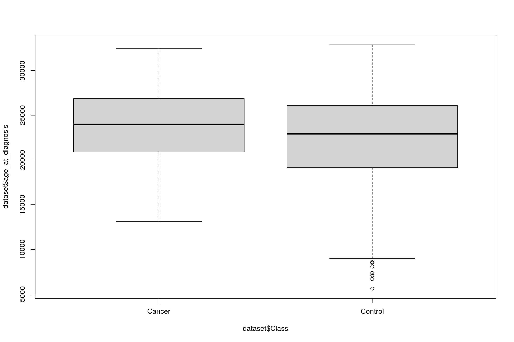
t.test(dataset$age_at_diagnosis ~ dataset$Class)
#>
#> Welch Two Sample t-test
#>
#> data: dataset$age_at_diagnosis by dataset$Class
#> t = 3.88, df = 360.55, p-value = 0.0001242
#> alternative hypothesis: true difference in means between group Case and group Control is not equal to 0
#> 95 percent confidence interval:
#> 693.0905 2117.7294
#> sample estimates:
#> mean in group Case mean in group Control
#> 23782.23 22376.82
OmicSelector_table(table(dataset$gender.x, dataset$Class))
#>
#> Case Control
#> female 80 334
#> male 98 325
chisq.test(dataset$gender.x, dataset$Class)
#>
#> Pearson's Chi-squared test with Yates' continuity correction
#>
#> data: dataset$gender.x and dataset$Class
#> X-squared = 1.6241, df = 1, p-value = 0.2025There is a statistically significant difference in age between classes. Gender was not associated with the class. To increase feature selection performance, we will try to balance the sets by performing propensity score matching.
old_dataset = dataset # backup
dataset = dataset[grepl("Adenocarcinomas", dataset$disease_type), ]
match_by = c("age_at_diagnosis", "gender.x")
tempdane = dplyr::select(dataset, all_of(match_by))
tempdane$Class = ifelse(dataset$Class == "Case", TRUE, FALSE)
suppressMessages(library(mice))
suppressMessages(library(MatchIt))
temp1 = mice(tempdane, m = 1)
#>
#> iter imp variable
#> 1 1 age_at_diagnosis
#> 2 1 age_at_diagnosis
#> 3 1 age_at_diagnosis
#> 4 1 age_at_diagnosis
#> 5 1 age_at_diagnosis
temp2 = temp1$data
temp3 = mice::complete(temp1)
temp3 = temp3[complete.cases(temp3), ]
tempform = OmicSelector_create_formula(match_by)
mod_match <- matchit(tempform, data = temp3)
newdata = match.data(mod_match)
dataset = dataset[as.numeric(rownames(newdata)), ]Let’s check if there is an imbalance in the new, transformed dataset.
boxplot(dataset$age_at_diagnosis ~ dataset$Class)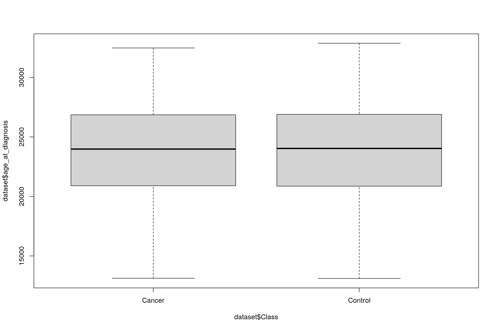
t.test(dataset$age_at_diagnosis ~ dataset$Class)
#>
#> Welch Two Sample t-test
#>
#> data: dataset$age_at_diagnosis by dataset$Class
#> t = -0.088413, df = 351.73, p-value = 0.9296
#> alternative hypothesis: true difference in means between group Case and group Control is not equal to 0
#> 95 percent confidence interval:
#> -905.7633 827.8307
#> sample estimates:
#> mean in group Case mean in group Control
#> 23782.23 23821.20
OmicSelector_table(table(dataset$gender.x, dataset$Class))
#>
#> Case Control
#> female 80 82
#> male 98 96
chisq.test(dataset$gender.x, dataset$Class)
#>
#> Pearson's Chi-squared test with Yates' continuity correction
#>
#> data: dataset$gender.x and dataset$Class
#> X-squared = 0.011327, df = 1, p-value = 0.9152
fwrite(dataset, "balanced_dataset.csv.gz")
OmicSelector_tutorial_balanced_dataset = dataset # can be used by data('OmicSelector_tutorial_balanced_dataset')There are no significant differences in age or gender composition between classes now. We can proceed to standard filtering, log-transformation, and TPM-normalization.
However, first, to stay consistent between different datasets, we need to standardize microRNA names. OmicSelector_correct_miRNA_names() unify the miRNA names between different versions of miRbase.
# In real file use: (we won't run this in this tutorial) dataset = OmicSelector_correct_miRNA_names(dataset) This will correct miRNA names based on
# the aliases. Useful when analyzing old datasets - to keep the results coherent with current knowledge.
danex = dplyr::select(dataset, starts_with("hsa")) # Create data.frame or matrix with miRNA counts with miRNAs in columns and cases in rows.
metadane = dplyr::select(dataset, -starts_with("hsa")) # Metadata with 'Class' variables.
OmicSelector_table(table(metadane$Class)) # Let's be sure that 'Class' variable is correct and contains only 'Case' and 'Control' cases.
#>
#> Case Control
#> 178 178
ttpm = OmicSelector_counts_to_log10tpm(danex, metadane, ids = metadane$sample, filtr = T, filtr_minimalcounts = 100, filtr_howmany = 1/3) # We will leave only the miRNAs which apeared with at least 100 counts in 1/3 of cases.
#>
#> DGEList unfiltered object with TPM was saved as TPM_DGEList.rds.
#> DGEList filtered object with TPM was saved as TPM_DGEList_filtered.rds.
#> (After filtering) miRNAs left: 166 | filtered out: 2418.
#> Returned data are log10(TPM).You might have noticed that we have filtered out microRNAs not having at least 100 counts in 1/3 of the samples. We did ensure that microRNAs selected as features for the classifier (possibly useful in the clinic) would be detectable in other, cheaper methods, such as qPCR. After filtering, there are 166 miRNAs left.
In the next step, we will divide the dataset into training, testing, and validation datasets. We strongly believe that hold-out validation is the most redundant validation method, and although OmicSelector supports cross-validation, the hold-out confirmation is set by default in most cases. Thus, the rest of the analysis is dependent on the existence of 3 separate datasets:
- Training dataset (
mixed_train.csv): By default 60%, used for differential expression, feature selection and model training. - Testing dataset (
mixed_test.csv): By default 20%, used for hyperparameter selection (inholdout=Tmode) and for performance assessment. - Validation dataset (
mixed_valid.csv): By default 20%, used only for performance assessment.
The best signature (best set of miRNAs for the diagnostic test) can be selected based on all three datasets, two datasets, or only a validation set. We will discuss the process of the best signature selection below.
The split can be prepared manually by the user (the pipeline expects to find mixed_*.csv files in the working directory) or in a convenient way using OmicSelector_prepare_split(). Let’s do it now.
mixed = OmicSelector_prepare_split(metadane = metadane, ttpm = ttpm, train_proc = 0.6)
#>
#> Saved 3 sets as csv in working directory. Retruned mixed dataset.
OmicSelector_tutorial_balanced_mixed = mixed # can be used by data('OmicSelector_tutorial_balanced_mixed')Let’s see a split summary.
mixed = fread("mixed.csv")
OmicSelector_table(table(mixed$Class, mixed$mix))
#>
#> test train valid
#> Case 36 107 35
#> Control 36 107 35
OmicSelector_table(cbind(mixed[1:10, c(100:105)], Class = mixed[1:10, "Class"]))
#> hsa.miR.30c.5p hsa.miR.30c.2.3p hsa.miR.30d.5p hsa.miR.139.5p
#> 1: 2.598949 1.514444 3.802908 1.555401
#> 2: 2.391663 1.416540 3.656058 1.326116
#> 3: 2.576255 1.566166 3.721311 1.220338
#> 4: 2.260491 1.401010 3.539243 1.924365
#> 5: 2.595315 1.562735 3.571441 1.721510
#> 6: 2.632860 1.723000 3.708021 2.120359
#> 7: 2.747742 2.016887 3.852090 1.533525
#> 8: 3.037578 1.880192 3.960987 1.798007
#> 9: 2.598933 1.291485 3.581714 1.413095
#> 10: 2.829601 1.494520 3.589292 1.755581
#> hsa.miR.10a.5p hsa.miR.10b.5p Class.Class
#> 1: 4.735516 4.298381 Case
#> 2: 4.615369 3.946954 Case
#> 3: 4.385001 3.998914 Case
#> 4: 3.945605 4.486228 Case
#> 5: 4.519249 4.126032 Case
#> 6: 4.875796 3.887056 Case
#> 7: 3.961177 3.642831 Case
#> 8: 4.675070 4.133894 Case
#> 9: 4.580566 3.960672 Case
#> 10: 4.687104 4.209582 CaseWe can see that the dataset was divided in a balanced way. Now we are ready to move to the analysis…
Basic exploratory analysis
In biomarker studies, we rely on validation. We perform hold-out verification, so the signature selection has to be based on the training dataset only. Including testing and validation dataset in the exploratory analysis could lead to bias (‘data leakage’). In the following section, we show how to use our package to perform quick exploratory analysis of miRNA-seq data.
dane = OmicSelector_load_datamix() # load mixed_*.csv files
#> Balanced dataset will be save as mixed_train_balanced.csv
#> There is no need to balance datasets.
train = dane[[1]]
test = dane[[2]]
valid = dane[[3]]
train_smoted = dane[[4]]
trainx = dane[[5]]
trainx_smoted = dane[[6]] # get the objects from list to make the code more readable.OmicSelector_load_datamix() function loads the data created in preparation phase. It requires the output constructed by OmicSelector_prepare_split() function to be placed in working directory (‘wd’), thus files ‘mixed_train.csv’, ‘mixed_test.csv’ and ‘mixed_valid.csv’ have to exist in the directory. If you have split the data manually, there may be some imbalance of classes in train, test, or validation datasets. If so, OmicSelector_prepare_split() perform balancing using:
- ROSE: https://journal.r-project.org/archive/2014/RJ-2014-008/RJ-2014-008.pdf - by default, we generate 10 * number of cases in the original dataset.
- SMOTE (default): https://arxiv.org/abs/1106.1813 - by default, we use our modification of SMOTE, i.e. we add SMOTEd cases only to the minority class (we do not down-/sample majority class). The minimal amount of added rows is calculated to compensate for the imbalance problem. See details in the code of
OmicSelector_load_datamix().
At the beginning of the analysis, we usually perform principal component analysis (PCA) to assess any batch effect and possible outliers; hence understand the miRNA profile. The package can construct a 2-dimensional biplot and a 3-dimensional interactive scatterplot based on the computed components.
pca = OmicSelector_PCA(trainx, train$Class)
pca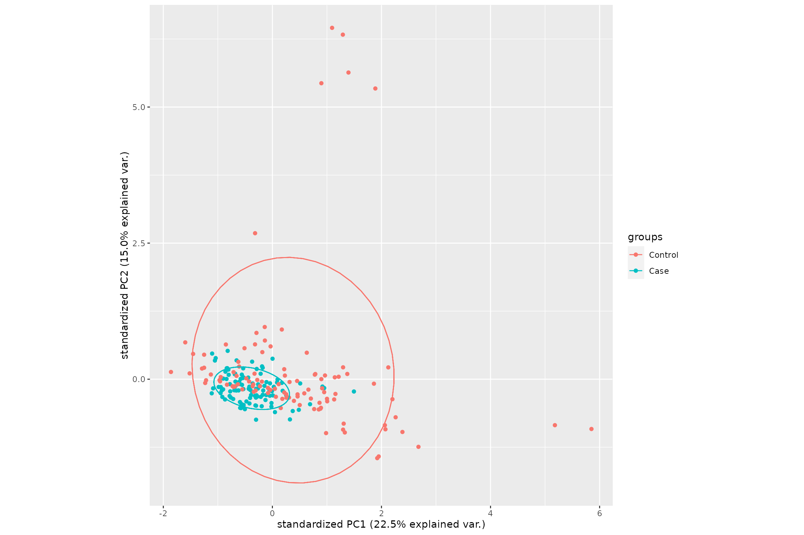
3D PCA plot may not be shown correctly in Jupyter notebook, but you can check it in, e.g., R Studio.
if (is.null(sessionInfo()$loadedOnly$IRdisplay)) {
# if not in the Jupyter, if you run OmicSelector_PCA_3D in learning/editing Jupyter enviorment it may cause: *** caught segfault *** address 0x1,
# cause 'memory not mapped'
pca3d = OmicSelector_PCA_3D(trainx, train$Class)
pca3d
}Now we can also correct the batch effect if there is any. For example, you can use OmicSelector_combat() to do so. However, the detailed demonstration is out of the scope of this tutorial.
Usually, the next step in the exploratory analysis is to perform the differential expression analysis. Differential expression in our package is biomarker-discovery oriented. Thus it uses a t-test with the correction for multiple comparisons. The following table shows significantly differently expressed miRNAs after Benjamini-Hochberg correction.
de = OmicSelector_differential_expression_ttest(trainx, train$Class)
sig_de = de %>%
dplyr::filter(`p-value BH` <= 0.05) %>%
dplyr::arrange(`p-value BH`) # leave only significant after Benjamini-Hochberg procedure and sort by ascending p-value
OmicSelector_table(sig_de)
#> miR mean logtpm median logtpm SD logtpm Case mean
#> 1 hsa.miR.21.5p 5.063765 5.133708 0.5623667 5.473043
#> 2 hsa.miR.30e.3p 3.638870 3.616143 0.2799665 3.445100
#> 3 hsa.miR.30a.3p 3.837036 3.753041 0.5022355 3.494206
#> 4 hsa.miR.217.5p 2.079688 1.952510 1.1912052 2.817892
#> 5 hsa.miR.132.3p 2.070046 2.076293 0.3245292 2.268277
#> 6 hsa.miR.30c.2.3p 1.782310 1.663107 0.4886265 1.478041
#> 7 hsa.miR.199a.5p 3.023603 3.105261 0.4041090 3.267832
#> 8 hsa.miR.375.3p 3.865214 4.184892 1.1484945 4.572062
#> 9 hsa.miR.338.3p 2.733143 2.779949 0.4380810 2.991348
#> 10 hsa.miR.139.5p 1.913846 1.913341 0.4810609 1.634747
#> 11 hsa.miR.199a.3p 3.409320 3.494198 0.3711802 3.620030
#> 12 hsa.miR.199b.5p 2.115217 2.358829 0.6715123 2.504540
#> 13 hsa.miR.199b.3p 3.408151 3.493458 0.3713055 3.619075
#> 14 hsa.miR.127.5p 2.205479 2.305883 0.4903216 2.486170
#> 15 hsa.miR.381.3p 1.724069 1.783445 0.4605704 1.974984
#> 16 hsa.miR.181b.5p 2.432671 2.513257 0.4273673 2.664940
#> 17 hsa.miR.194.5p 3.100719 3.349198 0.8451419 3.562675
#> 18 hsa.miR.200a.3p 2.307188 2.438507 0.6702754 2.660594
#> 19 hsa.miR.378a.3p 2.584557 2.535742 0.3991343 2.378397
#> 20 hsa.miR.200a.5p 2.445474 2.520711 0.5842108 2.744628
#> 21 hsa.miR.192.5p 3.446481 3.723465 0.9144092 3.920081
#> 22 hsa.miR.136.5p 1.424626 1.525235 0.5863676 1.722033
#> 23 hsa.miR.134.5p 2.370576 2.433393 0.4121128 2.572457
#> 24 hsa.miR.127.3p 2.807271 2.845981 0.3913467 2.995898
#> 25 hsa.miR.21.3p 2.924646 2.998528 0.4567584 3.143884
#> 26 hsa.miR.141.3p 2.434079 2.564929 0.7373725 2.787653
#> 27 hsa.miR.144.5p 1.785848 1.785036 0.6435958 1.481479
#> 28 hsa.miR.181c.3p 1.543019 1.598609 0.3148896 1.691125
#> 29 hsa.miR.181a.3p 2.085623 2.170337 0.3778079 2.261578
#> 30 hsa.miR.200b.3p 2.688455 2.764796 0.5730839 2.949316
#> 31 hsa.miR.141.5p 2.179287 2.390875 0.7039189 2.500775
#> 32 hsa.miR.210.3p 2.237359 2.278237 0.6922277 2.547543
#> 33 hsa.miR.182.5p 3.651187 3.718147 0.4691675 3.858145
#> 34 hsa.miR.451a 2.509441 2.445929 0.6278077 2.233131
#> 35 hsa.miR.30a.5p 4.397064 4.317914 0.4443611 4.199892
#> 36 hsa.miR.708.3p 1.554475 1.804396 0.7218909 1.878493
#> 37 hsa.miR.378a.5p 1.791249 1.690109 0.4087367 1.610886
#> 38 hsa.miR.379.5p 2.830993 2.902898 0.4060068 3.006836
#> 39 hsa.miR.146b.5p 2.591202 2.656599 0.4365630 2.779955
#> 40 hsa.miR.29a.3p 3.836283 3.821729 0.2406661 3.736185
#> 41 hsa.miR.337.3p 1.510489 1.614839 0.4175251 1.685505
#> 42 hsa.miR.486.5p 2.095058 2.033727 0.6417395 1.830616
#> 43 hsa.miR.23a.3p 3.400602 3.461181 0.2287938 3.494149
#> 44 hsa.let.7c.5p 3.426493 3.439771 0.3432825 3.287237
#> 45 hsa.miR.30c.5p 2.805184 2.749100 0.3498038 2.661967
#> 46 hsa.miR.183.5p 3.190569 3.255500 0.4728759 3.381328
#> 47 hsa.miR.221.3p 2.282932 2.343587 0.3580926 2.427381
#> 48 hsa.miR.335.3p 1.769590 1.798940 0.4034730 1.932717
#> 49 hsa.miR.181a.5p 3.142092 3.246986 0.4294392 3.316282
#> 50 hsa.miR.429 1.795221 1.992255 0.9015297 2.162646
#> 51 hsa.miR.27a.3p 2.999080 3.043529 0.2670051 3.104509
#> 52 hsa.miR.30d.5p 3.810001 3.770403 0.2648393 3.705810
#> 53 hsa.miR.185.5p 1.684376 1.729452 0.3073263 1.803017
#> 54 hsa.miR.145.5p 3.431984 3.362197 0.3611134 3.294171
#> 55 hsa.miR.625.3p 2.057207 2.104397 0.3786375 2.200772
#> 56 hsa.miR.181c.5p 1.653032 1.677984 0.3781842 1.795267
#> 57 hsa.miR.93.5p 3.295654 3.325971 0.2757848 3.398683
#> 58 hsa.miR.143.3p 4.956274 4.868284 0.4259423 4.799815
#> 59 hsa.miR.126.5p 2.204450 2.165379 0.4084107 2.056938
#> 60 hsa.miR.30b.5p 2.609756 2.613248 0.3203468 2.499914
#> 61 hsa.miR.142.3p 2.876814 2.942069 0.5428700 3.062898
#> 62 hsa.let.7i.5p 2.591252 2.619389 0.3065908 2.696086
#> 63 hsa.miR.223.3p 2.250137 2.334193 0.4725274 2.408097
#> 64 hsa.miR.22.3p 4.889597 4.924058 0.2668192 4.979132
#> 65 hsa.miR.629.5p 1.712285 1.765836 0.2776946 1.804344
#> 66 hsa.miR.222.3p 1.677414 1.701526 0.3405862 1.788188
#> 67 hsa.miR.423.5p 1.556030 1.541466 0.3471030 1.443133
#> 68 hsa.miR.320a.3p 2.526211 2.517211 0.2565762 2.443505
#> 69 hsa.miR.10b.5p 4.303271 4.175427 0.6471731 4.092497
#> 70 hsa.miR.126.3p 3.289873 3.253431 0.4140583 3.157448
#> 71 hsa.miR.10a.5p 4.424993 4.566479 0.4508503 4.567356
#> 72 hsa.miR.26b.5p 2.776829 2.742438 0.2983451 2.683523
#> 73 hsa.miR.200c.3p 3.473260 3.617287 0.6766216 3.679499
#> 74 hsa.miR.142.5p 1.507842 1.634397 0.6564479 1.707036
#> 75 hsa.miR.151a.5p 1.784432 1.824896 0.2371192 1.854691
#> 76 hsa.miR.20a.5p 2.155026 2.190100 0.3525193 2.258504
#> 77 hsa.miR.29c.3p 3.305005 3.326549 0.3531954 3.202955
#> 78 hsa.miR.99a.5p 2.910978 2.910856 0.3865223 2.800660
#> 79 hsa.miR.15a.5p 1.944326 1.972225 0.2975558 2.027709
#> 80 hsa.miR.582.3p 2.073791 2.102870 0.3726448 1.973266
#> 81 hsa.miR.155.5p 2.123174 2.174600 0.4145872 2.233687
#> 82 hsa.miR.365a.3p 1.566574 1.524607 0.3527401 1.472455
#> 83 hsa.miR.365b.3p 1.566607 1.524607 0.3525157 1.472599
#> 84 hsa.miR.195.5p 1.612305 1.652954 0.4559105 1.492892
#> 85 hsa.miR.146a.5p 1.826869 1.867265 0.4247246 1.936147
#> 86 hsa.miR.30e.5p 3.656258 3.633246 0.2997049 3.579560
#> 87 hsa.miR.17.3p 2.261682 2.309545 0.2693310 2.330198
#> 88 hsa.miR.92b.3p 1.771878 1.731752 0.3783743 1.865526
#> 89 hsa.miR.145.3p 1.785042 1.752357 0.3186629 1.706504
#> 90 hsa.miR.34a.5p 2.060997 2.084934 0.2688795 2.125712
#> 91 hsa.miR.1307.5p 2.009184 2.068418 0.4676405 2.121558
#> 92 hsa.miR.140.3p 3.002465 3.010484 0.2393405 2.949429
#> 93 hsa.let.7b.5p 4.190210 4.208339 0.3028106 4.256938
#> 94 hsa.miR.128.3p 1.950322 1.943942 0.2291673 2.000480
#> 95 hsa.miR.584.5p 1.538769 1.590351 0.4266696 1.631694
#> 96 hsa.miR.99b.5p 4.324540 4.305477 0.2799112 4.263737
#> 97 hsa.let.7d.5p 2.200227 2.190726 0.2100186 2.154807
#> 98 hsa.miR.660.5p 1.658536 1.706135 0.3894259 1.742335
#> 99 hsa.miR.26a.5p 3.351085 3.337122 0.2085051 3.307628
#> 100 hsa.miR.146b.3p 1.878638 1.952434 0.4884947 1.979342
#> 101 hsa.miR.16.5p 2.399688 2.375952 0.2728098 2.344887
#> 102 hsa.let.7a.3p 1.324651 1.426826 0.6575705 1.454096
#> 103 hsa.miR.193a.5p 2.334514 2.285874 0.3546912 2.266930
#> 104 hsa.miR.29b.3p 2.712806 2.721041 0.3866307 2.785646
#> 105 hsa.miR.425.5p 1.923788 1.934382 0.3408771 1.987356
#> 106 hsa.miR.103a.3p 4.077901 4.103943 0.2070893 4.115271
#> 107 hsa.miR.148a.3p 4.409063 4.344420 0.4253854 4.484335
#> 108 hsa.miR.361.3p 2.106441 2.104345 0.2855053 2.157051
#> 109 hsa.miR.106b.5p 2.050517 2.082575 0.2900255 2.101639
#> 110 hsa.miR.452.5p 1.622915 1.677195 0.3912335 1.691423
#> 111 hsa.miR.28.3p 3.484746 3.459476 0.2437584 3.442283
#> 112 hsa.miR.17.5p 2.262025 2.273321 0.2917783 2.310978
#> 113 hsa.miR.23b.3p 3.146028 3.144570 0.1573676 3.120156
#> 114 hsa.miR.484 1.598546 1.580193 0.2996914 1.550795
#> 115 hsa.miR.197.3p 2.323642 2.301585 0.3743290 2.265271
#> 116 hsa.miR.196b.5p 1.658686 1.674999 0.8496073 1.534198
#> 117 hsa.let.7g.5p 2.740008 2.739903 0.2689666 2.701240
#> Case median Case SD Control mean Control median Control SD
#> 1 5.559281 0.3042087 4.654487 4.716008 0.4525216
#> 2 3.469065 0.1835853 3.832639 3.824946 0.2190817
#> 3 3.528067 0.2957390 4.179866 4.232030 0.4267509
#> 4 2.596188 1.0079357 1.341484 1.291645 0.8574499
#> 5 2.222890 0.2453178 1.871815 1.824488 0.2685491
#> 6 1.473434 0.2548946 2.086580 2.066501 0.4773742
#> 7 3.318017 0.2924584 2.779375 2.775925 0.3495662
#> 8 4.593208 0.6167635 3.158365 3.348468 1.1231336
#> 9 2.994550 0.3219668 2.474937 2.470348 0.3839007
#> 10 1.558070 0.3573670 2.192945 2.203464 0.4243213
#> 11 3.670480 0.2685999 3.198609 3.243520 0.3392163
#> 12 2.573683 0.3567535 1.725893 1.795593 0.6876288
#> 13 3.669630 0.2686093 3.197226 3.242509 0.3392162
#> 14 2.478848 0.3020641 1.924788 1.869247 0.4824876
#> 15 1.949285 0.3353016 1.473153 1.464170 0.4321102
#> 16 2.705753 0.2848923 2.200401 2.198169 0.4206291
#> 17 3.633753 0.4167141 2.638764 2.314830 0.9114745
#> 18 2.674894 0.3970887 1.953782 2.111872 0.7021033
#> 19 2.381114 0.2557418 2.790717 2.823537 0.4109862
#> 20 2.777438 0.3622178 2.146321 2.330899 0.6115131
#> 21 3.942126 0.4108526 2.972880 2.825745 1.0288583
#> 22 1.713813 0.2950712 1.127219 1.199522 0.6521194
#> 23 2.557931 0.2993653 2.168694 2.117258 0.4115522
#> 24 3.006282 0.3147991 2.618643 2.571845 0.3698901
#> 25 3.238660 0.3956108 2.705408 2.678386 0.4070369
#> 26 2.835787 0.4142754 2.080505 2.281186 0.8176514
#> 27 1.461856 0.4729441 2.090217 2.157194 0.6493333
#> 28 1.690791 0.2009568 1.394912 1.394164 0.3384936
#> 29 2.305816 0.2347854 1.909669 2.003543 0.4113344
#> 30 3.014389 0.3627291 2.427594 2.579273 0.6252963
#> 31 2.556782 0.3976527 1.857800 2.030711 0.7930270
#> 32 2.542301 0.5385826 1.927174 2.071717 0.6917825
#> 33 3.842168 0.3744427 3.444228 3.531066 0.4643642
#> 34 2.192706 0.4710976 2.785750 2.828596 0.6449312
#> 35 4.226049 0.2683567 4.594235 4.521923 0.4962602
#> 36 1.937453 0.3169286 1.230457 1.227310 0.8571868
#> 37 1.612851 0.2430057 1.971612 1.980406 0.4593261
#> 38 3.034753 0.2966347 2.655150 2.661967 0.4252306
#> 39 2.835954 0.2919913 2.402448 2.428473 0.4751692
#> 40 3.745283 0.1796643 3.936380 3.946603 0.2527437
#> 41 1.704399 0.2599192 1.335473 1.233283 0.4700018
#> 42 1.754483 0.4121882 2.359500 2.307229 0.7186562
#> 43 3.504609 0.1702973 3.307055 3.310287 0.2419062
#> 44 3.332260 0.2860501 3.565748 3.601516 0.3403276
#> 45 2.661797 0.1963921 2.948401 2.918049 0.4073091
#> 46 3.357706 0.3966813 2.999809 3.110272 0.4674523
#> 47 2.408815 0.2861108 2.138483 2.162035 0.3656313
#> 48 1.892784 0.2426583 1.606464 1.615192 0.4631534
#> 49 3.343112 0.2324404 2.967902 2.916702 0.5052627
#> 50 2.205144 0.3857231 1.427795 1.668442 1.1008391
#> 51 3.109418 0.2287859 2.893651 2.903005 0.2616730
#> 52 3.708021 0.1763818 3.914191 3.934386 0.2965043
#> 53 1.789963 0.1825995 1.565736 1.551690 0.3578137
#> 54 3.279623 0.2492612 3.569798 3.506695 0.4019471
#> 55 2.210917 0.2188272 1.913641 1.863886 0.4456334
#> 56 1.778815 0.2462991 1.510796 1.475299 0.4311484
#> 57 3.400925 0.1891085 3.192625 3.243064 0.3092567
#> 58 4.796805 0.2682101 5.112733 4.992703 0.4931608
#> 59 2.063790 0.2104761 2.351961 2.492706 0.4969327
#> 60 2.507222 0.2120817 2.719597 2.742168 0.3699671
#> 61 3.069081 0.3324835 2.690729 2.700531 0.6416715
#> 62 2.717300 0.1738861 2.486419 2.442577 0.3694034
#> 63 2.462940 0.4003810 2.092177 2.018387 0.4878446
#> 64 4.983023 0.1344526 4.800063 4.822221 0.3298407
#> 65 1.819456 0.2016194 1.620226 1.647923 0.3117628
#> 66 1.797616 0.2933599 1.566641 1.642215 0.3496562
#> 67 1.425446 0.2069216 1.668926 1.694047 0.4165925
#> 68 2.440882 0.2043264 2.608918 2.601120 0.2769923
#> 69 4.126032 0.2208435 4.514044 4.424580 0.8385442
#> 70 3.162873 0.2190488 3.422297 3.597381 0.5109991
#> 71 4.619375 0.2726925 4.282630 4.434774 0.5414532
#> 72 2.667076 0.2076405 2.870135 2.865579 0.3437564
#> 73 3.713871 0.3714689 3.267021 3.457128 0.8343212
#> 74 1.728336 0.3336782 1.308647 1.347850 0.8212590
#> 75 1.836098 0.1493639 1.714174 1.775494 0.2840882
#> 76 2.252491 0.2151305 2.051549 2.073033 0.4263960
#> 77 3.215627 0.2277490 3.407055 3.475069 0.4216353
#> 78 2.801168 0.3181101 3.021295 3.002568 0.4176659
#> 79 2.007988 0.1768348 1.860943 1.905452 0.3641526
#> 80 1.974597 0.2964765 2.174316 2.295801 0.4132055
#> 81 2.297068 0.3475670 2.012661 2.003792 0.4471320
#> 82 1.482687 0.2603646 1.660693 1.622326 0.4054029
#> 83 1.482687 0.2598729 1.660614 1.622326 0.4053782
#> 84 1.530241 0.2351047 1.731718 1.800811 0.5775875
#> 85 1.968467 0.3763981 1.717591 1.743777 0.4435082
#> 86 3.581958 0.1513627 3.732955 3.820135 0.3817156
#> 87 2.324300 0.1630184 2.193166 2.229164 0.3312254
#> 88 1.808052 0.2617419 1.678230 1.661628 0.4488548
#> 89 1.693139 0.2239980 1.863579 1.845456 0.3760614
#> 90 2.136584 0.1931050 1.996282 2.015985 0.3154834
#> 91 2.143052 0.3137240 1.896810 1.896964 0.5617132
#> 92 2.935298 0.2005767 3.055501 3.084068 0.2630559
#> 93 4.282751 0.1889508 4.123482 4.071226 0.3735798
#> 94 1.993252 0.1994596 1.900164 1.902729 0.2463077
#> 95 1.617141 0.3258710 1.445843 1.547316 0.4921242
#> 96 4.282048 0.1951765 4.385343 4.395284 0.3344878
#> 97 2.147459 0.1420691 2.245646 2.283685 0.2535416
#> 98 1.736172 0.1929619 1.574737 1.641509 0.5033134
#> 99 3.297116 0.1471895 3.394542 3.394456 0.2487598
#> 100 1.993235 0.3044790 1.777933 1.820098 0.6052467
#> 101 2.354009 0.1520643 2.454489 2.508966 0.3469380
#> 102 1.472496 0.2172292 1.195207 1.361063 0.8876152
#> 103 2.278125 0.1938504 2.402099 2.324802 0.4538711
#> 104 2.771371 0.2357865 2.639965 2.694850 0.4838077
#> 105 1.978949 0.2395357 1.860221 1.864779 0.4098235
#> 106 4.122395 0.1680536 4.040532 4.053412 0.2347662
#> 107 4.443423 0.3526879 4.333791 4.238718 0.4772685
#> 108 2.182644 0.1719882 2.055831 2.042586 0.3592277
#> 109 2.106981 0.1830639 1.999394 2.080335 0.3608800
#> 110 1.719895 0.2895699 1.554407 1.611540 0.4628664
#> 111 3.445475 0.2164372 3.527209 3.521136 0.2625100
#> 112 2.306164 0.2002775 2.213072 2.236938 0.3551383
#> 113 3.106189 0.1396735 3.171899 3.185124 0.1700082
#> 114 1.553409 0.1598979 1.646298 1.679012 0.3876937
#> 115 2.273093 0.1576729 2.382013 2.363793 0.4998269
#> 116 1.619857 0.8022235 1.783175 1.877649 0.8806958
#> 117 2.687710 0.2007329 2.778776 2.829748 0.3194378
#> log10FC (subtr estim) log10FC log2FC reversed_log10FC
#> 1 0.81855583 0.81855583 2.7191836 -0.81855583
#> 2 -0.38753872 -0.38753872 -1.2873758 0.38753872
#> 3 -0.68566035 -0.68566035 -2.2777144 0.68566035
#> 4 1.47640760 1.47640760 4.9045199 -1.47640760
#> 5 0.39646222 0.39646222 1.3170190 -0.39646222
#> 6 -0.60853901 -0.60853901 -2.0215228 0.60853901
#> 7 0.48845650 0.48845650 1.6226174 -0.48845650
#> 8 1.41369691 1.41369691 4.6961995 -1.41369691
#> 9 0.51641082 0.51641082 1.7154796 -0.51641082
#> 10 -0.55819862 -0.55819862 -1.8542957 0.55819862
#> 11 0.42142114 0.42142114 1.3999307 -0.42142114
#> 12 0.77864687 0.77864687 2.5866089 -0.77864687
#> 13 0.42184901 0.42184901 1.4013521 -0.42184901
#> 14 0.56138233 0.56138233 1.8648717 -0.56138233
#> 15 0.50183075 0.50183075 1.6670457 -0.50183075
#> 16 0.46453912 0.46453912 1.5431655 -0.46453912
#> 17 0.92391051 0.92391051 3.0691643 -0.92391051
#> 18 0.70681200 0.70681200 2.3479786 -0.70681200
#> 19 -0.41232007 -0.41232007 -1.3696976 0.41232007
#> 20 0.59830709 0.59830709 1.9875331 -0.59830709
#> 21 0.94720143 0.94720143 3.1465351 -0.94720143
#> 22 0.59481407 0.59481407 1.9759296 -0.59481407
#> 23 0.40376326 0.40376326 1.3412725 -0.40376326
#> 24 0.37725536 0.37725536 1.2532152 -0.37725536
#> 25 0.43847653 0.43847653 1.4565875 -0.43847653
#> 26 0.70714799 0.70714799 2.3490948 -0.70714799
#> 27 -0.60873809 -0.60873809 -2.0221842 0.60873809
#> 28 0.29621239 0.29621239 0.9839963 -0.29621239
#> 29 0.35190849 0.35190849 1.1690147 -0.35190849
#> 30 0.52172178 0.52172178 1.7331222 -0.52172178
#> 31 0.64297510 0.64297510 2.1359171 -0.64297510
#> 32 0.62036968 0.62036968 2.0608235 -0.62036968
#> 33 0.41391626 0.41391626 1.3750001 -0.41391626
#> 34 -0.55261864 -0.55261864 -1.8357594 0.55261864
#> 35 -0.39434342 -0.39434342 -1.3099805 0.39434342
#> 36 0.64803615 0.64803615 2.1527295 -0.64803615
#> 37 -0.36072578 -0.36072578 -1.1983051 0.36072578
#> 38 0.35168601 0.35168601 1.1682756 -0.35168601
#> 39 0.37750648 0.37750648 1.2540494 -0.37750648
#> 40 -0.20019524 -0.20019524 -0.6650342 0.20019524
#> 41 0.35003238 0.35003238 1.1627824 -0.35003238
#> 42 -0.52888354 -0.52888354 -1.7569131 0.52888354
#> 43 0.18709436 0.18709436 0.6215140 -0.18709436
#> 44 -0.27851047 -0.27851047 -0.9251918 0.27851047
#> 45 -0.28643386 -0.28643386 -0.9515127 0.28643386
#> 46 0.38151907 0.38151907 1.2673789 -0.38151907
#> 47 0.28889807 0.28889807 0.9596986 -0.28889807
#> 48 0.32625295 0.32625295 1.0837888 -0.32625295
#> 49 0.34838002 0.34838002 1.1572934 -0.34838002
#> 50 0.73485098 0.73485098 2.4411221 -0.73485098
#> 51 0.21085787 0.21085787 0.7004547 -0.21085787
#> 52 -0.20838086 -0.20838086 -0.6922262 0.20838086
#> 53 0.23728081 0.23728081 0.7882298 -0.23728081
#> 54 -0.27562663 -0.27562663 -0.9156118 0.27562663
#> 55 0.28713041 0.28713041 0.9538266 -0.28713041
#> 56 0.28447144 0.28447144 0.9449937 -0.28447144
#> 57 0.20605852 0.20605852 0.6845116 -0.20605852
#> 58 -0.31291886 -0.31291886 -1.0394939 0.31291886
#> 59 -0.29502323 -0.29502323 -0.9800460 0.29502323
#> 60 -0.21968342 -0.21968342 -0.7297725 0.21968342
#> 61 0.37216907 0.37216907 1.2363189 -0.37216907
#> 62 0.20966664 0.20966664 0.6964975 -0.20966664
#> 63 0.31591943 0.31591943 1.0494616 -0.31591943
#> 64 0.17906919 0.17906919 0.5948550 -0.17906919
#> 65 0.18411830 0.18411830 0.6116277 -0.18411830
#> 66 0.22154603 0.22154603 0.7359600 -0.22154603
#> 67 -0.22579306 -0.22579306 -0.7500683 0.22579306
#> 68 -0.16541254 -0.16541254 -0.5494886 0.16541254
#> 69 -0.42154686 -0.42154686 -1.4003483 0.42154686
#> 70 -0.26484954 -0.26484954 -0.8798111 0.26484954
#> 71 0.28472601 0.28472601 0.9458393 -0.28472601
#> 72 -0.18661191 -0.18661191 -0.6199113 0.18661191
#> 73 0.41247779 0.41247779 1.3702215 -0.41247779
#> 74 0.39838941 0.39838941 1.3234210 -0.39838941
#> 75 0.14051750 0.14051750 0.4667890 -0.14051750
#> 76 0.20695535 0.20695535 0.6874908 -0.20695535
#> 77 -0.20410005 -0.20410005 -0.6780057 0.20410005
#> 78 -0.22063533 -0.22063533 -0.7329347 0.22063533
#> 79 0.16676569 0.16676569 0.5539836 -0.16676569
#> 80 -0.20105021 -0.20105021 -0.6678743 0.20105021
#> 81 0.22102630 0.22102630 0.7342335 -0.22102630
#> 82 -0.18823733 -0.18823733 -0.6253109 0.18823733
#> 83 -0.18801482 -0.18801482 -0.6245717 0.18801482
#> 84 -0.23882655 -0.23882655 -0.7933646 0.23882655
#> 85 0.21855634 0.21855634 0.7260284 -0.21855634
#> 86 -0.15339518 -0.15339518 -0.5095677 0.15339518
#> 87 0.13703215 0.13703215 0.4552110 -0.13703215
#> 88 0.18729631 0.18729631 0.6221849 -0.18729631
#> 89 -0.15707537 -0.15707537 -0.5217931 0.15707537
#> 90 0.12943019 0.12943019 0.4299578 -0.12943019
#> 91 0.22474747 0.22474747 0.7465949 -0.22474747
#> 92 -0.10607199 -0.10607199 -0.3523635 0.10607199
#> 93 0.13345588 0.13345588 0.4433308 -0.13345588
#> 94 0.10031670 0.10031670 0.3332449 -0.10031670
#> 95 0.18585109 0.18585109 0.6173840 -0.18585109
#> 96 -0.12160545 -0.12160545 -0.4039646 0.12160545
#> 97 -0.09083886 -0.09083886 -0.3017602 0.09083886
#> 98 0.16759822 0.16759822 0.5567492 -0.16759822
#> 99 -0.08691427 -0.08691427 -0.2887229 0.08691427
#> 100 0.20140931 0.20140931 0.6690672 -0.20140931
#> 101 -0.10960241 -0.10960241 -0.3640913 0.10960241
#> 102 0.25888968 0.25888968 0.8600129 -0.25888968
#> 103 -0.13516971 -0.13516971 -0.4490241 0.13516971
#> 104 0.14568120 0.14568120 0.4839425 -0.14568120
#> 105 0.12713481 0.12713481 0.4223327 -0.12713481
#> 106 0.07473937 0.07473937 0.2482788 -0.07473937
#> 107 0.15054378 0.15054378 0.5000956 -0.15054378
#> 108 0.10122013 0.10122013 0.3362460 -0.10122013
#> 109 0.10224553 0.10224553 0.3396523 -0.10224553
#> 110 0.13701612 0.13701612 0.4551577 -0.13701612
#> 111 -0.08492661 -0.08492661 -0.2821201 0.08492661
#> 112 0.09790598 0.09790598 0.3252366 -0.09790598
#> 113 -0.05174301 -0.05174301 -0.1718866 0.05174301
#> 114 -0.09550311 -0.09550311 -0.3172544 0.09550311
#> 115 -0.11674184 -0.11674184 -0.3878080 0.11674184
#> 116 -0.24897664 -0.24897664 -0.8270825 0.24897664
#> 117 -0.07753583 -0.07753583 -0.2575685 0.07753583
#> reversed_log2FC p-value p-value Bonferroni p-value Holm
#> 1 -2.7191836 2.173289e-35 3.607661e-33 3.607661e-33
#> 2 1.2873758 8.427592e-32 1.398980e-29 1.390553e-29
#> 3 2.2777144 5.467478e-30 9.076014e-28 8.966664e-28
#> 4 -4.9045199 4.177113e-24 6.934008e-22 6.808694e-22
#> 5 -1.3170190 2.278717e-23 3.782669e-21 3.691521e-21
#> 6 2.0215228 4.068609e-23 6.753892e-21 6.550461e-21
#> 7 -1.6226174 1.082618e-22 1.797146e-20 1.732189e-20
#> 8 -4.6961995 1.353644e-22 2.247049e-20 2.152294e-20
#> 9 -1.7154796 2.062873e-21 3.424370e-19 3.259340e-19
#> 10 1.8542957 1.171548e-20 1.944770e-18 1.839331e-18
#> 11 -1.3999307 1.361284e-19 2.259731e-17 2.096377e-17
#> 12 -2.5866089 1.196621e-19 1.986391e-17 1.866729e-17
#> 13 -1.4013521 1.271278e-19 2.110322e-17 1.970481e-17
#> 14 -1.8648717 1.564187e-19 2.596551e-17 2.393207e-17
#> 15 -1.6670457 7.180364e-18 1.191940e-15 1.091415e-15
#> 16 -1.5431655 1.378662e-17 2.288578e-15 2.081779e-15
#> 17 -3.0691643 4.151481e-17 6.891458e-15 6.227221e-15
#> 18 -2.3479786 3.225431e-16 5.354216e-14 4.805893e-14
#> 19 1.3696976 1.113741e-15 1.848810e-13 1.648336e-13
#> 20 -1.9875331 2.461384e-15 4.085897e-13 3.618234e-13
#> 21 -3.1465351 3.734091e-15 6.198591e-13 5.451773e-13
#> 22 -1.9759296 1.095426e-14 1.818406e-12 1.588367e-12
#> 23 -1.3412725 3.126079e-14 5.189291e-12 4.501554e-12
#> 24 -1.2532152 7.089917e-14 1.176926e-11 1.013858e-11
#> 25 -1.4565875 8.527485e-14 1.415563e-11 1.210903e-11
#> 26 -2.3490948 2.871101e-13 4.766027e-11 4.048252e-11
#> 27 2.0221842 2.958906e-13 4.911784e-11 4.142469e-11
#> 28 -0.9839963 6.221903e-13 1.032836e-10 8.648446e-11
#> 29 -1.1690147 1.197693e-12 1.988170e-10 1.652816e-10
#> 30 -1.7331222 4.113211e-12 6.827930e-10 5.635099e-10
#> 31 -2.1359171 4.582227e-12 7.606496e-10 6.231828e-10
#> 32 -2.0608235 5.932112e-12 9.847306e-10 8.008351e-10
#> 33 -1.3750001 1.311402e-11 2.176927e-09 1.757278e-09
#> 34 1.8357594 1.651042e-11 2.740729e-09 2.195885e-09
#> 35 1.3099805 1.769200e-11 2.936872e-09 2.335344e-09
#> 36 -2.1527295 1.881929e-11 3.124002e-09 2.465327e-09
#> 37 1.1983051 2.422670e-11 4.021633e-09 3.149472e-09
#> 38 -1.1682756 3.927142e-11 6.519056e-09 5.066013e-09
#> 39 -1.2540494 5.124779e-11 8.507133e-09 6.559717e-09
#> 40 0.6650342 2.559056e-10 4.248033e-08 3.224410e-08
#> 41 -1.1627824 2.497735e-10 4.146241e-08 3.172124e-08
#> 42 1.7569131 4.996586e-10 8.294333e-08 6.245732e-08
#> 43 -0.6215140 5.466581e-10 9.074525e-08 6.778561e-08
#> 44 0.9251918 6.634945e-10 1.101401e-07 8.160982e-08
#> 45 0.9515127 8.186514e-10 1.358961e-07 9.987547e-08
#> 46 -1.2673789 8.363025e-10 1.388262e-07 1.011926e-07
#> 47 -0.9596986 8.826110e-10 1.465134e-07 1.059133e-07
#> 48 -1.0837888 1.234598e-09 2.049433e-07 1.469172e-07
#> 49 -1.1572934 1.265820e-09 2.101262e-07 1.493668e-07
#> 50 -2.4411221 1.399491e-09 2.323155e-07 1.637404e-07
#> 51 -0.7004547 1.992791e-09 3.308033e-07 2.311637e-07
#> 52 0.6922262 3.143976e-09 5.219001e-07 3.615573e-07
#> 53 -0.7882298 7.494584e-09 1.244101e-06 8.543826e-07
#> 54 0.9156118 9.405442e-09 1.561303e-06 1.062815e-06
#> 55 -0.9538266 1.475513e-08 2.449352e-06 1.652575e-06
#> 56 -0.9449937 1.702216e-08 2.825679e-06 1.889460e-06
#> 57 -0.6845116 2.023571e-08 3.359128e-06 2.225928e-06
#> 58 1.0394939 3.946545e-08 6.551265e-06 4.301734e-06
#> 59 0.9800460 8.205316e-08 1.362082e-05 8.861741e-06
#> 60 0.7297725 3.126783e-07 5.190460e-05 3.345658e-05
#> 61 -1.2363189 3.360795e-07 5.578920e-05 3.562443e-05
#> 62 -0.6964975 3.822586e-07 6.345492e-05 4.013715e-05
#> 63 -1.0494616 5.355512e-07 8.890150e-05 5.569733e-05
#> 64 -0.5948550 6.900078e-07 1.145413e-04 7.107080e-05
#> 65 -0.6116277 7.409875e-07 1.230039e-04 7.558072e-05
#> 66 -0.7359600 1.111478e-06 1.845054e-04 1.122593e-04
#> 67 0.7500683 1.393649e-06 2.313457e-04 1.393649e-04
#> 68 0.5494886 1.454260e-06 2.414072e-04 1.439718e-04
#> 69 1.4003483 1.738962e-06 2.886677e-04 1.704183e-04
#> 70 0.8798111 2.262203e-06 3.755257e-04 2.194337e-04
#> 71 -0.9458393 2.851846e-06 4.734065e-04 2.737772e-04
#> 72 0.6199113 3.300414e-06 5.478686e-04 3.135393e-04
#> 73 -1.3702215 6.701925e-06 1.112519e-03 6.299809e-04
#> 74 -1.3234210 7.634646e-06 1.267351e-03 7.100221e-04
#> 75 -0.4667890 1.152368e-05 1.912931e-03 1.060179e-03
#> 76 -0.6874908 1.418122e-05 2.354083e-03 1.290491e-03
#> 77 0.6780057 1.904590e-05 3.161619e-03 1.714131e-03
#> 78 0.7329347 2.204741e-05 3.659870e-03 1.962220e-03
#> 79 -0.5539836 3.535027e-05 5.868145e-03 3.110824e-03
#> 80 0.6678743 6.355798e-05 1.055063e-02 5.529545e-03
#> 81 -0.7342335 7.708432e-05 1.279600e-02 6.629252e-03
#> 82 0.6253109 7.854699e-05 1.303880e-02 6.676494e-03
#> 83 0.6245717 7.931159e-05 1.316572e-02 6.676494e-03
#> 84 0.7933646 1.180568e-04 1.959742e-02 9.798710e-03
#> 85 -0.7260284 1.370059e-04 2.274298e-02 1.123448e-02
#> 86 0.5095677 1.706276e-04 2.832419e-02 1.382084e-02
#> 87 -0.4552110 1.793398e-04 2.977040e-02 1.434718e-02
#> 88 -0.6221849 2.616416e-04 4.343250e-02 2.066968e-02
#> 89 0.5217931 2.771332e-04 4.600411e-02 2.161639e-02
#> 90 -0.4299578 3.857830e-04 6.403998e-02 2.970529e-02
#> 91 -0.7465949 4.000784e-04 6.641302e-02 3.040596e-02
#> 92 0.3523635 1.082992e-03 1.797768e-01 8.122444e-02
#> 93 -0.4433308 1.206782e-03 2.003259e-01 8.930189e-02
#> 94 -0.3332449 1.246070e-03 2.068476e-01 9.096311e-02
#> 95 -0.6173840 1.340253e-03 2.224820e-01 9.649821e-02
#> 96 0.4039646 1.398815e-03 2.322033e-01 9.931587e-02
#> 97 0.3017602 1.476339e-03 2.450723e-01 1.033438e-01
#> 98 -0.5567492 1.622024e-03 2.692560e-01 1.119197e-01
#> 99 0.2887229 2.187168e-03 3.630699e-01 1.487274e-01
#> 100 -0.6690672 2.484583e-03 4.124408e-01 1.664671e-01
#> 101 0.3640913 3.247692e-03 5.391168e-01 2.143477e-01
#> 102 -0.8600129 4.059661e-03 6.739037e-01 2.638780e-01
#> 103 0.4490241 5.275321e-03 8.757033e-01 3.376205e-01
#> 104 -0.4839425 5.767813e-03 9.574569e-01 3.633722e-01
#> 105 -0.4223327 6.218319e-03 1.000000e+00 3.855358e-01
#> 106 -0.2482788 8.053806e-03 1.000000e+00 4.912822e-01
#> 107 -0.5000956 9.375709e-03 1.000000e+00 5.625426e-01
#> 108 -0.3362460 9.445084e-03 1.000000e+00 5.625426e-01
#> 109 -0.3396523 9.828153e-03 1.000000e+00 5.700329e-01
#> 110 -0.4551577 1.022275e-02 1.000000e+00 5.826970e-01
#> 111 0.2821201 1.052017e-02 1.000000e+00 5.891296e-01
#> 112 -0.3252366 1.397880e-02 1.000000e+00 7.688337e-01
#> 113 0.1718866 1.585209e-02 1.000000e+00 8.560127e-01
#> 114 0.3172544 1.986786e-02 1.000000e+00 1.000000e+00
#> 115 0.3878080 2.284330e-02 1.000000e+00 1.000000e+00
#> 116 0.8270825 3.175761e-02 1.000000e+00 1.000000e+00
#> 117 0.2575685 3.488833e-02 1.000000e+00 1.000000e+00
#> p-value BH
#> 1 3.607661e-33
#> 2 6.994901e-30
#> 3 3.025338e-28
#> 4 1.733502e-22
#> 5 7.565339e-22
#> 6 1.125649e-21
#> 7 2.567351e-21
#> 8 2.808811e-21
#> 9 3.804855e-20
#> 10 1.944770e-19
#> 11 1.738255e-18
#> 12 1.738255e-18
#> 13 1.738255e-18
#> 14 1.854679e-18
#> 15 7.946270e-17
#> 16 1.430362e-16
#> 17 4.053799e-16
#> 18 2.974565e-15
#> 19 9.730577e-15
#> 20 2.042949e-14
#> 21 2.951710e-14
#> 22 8.265484e-14
#> 23 2.256214e-13
#> 24 4.903859e-13
#> 25 5.662250e-13
#> 26 1.819179e-12
#> 27 1.819179e-12
#> 28 3.688700e-12
#> 29 6.855760e-12
#> 30 2.275977e-11
#> 31 2.453708e-11
#> 32 3.077283e-11
#> 33 6.596747e-11
#> 34 8.060968e-11
#> 35 8.391063e-11
#> 36 8.677784e-11
#> 37 1.086928e-10
#> 38 1.715541e-10
#> 39 2.181316e-10
#> 40 1.036106e-09
#> 41 1.036106e-09
#> 42 1.974841e-09
#> 43 2.110355e-09
#> 44 2.503184e-09
#> 45 3.017961e-09
#> 46 3.017961e-09
#> 47 3.117307e-09
#> 48 4.269653e-09
#> 49 4.288289e-09
#> 50 4.646310e-09
#> 51 6.486339e-09
#> 52 1.003654e-08
#> 53 2.347360e-08
#> 54 2.891302e-08
#> 55 4.453367e-08
#> 56 5.045855e-08
#> 57 5.893206e-08
#> 58 1.129529e-07
#> 59 2.308614e-07
#> 60 8.650767e-07
#> 61 9.145770e-07
#> 62 1.023466e-06
#> 63 1.411135e-06
#> 64 1.789708e-06
#> 65 1.892368e-06
#> 66 2.795536e-06
#> 67 3.452920e-06
#> 68 3.550106e-06
#> 69 4.183590e-06
#> 70 5.364653e-06
#> 71 6.667697e-06
#> 72 7.609287e-06
#> 73 1.523999e-05
#> 74 1.712637e-05
#> 75 2.550575e-05
#> 76 3.097478e-05
#> 77 4.105998e-05
#> 78 4.692141e-05
#> 79 7.428032e-05
#> 80 1.318828e-04
#> 81 1.579753e-04
#> 82 1.586232e-04
#> 83 1.586232e-04
#> 84 2.333026e-04
#> 85 2.675645e-04
#> 86 3.293510e-04
#> 87 3.421885e-04
#> 88 4.935511e-04
#> 89 5.169002e-04
#> 90 7.115554e-04
#> 91 7.298134e-04
#> 92 1.954095e-03
#> 93 2.154042e-03
#> 94 2.200507e-03
#> 95 2.341916e-03
#> 96 2.418784e-03
#> 97 2.526519e-03
#> 98 2.747511e-03
#> 99 3.667373e-03
#> 100 4.124408e-03
#> 101 5.337791e-03
#> 102 6.606899e-03
#> 103 8.501974e-03
#> 104 9.206317e-03
#> 105 9.830866e-03
#> 106 1.261256e-02
#> 107 1.451744e-02
#> 108 1.451744e-02
#> 109 1.496765e-02
#> 110 1.542707e-02
#> 111 1.573287e-02
#> 112 2.071857e-02
#> 113 2.328714e-02
#> 114 2.893039e-02
#> 115 3.297381e-02
#> 116 4.544624e-02
#> 117 4.949968e-02Let’s visualize the results of differential expression using heatmap and volcano plot.
OmicSelector_heatmap(x = dplyr::select(trainx, sig_de$miR), rlab = data.frame(Class = train$Class), zscore = F, margins = c(10, 10))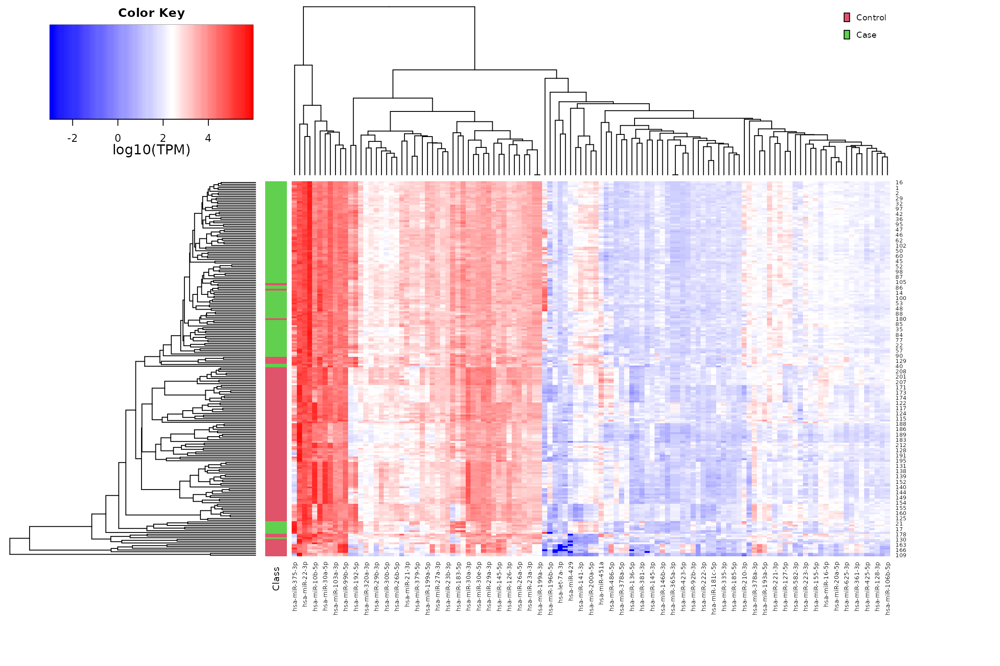
Z-scoring the values before clustering and plotting will help us to gain more insight.
OmicSelector_heatmap(x = dplyr::select(trainx, sig_de$miR), rlab = data.frame(Class = train$Class), zscore = T, margins = c(10, 10))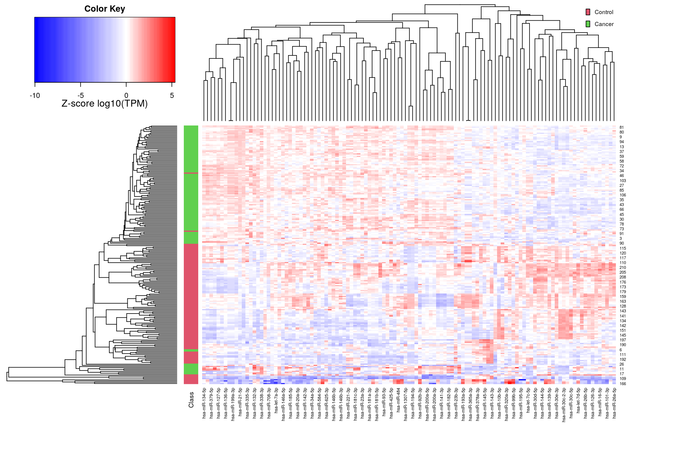
We will also create a vulcano plot and label top 10 most significant miRNAs:
OmicSelector_vulcano_plot(selected_miRNAs = de$miR, DE = de, only_label = sig_de$miR[1:10])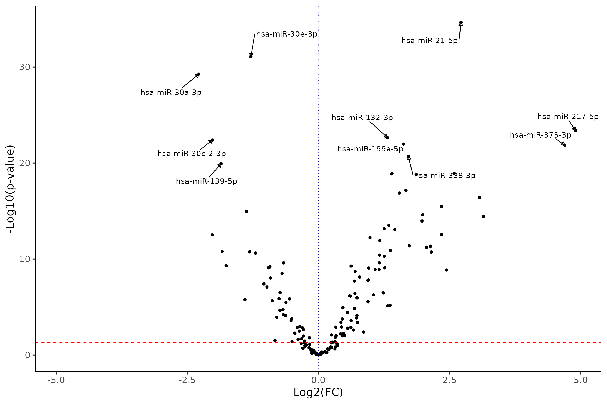
We may also what to check the consistency of differential expression between datasets:
de_test = OmicSelector_differential_expression_ttest(dplyr::select(test, starts_with("hsa")), test$Class)
de_valid = OmicSelector_differential_expression_ttest(dplyr::select(valid, starts_with("hsa")), valid$Class)
OmicSelector_correlation_plot(de$log2FC, de_test$log2FC, "log2FC on training set", "log2FC on test set", "", yx = T)
OmicSelector_correlation_plot(de$log2FC, de_valid$log2FC, "log2FC on training set", "log2FC on validation set", "", yx = T)
OmicSelector_correlation_plot(de_test$log2FC, de_valid$log2FC, "log2FC on test set", "log2FC on validation set", "", yx = T)miRNA selection
This package’s main feature is the shotgun-like feature selection evaluation of possible miRNA signatures of biological processes. We can straightforwardly apply the function, e.g.:
library(OmicSelector)
selected_features = OmicSelector_OmicSelector(wd = getwd(), m = c(1:4), max_iterations = 1, stamp = "tutorial") # For the sake of this tutorial and vignette building we will use only few fastest methods. The m parameter defines what methods will be tested. See more details below.But, for larger projects, we suggest using the following wrapper, which will perform the feature selection in parallel, significantly reducing computational time. We do not recommend using more than five threads, because some of the methods inherently use multicore processing:
readLines("https://raw.githubusercontent.com/kstawiski/OmicSelector/master/vignettes/Tutorial_OmicSelector.R") %>%
paste0(collapse = "\n") %>%
cat
#> #options(warn = -1)
#> library(OmicSelector)
#> m = 1:56 # which methods to check?
#>
#>
#> # RECOMMENDED:
#> for (i in m) {
#> OmicSelector_OmicSelector(m = i, max_iterations = 1, stamp = "fs", debug = F, # we set debug to false (to make the package smaller), you may also want to change stamp to something meaningful, max_iterations was set to 1 to recude the computational time.. in real life scenarios it is resonable to use at least 10 iterations.
#> prefer_no_features = 11, # Few methods are filter rather than wrapper methods, thus requires the maximum number of maximum features.
#> timeout_sec = 600) # We don't want to wait eternity in this tutorial, just 10 minutes. Timeout is useful for complicated methods. Depending on your CPU 2 days may be reasonable for larger projects. Note that some methods cannot be controled with timeout parameter.
#> }
#>
#> # NOT RECOMMENDED: (due to huge computational load of some feature selection methods we do not recommend to run it in parallel, but it is possible)
#> suppressMessages(library(foreach))
#> suppressMessages(library(doParallel))
#> suppressMessages(library(parallel))
#> suppressMessages(library(doParallel))
#> cl <- makePSOCKcluster(useXDR = TRUE, 5) # We do not recommend using more than 5 threads, beacuse some of the methods inhereditly use multicore processing.
#> registerDoParallel(cl)
#> # on.exit(stopCluster(cl))
#> iterations = length(m)
#> pb <- txtProgressBar(max = iterations, style = 3)
#> progress <- function(n) setTxtProgressBar(pb, n)
#> opts <- list(progress = progress)
#> foreach(i = m, .options.snow = opts) %dopar%
#> {
#> suppressMessages(library(OmicSelector))
#> # setwd("/OmicSelector/OmicSelector/vignettes") # change it you to your working directory
#> OmicSelector_OmicSelector(m = i, max_iterations = 1, stamp = "tutorial", debug = F, # we set debug to false (to make the package smaller), you may also want to change stamp to something meaningful, max_iterations was set to 1 to recude the computational time.. in real life scenarios it is resonable to use at least 10 iterations.
#> prefer_no_features = 11, # Few methods are filter rather than wrapper methods, thus requires the maximum number of maximum features.
#> conda_path = "/opt/conda/bin/conda", # Methods line WxNet requires usage of python. In setup script we create conda enviorment. Providing conda_path makes it easier to activate env. We prefer this apporach over use_condaenv.
#> timeout = 600) # We don't want to wait eternity in this tutorial, just 10 minutes. Timeout is useful for complicated methods. Depending on your CPU 2 days may be reasonable for larger projects. Note that some methods cannot be controled with timeout parameter.
#> }
#> stopCluster(cl)A few notes about what it does:
- This function iterates through available methods, which are described by
mparameter. This function aims to perform feature selection using multiple approaches and create formulas for benchmarking. - It loads the data from the working directory. The output is mainly put in files in the working directory. Log and temporary files are placed in a created
tempsubfolder.
Files created for each method (e.g. for stamp=tutorial and m=1):
-
formulastutorial-1.RDS- main result file containing the final formula (final set of miRNAs selected by this method). -
time1-formula.RDS- time taken to compute the results -
tutorial1featureselection.log- log file of the process - (optional)
all1-tutorial.rdata- all variables created during feature selection (created ifdebug=T).
Pearls about the methods:
-
Sig= miRNAs with p-value <0.05 after BH correction (DE using t-test) -
Fcsig=sig+ absolute log2FC filter (included if abs. log2FC>1) -
Cfs= Correlation-based Feature Selection for Machine Learning (more: https://www.cs.waikato.ac.nz/~mhall/thesis.pdf) -
Classloop= Classification using different classification algorithms (classifiers) with the embedded feature selection and using the various schemes for the performance validation (more: https://rdrr.io/cran/Biocomb/man/classifier.loop.html) -
Fcfs= CFS algorithm with forward search (https://rdrr.io/cran/Biocomb/man/select.forward.Corr.html) -
MDLmethods = minimal description length (MDL) discretization algorithm with different a method of feature ranking or feature selection (AUC, SU, CorrSF) (more: https://rdrr.io/cran/Biocomb/man/select.process.html) -
bounceR= genetic algorithm with componentwise boosting (more: https://www.statworx.com/ch/blog/automated-feature-selection-using-bouncer/) -
RandomForestRFE= recursive feature elimination using random forest with resampling to assess the performance. (more: https://topepo.github.io/caret/recursive-feature-elimination.html#resampling-and-external-validation) -
GeneticAlgorithmRF(more: https://topepo.github.io/caret/feature-selection-using-genetic-algorithms.html) -
SimulatedAnnealing= makes small random changes (i.e. perturbations) to an initial candidate solution (more: https://topepo.github.io/caret/feature-selection-using-simulated-annealing.html) -
Boruta(more: https://www.jstatsoft.org/article/view/v036i11/v36i11.pdf) -
spFSR= simultaneous perturbation stochastic approximation (SPSA-FSR) (more: https://arxiv.org/abs/1804.05589) -
varSelRF= using the out-of-bag error as minimization criterion, carry out variable elimination from the random forest by successfully eliminating the least important variables (with importance as returned from the random forest). (more: https://www.ncbi.nlm.nih.gov/pubmed/16398926) -
WxNet= a neural network-based feature selection algorithm for transcriptomic data (more: https://www.ncbi.nlm.nih.gov/pmc/articles/PMC6642261/) -
Step= backward stepwise method of feature selection based on logistic regression (GLM, family = binomial) using AIC criteria (stepAIC) and functions from My.stepwise package (https://cran.r-project.org/web/packages/My.stepwise/index.html)
Notes about methods:
shiny::includeHTML("methods.html")| ID | Description |
|---|---|
No: 1all
|
Get all features (all features staring with 'hsa'). |
No: 2sig, sigtop, sigtopBonf, sigtopHolm, topFC, sigSMOTE, sigtopSMOTE, sigtopBonfSMOTE, sigtopHolmSMOTE, topFCSMOTE
|
Selects features significantly differently expressed between classes by performing unpaired t-test with and without correction for multiple testing. We get: sig - all significant (adjusted p-value less or equal to 0.05) miRNAs with comparison using unpaired t-test and after the Benjamini-Hochberg procedure (BH, false discovery rate); sigtop - sig but limited only to the your prefered number of features (most significant features sorted by p-value), sigtopBonf - uses Bonferroni instead of BH correction, sigtopHolm - uses Holm–Bonferroni instead of BH correction, topFC - selects prefered number of features based on decreasing absolute value of fold change in differential analysis.
All the methods are also checked on dataset balanced with SMOTE (Synthetic Minority Oversampling TEchnique) - those formulas which names are appended with SMOTE. |
No: 3fcsig, fcsigSMOTE
|
Features significant in DE analysis using unpaired t-test and which absolute log2FC is greater than 1. Thus, features significant and up- or down-regulated in the higher magnitudes. FC - fold-change, DE - differential analysis. |
No: 4cfs, cfsSMOTE, cfs_sig, cfsSMOTE_sig
|
Correlation-based feature selection (CFS) - a heuristic algorithm selecting features that are highly correlated with class (binary) and lowly correlated with one another. It explores a search space in best-first manner, until stopping criteria are met. |
No: 5classloop
|
Classifier loop - performs multiple classification procedures using various algorithms (with embedded feature ranking) and various performance metrices. Final feature selection is done by combining the results. Modeling methods used: support vector machines, linear discriminant a nalysis, random forest and nearest shrunken centroid. Features are selected based on the AUC ROC and assessed in k-fold cross-validation according to the documentation. As this requires time, we do not perform it on SMOTEd dataset. |
No: 6classloopSMOTE
|
Application of classloop on balanced dataset (with SMOTE). |
No: 7classloop_sig
|
Application of classloop but only on the features which are significant in DE. |
No: 8classloopSMOTE_sig
|
Application of classloop on balanced training set and only on the features which are significant in DE (after balancing). |
No: 9fcfs
|
An algorithm similar to CFS, though exploring search space in greedy forward search manner (adding one, most attractive, feature at the time, until such addition does not improve set’s overall quality). Based on Wang et al. 2005 and documented here. |
No: 10fcfsSMOTE
|
Application of fcfs on balanced training set. |
No: 11fcfs_sig
|
Application of fcfs on features significant in DE. |
No: 12fcfsSMOTE_sig
|
Application of fcfs on balanced dataset and on features significant in DE (after balancing). |
No: 13fwrap
|
A decision tree algorithm and forward search strategy documented here. |
No: 14fwrapSMOTE
|
Application of fwrap on balanced training set. |
No: 15fwrap_sig
|
Application of fwrap on features significant in DE. |
No: 16fwrapSMOTE_sig
|
Application of fwrap on balanced dataset and on features significant in DE (after balancing). |
No: 17AUC_MDL
|
Feature ranking based on ROC AUC and minimal description length (MDL) discretization algorithm documented here. After the ranking, the number of features are limited as set in options below. |
No: 18SU_MDL
|
Feature ranking based on symmetrical uncertainty and minimal description length (MDL) discretization algorithm documented here. After the ranking, the number of features are limited as set in options below. |
No: 19CorrSF_MDL
|
Feature ranking based on CFS algorithm with forward search and minimal description length (MDL) discretization algorithm documented here. After the ranking, the number of features are limited as set in options below. |
No: 20AUC_MDLSMOTE
|
Feature ranking based on ROC AUC and minimal description length (MDL) discretization algorithm documented here. After the ranking, the number of features are limited as set in options below. Performed on the training set balanced with SMOTE. |
No: 21SU_MDLSMOTE
|
Feature ranking based on symmetrical uncertainty and minimal description length (MDL) discretization algorithm documented here. After the ranking, the number of features are limited as set in options below. Performed on the training set balanced with SMOTE. |
No: 22CorrSF_MDLSMOTE
|
Feature ranking based on CFS algorithm with forward search and minimal description length (MDL) discretization algorithm documented here. After the ranking, the number of features are limited as set in options below. Performed on the training set balanced with SMOTE. |
No: 23AUC_MDL_sig
|
Feature ranking based on ROC AUC and minimal description length (MDL) discretization algorithm documented here. After the ranking, the number of features are limited as set in options below. Only features significant in DE are allowed. |
No: 24SU_MDL_sig
|
Feature ranking based on symmetrical uncertainty and minimal description length (MDL) discretization algorithm documented here. After the ranking, the number of features are limited as set in options below. Only features significant in DE are allowed. |
No: 25CorrSF_MDL_sig
|
Feature ranking based on CFS algorithm with forward search and minimal description length (MDL) discretization algorithm documented here. After the ranking, the number of features are limited as set in options below. Only features significant in DE are allowed. |
No: 26AUC_MDLSMOTE_sig
|
Feature ranking based on ROC AUC and minimal description length (MDL) discretization algorithm documented here. After the ranking, the number of features are limited as set in options below. Performed on the training set balanced with SMOTE. Only features significant in DE are allowed. |
No: 27SU_MDLSMOTE_sig
|
Feature ranking based on symmetrical uncertainty and minimal description length (MDL) discretization algorithm documented here. After the ranking, the number of features are limited as set in options below. Performed on the training set balanced with SMOTE. Only features significant in DE are allowed. |
No: 28CorrSF_MDLSMOTE_sig
|
Feature ranking based on CFS algorithm with forward search and minimal description length (MDL) discretization algorithm documented here. After the ranking, the number of features are limited as set in options below. Performed on the training set balanced with SMOTE. Only features significant in DE are allowed. |
No: 29bounceR-full, bounceR-stability
|
A component-wise-boosting-based algorithm selecting optimal features in multiple iterations of single feature-models construction. See the source here. bounceR-stability gets the most stable features. Wrapper methods implemented here leverage componentwise boosting as a weak learners. |
No: 30bounceR-full_SMOTE, bounceR-stability_SMOTE
|
A component-wise-boosting-based algorithm selecting optimal features in multiple iterations of single feature-models construction. See the source here. bounceR-stability gets the most stable features. Wrapper methods implemented here leverage componentwise boosting as a weak learners. Performed on the training set balanced with SMOTE. |
No: 31bounceR-full_SIG, bounceR-stability_SIG
|
A component-wise-boosting-based algorithm selecting optimal features in multiple iterations of single feature-models construction. See the source here. bounceR-stability gets the most stable features. Wrapper methods implemented here leverage componentwise boosting as a weak learners. Only features significant in DE are allowed. |
No: 32bounceR-full_SIGSMOTE, bounceR-stability_SIGSMOTE
|
A component-wise-boosting-based algorithm selecting optimal features in multiple iterations of single feature-models construction. See the source here. bounceR-stability gets the most stable features. Wrapper methods implemented here leverage componentwise boosting as a weak learners. Only features significant in DE are allowed. Performed on the training set balanced with SMOTE. |
No: 33RandomForestRFE
|
Recursively eliminates features from the feature space based on ranking from Random Forrest classifier (retrained woth resampling after each elimination). Details are available here. |
No: 34RandomForestRFESMOTE
|
Recursively eliminates features from the feature space based on ranking from Random Forrest classifier (retrained woth resampling after each elimination). Details are available here. Performed on the training set balanced with SMOTE. |
No: 35RandomForestRFE_sig
|
Recursively eliminates features from the feature space based on ranking from Random Forrest classifier (retrained woth resampling after each elimination). Details are available here. Only features significant in DE are allowed. |
No: 36RandomForestRFESMOTE_sig
|
Recursively eliminates features from the feature space based on ranking from Random Forrest classifier (retrained woth resampling after each elimination). Details are available here. Only features significant in DE are allowed. Performed on the training set balanced with SMOTE. |
No: 37GeneticAlgorithmRF
|
Uses genetic algorithm principle to search for optimal subset of the feature space. This uses internally implemented random forest model and 10-fold cross validation to assess performance of the "chromosomes" in each generation. Details are available here. |
No: 38GeneticAlgorithmRFSMOTE
|
Uses genetic algorithm principle to search for optimal subset of the feature space. This uses internally implemented random forest model and 10-fold cross validation to assess performance of the "chromosomes" in each generation. Details are available here. Performed on the training set balanced with SMOTE. |
No: 39GeneticAlgorithmRF_sig
|
Uses genetic algorithm principle to search for optimal subset of the feature space. This uses internally implemented random forest model and 10-fold cross validation to assess performance of the "chromosomes" in each generation. Details are available here. Only features significant in DE are allowed. |
No: 40GeneticAlgorithmRFSMOTE_sig
|
Uses genetic algorithm principle to search for optimal subset of the feature space. This uses internally implemented random forest model and 10-fold cross validation to assess performance of the "chromosomes" in each generation. Details are available here. Only features significant in DE are allowed. Performed on the training set balanced with SMOTE. |
No: 41SimulatedAnnealingRF
|
Simulated Annealing - explores a feature space by randomly modifying a given feature subset and evaluating classification performance using new attributes to check whether changes were beneficial. It is is a global search method that makes small random changes (i.e. perturbations) to an initial candidate solution. In this method also random forest is used as a model for evaluation. Details are available here. |
No: 42SimulatedAnnealingRFSMOTE
|
Simulated Annealing - explores a feature space by randomly modifying a given feature subset and evaluating classification performance using new attributes to check whether changes were beneficial. It is is a global search method that makes small random changes (i.e. perturbations) to an initial candidate solution. In this method also random forest is used as a model for evaluation. Details are available here. Performed on the training set balanced with SMOTE. |
No: 43SimulatedAnnealingRF_sig
|
Simulated Annealing - explores a feature space by randomly modifying a given feature subset and evaluating classification performance using new attributes to check whether changes were beneficial. It is is a global search method that makes small random changes (i.e. perturbations) to an initial candidate solution. In this method also random forest is used as a model for evaluation. Details are available here. Only features significant in DE are allowed. |
No: 44SimulatedAnnealingRFSMOTE_sig
|
Simulated Annealing - explores a feature space by randomly modifying a given feature subset and evaluating classification performance using new attributes to check whether changes were beneficial. It is is a global search method that makes small random changes (i.e. perturbations) to an initial candidate solution. In this method also random forest is used as a model for evaluation. Details are available here. Only features significant in DE are allowed. Performed on the training set balanced with SMOTE. |
No: 45Boruta
|
Boruta - utilizes random forrest algorithm to iteratively remove features proved to be less relevant than random variables. Details are available in paper by Kursa et al. 2010 or this blog post. Only features significant in DE are allowed. Performed on the training set balanced with SMOTE. |
No: 46BorutaSMOTE
|
Boruta - utilizes random forrest algorithm to iteratively remove features proved to be less relevant than random variables. Details are available in paper by Kursa et al. 2010 or this blog post. Performed on the training set balanced with SMOTE. |
No: 47spFSR
|
spFSR - feature selection and ranking by simultaneous perturbation stochastic approximation. This is an algorithm based on pseudo-gradient descent stochastic optimisation with Barzilai-Borwein method for step size and gradient estimation optimization. Details are available in paper by Zeren et al. 2018. |
No: 48spFSRSMOTE
|
spFSR - feature selection and ranking by simultaneous perturbation stochastic approximation. This is an algorithm based on pseudo-gradient descent stochastic optimisation with Barzilai-Borwein method for step size and gradient estimation optimization. Details are available in paper by Zeren et al. 2018. Performed on the training set balanced with SMOTE. |
No: 49varSelRF, varSelRFSMOTE
|
varSelRF - recursively eliminates features using random forrest feature scores, seeking to minimize out-of-bag classification error. Details are available in paper by Díaz-Uriarte et al. 2006. Performed on the unbalanced training set as well as on balanced with SMOTE. |
No: 50Wx, WxSMOTE
|
Wx - deep neural network-based (deep learning) feature (gene) selection algorithm. We use 2 hidden layers with 16 hidden neurons. Details are available in paper by Park et al. 2019. Performed on the unbalanced training set as well as on balanced with SMOTE. |
No: 51Mystepwise_glm_binomial, Mystepwise_sig_glm_binomial
|
Stepwise variable selection procedure (with iterations between the 'forward' and 'backward' steps) for generalized linear models with logit link function (i.e. logistic regression). We use p=0.05 as a threshold for both entry (SLE) and stay (SLS). Details are available here. Performed on all features of training set as well as features initially selected in DE (significant in DE). |
No: 52Mystepwise_glm_binomialSMOTE, Mystepwise_sig_glm_binomialSMOTE
|
Stepwise variable selection procedure (with iterations between the 'forward' and 'backward' steps) for generalized linear models with logit link function (i.e. logistic regression). We use p=0.05 as a threshold for both entry (SLE) and stay (SLS). Details are available here. Performed on all features of training set as well as features initially selected in DE (significant in DE) after balancing the training set with SMOTE. |
No: 53stepAIC, stepAICsig
|
Here we perform a stepwise model selection by AIC (Akaike Information Criterion) based on logistic regression. Details are available here. Performed on all features of training set as well as features initially selected in DE (significant in DE). |
No: 54stepAIC_SMOTE, stepAICsig_SMOTE
|
Here we perform a stepwise model selection by AIC (Akaike Information Criterion) based on logistic regression. Details are available here. Performed on all features of training set as well as features initially selected in DE (significant in DE) after balancing the training set with SMOTE. |
No: 55iteratedRFECV, iteratedRFETest
|
Iterated RFE tested in cross-validation and on test set (watch out for bias!). See the source here. |
No: 56iteratedRFECV_SMOTE, iteratedRFETest_SMOTE
|
Iterated RFE tested in cross-validation and on test set (watch out for bias!). See the source here. Performed after balancing the training set with SMOTE. |
No: 57LASSO, LASSO_SMOTE
|
Feature selection based on LASSO (Least Absolute Shrinkage and Selection Operator) model with alpha = 1 - penalizes with L1-norm; with 10-fold cross-validation. See the source here. Performed on originial training set and after balancing the training set with SMOTE. |
No: 58ElasticNet, ElasticNet_SMOTE
|
Feature selection based on elastic net with tuning the value of alpha through a line search. See the source here. Performed on originial training set and after balancing the training set with SMOTE. |
No: 59stepLDA, stepLDA_SMOTE
|
Forward/backward variable selection (both directions) for linear discriminant analysis. See the source here. Performed on originial training set and after balancing the training set with SMOTE. |
No: 60feseR_filter.corr, feseR_gain.inf, feseR_matrix.corr, feseR_combineFS_RF, feseR_filter.corr_SMOTE, feseR_gain.inf_SMOTE, feseR_matrix.corr_SMOTE, feseR_combineFS_RF_SMOTE
|
Set of feature selection methods embeded in feseR package published by Perez-Rivelor et al. All default parameters are used, but mincorr is set to 0.2. See the paper here. Performed on originial training set and after balancing the training set with SMOTE. |
The OmicSelector functions saves all output files to temp/ directory. As users may want to run multiple selection methods in different configurations, we do not recommend using the return of this function in the following steps. Instead, we provide OmicSelector_merge_formulas() which conviniently summerizes the results of feature selection. We can do:
selected_sets_of_miRNAs = OmicSelector_merge_formulas(max_miRNAs = 11) # we filter out sets with more than 11 miRNAs.
selected_sets_of_miRNAs_with_own = OmicSelector_merge_formulas(max_miRNAs = 11, add = list(my_own_signature = c("hsa.miR.192.5p", "hsa.let.7g.5p", "hsa.let.7a.5p",
"hsa.let.7d.5p", "hsa.miR.194.5p", "hsa.miR.98.5p", "hsa.let.7f.5p", "hsa.miR.26b.5p"))) # you can also add your own signature (for example selected from literature)Note that:
- Two files are created in the working directory: (1)
featureselection_formulas_all.RDS- contains the formulas for all selection methods, (2)featureselection_formulas_final.RDS- contains methods that selected a smaller or equal number of microRNAs than specified inmax_miRNAparameter, as well asfcsigandcfs_sig. - The results of
fcsigandcfs_sigmethods are always retained in the finalformulasset (ignoringmax_miRNAparameter) - they are commonly used as benchmark comparator for the final set of miRNAs. Those sets can be manually removed (if needed) from the final selection. - Readable tables are written in corresponding
*.csvfiles.
Let’s analyze the process of feature selection:
all_sets = readRDS("featureselection_formulas_all.RDS")
length(all_sets) # How many feature selection methods completed in time?
#> [1] 17
final_sets = readRDS("featureselection_formulas_final.RDS")
length(final_sets) # How many feature selection methods completed in time and fulfilled max_miRNA criteria? (remember about fcsig and cfs_sig)
#> [1] 6
featureselection_formulas_final = fread("featureselection_formulas_final.csv")
OmicSelector_table(featureselection_formulas_final) # show information about selected formulas
#> name
#> 1: cfs_sig
#> 2: fcsig
#> 3: my_own_signature
#> 4: sigtop
#> 5: sigtopBonf
#> 6: sigtopHolm
#> 7: topFC
#> 8: sigtopSMOTE
#> 9: sigtopBonfSMOTE
#> 10: sigtopHolmSMOTE
#> 11: topFCSMOTE
#> formula
#> 1: Class ~ hsa.miR.21.5p + hsa.miR.30e.3p + hsa.miR.30a.3p + hsa.miR.217.5p + hsa.miR.132.3p + hsa.miR.375.3p + hsa.miR.338.3p + hsa.miR.199b.5p + hsa.miR.199b.3p + hsa.miR.127.5p + hsa.miR.381.3p + hsa.miR.194.5p + hsa.miR.378a.3p + hsa.miR.200a.5p + hsa.miR.192.5p + hsa.miR.144.5p + hsa.miR.181c.3p + hsa.miR.378a.5p + hsa.miR.29a.3p + hsa.let.7c.5p + hsa.miR.335.3p + hsa.miR.181c.5p + hsa.miR.10b.5p + hsa.miR.195.5p + hsa.miR.30e.5p + hsa.miR.28.3p + hsa.miR.484
#> 2: Class ~ hsa.miR.21.5p + hsa.miR.30e.3p + hsa.miR.30a.3p + hsa.miR.217.5p + hsa.miR.132.3p + hsa.miR.30c.2.3p + hsa.miR.199a.5p + hsa.miR.375.3p + hsa.miR.338.3p + hsa.miR.139.5p + hsa.miR.199b.5p + hsa.miR.199b.3p + hsa.miR.199a.3p + hsa.miR.127.5p + hsa.miR.381.3p + hsa.miR.181b.5p + hsa.miR.194.5p + hsa.miR.200a.3p + hsa.miR.378a.3p + hsa.miR.200a.5p + hsa.miR.192.5p + hsa.miR.136.5p + hsa.miR.134.5p + hsa.miR.127.3p + hsa.miR.21.3p + hsa.miR.141.3p + hsa.miR.144.5p + hsa.miR.181a.3p + hsa.miR.200b.3p + \n hsa.miR.141.5p + hsa.miR.210.3p + hsa.miR.182.5p + hsa.miR.451a + hsa.miR.30a.5p + hsa.miR.708.3p + hsa.miR.378a.5p + hsa.miR.379.5p + hsa.miR.146b.5p + hsa.miR.337.3p + hsa.miR.486.5p + hsa.miR.183.5p + hsa.miR.335.3p + hsa.miR.181a.5p + hsa.miR.429 + hsa.miR.143.3p + hsa.miR.142.3p + hsa.miR.223.3p + hsa.miR.10b.5p + hsa.miR.200c.3p + hsa.miR.142.5p
#> 3: Class ~ hsa.miR.192.5p + hsa.let.7g.5p + hsa.let.7a.5p + hsa.let.7d.5p + hsa.miR.194.5p + hsa.miR.98.5p + hsa.let.7f.5p + hsa.miR.26b.5p
#> 4: Class ~ hsa.miR.21.5p + hsa.miR.30e.3p + hsa.miR.30a.3p + hsa.miR.217.5p + hsa.miR.132.3p + hsa.miR.30c.2.3p + hsa.miR.199a.5p + hsa.miR.375.3p + hsa.miR.338.3p + hsa.miR.139.5p + hsa.miR.199b.5p
#> 5: Class ~ hsa.miR.21.5p + hsa.miR.30e.3p + hsa.miR.30a.3p + hsa.miR.217.5p + hsa.miR.132.3p + hsa.miR.30c.2.3p + hsa.miR.199a.5p + hsa.miR.375.3p + hsa.miR.338.3p + hsa.miR.139.5p + hsa.miR.199b.5p
#> 6: Class ~ hsa.miR.21.5p + hsa.miR.30e.3p + hsa.miR.30a.3p + hsa.miR.217.5p + hsa.miR.132.3p + hsa.miR.30c.2.3p + hsa.miR.199a.5p + hsa.miR.375.3p + hsa.miR.338.3p + hsa.miR.139.5p + hsa.miR.199b.5p
#> 7: Class ~ hsa.miR.217.5p + hsa.miR.375.3p + hsa.miR.192.5p + hsa.miR.194.5p + hsa.miR.21.5p + hsa.miR.199b.5p + hsa.miR.429 + hsa.miR.141.3p + hsa.miR.200a.3p + hsa.miR.30a.3p + hsa.miR.708.3p
#> 8: Class ~ hsa.miR.21.5p + hsa.miR.30e.3p + hsa.miR.30a.3p + hsa.miR.217.5p + hsa.miR.132.3p + hsa.miR.30c.2.3p + hsa.miR.199a.5p + hsa.miR.375.3p + hsa.miR.338.3p + hsa.miR.139.5p + hsa.miR.199a.3p
#> 9: Class ~ hsa.miR.21.5p + hsa.miR.30e.3p + hsa.miR.30a.3p + hsa.miR.217.5p + hsa.miR.132.3p + hsa.miR.30c.2.3p + hsa.miR.199a.5p + hsa.miR.375.3p + hsa.miR.338.3p + hsa.miR.139.5p + hsa.miR.199b.5p
#> 10: Class ~ hsa.miR.21.5p + hsa.miR.30e.3p + hsa.miR.30a.3p + hsa.miR.217.5p + hsa.miR.132.3p + hsa.miR.30c.2.3p + hsa.miR.199a.5p + hsa.miR.375.3p + hsa.miR.338.3p + hsa.miR.139.5p + hsa.miR.199b.5p
#> 11: Class ~ hsa.miR.217.5p + hsa.miR.375.3p + hsa.miR.192.5p + hsa.miR.194.5p + hsa.miR.21.5p + hsa.miR.199b.5p + hsa.miR.429 + hsa.miR.141.3p + hsa.miR.200a.3p + hsa.miR.30a.3p + hsa.miR.708.3p
#> ile_miRNA
#> 1: 27
#> 2: 50
#> 3: 0
#> 4: 11
#> 5: 11
#> 6: 11
#> 7: 11
#> 8: 11
#> 9: 11
#> 10: 11
#> 11: 11Note that my_own_signture has 0 miRNAs according to the table. This trick ensures that we will not filter out signatures added manually based on the max_miRNA parameter.
We will summarize the number of microRNAs selected by methods implemented in OmicSelector_OmicSelector by creating a histogram and calculating some descriptive statistics.
hist(featureselection_formulas_final$ile_miRNA[-which(featureselection_formulas_final$ile_miRNA == 0)], breaks = ncol(train), main = "Number of selected microRNAs distribution",
xlab = "Number of selected microRNAs") # Histogram showing how many miRNAs were selected in final set.
psych::describe(featureselection_formulas_final$ile_miRNA[-which(featureselection_formulas_final$ile_miRNA == 0)]) # Descriptive statistics of how many features where selected in the final set.
#> vars n mean sd median trimmed mad min max range skew kurtosis se
#> X1 1 10 16.5 12.8 11 13 0 11 50 39 1.78 1.76 4.05Benchmarking
In the next step of looking for the best microRNA signature, we perform benchmarking. This tests all the signatures using different classifier architectures. Here is the example of a benchmark with default parameters:
Just for rendering this tutorial, we will use a straightforward benchmark using only logistic regression and conditional trees.
library(OmicSelector)
OmicSelector_tutorial_balanced_benchmark = OmicSelector_benchmark(search_iters = 5, # 5 random hyperparameter sets will be checked; 5 is set here for speed purposes.. for real projects use more, like 5000...
algorithms = c("ctree"), # just add ctree, note that logistic regression (glm) is always included
output_file = paste0("benchmark.csv")) # the main output
# exemplary benchmark data can be loaded using data('OmicSelector_tutorial_balanced_benchmark')As benchmarking is done, the main result file is saved in the file specified in output_file parameter. It contains the performance metrics of signatures satisfying initial criteria (e.g. max_miRNA) across different methods of modeling. Let’s take a quick look:
OmicSelector_table(fread("benchmark.csv"))
#> V1 method SMOTE
#> 1: 1 cfs_sig No
#> 2: 2 fcsig No
#> 3: 3 my_own_signature No
#> 4: 4 sigtop No
#> 5: 5 topFC No
#> 6: 6 sigtopSMOTE Yes
#> miRy
#> 1: Class ~ hsa.miR.21.5p + hsa.miR.30e.3p + hsa.miR.30a.3p + hsa.miR.217.5p + hsa.miR.132.3p + hsa.miR.375.3p + hsa.miR.338.3p + hsa.miR.199b.5p + hsa.miR.199b.3p + hsa.miR.127.5p + hsa.miR.381.3p + hsa.miR.194.5p + hsa.miR.378a.3p + hsa.miR.200a.5p + hsa.miR.192.5p + hsa.miR.144.5p + hsa.miR.181c.3p + hsa.miR.378a.5p + hsa.miR.29a.3p + hsa.let.7c.5p + hsa.miR.335.3p + hsa.miR.181c.5p + hsa.miR.10b.5p + hsa.miR.195.5p + hsa.miR.30e.5p + hsa.miR.28.3p + hsa.miR.484
#> 2: Class ~ hsa.miR.21.5p + hsa.miR.30e.3p + hsa.miR.30a.3p + hsa.miR.217.5p + hsa.miR.132.3p + hsa.miR.30c.2.3p + hsa.miR.199a.5p + hsa.miR.375.3p + hsa.miR.338.3p + hsa.miR.139.5p + hsa.miR.199b.5p + hsa.miR.199b.3p + hsa.miR.199a.3p + hsa.miR.127.5p + hsa.miR.381.3p + hsa.miR.181b.5p + hsa.miR.194.5p + hsa.miR.200a.3p + hsa.miR.378a.3p + hsa.miR.200a.5p + hsa.miR.192.5p + hsa.miR.136.5p + hsa.miR.134.5p + hsa.miR.127.3p + hsa.miR.21.3p + hsa.miR.141.3p + hsa.miR.144.5p + hsa.miR.181a.3p + hsa.miR.200b.3p + \n hsa.miR.141.5p + hsa.miR.210.3p + hsa.miR.182.5p + hsa.miR.451a + hsa.miR.30a.5p + hsa.miR.708.3p + hsa.miR.378a.5p + hsa.miR.379.5p + hsa.miR.146b.5p + hsa.miR.337.3p + hsa.miR.486.5p + hsa.miR.183.5p + hsa.miR.335.3p + hsa.miR.181a.5p + hsa.miR.429 + hsa.miR.143.3p + hsa.miR.142.3p + hsa.miR.223.3p + hsa.miR.10b.5p + hsa.miR.200c.3p + hsa.miR.142.5p
#> 3: Class ~ hsa.miR.192.5p + hsa.let.7g.5p + hsa.let.7a.5p + hsa.let.7d.5p + hsa.miR.194.5p + hsa.miR.98.5p + hsa.let.7f.5p + hsa.miR.26b.5p
#> 4: Class ~ hsa.miR.21.5p + hsa.miR.30e.3p + hsa.miR.30a.3p + hsa.miR.217.5p + hsa.miR.132.3p + hsa.miR.30c.2.3p + hsa.miR.199a.5p + hsa.miR.375.3p + hsa.miR.338.3p + hsa.miR.139.5p + hsa.miR.199b.5p
#> 5: Class ~ hsa.miR.217.5p + hsa.miR.375.3p + hsa.miR.192.5p + hsa.miR.194.5p + hsa.miR.21.5p + hsa.miR.199b.5p + hsa.miR.429 + hsa.miR.141.3p + hsa.miR.200a.3p + hsa.miR.30a.3p + hsa.miR.708.3p
#> 6: Class ~ hsa.miR.21.5p + hsa.miR.30e.3p + hsa.miR.30a.3p + hsa.miR.217.5p + hsa.miR.132.3p + hsa.miR.30c.2.3p + hsa.miR.199a.5p + hsa.miR.375.3p + hsa.miR.338.3p + hsa.miR.139.5p + hsa.miR.199a.3p
#> glm_modelname glm_train_ROCAUC glm_train_ROCAUC_lower95CI
#> 1: 1654123846 1.0000000 1.0000000
#> 2: 1654123847 1.0000000 1.0000000
#> 3: 1654123848 0.9300376 0.8980187
#> 4: 1654123848 0.9870731 0.9701731
#> 5: 1654123849 0.9811337 0.9589109
#> 6: 1654123849 0.9891694 0.9756388
#> glm_train_ROCAUC_upper95CI glm_train_Accuracy glm_train_Sensitivity
#> 1: 1.0000000 1.0000000 1.0000000
#> 2: 1.0000000 1.0000000 1.0000000
#> 3: 0.9620564 0.8411215 0.8411215
#> 4: 1.0000000 0.9626168 0.9626168
#> 5: 1.0000000 0.9626168 0.9626168
#> 6: 1.0000000 0.9719626 0.9813084
#> glm_train_Specificity glm_test_Accuracy glm_test_Sensitivity
#> 1: 1.0000000 1.0000000 1.0000000
#> 2: 1.0000000 1.0000000 1.0000000
#> 3: 0.8411215 0.7777778 0.8333333
#> 4: 0.9626168 1.0000000 1.0000000
#> 5: 0.9626168 0.9722222 1.0000000
#> 6: 0.9626168 1.0000000 1.0000000
#> glm_test_Specificity glm_valid_Accuracy glm_valid_Sensitivity
#> 1: 1.0000000 0.9857143 1.0000000
#> 2: 1.0000000 0.9857143 1.0000000
#> 3: 0.7222222 0.8714286 0.8857143
#> 4: 1.0000000 1.0000000 1.0000000
#> 5: 0.9444444 1.0000000 1.0000000
#> 6: 1.0000000 1.0000000 1.0000000
#> glm_valid_Specificity ctree_modelname ctree_train_ROCAUC
#> 1: 0.9714286 1654123857 0.9857629
#> 2: 0.9714286 1654123857 0.9917897
#> 3: 0.8571429 1654123858 0.9157568
#> 4: 1.0000000 1654123859 0.9906979
#> 5: 1.0000000 1654123859 0.9938859
#> 6: 1.0000000 1654123860 0.9863307
#> ctree_train_ROCAUC_lower95CI ctree_train_ROCAUC_upper95CI
#> 1: 0.9704984 1.0000000
#> 2: 0.9847571 0.9988223
#> 3: 0.8781869 0.9533267
#> 4: 0.9827320 0.9986637
#> 5: 0.9879879 0.9997840
#> 6: 0.9726722 0.9999892
#> ctree_train_Accuracy ctree_train_Sensitivity ctree_train_Specificity
#> 1: 0.9579439 0.9906542 0.9252336
#> 2: 0.9579439 0.9906542 0.9252336
#> 3: 0.8971963 0.9065421 0.8878505
#> 4: 0.9579439 0.9906542 0.9252336
#> 5: 0.9672897 1.0000000 0.9345794
#> 6: 0.9579439 0.9906542 0.9252336
#> ctree_test_Accuracy ctree_test_Sensitivity ctree_test_Specificity
#> 1: 0.9305556 0.9722222 0.8888889
#> 2: 0.9305556 0.9722222 0.8888889
#> 3: 0.7638889 0.7222222 0.8055556
#> 4: 0.9305556 0.9722222 0.8888889
#> 5: 0.9444444 1.0000000 0.8888889
#> 6: 0.9305556 0.9722222 0.8888889
#> ctree_valid_Accuracy ctree_valid_Sensitivity ctree_valid_Specificity
#> 1: 0.9428571 0.9714286 0.9142857
#> 2: 0.9428571 0.9714286 0.9142857
#> 3: 0.9000000 0.9428571 0.8571429
#> 4: 0.9428571 0.9714286 0.9142857
#> 5: 0.9428571 0.9714286 0.9142857
#> 6: 0.9428571 0.9714286 0.9142857Description of columns:
-
method- accronym for method -
SMOTE- if balancing using SMOTE or ROSE was used in the training dataset. -
miRy- formula used (miRNAs selected). -
*_modelname- the name of.RDSfile placed inmodels/directory, containing thecaretfinal model that can be used for the prediction of new cases. This allows the reproducibility of the results. For exampleglm_prefix is set according to the method,glm= logistic regression. -
*_train_ROCAUC- area under the ROC curve (AUC ROC) on the training dataset, indicating the general potential of the model. -
*_train_ROCAUC_lower95CI- lower boundery of 95% confidence interval for AUC ROC. -
*_train_ROCAUC_upper95CI- upper boundery of 95% confidence interval for AUC ROC. -
*_train_Accuracy- accuracy on the training set. -
*_train_Sensitivity- sensitivity on training set. -
*_train_Specificity- sensitivity on the training set.
By this logic, every parameter is also calculated from the testing (_test_) and validation (_valid_) set. If the method generated a probability, a default cutoff is used for all of the predictions.
Let’s see the general performance (accuracy) of methods in the benchmark:
metody = OmicSelector_get_benchmark_methods("benchmark.csv") # gets the methods used in benchmark
par(mfrow = c(2, 2))
for (i in 1:length(metody)) {
temp = OmicSelector_get_benchmark("benchmark.csv") # loads benchmark
temp2 = dplyr::select(temp, starts_with(paste0(metody[i], "_")))
boxplot(temp[, paste0(metody[i], "_train_Accuracy")], temp[, paste0(metody[i], "_test_Accuracy")], temp[, paste0(metody[i], "_valid_Accuracy")], main = paste0("Method: ",
metody[i]), names = c("Training", "Testing", "Validation"), ylab = "Accuracy", ylim = c(0.5, 1))
tempids = c(match(paste0(metody[i], "_train_Accuracy"), colnames(temp)), match(paste0(metody[i], "_test_Accuracy"), colnames(temp)), match(paste0(metody[i],
"_valid_Accuracy"), colnames(temp)))
}
par(mfrow = c(1, 1))With OmicSelector package, the final optimal feature signature can be selected in 3 ways:
1. Picking the signature which achieved the best accuracy in training, testing and validation: (metaindex = mean of all 3 accuracy metrics)
acc1 = OmicSelector_best_signature_proposals(benchmark_csv = "benchmark.csv", without_train = F) # generates the benchmark sorted by metaindex
best_signatures = acc1[1:3, ] # get top 3 methods
OmicSelector_table(best_signatures[, c("metaindex", "method", "miRy")])
#> metaindex method
#> cfs_sig 0.9694657 cfs_sig
#> fcsig 0.9694657 fcsig
#> sigtopSMOTE 0.9672107 sigtopSMOTE
#> miRy
#> cfs_sig Class ~ hsa.miR.21.5p + hsa.miR.30e.3p + hsa.miR.30a.3p + hsa.miR.217.5p + hsa.miR.132.3p + hsa.miR.375.3p + hsa.miR.338.3p + hsa.miR.199b.5p + hsa.miR.199b.3p + hsa.miR.127.5p + hsa.miR.381.3p + hsa.miR.194.5p + hsa.miR.378a.3p + hsa.miR.200a.5p + hsa.miR.192.5p + hsa.miR.144.5p + hsa.miR.181c.3p + hsa.miR.378a.5p + hsa.miR.29a.3p + hsa.let.7c.5p + hsa.miR.335.3p + hsa.miR.181c.5p + hsa.miR.10b.5p + hsa.miR.195.5p + hsa.miR.30e.5p + hsa.miR.28.3p + hsa.miR.484
#> fcsig Class ~ hsa.miR.21.5p + hsa.miR.30e.3p + hsa.miR.30a.3p + hsa.miR.217.5p + hsa.miR.132.3p + hsa.miR.30c.2.3p + hsa.miR.199a.5p + hsa.miR.375.3p + hsa.miR.338.3p + hsa.miR.139.5p + hsa.miR.199b.5p + hsa.miR.199b.3p + hsa.miR.199a.3p + hsa.miR.127.5p + hsa.miR.381.3p + hsa.miR.181b.5p + hsa.miR.194.5p + hsa.miR.200a.3p + hsa.miR.378a.3p + hsa.miR.200a.5p + hsa.miR.192.5p + hsa.miR.136.5p + hsa.miR.134.5p + hsa.miR.127.3p + hsa.miR.21.3p + hsa.miR.141.3p + hsa.miR.144.5p + hsa.miR.181a.3p + hsa.miR.200b.3p + \n hsa.miR.141.5p + hsa.miR.210.3p + hsa.miR.182.5p + hsa.miR.451a + hsa.miR.30a.5p + hsa.miR.708.3p + hsa.miR.378a.5p + hsa.miR.379.5p + hsa.miR.146b.5p + hsa.miR.337.3p + hsa.miR.486.5p + hsa.miR.183.5p + hsa.miR.335.3p + hsa.miR.181a.5p + hsa.miR.429 + hsa.miR.143.3p + hsa.miR.142.3p + hsa.miR.223.3p + hsa.miR.10b.5p + hsa.miR.200c.3p + hsa.miR.142.5p
#> sigtopSMOTE Class ~ hsa.miR.21.5p + hsa.miR.30e.3p + hsa.miR.30a.3p + hsa.miR.217.5p + hsa.miR.132.3p + hsa.miR.30c.2.3p + hsa.miR.199a.5p + hsa.miR.375.3p + hsa.miR.338.3p + hsa.miR.139.5p + hsa.miR.199a.3p2. Picking the signature which achieved the best accuracy in testing and validation: (metaindex = mean of 2 accuracy metrics)
acc1 = OmicSelector_best_signature_proposals(benchmark_csv = "benchmark.csv", without_train = T) # generates the benchmark sorted by metaindex
best_signatures = acc1[1:3, ] # get top 3 methods
OmicSelector_table(best_signatures[, c("metaindex", "method", "miRy")])
#> metaindex method
#> sigtop 0.9683434 sigtop
#> sigtopSMOTE 0.9683434 sigtopSMOTE
#> topFC 0.9648365 topFC
#> miRy
#> sigtop Class ~ hsa.miR.21.5p + hsa.miR.30e.3p + hsa.miR.30a.3p + hsa.miR.217.5p + hsa.miR.132.3p + hsa.miR.30c.2.3p + hsa.miR.199a.5p + hsa.miR.375.3p + hsa.miR.338.3p + hsa.miR.139.5p + hsa.miR.199b.5p
#> sigtopSMOTE Class ~ hsa.miR.21.5p + hsa.miR.30e.3p + hsa.miR.30a.3p + hsa.miR.217.5p + hsa.miR.132.3p + hsa.miR.30c.2.3p + hsa.miR.199a.5p + hsa.miR.375.3p + hsa.miR.338.3p + hsa.miR.139.5p + hsa.miR.199a.3p
#> topFC Class ~ hsa.miR.217.5p + hsa.miR.375.3p + hsa.miR.192.5p + hsa.miR.194.5p + hsa.miR.21.5p + hsa.miR.199b.5p + hsa.miR.429 + hsa.miR.141.3p + hsa.miR.200a.3p + hsa.miR.30a.3p + hsa.miR.708.3p3. The signature which achieved the best sensitivity and specificity in validation: (metaindex = mean of sensitivity and specificity in validation dataset)
acc = OmicSelector_best_signature_proposals_meta11(benchmark_csv = "benchmark.csv") # generates the benchmark sorted by metaindex
best_signatures = acc[1:3, ] # get top 3 methods
OmicSelector_table(best_signatures[, c("metaindex", "method", "miRy")])
#> metaindex method
#> sigtop 0.9428571 sigtop
#> topFC 0.9428571 topFC
#> sigtopSMOTE 0.9428571 sigtopSMOTE
#> miRy
#> sigtop Class ~ hsa.miR.21.5p + hsa.miR.30e.3p + hsa.miR.30a.3p + hsa.miR.217.5p + hsa.miR.132.3p + hsa.miR.30c.2.3p + hsa.miR.199a.5p + hsa.miR.375.3p + hsa.miR.338.3p + hsa.miR.139.5p + hsa.miR.199b.5p
#> topFC Class ~ hsa.miR.217.5p + hsa.miR.375.3p + hsa.miR.192.5p + hsa.miR.194.5p + hsa.miR.21.5p + hsa.miR.199b.5p + hsa.miR.429 + hsa.miR.141.3p + hsa.miR.200a.3p + hsa.miR.30a.3p + hsa.miR.708.3p
#> sigtopSMOTE Class ~ hsa.miR.21.5p + hsa.miR.30e.3p + hsa.miR.30a.3p + hsa.miR.217.5p + hsa.miR.132.3p + hsa.miR.30c.2.3p + hsa.miR.199a.5p + hsa.miR.375.3p + hsa.miR.338.3p + hsa.miR.139.5p + hsa.miR.199a.3pIt is a good practice to assess learning performance for considered signatures across different classification methods. Here, we visualize the over/underfitting of selected methods by comparing the accuracy score between testing and validation sets for 3 top scoring signatures across a selection of model architectures.
for (i in 1:length(metody)) {
suppressMessages(library(PairedData))
suppressMessages(library(profileR))
pd = paired(as.numeric(acc[1:3, paste0(metody[i], "_train_Accuracy")]), as.numeric(acc[1:3, paste0(metody[i], "_test_Accuracy")]))
colnames(pd) = c("Train Accuracy", "Test Accuracy")
plot2 = OmicSelector_profileplot(pd, Method.id = acc$method[1:3], standardize = F)
pd = paired(as.numeric(acc[1:3, paste0(metody[i], "_train_Accuracy")]), as.numeric(acc[1:3, paste0(metody[i], "_valid_Accuracy")]))
colnames(pd) = c("Train Accuracy", "Valid Accuracy")
plot3 = OmicSelector_profileplot(pd, Method.id = acc$method[1:3], standardize = F)
pd = paired(as.numeric(acc[1:3, paste0(metody[i], "_test_Accuracy")]), as.numeric(acc[1:3, paste0(metody[i], "_valid_Accuracy")]))
colnames(pd) = c("Test Accuracy", "Valid Accuracy")
plot4 = OmicSelector_profileplot(pd, Method.id = acc$method[1:3], standardize = F)
require(gridExtra)
grid.arrange(arrangeGrob(plot2, plot3, ncol = 2, nrow = 1, top = metody[i]))
grid.arrange(arrangeGrob(plot4, ncol = 1, nrow = 1, top = metody[i]))
}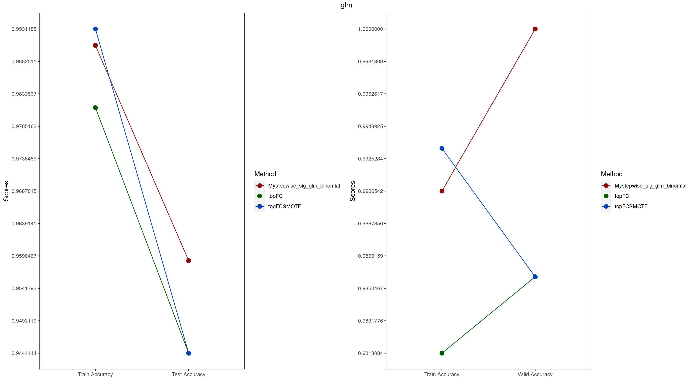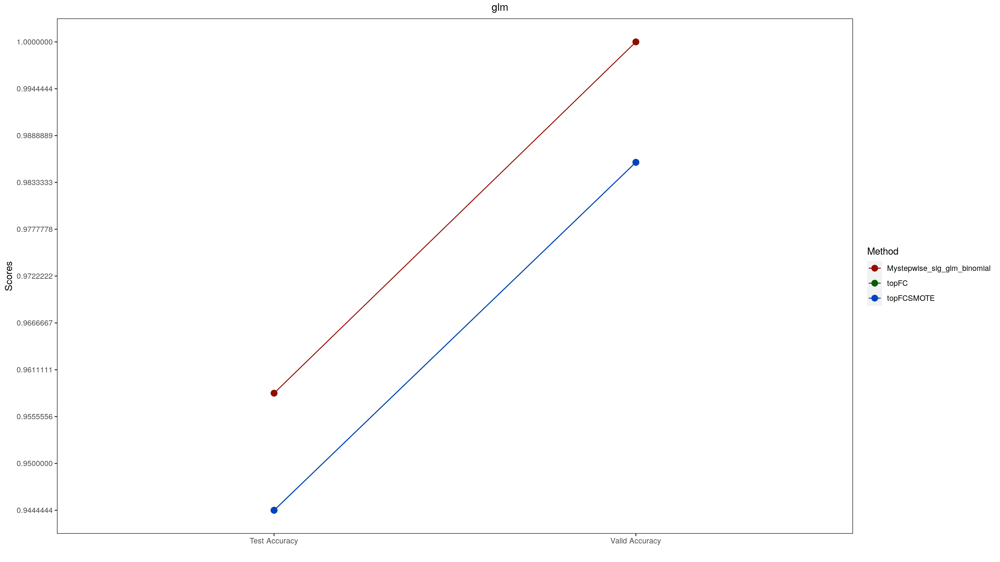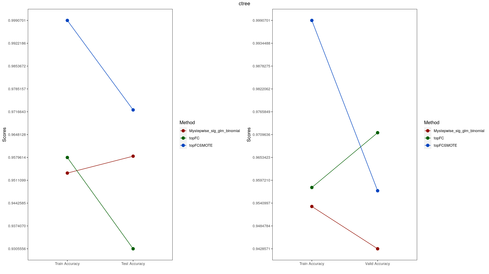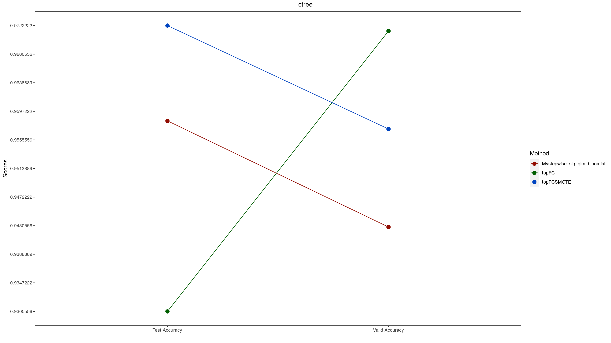
The relationship betweend accuracy on testing and validation sets can also be pictured as scatterplot:
acc2 = acc[1:6, ] # get top 6 methods
accmelt = melt(acc2, id.vars = "method") %>%
filter(variable != "metaindex") %>%
filter(variable != "miRy")
accmelt = cbind(accmelt, strsplit2(accmelt$variable, "_"))
acctest = accmelt$value[accmelt$`2` == "test"]
accvalid = accmelt$value[accmelt$`2` == "valid"]
accmeth = accmelt$method[accmelt$`2` == "test"]
unique(accmeth)
#> [1] "sigtop" "topFC" "sigtopSMOTE"
#> [4] "cfs_sig" "fcsig" "my_own_signature"
plot5 = ggplot(, aes(x = as.numeric(acctest), y = as.numeric(accvalid), shape = accmeth)) + geom_point() + scale_x_continuous(name = "Accuracy on test set",
limits = c(0.5, 1)) + scale_y_continuous(name = "Accuracy on validation set", limits = c(0.5, 1)) + theme_bw()
grid.arrange(arrangeGrob(plot5, ncol = 1, nrow = 1))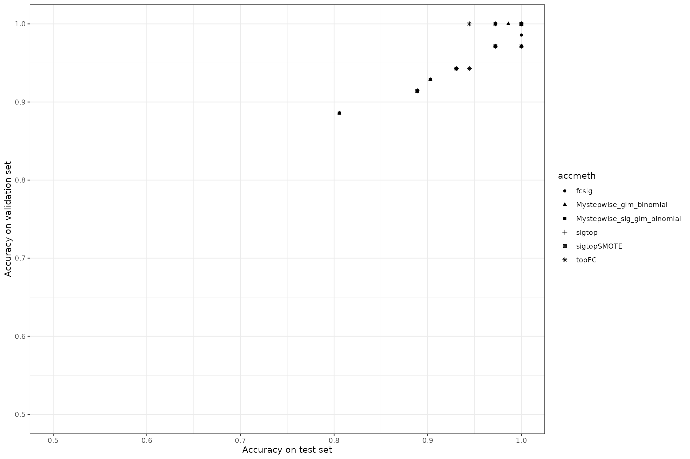
Best signature analysis
Suppose we decide to use sensitivity and specificity in the validation set (e.g., in the model architectures we plan to use in our research) as a decisive scoring metric for feature signature. The three best signatures may be:
OmicSelector_table(best_signatures[1:3, 2:4])
#> method SMOTE
#> sigtop sigtop No
#> topFC topFC No
#> sigtopSMOTE sigtopSMOTE Yes
#> miRy
#> sigtop Class ~ hsa.miR.21.5p + hsa.miR.30e.3p + hsa.miR.30a.3p + hsa.miR.217.5p + hsa.miR.132.3p + hsa.miR.30c.2.3p + hsa.miR.199a.5p + hsa.miR.375.3p + hsa.miR.338.3p + hsa.miR.139.5p + hsa.miR.199b.5p
#> topFC Class ~ hsa.miR.217.5p + hsa.miR.375.3p + hsa.miR.192.5p + hsa.miR.194.5p + hsa.miR.21.5p + hsa.miR.199b.5p + hsa.miR.429 + hsa.miR.141.3p + hsa.miR.200a.3p + hsa.miR.30a.3p + hsa.miR.708.3p
#> sigtopSMOTE Class ~ hsa.miR.21.5p + hsa.miR.30e.3p + hsa.miR.30a.3p + hsa.miR.217.5p + hsa.miR.132.3p + hsa.miR.30c.2.3p + hsa.miR.199a.5p + hsa.miR.375.3p + hsa.miR.338.3p + hsa.miR.139.5p + hsa.miR.199a.3pTo get the miRNAs from the formula you can use: OmicSelector_get_features_from_benchmark.
selected_miRNAs = OmicSelector_get_features_from_benchmark(benchmark_csv = "benchmark.csv", best_signatures$method[1]) # for the best performing signature
gsub("\\.", "-", selected_miRNAs) # R doesn't like hyphens, but we can introduce them easly
#> [1] "hsa-miR-21-5p" "hsa-miR-30e-3p" "hsa-miR-30a-3p"
#> [4] "hsa-miR-217-5p" "hsa-miR-132-3p" "hsa-miR-30c-2-3p"
#> [7] "hsa-miR-199a-5p" "hsa-miR-375-3p" "hsa-miR-338-3p"
#> [10] "hsa-miR-139-5p" "hsa-miR-199b-5p"As a double check, we can inspect the differential expression of miRNAs constituating selected signature:
best_de = OmicSelector_best_signature_de(selected_miRNAs)
OmicSelector_table(best_de)
#> miR log2FC p-value p-value BH
#> 1 hsa.miR.21.5p 2.719184 2.173289e-35 3.607661e-33
#> 2 hsa.miR.30e.3p -1.287376 8.427592e-32 6.994901e-30
#> 3 hsa.miR.30a.3p -2.277714 5.467478e-30 3.025338e-28
#> 4 hsa.miR.217.5p 4.904520 4.177113e-24 1.733502e-22
#> 5 hsa.miR.132.3p 1.317019 2.278717e-23 7.565339e-22
#> 6 hsa.miR.30c.2.3p -2.021523 4.068609e-23 1.125649e-21
#> 7 hsa.miR.199a.5p 1.622617 1.082618e-22 2.567351e-21
#> 8 hsa.miR.375.3p 4.696199 1.353644e-22 2.808811e-21
#> 9 hsa.miR.338.3p 1.715480 2.062873e-21 3.804855e-20
#> 10 hsa.miR.139.5p -1.854296 1.171548e-20 1.944770e-19
#> 11 hsa.miR.199b.5p 2.586609 1.196621e-19 1.738255e-18Let’s visualize the performance of those methods using barplots:
for (i in 1:3) {
cat(paste0("\n\n## ", acc$method[i], "\n\n"))
par(mfrow = c(1, 2))
acc = OmicSelector_best_signature_proposals_meta11("benchmark.csv")
metody = OmicSelector_get_benchmark_methods("benchmark.csv")
ktory_set = match(acc$method[i], OmicSelector_get_benchmark("benchmark.csv")$method)
# do_ktorej_kolumny = which(colnames(acc) == 'metaindex') barplot(as.numeric(acc[i,1:do_ktorej_kolumny]))
for (ii in 1:length(metody)) {
temp = OmicSelector_get_benchmark("benchmark.csv") %>%
dplyr::select(starts_with(paste0(metody[ii], "_t")), starts_with(paste0(metody[ii], "_v")))
ROCtext = paste0("Training AUC ROC: ", round(temp[ktory_set, 1], 2), " (95%CI: ", round(temp[ktory_set, 2], 2), "-", round(temp[ktory_set, 3],
2), ")")
temp = temp[, -c(1:3)]
temp2 = as.numeric(temp[ktory_set, ])
temp3 = matrix(temp2, nrow = 3, byrow = T)
colnames(temp3) = c("Accuracy", "Sensitivity", "Specificity")
rownames(temp3) = c("Training", "Testing", "Validation")
temp3 = t(temp3)
plot1 = barplot(temp3, beside = T, ylim = c(0, 1), xlab = paste0(ROCtext, "\nBlack - accuracy, blue - sensitivity, green - specificity"), width = 0.85,
col = c("black", "blue", "green"), legend = F, args.legend = list(x = "topright", bty = "n", inset = c(0, -0.25)), cex.lab = 0.7, main = paste0(acc$method[i],
" - ", metody[ii]), font.lab = 2)
## Add text at top of bars
text(x = plot1, y = as.numeric(temp3), label = paste0(round(as.numeric(temp[ktory_set, ]) * 100, 1), "%"), pos = 3, cex = 0.6, col = "red")
}
par(mfrow = c(1, 1))
}
#>
#>
#> ## sigtop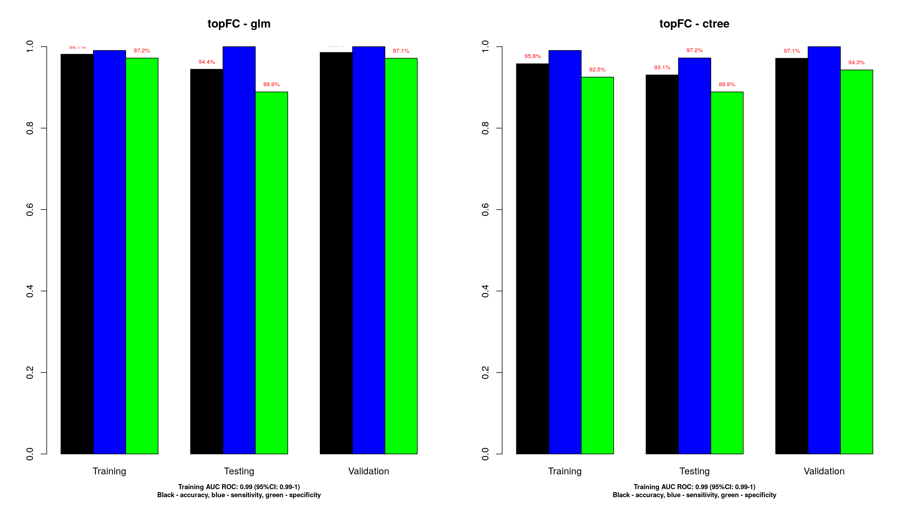
#>
#>
#> ## topFC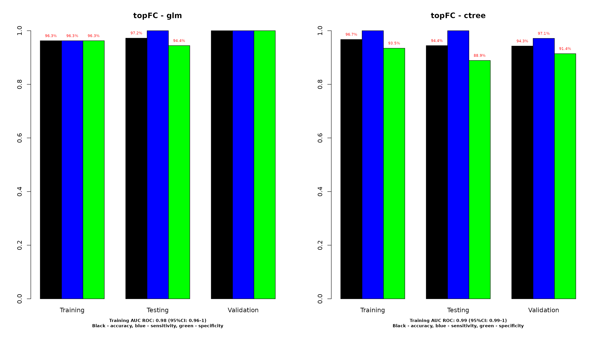
#>
#>
#> ## sigtopSMOTE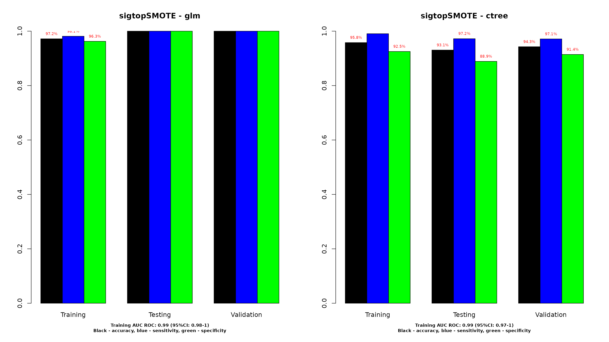
Finally, we can assess the overlap of top 3 feature selection methods:
overlap = OmicSelector_signature_overlap(acc$method[1:3], "benchmark.csv")Which miRNAs are common for between feature selection methods?
attr(overlap, "intersections")
#> $sigtopSMOTE
#> [1] "hsa.miR.199a.3p"
#>
#> $`sigtop:topFC`
#> [1] "hsa.miR.199b.5p"
#>
#> $`sigtop:sigtopSMOTE`
#> [1] "hsa.miR.30e.3p" "hsa.miR.132.3p" "hsa.miR.30c.2.3p"
#> [4] "hsa.miR.199a.5p" "hsa.miR.338.3p" "hsa.miR.139.5p"
#>
#> $`sigtop:topFC:sigtopSMOTE`
#> [1] "hsa.miR.21.5p" "hsa.miR.30a.3p" "hsa.miR.217.5p" "hsa.miR.375.3p"
#>
#> $topFC
#> [1] "hsa.miR.192.5p" "hsa.miR.194.5p" "hsa.miR.429"
#> [4] "hsa.miR.141.3p" "hsa.miR.200a.3p" "hsa.miR.708.3p"Let’s draw vulcano plot and mark the miRNAs selected in best signature:
OmicSelector_vulcano_plot(selected_miRNAs = de$miR, DE = de, only_label = selected_miRNAs)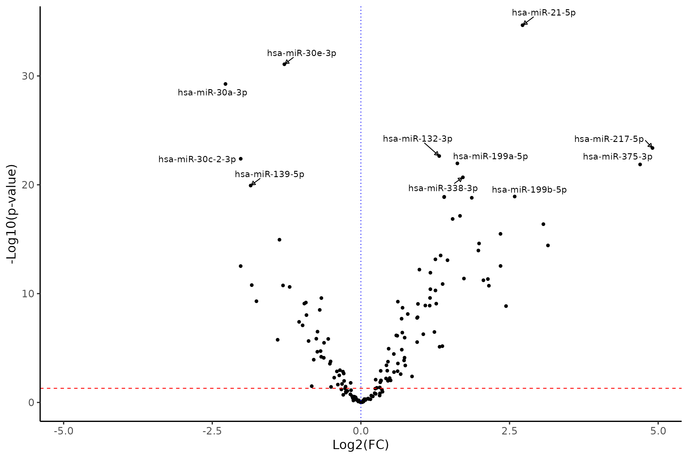
Let’s draw a heatmap for selected miRNAs in the whole dataset (training, testing and validation set).
OmicSelector_heatmap(x = dplyr::select(mixed, selected_miRNAs), rlab = data.frame(Class = mixed$Class, Mix = mixed$mix), zscore = F, margins = c(10, 10))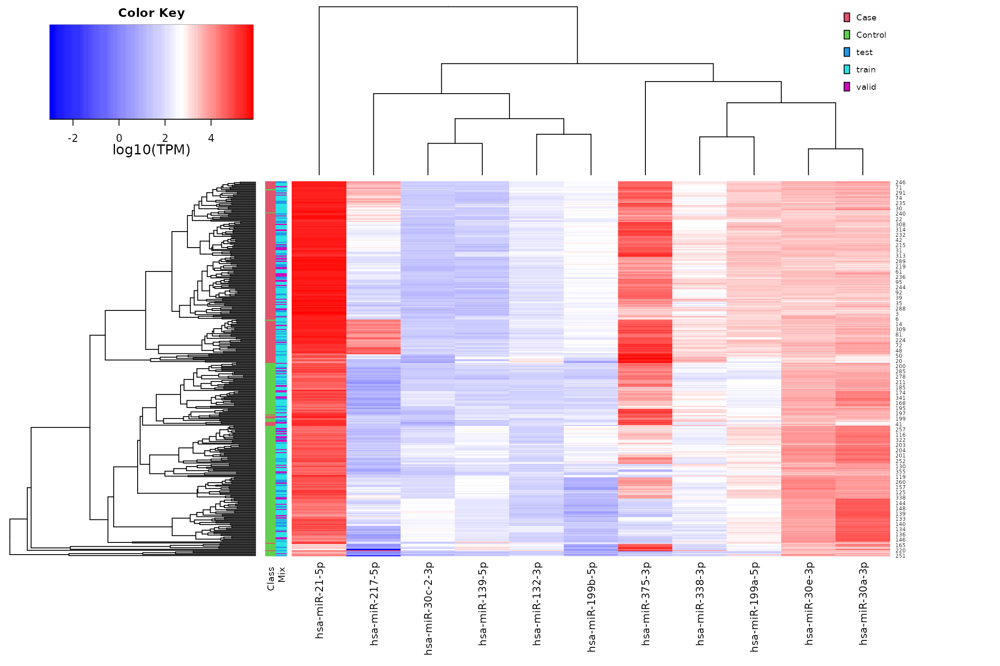
OmicSelector_heatmap(x = dplyr::select(mixed, selected_miRNAs), rlab = data.frame(Class = mixed$Class, Mix = mixed$mix), zscore = T, margins = c(10, 10))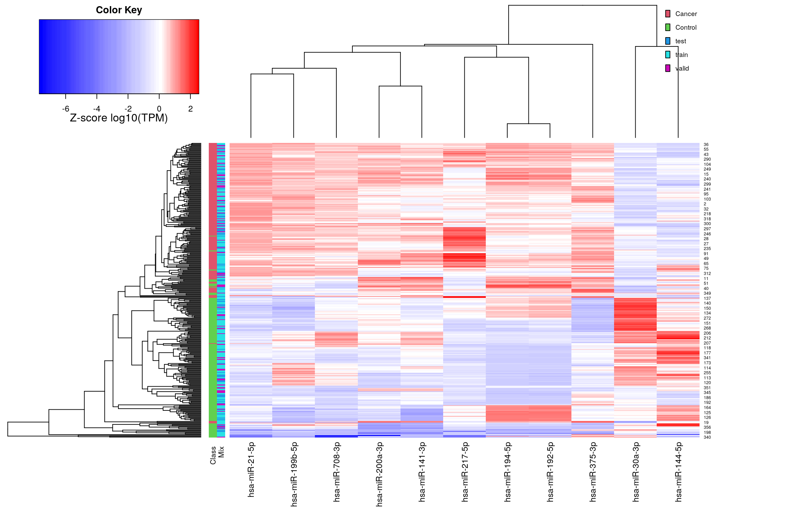
Based on everything we have done so far, we suggest using the following signature to validate the biomarker study further.
Sesssion
sessionInfo()
#> R version 4.2.0 (2022-04-22)
#> Platform: x86_64-pc-linux-gnu (64-bit)
#> Running under: Ubuntu 20.04.4 LTS
#>
#> Matrix products: default
#> BLAS: /usr/lib/x86_64-linux-gnu/openblas-pthread/libblas.so.3
#> LAPACK: /usr/lib/x86_64-linux-gnu/openblas-pthread/liblapack.so.3
#>
#> locale:
#> [1] LC_CTYPE=C.UTF-8 LC_NUMERIC=C
#> [3] LC_TIME=C.UTF-8 LC_COLLATE=C.UTF-8
#> [5] LC_MONETARY=C.UTF-8 LC_MESSAGES=C.UTF-8
#> [7] LC_PAPER=C.UTF-8 LC_NAME=C.UTF-8
#> [9] LC_ADDRESS=C.UTF-8 LC_TELEPHONE=C.UTF-8
#> [11] LC_MEASUREMENT=C.UTF-8 LC_IDENTIFICATION=C.UTF-8
#>
#> attached base packages:
#> [1] parallel grid stats graphics grDevices utils datasets
#> [8] methods base
#>
#> other attached packages:
#> [1] profileR_0.3-5 lavaan_0.6-11 reshape_0.8.9
#> [4] RColorBrewer_1.1-3 PairedData_1.1.1 mvtnorm_1.1-3
#> [7] gld_2.6.4 remotes_2.4.2 stargazer_5.2.3
#> [10] reticulate_1.25 randomForest_4.7-1.1 C50_0.1.6
#> [13] psych_2.2.5 doParallel_1.0.17 iterators_1.0.14
#> [16] foreach_1.5.2 R.utils_2.11.0 R.oo_1.24.0
#> [19] R.methodsS3_1.8.1 ggrepel_0.9.1 classInt_0.4-3
#> [22] plotly_4.10.0 ggbiplot_0.55 scales_1.2.0
#> [25] forcats_0.5.1 purrr_0.3.4 readr_2.1.2
#> [28] tidyr_1.2.0 tibble_3.1.7 tidyverse_1.3.1
#> [31] stringr_1.4.0 devtools_2.4.3 usethis_2.1.6
#> [34] gplots_3.1.3 gridExtra_2.3 ROSE_0.0-4
#> [37] DMwR_0.4.1 pROC_1.18.0 caret_6.0-92
#> [40] lattice_0.20-45 ggplot2_3.3.6 Biocomb_0.4
#> [43] Rcpp_1.0.8.3 gtools_3.9.2.1 rsq_2.5
#> [46] epiDisplay_3.5.0.2 nnet_7.3-17 MASS_7.3-57
#> [49] survival_3.2-13 foreign_0.8-82 edgeR_3.38.1
#> [52] limma_3.52.1 plyr_1.8.7 MatchIt_4.4.0
#> [55] mice_3.14.0 knitr_1.39 data.table_1.14.2
#> [58] OmicSelector_1.0.0 dplyr_1.0.9 BiocStyle_2.24.0
#>
#> loaded via a namespace (and not attached):
#> [1] rappdirs_0.3.3 arules_1.7-3 ModelMetrics_1.2.2.2
#> [4] ragg_1.2.2 multcomp_1.4-19 rpart_4.1.16
#> [7] hardhat_0.2.0 generics_0.1.2 snow_0.4-4
#> [10] TH.data_1.1-1 callr_3.7.0 proxy_0.4-26
#> [13] future_1.26.1 tzdb_0.3.0 xml2_1.3.3
#> [16] lubridate_1.8.0 httpuv_1.6.5 assertthat_0.2.1
#> [19] gower_1.0.0 xfun_0.31 hms_1.1.1
#> [22] jquerylib_0.1.4 rJava_1.0-6 evaluate_0.15
#> [25] promises_1.2.0.1 fansi_1.0.3 caTools_1.18.2
#> [28] dbplyr_2.1.1 readxl_1.4.0 DBI_1.1.2
#> [31] tmvnsim_1.0-2 quantmod_0.4.20 htmlwidgets_1.5.4
#> [34] stats4_4.2.0 ellipsis_0.3.2 crosstalk_1.2.0
#> [37] backports_1.4.1 bookdown_0.26 pbivnorm_0.6.0
#> [40] libcoin_1.0-9 vctrs_0.4.1 TTR_0.24.3
#> [43] ROCR_1.0-11 entropy_1.3.1 abind_1.4-5
#> [46] cachem_1.0.6 withr_2.5.0 xts_0.12.1
#> [49] prettyunits_1.1.1 mnormt_2.0.2 cluster_2.1.3
#> [52] lazyeval_0.2.2 crayon_1.5.1 recipes_0.2.0
#> [55] pkgconfig_2.0.3 labeling_0.4.2 nlme_3.1-157
#> [58] pkgload_1.2.4 rlang_1.0.2 globals_0.15.0
#> [61] lifecycle_1.0.1 sandwich_3.0-1 modelr_0.1.8
#> [64] cellranger_1.1.0 Cubist_0.4.0 rprojroot_2.0.3
#> [67] matrixStats_0.62.0 partykit_1.2-15 pamr_1.56.1
#> [70] FSelector_0.33 Matrix_1.4-1 boot_1.3-28
#> [73] zoo_1.8-10 reprex_2.0.1 processx_3.5.3
#> [76] png_0.1-7 viridisLite_0.4.0 bitops_1.0-7
#> [79] KernSmooth_2.23-20 rgl_0.108.3.2 coin_1.4-2
#> [82] parallelly_1.31.1 RWeka_0.4-44 memoise_2.0.1
#> [85] magrittr_2.0.3 compiler_4.2.0 lme4_1.1-29
#> [88] cli_3.3.0 listenv_0.8.0 ps_1.7.0
#> [91] formatR_1.12 Formula_1.2-4 tidyselect_1.1.2
#> [94] stringi_1.7.6 textshaping_0.3.6 highr_0.9
#> [97] yaml_2.3.5 locfit_1.5-9.5 sass_0.4.1
#> [100] lmom_2.9 tools_4.2.0 future.apply_1.9.0
#> [103] rstudioapi_0.13 inum_1.0-4 prodlim_2019.11.13
#> [106] farver_2.1.0 digest_0.6.29 BiocManager_1.30.18
#> [109] party_1.3-10 shiny_1.7.1 lava_1.6.10
#> [112] broom_0.8.0 later_1.3.0 httr_1.4.3
#> [115] Deriv_4.1.3 colorspace_2.0-3 rvest_1.0.2
#> [118] brio_1.1.3 fs_1.5.2 splines_4.2.0
#> [121] RWekajars_3.9.3-2 pkgdown_2.0.3 sessioninfo_1.2.2
#> [124] systemfonts_1.0.4 xtable_1.8-4 jsonlite_1.8.0
#> [127] nloptr_2.0.3 strucchange_1.5-2 timeDate_3043.102
#> [130] modeltools_0.2-23 testthat_3.1.4 ipred_0.9-12
#> [133] R6_2.5.1 pillar_1.7.0 htmltools_0.5.2
#> [136] mime_0.12 glue_1.6.2 fastmap_1.1.0
#> [139] minqa_1.2.4 class_7.3-20 codetools_0.2-18
#> [142] pkgbuild_1.3.1 utf8_1.2.2 bslib_0.3.1
#> [145] curl_4.3.2 rmarkdown_2.14 desc_1.4.1
#> [148] munsell_0.5.0 e1071_1.7-9 haven_2.5.0
#> [151] reshape2_1.4.4 gtable_0.3.0
packageDescription("OmicSelector")
#> Package: OmicSelector
#> Type: Package
#> Title: OmicSelector - a package for biomarker selection based on
#> high-throughput experiments.
#> Version: 1.0.0
#> Author: Konrad Stawiski
#> Maintainer: Konrad Stawiski <konrad.stawiski@umed.lodz.pl>
#> Description: OmicSelector is package is the environment,
#> docker-based application and R package for biomarker
#> signature selection from high-throughput experiments.
#> Initially developed for miRNA-seq. The package introduces
#> automatic and structured feature selection with further
#> benchmarking using multiple data mining methods, thus
#> allow to find the most overfitting resiliant signature
#> (set of featrues) that can be used in biomarker validation
#> studies. E.g. this package can be used to find the set of
#> miRNAs with the greatest biomarker potential based on
#> miRNAs-seq. This set can be further validated in cheaper
#> qPCR studies.
#> License: License: MIT + file LICENSE
#> Encoding: UTF-8
#> LazyData: true
#> Suggests: knitr, rmarkdown
#> VignetteBuilder: knitr
#> StagedInstall: yes
#> Imports: dplyr, snow, remotes, devtools, ellipsis, BiocManager,
#> plyr, tibble, tidyr, XML, epiDisplay, rsq, MASS, caret,
#> tidyverse, xtable, pROC, ggplot2, DMwR, ROSE, gridExtra,
#> gplots, stringr, data.table, doParallel, Boruta, spFSR,
#> varSelRF, My.stepwise, psych, C50, randomForest, nnet,
#> reticulate, stargazer, ggrepel, classInt, plotly, keras,
#> cutpointr, naniar, visdat, imputeMissings, foreach,
#> deepnet, calibrate, networkD3, VennDiagram, RSNNS,
#> kernlab, car, PairedData, profileR, xgboost, kableExtra,
#> curl, tidyselect, rJava, mice, MatchIt, cluster, Biobase,
#> Biocomb, ComplexHeatmap, GDCRNATools, R.utils,
#> TCGAbiolinks, VIM, circlize, edgeR, magick, mgcv, party,
#> rmarkdown, rpart, sva, devtools, nnet, klaR,
#> ParBayesianOptimization, recipes, resample, mlbench
#> RoxygenNote: 7.2.0
#> Authors@R: c( person("Konrad", "Stawiski", ,
#> "konrad.stawiski@umed.lodz.pl", role = c("aut", "cre"),
#> comment = c(ORCID = "0000-0002-6550-3384") ),
#> person("Marcin", "Kaszkowiak", role = "aut"))
#> BugReports: https://github.com/kstawiski/OmicSelector/issues
#> URL: https://biostat.umed.pl/OmicSelector/
#> biocViews: Software
#> Depends: R (>= 2.10)
#> RemoteType: github
#> RemoteHost: api.github.com
#> RemoteRepo: OmicSelector
#> RemoteUsername: kstawiski
#> RemoteRef: HEAD
#> RemoteSha: 38c51527b9717cef4d7c5fe19e1a33b78ade494d
#> GithubRepo: OmicSelector
#> GithubUsername: kstawiski
#> GithubRef: HEAD
#> GithubSHA1: 38c51527b9717cef4d7c5fe19e1a33b78ade494d
#> NeedsCompilation: no
#> Packaged: 2022-06-01 20:44:34 UTC; konrad
#> Built: R 4.2.0; ; 2022-06-01 20:44:37 UTC; unix
#>
#> -- File: /home/konrad/R/x86_64-pc-linux-gnu-library/4.2/OmicSelector/Meta/package.rdsTo render this tutorial we used:
render("Tutorial.Rmd", output_file = "Tutorial.html", output_dir = "../inst/doc/")Packages installed in our docker enviorment:
OmicSelector_table(as.data.frame(installed.packages()))
#> Package
#> abind abind
#> affy affy
#> affyio affyio
#> annotate annotate
#> AnnotationDbi AnnotationDbi
#> ape ape
#> aplot aplot
#> arm arm
#> arules arules
#> askpass askpass
#> assertthat assertthat
#> autokeras autokeras
#> backports backports
#> base64enc base64enc
#> BBmisc BBmisc
#> BH BH
#> Biobase Biobase
#> BiocCheck BiocCheck
#> BiocFileCache BiocFileCache
#> BiocGenerics BiocGenerics
#> BiocManager BiocManager
#> Biocomb Biocomb
#> BiocParallel BiocParallel
#> BiocStyle BiocStyle
#> BiocVersion BiocVersion
#> biocViews biocViews
#> biomaRt biomaRt
#> Biostrings Biostrings
#> bit bit
#> bit64 bit64
#> bitops bitops
#> blob blob
#> bookdown bookdown
#> Boruta Boruta
#> bounceR bounceR
#> brew brew
#> brio brio
#> broom broom
#> broom.helpers broom.helpers
#> bslib bslib
#> C50 C50
#> cachem cachem
#> calibrate calibrate
#> callr callr
#> car car
#> carData carData
#> caret caret
#> caTools caTools
#> cellranger cellranger
#> checkmate checkmate
#> circlize circlize
#> classInt classInt
#> cli cli
#> clipr clipr
#> clue clue
#> clusterProfiler clusterProfiler
#> coda coda
#> coin coin
#> colorspace colorspace
#> combinat combinat
#> commonmark commonmark
#> ComplexHeatmap ComplexHeatmap
#> config config
#> corrplot corrplot
#> cowplot cowplot
#> cpp11 cpp11
#> crayon crayon
#> credentials credentials
#> crosstalk crosstalk
#> cubature cubature
#> Cubist Cubist
#> curl curl
#> cutpointr cutpointr
#> data.table data.table
#> DBI DBI
#> dbplyr dbplyr
#> dbscan dbscan
#> deepnet deepnet
#> DelayedArray DelayedArray
#> DEoptimR DEoptimR
#> Deriv Deriv
#> desc desc
#> DESeq2 DESeq2
#> devtools devtools
#> DiceKriging DiceKriging
#> diffobj diffobj
#> digest digest
#> DMwR DMwR
#> DO.db DO.db
#> doParallel doParallel
#> DOSE DOSE
#> downlit downlit
#> downloader downloader
#> dplyr dplyr
#> DT DT
#> dtplyr dtplyr
#> e1071 e1071
#> edgeR edgeR
#> ellipsis ellipsis
#> enrichplot enrichplot
#> entropy entropy
#> epiDisplay epiDisplay
#> evaluate evaluate
#> exactRankTests exactRankTests
#> fansi fansi
#> farver farver
#> fastmap fastmap
#> fastmatch fastmatch
#> feseR feseR
#> fgsea fgsea
#> filelock filelock
#> fontawesome fontawesome
#> forcats forcats
#> foreach foreach
#> formatR formatR
#> Formula Formula
#> fs fs
#> FSelector FSelector
#> funModeling funModeling
#> furrr furrr
#> futile.logger futile.logger
#> futile.options futile.options
#> future future
#> future.apply future.apply
#> gargle gargle
#> gdata gdata
#> GDCRNATools GDCRNATools
#> genefilter genefilter
#> geneplotter geneplotter
#> generics generics
#> GenomeInfoDb GenomeInfoDb
#> GenomeInfoDbData GenomeInfoDbData
#> GenomicDataCommons GenomicDataCommons
#> GenomicRanges GenomicRanges
#> gert gert
#> GetoptLong GetoptLong
#> ggbiplot ggbiplot
#> ggforce ggforce
#> ggfun ggfun
#> ggplot2 ggplot2
#> ggplotify ggplotify
#> ggpubr ggpubr
#> ggraph ggraph
#> ggrepel ggrepel
#> ggsci ggsci
#> ggsignif ggsignif
#> ggtext ggtext
#> ggtree ggtree
#> gh gh
#> gitcreds gitcreds
#> gld gld
#> glmnet glmnet
#> GlobalOptions GlobalOptions
#> globals globals
#> glue glue
#> gmodels gmodels
#> GO.db GO.db
#> googledrive googledrive
#> googlesheets4 googlesheets4
#> GOSemSim GOSemSim
#> gower gower
#> gplots gplots
#> graph graph
#> graphlayouts graphlayouts
#> gridExtra gridExtra
#> gridGraphics gridGraphics
#> gridtext gridtext
#> gt gt
#> gtable gtable
#> gtools gtools
#> gtsummary gtsummary
#> hardhat hardhat
#> hash hash
#> haven haven
#> here here
#> highr highr
#> Hmisc Hmisc
#> hms hms
#> htmlTable htmlTable
#> htmltools htmltools
#> htmlwidgets htmlwidgets
#> HTqPCR HTqPCR
#> httpuv httpuv
#> httr httr
#> ids ids
#> igraph igraph
#> imputeMissings imputeMissings
#> ini ini
#> inum inum
#> ipred ipred
#> IRanges IRanges
#> isoband isoband
#> iterators iterators
#> jpeg jpeg
#> jquerylib jquerylib
#> jsonlite jsonlite
#> kableExtra kableExtra
#> KEGGgraph KEGGgraph
#> KEGGREST KEGGREST
#> keras keras
#> kernlab kernlab
#> klaR klaR
#> km.ci km.ci
#> KMsurv KMsurv
#> knitr knitr
#> labeling labeling
#> labelled labelled
#> laeken laeken
#> lambda.r lambda.r
#> later later
#> latticeExtra latticeExtra
#> lava lava
#> lavaan lavaan
#> lazyeval lazyeval
#> lhs lhs
#> libcoin libcoin
#> lifecycle lifecycle
#> limma limma
#> listenv listenv
#> lme4 lme4
#> lmom lmom
#> lmtest lmtest
#> lobstr lobstr
#> locfit locfit
#> lubridate lubridate
#> magick magick
#> magrittr magrittr
#> maptools maptools
#> markdown markdown
#> MatchIt MatchIt
#> MatrixGenerics MatrixGenerics
#> MatrixModels MatrixModels
#> matrixStats matrixStats
#> maxstat maxstat
#> mboost mboost
#> memoise memoise
#> mice mice
#> mime mime
#> miniUI miniUI
#> minqa minqa
#> mitools mitools
#> mlbench mlbench
#> mlr mlr
#> mnormt mnormt
#> ModelMetrics ModelMetrics
#> modelr modelr
#> modeltools modeltools
#> moments moments
#> mRMRe mRMRe
#> multcomp multcomp
#> munsell munsell
#> mvtnorm mvtnorm
#> My.stepwise My.stepwise
#> naniar naniar
#> networkD3 networkD3
#> nloptr nloptr
#> nnls nnls
#> nondetects nondetects
#> norm norm
#> np np
#> numDeriv numDeriv
#> OmicSelector OmicSelector
#> openssl openssl
#> org.Hs.eg.db org.Hs.eg.db
#> PairedData PairedData
#> pamr pamr
#> pander pander
#> parallelly parallelly
#> parallelMap parallelMap
#> ParamHelpers ParamHelpers
#> ParBayesianOptimization ParBayesianOptimization
#> parsetools parsetools
#> party party
#> partykit partykit
#> patchwork patchwork
#> pathview pathview
#> pbivnorm pbivnorm
#> pbkrtest pbkrtest
#> pillar pillar
#> pkgbuild pkgbuild
#> pkgcond pkgcond
#> pkgconfig pkgconfig
#> pkgdown pkgdown
#> pkgload pkgload
#> plogr plogr
#> plotly plotly
#> plyr plyr
#> png png
#> polspline polspline
#> polyclip polyclip
#> polynom polynom
#> postlogic postlogic
#> praise praise
#> preprocessCore preprocessCore
#> prettyunits prettyunits
#> pROC pROC
#> processx processx
#> prodlim prodlim
#> profileR profileR
#> progress progress
#> progressr progressr
#> promises promises
#> proxy proxy
#> pryr pryr
#> ps ps
#> psych psych
#> purrr purrr
#> purrrogress purrrogress
#> quadprog quadprog
#> quantmod quantmod
#> quantreg quantreg
#> questionr questionr
#> qvalue qvalue
#> R.cache R.cache
#> R.methodsS3 R.methodsS3
#> R.oo R.oo
#> R.utils R.utils
#> R6 R6
#> ragg ragg
#> randomForest randomForest
#> ranger ranger
#> RANN RANN
#> rappdirs rappdirs
#> rapportools rapportools
#> RBGL RBGL
#> rcmdcheck rcmdcheck
#> RColorBrewer RColorBrewer
#> Rcpp Rcpp
#> RcppArmadillo RcppArmadillo
#> RcppEigen RcppEigen
#> RcppProgress RcppProgress
#> RcppTOML RcppTOML
#> RCurl RCurl
#> readr readr
#> readxl readxl
#> recipes recipes
#> rematch rematch
#> rematch2 rematch2
#> remotes remotes
#> reprex reprex
#> resample resample
#> reshape reshape
#> reshape2 reshape2
#> reticulate reticulate
#> rgl rgl
#> Rgraphviz Rgraphviz
#> rhandsontable rhandsontable
#> rJava rJava
#> rjson rjson
#> rlang rlang
#> rmarkdown rmarkdown
#> rms rms
#> robustbase robustbase
#> ROCR ROCR
#> ROSE ROSE
#> roxygen2 roxygen2
#> rprojroot rprojroot
#> RSNNS RSNNS
#> rsq rsq
#> RSQLite RSQLite
#> rstatix rstatix
#> rstudioapi rstudioapi
#> RUnit RUnit
#> rversions rversions
#> rvest rvest
#> RWeka RWeka
#> RWekajars RWekajars
#> S4Vectors S4Vectors
#> sandwich sandwich
#> sass sass
#> scales scales
#> scatterpie scatterpie
#> selectr selectr
#> sessioninfo sessioninfo
#> shadowtext shadowtext
#> shape shape
#> shiny shiny
#> shinyfullscreen shinyfullscreen
#> shinyjqui shinyjqui
#> shinyjs shinyjs
#> snow snow
#> sourcetools sourcetools
#> sp sp
#> SparseM SparseM
#> spFSR spFSR
#> SQUAREM SQUAREM
#> stabs stabs
#> stargazer stargazer
#> stringdist stringdist
#> stringi stringi
#> stringr stringr
#> strucchange strucchange
#> styler styler
#> SummarizedExperiment SummarizedExperiment
#> summarytools summarytools
#> survey survey
#> survminer survminer
#> survMisc survMisc
#> sva sva
#> svglite svglite
#> sys sys
#> systemfonts systemfonts
#> tableone tableone
#> TCGAbiolinks TCGAbiolinks
#> TCGAbiolinksGUI.data TCGAbiolinksGUI.data
#> tensorflow tensorflow
#> testextra testextra
#> testthat testthat
#> textshaping textshaping
#> tfautograph tfautograph
#> tfruns tfruns
#> TH.data TH.data
#> tibble tibble
#> tictoc tictoc
#> tidygraph tidygraph
#> tidyr tidyr
#> tidyselect tidyselect
#> tidytemplate tidytemplate
#> tidytree tidytree
#> tidyverse tidyverse
#> timeDate timeDate
#> tinytex tinytex
#> tmvnsim tmvnsim
#> treeio treeio
#> TTR TTR
#> tweenr tweenr
#> tzdb tzdb
#> UpSetR UpSetR
#> usethis usethis
#> utf8 utf8
#> uuid uuid
#> varSelRF varSelRF
#> vcd vcd
#> vctrs vctrs
#> VennDiagram VennDiagram
#> VIM VIM
#> viridis viridis
#> viridisLite viridisLite
#> visdat visdat
#> vroom vroom
#> waiter waiter
#> waldo waldo
#> webshot webshot
#> whisker whisker
#> withr withr
#> xfun xfun
#> xgboost xgboost
#> xlsx xlsx
#> xlsxjars xlsxjars
#> XML XML
#> xml2 xml2
#> xopen xopen
#> xtable xtable
#> xts xts
#> XVector XVector
#> yaml yaml
#> yulab.utils yulab.utils
#> zeallot zeallot
#> zip zip
#> zlibbioc zlibbioc
#> zoo zoo
#> base base
#> boot boot
#> class class
#> cluster cluster
#> codetools codetools
#> compiler compiler
#> datasets datasets
#> foreign foreign
#> graphics graphics
#> grDevices grDevices
#> grid grid
#> KernSmooth KernSmooth
#> lattice lattice
#> MASS MASS
#> Matrix Matrix
#> methods methods
#> mgcv mgcv
#> nlme nlme
#> nnet nnet
#> parallel parallel
#> rpart rpart
#> spatial spatial
#> splines splines
#> stats stats
#> stats4 stats4
#> survival survival
#> tcltk tcltk
#> tools tools
#> utils utils
#> LibPath
#> abind /home/konrad/R/x86_64-pc-linux-gnu-library/4.2
#> affy /home/konrad/R/x86_64-pc-linux-gnu-library/4.2
#> affyio /home/konrad/R/x86_64-pc-linux-gnu-library/4.2
#> annotate /home/konrad/R/x86_64-pc-linux-gnu-library/4.2
#> AnnotationDbi /home/konrad/R/x86_64-pc-linux-gnu-library/4.2
#> ape /home/konrad/R/x86_64-pc-linux-gnu-library/4.2
#> aplot /home/konrad/R/x86_64-pc-linux-gnu-library/4.2
#> arm /home/konrad/R/x86_64-pc-linux-gnu-library/4.2
#> arules /home/konrad/R/x86_64-pc-linux-gnu-library/4.2
#> askpass /home/konrad/R/x86_64-pc-linux-gnu-library/4.2
#> assertthat /home/konrad/R/x86_64-pc-linux-gnu-library/4.2
#> autokeras /home/konrad/R/x86_64-pc-linux-gnu-library/4.2
#> backports /home/konrad/R/x86_64-pc-linux-gnu-library/4.2
#> base64enc /home/konrad/R/x86_64-pc-linux-gnu-library/4.2
#> BBmisc /home/konrad/R/x86_64-pc-linux-gnu-library/4.2
#> BH /home/konrad/R/x86_64-pc-linux-gnu-library/4.2
#> Biobase /home/konrad/R/x86_64-pc-linux-gnu-library/4.2
#> BiocCheck /home/konrad/R/x86_64-pc-linux-gnu-library/4.2
#> BiocFileCache /home/konrad/R/x86_64-pc-linux-gnu-library/4.2
#> BiocGenerics /home/konrad/R/x86_64-pc-linux-gnu-library/4.2
#> BiocManager /home/konrad/R/x86_64-pc-linux-gnu-library/4.2
#> Biocomb /home/konrad/R/x86_64-pc-linux-gnu-library/4.2
#> BiocParallel /home/konrad/R/x86_64-pc-linux-gnu-library/4.2
#> BiocStyle /home/konrad/R/x86_64-pc-linux-gnu-library/4.2
#> BiocVersion /home/konrad/R/x86_64-pc-linux-gnu-library/4.2
#> biocViews /home/konrad/R/x86_64-pc-linux-gnu-library/4.2
#> biomaRt /home/konrad/R/x86_64-pc-linux-gnu-library/4.2
#> Biostrings /home/konrad/R/x86_64-pc-linux-gnu-library/4.2
#> bit /home/konrad/R/x86_64-pc-linux-gnu-library/4.2
#> bit64 /home/konrad/R/x86_64-pc-linux-gnu-library/4.2
#> bitops /home/konrad/R/x86_64-pc-linux-gnu-library/4.2
#> blob /home/konrad/R/x86_64-pc-linux-gnu-library/4.2
#> bookdown /home/konrad/R/x86_64-pc-linux-gnu-library/4.2
#> Boruta /home/konrad/R/x86_64-pc-linux-gnu-library/4.2
#> bounceR /home/konrad/R/x86_64-pc-linux-gnu-library/4.2
#> brew /home/konrad/R/x86_64-pc-linux-gnu-library/4.2
#> brio /home/konrad/R/x86_64-pc-linux-gnu-library/4.2
#> broom /home/konrad/R/x86_64-pc-linux-gnu-library/4.2
#> broom.helpers /home/konrad/R/x86_64-pc-linux-gnu-library/4.2
#> bslib /home/konrad/R/x86_64-pc-linux-gnu-library/4.2
#> C50 /home/konrad/R/x86_64-pc-linux-gnu-library/4.2
#> cachem /home/konrad/R/x86_64-pc-linux-gnu-library/4.2
#> calibrate /home/konrad/R/x86_64-pc-linux-gnu-library/4.2
#> callr /home/konrad/R/x86_64-pc-linux-gnu-library/4.2
#> car /home/konrad/R/x86_64-pc-linux-gnu-library/4.2
#> carData /home/konrad/R/x86_64-pc-linux-gnu-library/4.2
#> caret /home/konrad/R/x86_64-pc-linux-gnu-library/4.2
#> caTools /home/konrad/R/x86_64-pc-linux-gnu-library/4.2
#> cellranger /home/konrad/R/x86_64-pc-linux-gnu-library/4.2
#> checkmate /home/konrad/R/x86_64-pc-linux-gnu-library/4.2
#> circlize /home/konrad/R/x86_64-pc-linux-gnu-library/4.2
#> classInt /home/konrad/R/x86_64-pc-linux-gnu-library/4.2
#> cli /home/konrad/R/x86_64-pc-linux-gnu-library/4.2
#> clipr /home/konrad/R/x86_64-pc-linux-gnu-library/4.2
#> clue /home/konrad/R/x86_64-pc-linux-gnu-library/4.2
#> clusterProfiler /home/konrad/R/x86_64-pc-linux-gnu-library/4.2
#> coda /home/konrad/R/x86_64-pc-linux-gnu-library/4.2
#> coin /home/konrad/R/x86_64-pc-linux-gnu-library/4.2
#> colorspace /home/konrad/R/x86_64-pc-linux-gnu-library/4.2
#> combinat /home/konrad/R/x86_64-pc-linux-gnu-library/4.2
#> commonmark /home/konrad/R/x86_64-pc-linux-gnu-library/4.2
#> ComplexHeatmap /home/konrad/R/x86_64-pc-linux-gnu-library/4.2
#> config /home/konrad/R/x86_64-pc-linux-gnu-library/4.2
#> corrplot /home/konrad/R/x86_64-pc-linux-gnu-library/4.2
#> cowplot /home/konrad/R/x86_64-pc-linux-gnu-library/4.2
#> cpp11 /home/konrad/R/x86_64-pc-linux-gnu-library/4.2
#> crayon /home/konrad/R/x86_64-pc-linux-gnu-library/4.2
#> credentials /home/konrad/R/x86_64-pc-linux-gnu-library/4.2
#> crosstalk /home/konrad/R/x86_64-pc-linux-gnu-library/4.2
#> cubature /home/konrad/R/x86_64-pc-linux-gnu-library/4.2
#> Cubist /home/konrad/R/x86_64-pc-linux-gnu-library/4.2
#> curl /home/konrad/R/x86_64-pc-linux-gnu-library/4.2
#> cutpointr /home/konrad/R/x86_64-pc-linux-gnu-library/4.2
#> data.table /home/konrad/R/x86_64-pc-linux-gnu-library/4.2
#> DBI /home/konrad/R/x86_64-pc-linux-gnu-library/4.2
#> dbplyr /home/konrad/R/x86_64-pc-linux-gnu-library/4.2
#> dbscan /home/konrad/R/x86_64-pc-linux-gnu-library/4.2
#> deepnet /home/konrad/R/x86_64-pc-linux-gnu-library/4.2
#> DelayedArray /home/konrad/R/x86_64-pc-linux-gnu-library/4.2
#> DEoptimR /home/konrad/R/x86_64-pc-linux-gnu-library/4.2
#> Deriv /home/konrad/R/x86_64-pc-linux-gnu-library/4.2
#> desc /home/konrad/R/x86_64-pc-linux-gnu-library/4.2
#> DESeq2 /home/konrad/R/x86_64-pc-linux-gnu-library/4.2
#> devtools /home/konrad/R/x86_64-pc-linux-gnu-library/4.2
#> DiceKriging /home/konrad/R/x86_64-pc-linux-gnu-library/4.2
#> diffobj /home/konrad/R/x86_64-pc-linux-gnu-library/4.2
#> digest /home/konrad/R/x86_64-pc-linux-gnu-library/4.2
#> DMwR /home/konrad/R/x86_64-pc-linux-gnu-library/4.2
#> DO.db /home/konrad/R/x86_64-pc-linux-gnu-library/4.2
#> doParallel /home/konrad/R/x86_64-pc-linux-gnu-library/4.2
#> DOSE /home/konrad/R/x86_64-pc-linux-gnu-library/4.2
#> downlit /home/konrad/R/x86_64-pc-linux-gnu-library/4.2
#> downloader /home/konrad/R/x86_64-pc-linux-gnu-library/4.2
#> dplyr /home/konrad/R/x86_64-pc-linux-gnu-library/4.2
#> DT /home/konrad/R/x86_64-pc-linux-gnu-library/4.2
#> dtplyr /home/konrad/R/x86_64-pc-linux-gnu-library/4.2
#> e1071 /home/konrad/R/x86_64-pc-linux-gnu-library/4.2
#> edgeR /home/konrad/R/x86_64-pc-linux-gnu-library/4.2
#> ellipsis /home/konrad/R/x86_64-pc-linux-gnu-library/4.2
#> enrichplot /home/konrad/R/x86_64-pc-linux-gnu-library/4.2
#> entropy /home/konrad/R/x86_64-pc-linux-gnu-library/4.2
#> epiDisplay /home/konrad/R/x86_64-pc-linux-gnu-library/4.2
#> evaluate /home/konrad/R/x86_64-pc-linux-gnu-library/4.2
#> exactRankTests /home/konrad/R/x86_64-pc-linux-gnu-library/4.2
#> fansi /home/konrad/R/x86_64-pc-linux-gnu-library/4.2
#> farver /home/konrad/R/x86_64-pc-linux-gnu-library/4.2
#> fastmap /home/konrad/R/x86_64-pc-linux-gnu-library/4.2
#> fastmatch /home/konrad/R/x86_64-pc-linux-gnu-library/4.2
#> feseR /home/konrad/R/x86_64-pc-linux-gnu-library/4.2
#> fgsea /home/konrad/R/x86_64-pc-linux-gnu-library/4.2
#> filelock /home/konrad/R/x86_64-pc-linux-gnu-library/4.2
#> fontawesome /home/konrad/R/x86_64-pc-linux-gnu-library/4.2
#> forcats /home/konrad/R/x86_64-pc-linux-gnu-library/4.2
#> foreach /home/konrad/R/x86_64-pc-linux-gnu-library/4.2
#> formatR /home/konrad/R/x86_64-pc-linux-gnu-library/4.2
#> Formula /home/konrad/R/x86_64-pc-linux-gnu-library/4.2
#> fs /home/konrad/R/x86_64-pc-linux-gnu-library/4.2
#> FSelector /home/konrad/R/x86_64-pc-linux-gnu-library/4.2
#> funModeling /home/konrad/R/x86_64-pc-linux-gnu-library/4.2
#> furrr /home/konrad/R/x86_64-pc-linux-gnu-library/4.2
#> futile.logger /home/konrad/R/x86_64-pc-linux-gnu-library/4.2
#> futile.options /home/konrad/R/x86_64-pc-linux-gnu-library/4.2
#> future /home/konrad/R/x86_64-pc-linux-gnu-library/4.2
#> future.apply /home/konrad/R/x86_64-pc-linux-gnu-library/4.2
#> gargle /home/konrad/R/x86_64-pc-linux-gnu-library/4.2
#> gdata /home/konrad/R/x86_64-pc-linux-gnu-library/4.2
#> GDCRNATools /home/konrad/R/x86_64-pc-linux-gnu-library/4.2
#> genefilter /home/konrad/R/x86_64-pc-linux-gnu-library/4.2
#> geneplotter /home/konrad/R/x86_64-pc-linux-gnu-library/4.2
#> generics /home/konrad/R/x86_64-pc-linux-gnu-library/4.2
#> GenomeInfoDb /home/konrad/R/x86_64-pc-linux-gnu-library/4.2
#> GenomeInfoDbData /home/konrad/R/x86_64-pc-linux-gnu-library/4.2
#> GenomicDataCommons /home/konrad/R/x86_64-pc-linux-gnu-library/4.2
#> GenomicRanges /home/konrad/R/x86_64-pc-linux-gnu-library/4.2
#> gert /home/konrad/R/x86_64-pc-linux-gnu-library/4.2
#> GetoptLong /home/konrad/R/x86_64-pc-linux-gnu-library/4.2
#> ggbiplot /home/konrad/R/x86_64-pc-linux-gnu-library/4.2
#> ggforce /home/konrad/R/x86_64-pc-linux-gnu-library/4.2
#> ggfun /home/konrad/R/x86_64-pc-linux-gnu-library/4.2
#> ggplot2 /home/konrad/R/x86_64-pc-linux-gnu-library/4.2
#> ggplotify /home/konrad/R/x86_64-pc-linux-gnu-library/4.2
#> ggpubr /home/konrad/R/x86_64-pc-linux-gnu-library/4.2
#> ggraph /home/konrad/R/x86_64-pc-linux-gnu-library/4.2
#> ggrepel /home/konrad/R/x86_64-pc-linux-gnu-library/4.2
#> ggsci /home/konrad/R/x86_64-pc-linux-gnu-library/4.2
#> ggsignif /home/konrad/R/x86_64-pc-linux-gnu-library/4.2
#> ggtext /home/konrad/R/x86_64-pc-linux-gnu-library/4.2
#> ggtree /home/konrad/R/x86_64-pc-linux-gnu-library/4.2
#> gh /home/konrad/R/x86_64-pc-linux-gnu-library/4.2
#> gitcreds /home/konrad/R/x86_64-pc-linux-gnu-library/4.2
#> gld /home/konrad/R/x86_64-pc-linux-gnu-library/4.2
#> glmnet /home/konrad/R/x86_64-pc-linux-gnu-library/4.2
#> GlobalOptions /home/konrad/R/x86_64-pc-linux-gnu-library/4.2
#> globals /home/konrad/R/x86_64-pc-linux-gnu-library/4.2
#> glue /home/konrad/R/x86_64-pc-linux-gnu-library/4.2
#> gmodels /home/konrad/R/x86_64-pc-linux-gnu-library/4.2
#> GO.db /home/konrad/R/x86_64-pc-linux-gnu-library/4.2
#> googledrive /home/konrad/R/x86_64-pc-linux-gnu-library/4.2
#> googlesheets4 /home/konrad/R/x86_64-pc-linux-gnu-library/4.2
#> GOSemSim /home/konrad/R/x86_64-pc-linux-gnu-library/4.2
#> gower /home/konrad/R/x86_64-pc-linux-gnu-library/4.2
#> gplots /home/konrad/R/x86_64-pc-linux-gnu-library/4.2
#> graph /home/konrad/R/x86_64-pc-linux-gnu-library/4.2
#> graphlayouts /home/konrad/R/x86_64-pc-linux-gnu-library/4.2
#> gridExtra /home/konrad/R/x86_64-pc-linux-gnu-library/4.2
#> gridGraphics /home/konrad/R/x86_64-pc-linux-gnu-library/4.2
#> gridtext /home/konrad/R/x86_64-pc-linux-gnu-library/4.2
#> gt /home/konrad/R/x86_64-pc-linux-gnu-library/4.2
#> gtable /home/konrad/R/x86_64-pc-linux-gnu-library/4.2
#> gtools /home/konrad/R/x86_64-pc-linux-gnu-library/4.2
#> gtsummary /home/konrad/R/x86_64-pc-linux-gnu-library/4.2
#> hardhat /home/konrad/R/x86_64-pc-linux-gnu-library/4.2
#> hash /home/konrad/R/x86_64-pc-linux-gnu-library/4.2
#> haven /home/konrad/R/x86_64-pc-linux-gnu-library/4.2
#> here /home/konrad/R/x86_64-pc-linux-gnu-library/4.2
#> highr /home/konrad/R/x86_64-pc-linux-gnu-library/4.2
#> Hmisc /home/konrad/R/x86_64-pc-linux-gnu-library/4.2
#> hms /home/konrad/R/x86_64-pc-linux-gnu-library/4.2
#> htmlTable /home/konrad/R/x86_64-pc-linux-gnu-library/4.2
#> htmltools /home/konrad/R/x86_64-pc-linux-gnu-library/4.2
#> htmlwidgets /home/konrad/R/x86_64-pc-linux-gnu-library/4.2
#> HTqPCR /home/konrad/R/x86_64-pc-linux-gnu-library/4.2
#> httpuv /home/konrad/R/x86_64-pc-linux-gnu-library/4.2
#> httr /home/konrad/R/x86_64-pc-linux-gnu-library/4.2
#> ids /home/konrad/R/x86_64-pc-linux-gnu-library/4.2
#> igraph /home/konrad/R/x86_64-pc-linux-gnu-library/4.2
#> imputeMissings /home/konrad/R/x86_64-pc-linux-gnu-library/4.2
#> ini /home/konrad/R/x86_64-pc-linux-gnu-library/4.2
#> inum /home/konrad/R/x86_64-pc-linux-gnu-library/4.2
#> ipred /home/konrad/R/x86_64-pc-linux-gnu-library/4.2
#> IRanges /home/konrad/R/x86_64-pc-linux-gnu-library/4.2
#> isoband /home/konrad/R/x86_64-pc-linux-gnu-library/4.2
#> iterators /home/konrad/R/x86_64-pc-linux-gnu-library/4.2
#> jpeg /home/konrad/R/x86_64-pc-linux-gnu-library/4.2
#> jquerylib /home/konrad/R/x86_64-pc-linux-gnu-library/4.2
#> jsonlite /home/konrad/R/x86_64-pc-linux-gnu-library/4.2
#> kableExtra /home/konrad/R/x86_64-pc-linux-gnu-library/4.2
#> KEGGgraph /home/konrad/R/x86_64-pc-linux-gnu-library/4.2
#> KEGGREST /home/konrad/R/x86_64-pc-linux-gnu-library/4.2
#> keras /home/konrad/R/x86_64-pc-linux-gnu-library/4.2
#> kernlab /home/konrad/R/x86_64-pc-linux-gnu-library/4.2
#> klaR /home/konrad/R/x86_64-pc-linux-gnu-library/4.2
#> km.ci /home/konrad/R/x86_64-pc-linux-gnu-library/4.2
#> KMsurv /home/konrad/R/x86_64-pc-linux-gnu-library/4.2
#> knitr /home/konrad/R/x86_64-pc-linux-gnu-library/4.2
#> labeling /home/konrad/R/x86_64-pc-linux-gnu-library/4.2
#> labelled /home/konrad/R/x86_64-pc-linux-gnu-library/4.2
#> laeken /home/konrad/R/x86_64-pc-linux-gnu-library/4.2
#> lambda.r /home/konrad/R/x86_64-pc-linux-gnu-library/4.2
#> later /home/konrad/R/x86_64-pc-linux-gnu-library/4.2
#> latticeExtra /home/konrad/R/x86_64-pc-linux-gnu-library/4.2
#> lava /home/konrad/R/x86_64-pc-linux-gnu-library/4.2
#> lavaan /home/konrad/R/x86_64-pc-linux-gnu-library/4.2
#> lazyeval /home/konrad/R/x86_64-pc-linux-gnu-library/4.2
#> lhs /home/konrad/R/x86_64-pc-linux-gnu-library/4.2
#> libcoin /home/konrad/R/x86_64-pc-linux-gnu-library/4.2
#> lifecycle /home/konrad/R/x86_64-pc-linux-gnu-library/4.2
#> limma /home/konrad/R/x86_64-pc-linux-gnu-library/4.2
#> listenv /home/konrad/R/x86_64-pc-linux-gnu-library/4.2
#> lme4 /home/konrad/R/x86_64-pc-linux-gnu-library/4.2
#> lmom /home/konrad/R/x86_64-pc-linux-gnu-library/4.2
#> lmtest /home/konrad/R/x86_64-pc-linux-gnu-library/4.2
#> lobstr /home/konrad/R/x86_64-pc-linux-gnu-library/4.2
#> locfit /home/konrad/R/x86_64-pc-linux-gnu-library/4.2
#> lubridate /home/konrad/R/x86_64-pc-linux-gnu-library/4.2
#> magick /home/konrad/R/x86_64-pc-linux-gnu-library/4.2
#> magrittr /home/konrad/R/x86_64-pc-linux-gnu-library/4.2
#> maptools /home/konrad/R/x86_64-pc-linux-gnu-library/4.2
#> markdown /home/konrad/R/x86_64-pc-linux-gnu-library/4.2
#> MatchIt /home/konrad/R/x86_64-pc-linux-gnu-library/4.2
#> MatrixGenerics /home/konrad/R/x86_64-pc-linux-gnu-library/4.2
#> MatrixModels /home/konrad/R/x86_64-pc-linux-gnu-library/4.2
#> matrixStats /home/konrad/R/x86_64-pc-linux-gnu-library/4.2
#> maxstat /home/konrad/R/x86_64-pc-linux-gnu-library/4.2
#> mboost /home/konrad/R/x86_64-pc-linux-gnu-library/4.2
#> memoise /home/konrad/R/x86_64-pc-linux-gnu-library/4.2
#> mice /home/konrad/R/x86_64-pc-linux-gnu-library/4.2
#> mime /home/konrad/R/x86_64-pc-linux-gnu-library/4.2
#> miniUI /home/konrad/R/x86_64-pc-linux-gnu-library/4.2
#> minqa /home/konrad/R/x86_64-pc-linux-gnu-library/4.2
#> mitools /home/konrad/R/x86_64-pc-linux-gnu-library/4.2
#> mlbench /home/konrad/R/x86_64-pc-linux-gnu-library/4.2
#> mlr /home/konrad/R/x86_64-pc-linux-gnu-library/4.2
#> mnormt /home/konrad/R/x86_64-pc-linux-gnu-library/4.2
#> ModelMetrics /home/konrad/R/x86_64-pc-linux-gnu-library/4.2
#> modelr /home/konrad/R/x86_64-pc-linux-gnu-library/4.2
#> modeltools /home/konrad/R/x86_64-pc-linux-gnu-library/4.2
#> moments /home/konrad/R/x86_64-pc-linux-gnu-library/4.2
#> mRMRe /home/konrad/R/x86_64-pc-linux-gnu-library/4.2
#> multcomp /home/konrad/R/x86_64-pc-linux-gnu-library/4.2
#> munsell /home/konrad/R/x86_64-pc-linux-gnu-library/4.2
#> mvtnorm /home/konrad/R/x86_64-pc-linux-gnu-library/4.2
#> My.stepwise /home/konrad/R/x86_64-pc-linux-gnu-library/4.2
#> naniar /home/konrad/R/x86_64-pc-linux-gnu-library/4.2
#> networkD3 /home/konrad/R/x86_64-pc-linux-gnu-library/4.2
#> nloptr /home/konrad/R/x86_64-pc-linux-gnu-library/4.2
#> nnls /home/konrad/R/x86_64-pc-linux-gnu-library/4.2
#> nondetects /home/konrad/R/x86_64-pc-linux-gnu-library/4.2
#> norm /home/konrad/R/x86_64-pc-linux-gnu-library/4.2
#> np /home/konrad/R/x86_64-pc-linux-gnu-library/4.2
#> numDeriv /home/konrad/R/x86_64-pc-linux-gnu-library/4.2
#> OmicSelector /home/konrad/R/x86_64-pc-linux-gnu-library/4.2
#> openssl /home/konrad/R/x86_64-pc-linux-gnu-library/4.2
#> org.Hs.eg.db /home/konrad/R/x86_64-pc-linux-gnu-library/4.2
#> PairedData /home/konrad/R/x86_64-pc-linux-gnu-library/4.2
#> pamr /home/konrad/R/x86_64-pc-linux-gnu-library/4.2
#> pander /home/konrad/R/x86_64-pc-linux-gnu-library/4.2
#> parallelly /home/konrad/R/x86_64-pc-linux-gnu-library/4.2
#> parallelMap /home/konrad/R/x86_64-pc-linux-gnu-library/4.2
#> ParamHelpers /home/konrad/R/x86_64-pc-linux-gnu-library/4.2
#> ParBayesianOptimization /home/konrad/R/x86_64-pc-linux-gnu-library/4.2
#> parsetools /home/konrad/R/x86_64-pc-linux-gnu-library/4.2
#> party /home/konrad/R/x86_64-pc-linux-gnu-library/4.2
#> partykit /home/konrad/R/x86_64-pc-linux-gnu-library/4.2
#> patchwork /home/konrad/R/x86_64-pc-linux-gnu-library/4.2
#> pathview /home/konrad/R/x86_64-pc-linux-gnu-library/4.2
#> pbivnorm /home/konrad/R/x86_64-pc-linux-gnu-library/4.2
#> pbkrtest /home/konrad/R/x86_64-pc-linux-gnu-library/4.2
#> pillar /home/konrad/R/x86_64-pc-linux-gnu-library/4.2
#> pkgbuild /home/konrad/R/x86_64-pc-linux-gnu-library/4.2
#> pkgcond /home/konrad/R/x86_64-pc-linux-gnu-library/4.2
#> pkgconfig /home/konrad/R/x86_64-pc-linux-gnu-library/4.2
#> pkgdown /home/konrad/R/x86_64-pc-linux-gnu-library/4.2
#> pkgload /home/konrad/R/x86_64-pc-linux-gnu-library/4.2
#> plogr /home/konrad/R/x86_64-pc-linux-gnu-library/4.2
#> plotly /home/konrad/R/x86_64-pc-linux-gnu-library/4.2
#> plyr /home/konrad/R/x86_64-pc-linux-gnu-library/4.2
#> png /home/konrad/R/x86_64-pc-linux-gnu-library/4.2
#> polspline /home/konrad/R/x86_64-pc-linux-gnu-library/4.2
#> polyclip /home/konrad/R/x86_64-pc-linux-gnu-library/4.2
#> polynom /home/konrad/R/x86_64-pc-linux-gnu-library/4.2
#> postlogic /home/konrad/R/x86_64-pc-linux-gnu-library/4.2
#> praise /home/konrad/R/x86_64-pc-linux-gnu-library/4.2
#> preprocessCore /home/konrad/R/x86_64-pc-linux-gnu-library/4.2
#> prettyunits /home/konrad/R/x86_64-pc-linux-gnu-library/4.2
#> pROC /home/konrad/R/x86_64-pc-linux-gnu-library/4.2
#> processx /home/konrad/R/x86_64-pc-linux-gnu-library/4.2
#> prodlim /home/konrad/R/x86_64-pc-linux-gnu-library/4.2
#> profileR /home/konrad/R/x86_64-pc-linux-gnu-library/4.2
#> progress /home/konrad/R/x86_64-pc-linux-gnu-library/4.2
#> progressr /home/konrad/R/x86_64-pc-linux-gnu-library/4.2
#> promises /home/konrad/R/x86_64-pc-linux-gnu-library/4.2
#> proxy /home/konrad/R/x86_64-pc-linux-gnu-library/4.2
#> pryr /home/konrad/R/x86_64-pc-linux-gnu-library/4.2
#> ps /home/konrad/R/x86_64-pc-linux-gnu-library/4.2
#> psych /home/konrad/R/x86_64-pc-linux-gnu-library/4.2
#> purrr /home/konrad/R/x86_64-pc-linux-gnu-library/4.2
#> purrrogress /home/konrad/R/x86_64-pc-linux-gnu-library/4.2
#> quadprog /home/konrad/R/x86_64-pc-linux-gnu-library/4.2
#> quantmod /home/konrad/R/x86_64-pc-linux-gnu-library/4.2
#> quantreg /home/konrad/R/x86_64-pc-linux-gnu-library/4.2
#> questionr /home/konrad/R/x86_64-pc-linux-gnu-library/4.2
#> qvalue /home/konrad/R/x86_64-pc-linux-gnu-library/4.2
#> R.cache /home/konrad/R/x86_64-pc-linux-gnu-library/4.2
#> R.methodsS3 /home/konrad/R/x86_64-pc-linux-gnu-library/4.2
#> R.oo /home/konrad/R/x86_64-pc-linux-gnu-library/4.2
#> R.utils /home/konrad/R/x86_64-pc-linux-gnu-library/4.2
#> R6 /home/konrad/R/x86_64-pc-linux-gnu-library/4.2
#> ragg /home/konrad/R/x86_64-pc-linux-gnu-library/4.2
#> randomForest /home/konrad/R/x86_64-pc-linux-gnu-library/4.2
#> ranger /home/konrad/R/x86_64-pc-linux-gnu-library/4.2
#> RANN /home/konrad/R/x86_64-pc-linux-gnu-library/4.2
#> rappdirs /home/konrad/R/x86_64-pc-linux-gnu-library/4.2
#> rapportools /home/konrad/R/x86_64-pc-linux-gnu-library/4.2
#> RBGL /home/konrad/R/x86_64-pc-linux-gnu-library/4.2
#> rcmdcheck /home/konrad/R/x86_64-pc-linux-gnu-library/4.2
#> RColorBrewer /home/konrad/R/x86_64-pc-linux-gnu-library/4.2
#> Rcpp /home/konrad/R/x86_64-pc-linux-gnu-library/4.2
#> RcppArmadillo /home/konrad/R/x86_64-pc-linux-gnu-library/4.2
#> RcppEigen /home/konrad/R/x86_64-pc-linux-gnu-library/4.2
#> RcppProgress /home/konrad/R/x86_64-pc-linux-gnu-library/4.2
#> RcppTOML /home/konrad/R/x86_64-pc-linux-gnu-library/4.2
#> RCurl /home/konrad/R/x86_64-pc-linux-gnu-library/4.2
#> readr /home/konrad/R/x86_64-pc-linux-gnu-library/4.2
#> readxl /home/konrad/R/x86_64-pc-linux-gnu-library/4.2
#> recipes /home/konrad/R/x86_64-pc-linux-gnu-library/4.2
#> rematch /home/konrad/R/x86_64-pc-linux-gnu-library/4.2
#> rematch2 /home/konrad/R/x86_64-pc-linux-gnu-library/4.2
#> remotes /home/konrad/R/x86_64-pc-linux-gnu-library/4.2
#> reprex /home/konrad/R/x86_64-pc-linux-gnu-library/4.2
#> resample /home/konrad/R/x86_64-pc-linux-gnu-library/4.2
#> reshape /home/konrad/R/x86_64-pc-linux-gnu-library/4.2
#> reshape2 /home/konrad/R/x86_64-pc-linux-gnu-library/4.2
#> reticulate /home/konrad/R/x86_64-pc-linux-gnu-library/4.2
#> rgl /home/konrad/R/x86_64-pc-linux-gnu-library/4.2
#> Rgraphviz /home/konrad/R/x86_64-pc-linux-gnu-library/4.2
#> rhandsontable /home/konrad/R/x86_64-pc-linux-gnu-library/4.2
#> rJava /home/konrad/R/x86_64-pc-linux-gnu-library/4.2
#> rjson /home/konrad/R/x86_64-pc-linux-gnu-library/4.2
#> rlang /home/konrad/R/x86_64-pc-linux-gnu-library/4.2
#> rmarkdown /home/konrad/R/x86_64-pc-linux-gnu-library/4.2
#> rms /home/konrad/R/x86_64-pc-linux-gnu-library/4.2
#> robustbase /home/konrad/R/x86_64-pc-linux-gnu-library/4.2
#> ROCR /home/konrad/R/x86_64-pc-linux-gnu-library/4.2
#> ROSE /home/konrad/R/x86_64-pc-linux-gnu-library/4.2
#> roxygen2 /home/konrad/R/x86_64-pc-linux-gnu-library/4.2
#> rprojroot /home/konrad/R/x86_64-pc-linux-gnu-library/4.2
#> RSNNS /home/konrad/R/x86_64-pc-linux-gnu-library/4.2
#> rsq /home/konrad/R/x86_64-pc-linux-gnu-library/4.2
#> RSQLite /home/konrad/R/x86_64-pc-linux-gnu-library/4.2
#> rstatix /home/konrad/R/x86_64-pc-linux-gnu-library/4.2
#> rstudioapi /home/konrad/R/x86_64-pc-linux-gnu-library/4.2
#> RUnit /home/konrad/R/x86_64-pc-linux-gnu-library/4.2
#> rversions /home/konrad/R/x86_64-pc-linux-gnu-library/4.2
#> rvest /home/konrad/R/x86_64-pc-linux-gnu-library/4.2
#> RWeka /home/konrad/R/x86_64-pc-linux-gnu-library/4.2
#> RWekajars /home/konrad/R/x86_64-pc-linux-gnu-library/4.2
#> S4Vectors /home/konrad/R/x86_64-pc-linux-gnu-library/4.2
#> sandwich /home/konrad/R/x86_64-pc-linux-gnu-library/4.2
#> sass /home/konrad/R/x86_64-pc-linux-gnu-library/4.2
#> scales /home/konrad/R/x86_64-pc-linux-gnu-library/4.2
#> scatterpie /home/konrad/R/x86_64-pc-linux-gnu-library/4.2
#> selectr /home/konrad/R/x86_64-pc-linux-gnu-library/4.2
#> sessioninfo /home/konrad/R/x86_64-pc-linux-gnu-library/4.2
#> shadowtext /home/konrad/R/x86_64-pc-linux-gnu-library/4.2
#> shape /home/konrad/R/x86_64-pc-linux-gnu-library/4.2
#> shiny /home/konrad/R/x86_64-pc-linux-gnu-library/4.2
#> shinyfullscreen /home/konrad/R/x86_64-pc-linux-gnu-library/4.2
#> shinyjqui /home/konrad/R/x86_64-pc-linux-gnu-library/4.2
#> shinyjs /home/konrad/R/x86_64-pc-linux-gnu-library/4.2
#> snow /home/konrad/R/x86_64-pc-linux-gnu-library/4.2
#> sourcetools /home/konrad/R/x86_64-pc-linux-gnu-library/4.2
#> sp /home/konrad/R/x86_64-pc-linux-gnu-library/4.2
#> SparseM /home/konrad/R/x86_64-pc-linux-gnu-library/4.2
#> spFSR /home/konrad/R/x86_64-pc-linux-gnu-library/4.2
#> SQUAREM /home/konrad/R/x86_64-pc-linux-gnu-library/4.2
#> stabs /home/konrad/R/x86_64-pc-linux-gnu-library/4.2
#> stargazer /home/konrad/R/x86_64-pc-linux-gnu-library/4.2
#> stringdist /home/konrad/R/x86_64-pc-linux-gnu-library/4.2
#> stringi /home/konrad/R/x86_64-pc-linux-gnu-library/4.2
#> stringr /home/konrad/R/x86_64-pc-linux-gnu-library/4.2
#> strucchange /home/konrad/R/x86_64-pc-linux-gnu-library/4.2
#> styler /home/konrad/R/x86_64-pc-linux-gnu-library/4.2
#> SummarizedExperiment /home/konrad/R/x86_64-pc-linux-gnu-library/4.2
#> summarytools /home/konrad/R/x86_64-pc-linux-gnu-library/4.2
#> survey /home/konrad/R/x86_64-pc-linux-gnu-library/4.2
#> survminer /home/konrad/R/x86_64-pc-linux-gnu-library/4.2
#> survMisc /home/konrad/R/x86_64-pc-linux-gnu-library/4.2
#> sva /home/konrad/R/x86_64-pc-linux-gnu-library/4.2
#> svglite /home/konrad/R/x86_64-pc-linux-gnu-library/4.2
#> sys /home/konrad/R/x86_64-pc-linux-gnu-library/4.2
#> systemfonts /home/konrad/R/x86_64-pc-linux-gnu-library/4.2
#> tableone /home/konrad/R/x86_64-pc-linux-gnu-library/4.2
#> TCGAbiolinks /home/konrad/R/x86_64-pc-linux-gnu-library/4.2
#> TCGAbiolinksGUI.data /home/konrad/R/x86_64-pc-linux-gnu-library/4.2
#> tensorflow /home/konrad/R/x86_64-pc-linux-gnu-library/4.2
#> testextra /home/konrad/R/x86_64-pc-linux-gnu-library/4.2
#> testthat /home/konrad/R/x86_64-pc-linux-gnu-library/4.2
#> textshaping /home/konrad/R/x86_64-pc-linux-gnu-library/4.2
#> tfautograph /home/konrad/R/x86_64-pc-linux-gnu-library/4.2
#> tfruns /home/konrad/R/x86_64-pc-linux-gnu-library/4.2
#> TH.data /home/konrad/R/x86_64-pc-linux-gnu-library/4.2
#> tibble /home/konrad/R/x86_64-pc-linux-gnu-library/4.2
#> tictoc /home/konrad/R/x86_64-pc-linux-gnu-library/4.2
#> tidygraph /home/konrad/R/x86_64-pc-linux-gnu-library/4.2
#> tidyr /home/konrad/R/x86_64-pc-linux-gnu-library/4.2
#> tidyselect /home/konrad/R/x86_64-pc-linux-gnu-library/4.2
#> tidytemplate /home/konrad/R/x86_64-pc-linux-gnu-library/4.2
#> tidytree /home/konrad/R/x86_64-pc-linux-gnu-library/4.2
#> tidyverse /home/konrad/R/x86_64-pc-linux-gnu-library/4.2
#> timeDate /home/konrad/R/x86_64-pc-linux-gnu-library/4.2
#> tinytex /home/konrad/R/x86_64-pc-linux-gnu-library/4.2
#> tmvnsim /home/konrad/R/x86_64-pc-linux-gnu-library/4.2
#> treeio /home/konrad/R/x86_64-pc-linux-gnu-library/4.2
#> TTR /home/konrad/R/x86_64-pc-linux-gnu-library/4.2
#> tweenr /home/konrad/R/x86_64-pc-linux-gnu-library/4.2
#> tzdb /home/konrad/R/x86_64-pc-linux-gnu-library/4.2
#> UpSetR /home/konrad/R/x86_64-pc-linux-gnu-library/4.2
#> usethis /home/konrad/R/x86_64-pc-linux-gnu-library/4.2
#> utf8 /home/konrad/R/x86_64-pc-linux-gnu-library/4.2
#> uuid /home/konrad/R/x86_64-pc-linux-gnu-library/4.2
#> varSelRF /home/konrad/R/x86_64-pc-linux-gnu-library/4.2
#> vcd /home/konrad/R/x86_64-pc-linux-gnu-library/4.2
#> vctrs /home/konrad/R/x86_64-pc-linux-gnu-library/4.2
#> VennDiagram /home/konrad/R/x86_64-pc-linux-gnu-library/4.2
#> VIM /home/konrad/R/x86_64-pc-linux-gnu-library/4.2
#> viridis /home/konrad/R/x86_64-pc-linux-gnu-library/4.2
#> viridisLite /home/konrad/R/x86_64-pc-linux-gnu-library/4.2
#> visdat /home/konrad/R/x86_64-pc-linux-gnu-library/4.2
#> vroom /home/konrad/R/x86_64-pc-linux-gnu-library/4.2
#> waiter /home/konrad/R/x86_64-pc-linux-gnu-library/4.2
#> waldo /home/konrad/R/x86_64-pc-linux-gnu-library/4.2
#> webshot /home/konrad/R/x86_64-pc-linux-gnu-library/4.2
#> whisker /home/konrad/R/x86_64-pc-linux-gnu-library/4.2
#> withr /home/konrad/R/x86_64-pc-linux-gnu-library/4.2
#> xfun /home/konrad/R/x86_64-pc-linux-gnu-library/4.2
#> xgboost /home/konrad/R/x86_64-pc-linux-gnu-library/4.2
#> xlsx /home/konrad/R/x86_64-pc-linux-gnu-library/4.2
#> xlsxjars /home/konrad/R/x86_64-pc-linux-gnu-library/4.2
#> XML /home/konrad/R/x86_64-pc-linux-gnu-library/4.2
#> xml2 /home/konrad/R/x86_64-pc-linux-gnu-library/4.2
#> xopen /home/konrad/R/x86_64-pc-linux-gnu-library/4.2
#> xtable /home/konrad/R/x86_64-pc-linux-gnu-library/4.2
#> xts /home/konrad/R/x86_64-pc-linux-gnu-library/4.2
#> XVector /home/konrad/R/x86_64-pc-linux-gnu-library/4.2
#> yaml /home/konrad/R/x86_64-pc-linux-gnu-library/4.2
#> yulab.utils /home/konrad/R/x86_64-pc-linux-gnu-library/4.2
#> zeallot /home/konrad/R/x86_64-pc-linux-gnu-library/4.2
#> zip /home/konrad/R/x86_64-pc-linux-gnu-library/4.2
#> zlibbioc /home/konrad/R/x86_64-pc-linux-gnu-library/4.2
#> zoo /home/konrad/R/x86_64-pc-linux-gnu-library/4.2
#> base /usr/lib/R/library
#> boot /usr/lib/R/library
#> class /usr/lib/R/library
#> cluster /usr/lib/R/library
#> codetools /usr/lib/R/library
#> compiler /usr/lib/R/library
#> datasets /usr/lib/R/library
#> foreign /usr/lib/R/library
#> graphics /usr/lib/R/library
#> grDevices /usr/lib/R/library
#> grid /usr/lib/R/library
#> KernSmooth /usr/lib/R/library
#> lattice /usr/lib/R/library
#> MASS /usr/lib/R/library
#> Matrix /usr/lib/R/library
#> methods /usr/lib/R/library
#> mgcv /usr/lib/R/library
#> nlme /usr/lib/R/library
#> nnet /usr/lib/R/library
#> parallel /usr/lib/R/library
#> rpart /usr/lib/R/library
#> spatial /usr/lib/R/library
#> splines /usr/lib/R/library
#> stats /usr/lib/R/library
#> stats4 /usr/lib/R/library
#> survival /usr/lib/R/library
#> tcltk /usr/lib/R/library
#> tools /usr/lib/R/library
#> utils /usr/lib/R/library
#> Version Priority
#> abind 1.4-5 <NA>
#> affy 1.74.0 <NA>
#> affyio 1.66.0 <NA>
#> annotate 1.74.0 <NA>
#> AnnotationDbi 1.58.0 <NA>
#> ape 5.6-2 <NA>
#> aplot 0.1.4 <NA>
#> arm 1.12-2 <NA>
#> arules 1.7-3 <NA>
#> askpass 1.1 <NA>
#> assertthat 0.2.1 <NA>
#> autokeras 1.0.12 <NA>
#> backports 1.4.1 <NA>
#> base64enc 0.1-3 <NA>
#> BBmisc 1.12 <NA>
#> BH 1.78.0-0 <NA>
#> Biobase 2.56.0 <NA>
#> BiocCheck 1.32.0 <NA>
#> BiocFileCache 2.4.0 <NA>
#> BiocGenerics 0.42.0 <NA>
#> BiocManager 1.30.18 <NA>
#> Biocomb 0.4 <NA>
#> BiocParallel 1.30.2 <NA>
#> BiocStyle 2.24.0 <NA>
#> BiocVersion 3.15.2 <NA>
#> biocViews 1.64.0 <NA>
#> biomaRt 2.52.0 <NA>
#> Biostrings 2.64.0 <NA>
#> bit 4.0.4 <NA>
#> bit64 4.0.5 <NA>
#> bitops 1.0-7 <NA>
#> blob 1.2.3 <NA>
#> bookdown 0.26 <NA>
#> Boruta 7.0.0 <NA>
#> bounceR 0.1 <NA>
#> brew 1.0-7 <NA>
#> brio 1.1.3 <NA>
#> broom 0.8.0 <NA>
#> broom.helpers 1.7.0 <NA>
#> bslib 0.3.1 <NA>
#> C50 0.1.6 <NA>
#> cachem 1.0.6 <NA>
#> calibrate 1.7.7 <NA>
#> callr 3.7.0 <NA>
#> car 3.0-13 <NA>
#> carData 3.0-5 <NA>
#> caret 6.0-92 <NA>
#> caTools 1.18.2 <NA>
#> cellranger 1.1.0 <NA>
#> checkmate 2.1.0 <NA>
#> circlize 0.4.15 <NA>
#> classInt 0.4-3 <NA>
#> cli 3.3.0 <NA>
#> clipr 0.8.0 <NA>
#> clue 0.3-61 <NA>
#> clusterProfiler 4.4.1 <NA>
#> coda 0.19-4 <NA>
#> coin 1.4-2 <NA>
#> colorspace 2.0-3 <NA>
#> combinat 0.0-8 <NA>
#> commonmark 1.8.0 <NA>
#> ComplexHeatmap 2.12.0 <NA>
#> config 0.3.1 <NA>
#> corrplot 0.92 <NA>
#> cowplot 1.1.1 <NA>
#> cpp11 0.4.2 <NA>
#> crayon 1.5.1 <NA>
#> credentials 1.3.2 <NA>
#> crosstalk 1.2.0 <NA>
#> cubature 2.0.4.4 <NA>
#> Cubist 0.4.0 <NA>
#> curl 4.3.2 <NA>
#> cutpointr 1.1.2 <NA>
#> data.table 1.14.2 <NA>
#> DBI 1.1.2 <NA>
#> dbplyr 2.1.1 <NA>
#> dbscan 1.1-10 <NA>
#> deepnet 0.2 <NA>
#> DelayedArray 0.22.0 <NA>
#> DEoptimR 1.0-11 <NA>
#> Deriv 4.1.3 <NA>
#> desc 1.4.1 <NA>
#> DESeq2 1.36.0 <NA>
#> devtools 2.4.3 <NA>
#> DiceKriging 1.6.0 <NA>
#> diffobj 0.3.5 <NA>
#> digest 0.6.29 <NA>
#> DMwR 0.4.1 <NA>
#> DO.db 2.9 <NA>
#> doParallel 1.0.17 <NA>
#> DOSE 3.22.0 <NA>
#> downlit 0.4.0 <NA>
#> downloader 0.4 <NA>
#> dplyr 1.0.9 <NA>
#> DT 0.23 <NA>
#> dtplyr 1.2.1 <NA>
#> e1071 1.7-9 <NA>
#> edgeR 3.38.1 <NA>
#> ellipsis 0.3.2 <NA>
#> enrichplot 1.16.1 <NA>
#> entropy 1.3.1 <NA>
#> epiDisplay 3.5.0.2 <NA>
#> evaluate 0.15 <NA>
#> exactRankTests 0.8-35 <NA>
#> fansi 1.0.3 <NA>
#> farver 2.1.0 <NA>
#> fastmap 1.1.0 <NA>
#> fastmatch 1.1-3 <NA>
#> feseR 0.2.0 <NA>
#> fgsea 1.22.0 <NA>
#> filelock 1.0.2 <NA>
#> fontawesome 0.2.2 <NA>
#> forcats 0.5.1 <NA>
#> foreach 1.5.2 <NA>
#> formatR 1.12 <NA>
#> Formula 1.2-4 <NA>
#> fs 1.5.2 <NA>
#> FSelector 0.33 <NA>
#> funModeling 1.9.4 <NA>
#> furrr 0.3.0 <NA>
#> futile.logger 1.4.3 <NA>
#> futile.options 1.0.1 <NA>
#> future 1.26.1 <NA>
#> future.apply 1.9.0 <NA>
#> gargle 1.2.0 <NA>
#> gdata 2.18.0.1 <NA>
#> GDCRNATools 1.16.2 <NA>
#> genefilter 1.78.0 <NA>
#> geneplotter 1.74.0 <NA>
#> generics 0.1.2 <NA>
#> GenomeInfoDb 1.32.2 <NA>
#> GenomeInfoDbData 1.2.8 <NA>
#> GenomicDataCommons 1.20.1 <NA>
#> GenomicRanges 1.48.0 <NA>
#> gert 1.6.0 <NA>
#> GetoptLong 1.0.5 <NA>
#> ggbiplot 0.55 <NA>
#> ggforce 0.3.3 <NA>
#> ggfun 0.0.6 <NA>
#> ggplot2 3.3.6 <NA>
#> ggplotify 0.1.0 <NA>
#> ggpubr 0.4.0 <NA>
#> ggraph 2.0.5 <NA>
#> ggrepel 0.9.1 <NA>
#> ggsci 2.9 <NA>
#> ggsignif 0.6.3 <NA>
#> ggtext 0.1.1 <NA>
#> ggtree 3.4.0 <NA>
#> gh 1.3.0 <NA>
#> gitcreds 0.1.1 <NA>
#> gld 2.6.4 <NA>
#> glmnet 4.1-4 <NA>
#> GlobalOptions 0.1.2 <NA>
#> globals 0.15.0 <NA>
#> glue 1.6.2 <NA>
#> gmodels 2.18.1.1 <NA>
#> GO.db 3.15.0 <NA>
#> googledrive 2.0.0 <NA>
#> googlesheets4 1.0.0 <NA>
#> GOSemSim 2.22.0 <NA>
#> gower 1.0.0 <NA>
#> gplots 3.1.3 <NA>
#> graph 1.74.0 <NA>
#> graphlayouts 0.8.0 <NA>
#> gridExtra 2.3 <NA>
#> gridGraphics 0.5-1 <NA>
#> gridtext 0.1.4 <NA>
#> gt 0.6.0 <NA>
#> gtable 0.3.0 <NA>
#> gtools 3.9.2.1 <NA>
#> gtsummary 1.6.0 <NA>
#> hardhat 0.2.0 <NA>
#> hash 2.2.6.2 <NA>
#> haven 2.5.0 <NA>
#> here 1.0.1 <NA>
#> highr 0.9 <NA>
#> Hmisc 4.7-0 <NA>
#> hms 1.1.1 <NA>
#> htmlTable 2.4.0 <NA>
#> htmltools 0.5.2 <NA>
#> htmlwidgets 1.5.4 <NA>
#> HTqPCR 1.50.0 <NA>
#> httpuv 1.6.5 <NA>
#> httr 1.4.3 <NA>
#> ids 1.0.1 <NA>
#> igraph 1.3.1 <NA>
#> imputeMissings 0.0.3 <NA>
#> ini 0.3.1 <NA>
#> inum 1.0-4 <NA>
#> ipred 0.9-12 <NA>
#> IRanges 2.30.0 <NA>
#> isoband 0.2.5 <NA>
#> iterators 1.0.14 <NA>
#> jpeg 0.1-9 <NA>
#> jquerylib 0.1.4 <NA>
#> jsonlite 1.8.0 <NA>
#> kableExtra 1.3.4 <NA>
#> KEGGgraph 1.56.0 <NA>
#> KEGGREST 1.36.0 <NA>
#> keras 2.9.0 <NA>
#> kernlab 0.9-30 <NA>
#> klaR 1.7-0 <NA>
#> km.ci 0.5-6 <NA>
#> KMsurv 0.1-5 <NA>
#> knitr 1.39 <NA>
#> labeling 0.4.2 <NA>
#> labelled 2.9.1 <NA>
#> laeken 0.5.2 <NA>
#> lambda.r 1.2.4 <NA>
#> later 1.3.0 <NA>
#> latticeExtra 0.6-29 <NA>
#> lava 1.6.10 <NA>
#> lavaan 0.6-11 <NA>
#> lazyeval 0.2.2 <NA>
#> lhs 1.1.5 <NA>
#> libcoin 1.0-9 <NA>
#> lifecycle 1.0.1 <NA>
#> limma 3.52.1 <NA>
#> listenv 0.8.0 <NA>
#> lme4 1.1-29 <NA>
#> lmom 2.9 <NA>
#> lmtest 0.9-40 <NA>
#> lobstr 1.1.1 <NA>
#> locfit 1.5-9.5 <NA>
#> lubridate 1.8.0 <NA>
#> magick 2.7.3 <NA>
#> magrittr 2.0.3 <NA>
#> maptools 1.1-4 <NA>
#> markdown 1.1 <NA>
#> MatchIt 4.4.0 <NA>
#> MatrixGenerics 1.8.0 <NA>
#> MatrixModels 0.5-0 <NA>
#> matrixStats 0.62.0 <NA>
#> maxstat 0.7-25 <NA>
#> mboost 2.9-7 <NA>
#> memoise 2.0.1 <NA>
#> mice 3.14.0 <NA>
#> mime 0.12 <NA>
#> miniUI 0.1.1.1 <NA>
#> minqa 1.2.4 <NA>
#> mitools 2.4 <NA>
#> mlbench 2.1-3 <NA>
#> mlr 2.19.0 <NA>
#> mnormt 2.0.2 <NA>
#> ModelMetrics 1.2.2.2 <NA>
#> modelr 0.1.8 <NA>
#> modeltools 0.2-23 <NA>
#> moments 0.14.1 <NA>
#> mRMRe 2.1.2 <NA>
#> multcomp 1.4-19 <NA>
#> munsell 0.5.0 <NA>
#> mvtnorm 1.1-3 <NA>
#> My.stepwise 0.1.0 <NA>
#> naniar 0.6.1 <NA>
#> networkD3 0.4 <NA>
#> nloptr 2.0.3 <NA>
#> nnls 1.4 <NA>
#> nondetects 2.26.0 <NA>
#> norm 1.0-10.0 <NA>
#> np 0.60-11 <NA>
#> numDeriv 2016.8-1.1 <NA>
#> OmicSelector 1.0.0 <NA>
#> openssl 2.0.2 <NA>
#> org.Hs.eg.db 3.15.0 <NA>
#> PairedData 1.1.1 <NA>
#> pamr 1.56.1 <NA>
#> pander 0.6.5 <NA>
#> parallelly 1.31.1 <NA>
#> parallelMap 1.5.1 <NA>
#> ParamHelpers 1.14 <NA>
#> ParBayesianOptimization 1.2.4 <NA>
#> parsetools 0.1.3 <NA>
#> party 1.3-10 <NA>
#> partykit 1.2-15 <NA>
#> patchwork 1.1.1 <NA>
#> pathview 1.36.0 <NA>
#> pbivnorm 0.6.0 <NA>
#> pbkrtest 0.5.1 <NA>
#> pillar 1.7.0 <NA>
#> pkgbuild 1.3.1 <NA>
#> pkgcond 0.1.1 <NA>
#> pkgconfig 2.0.3 <NA>
#> pkgdown 2.0.3 <NA>
#> pkgload 1.2.4 <NA>
#> plogr 0.2.0 <NA>
#> plotly 4.10.0 <NA>
#> plyr 1.8.7 <NA>
#> png 0.1-7 <NA>
#> polspline 1.1.20 <NA>
#> polyclip 1.10-0 <NA>
#> polynom 1.4-1 <NA>
#> postlogic 0.1.0.1 <NA>
#> praise 1.0.0 <NA>
#> preprocessCore 1.58.0 <NA>
#> prettyunits 1.1.1 <NA>
#> pROC 1.18.0 <NA>
#> processx 3.5.3 <NA>
#> prodlim 2019.11.13 <NA>
#> profileR 0.3-5 <NA>
#> progress 1.2.2 <NA>
#> progressr 0.10.0 <NA>
#> promises 1.2.0.1 <NA>
#> proxy 0.4-26 <NA>
#> pryr 0.1.5 <NA>
#> ps 1.7.0 <NA>
#> psych 2.2.5 <NA>
#> purrr 0.3.4 <NA>
#> purrrogress 0.1.1 <NA>
#> quadprog 1.5-8 <NA>
#> quantmod 0.4.20 <NA>
#> quantreg 5.93 <NA>
#> questionr 0.7.7 <NA>
#> qvalue 2.28.0 <NA>
#> R.cache 0.15.0 <NA>
#> R.methodsS3 1.8.1 <NA>
#> R.oo 1.24.0 <NA>
#> R.utils 2.11.0 <NA>
#> R6 2.5.1 <NA>
#> ragg 1.2.2 <NA>
#> randomForest 4.7-1.1 <NA>
#> ranger 0.13.1 <NA>
#> RANN 2.6.1 <NA>
#> rappdirs 0.3.3 <NA>
#> rapportools 1.1 <NA>
#> RBGL 1.72.0 <NA>
#> rcmdcheck 1.4.0 <NA>
#> RColorBrewer 1.1-3 <NA>
#> Rcpp 1.0.8.3 <NA>
#> RcppArmadillo 0.11.1.1.0 <NA>
#> RcppEigen 0.3.3.9.2 <NA>
#> RcppProgress 0.4.2 <NA>
#> RcppTOML 0.1.7 <NA>
#> RCurl 1.98-1.6 <NA>
#> readr 2.1.2 <NA>
#> readxl 1.4.0 <NA>
#> recipes 0.2.0 <NA>
#> rematch 1.0.1 <NA>
#> rematch2 2.1.2 <NA>
#> remotes 2.4.2 <NA>
#> reprex 2.0.1 <NA>
#> resample 0.4 <NA>
#> reshape 0.8.9 <NA>
#> reshape2 1.4.4 <NA>
#> reticulate 1.25 <NA>
#> rgl 0.108.3.2 <NA>
#> Rgraphviz 2.40.0 <NA>
#> rhandsontable 0.3.8 <NA>
#> rJava 1.0-6 <NA>
#> rjson 0.2.21 <NA>
#> rlang 1.0.2 <NA>
#> rmarkdown 2.14 <NA>
#> rms 6.3-0 <NA>
#> robustbase 0.95-0 <NA>
#> ROCR 1.0-11 <NA>
#> ROSE 0.0-4 <NA>
#> roxygen2 7.2.0 <NA>
#> rprojroot 2.0.3 <NA>
#> RSNNS 0.4-14 <NA>
#> rsq 2.5 <NA>
#> RSQLite 2.2.14 <NA>
#> rstatix 0.7.0 <NA>
#> rstudioapi 0.13 <NA>
#> RUnit 0.4.32 <NA>
#> rversions 2.1.1 <NA>
#> rvest 1.0.2 <NA>
#> RWeka 0.4-44 <NA>
#> RWekajars 3.9.3-2 <NA>
#> S4Vectors 0.34.0 <NA>
#> sandwich 3.0-1 <NA>
#> sass 0.4.1 <NA>
#> scales 1.2.0 <NA>
#> scatterpie 0.1.7 <NA>
#> selectr 0.4-2 <NA>
#> sessioninfo 1.2.2 <NA>
#> shadowtext 0.1.2 <NA>
#> shape 1.4.6 <NA>
#> shiny 1.7.1 <NA>
#> shinyfullscreen 1.1.0 <NA>
#> shinyjqui 0.4.1 <NA>
#> shinyjs 2.1.0 <NA>
#> snow 0.4-4 <NA>
#> sourcetools 0.1.7 <NA>
#> sp 1.4-7 <NA>
#> SparseM 1.81 <NA>
#> spFSR 1.0.0 <NA>
#> SQUAREM 2021.1 <NA>
#> stabs 0.6-4 <NA>
#> stargazer 5.2.3 <NA>
#> stringdist 0.9.8 <NA>
#> stringi 1.7.6 <NA>
#> stringr 1.4.0 <NA>
#> strucchange 1.5-2 <NA>
#> styler 1.7.0 <NA>
#> SummarizedExperiment 1.26.1 <NA>
#> summarytools 1.0.1 <NA>
#> survey 4.1-1 <NA>
#> survminer 0.4.9 <NA>
#> survMisc 0.5.6 <NA>
#> sva 3.44.0 <NA>
#> svglite 2.1.0 <NA>
#> sys 3.4 <NA>
#> systemfonts 1.0.4 <NA>
#> tableone 0.13.2 <NA>
#> TCGAbiolinks 2.24.1 <NA>
#> TCGAbiolinksGUI.data 1.16.0 <NA>
#> tensorflow 2.9.0 <NA>
#> testextra 0.1.0.9000 <NA>
#> testthat 3.1.4 <NA>
#> textshaping 0.3.6 <NA>
#> tfautograph 0.3.2 <NA>
#> tfruns 1.5.0 <NA>
#> TH.data 1.1-1 <NA>
#> tibble 3.1.7 <NA>
#> tictoc 1.0.1 <NA>
#> tidygraph 1.2.1 <NA>
#> tidyr 1.2.0 <NA>
#> tidyselect 1.1.2 <NA>
#> tidytemplate 1.0.0 <NA>
#> tidytree 0.3.9 <NA>
#> tidyverse 1.3.1 <NA>
#> timeDate 3043.102 <NA>
#> tinytex 0.39 <NA>
#> tmvnsim 1.0-2 <NA>
#> treeio 1.20.0 <NA>
#> TTR 0.24.3 <NA>
#> tweenr 1.0.2 <NA>
#> tzdb 0.3.0 <NA>
#> UpSetR 1.4.0 <NA>
#> usethis 2.1.6 <NA>
#> utf8 1.2.2 <NA>
#> uuid 1.1-0 <NA>
#> varSelRF 0.7-8 <NA>
#> vcd 1.4-9 <NA>
#> vctrs 0.4.1 <NA>
#> VennDiagram 1.7.3 <NA>
#> VIM 6.1.1 <NA>
#> viridis 0.6.2 <NA>
#> viridisLite 0.4.0 <NA>
#> visdat 0.5.3 <NA>
#> vroom 1.5.7 <NA>
#> waiter 0.2.5.9000 <NA>
#> waldo 0.4.0 <NA>
#> webshot 0.5.3 <NA>
#> whisker 0.4 <NA>
#> withr 2.5.0 <NA>
#> xfun 0.31 <NA>
#> xgboost 1.6.0.1 <NA>
#> xlsx 0.6.5 <NA>
#> xlsxjars 0.6.1 <NA>
#> XML 3.99-0.9 <NA>
#> xml2 1.3.3 <NA>
#> xopen 1.0.0 <NA>
#> xtable 1.8-4 <NA>
#> xts 0.12.1 <NA>
#> XVector 0.36.0 <NA>
#> yaml 2.3.5 <NA>
#> yulab.utils 0.0.4 <NA>
#> zeallot 0.1.0 <NA>
#> zip 2.2.0 <NA>
#> zlibbioc 1.42.0 <NA>
#> zoo 1.8-10 <NA>
#> base 4.2.0 base
#> boot 1.3-28 recommended
#> class 7.3-20 recommended
#> cluster 2.1.3 recommended
#> codetools 0.2-18 recommended
#> compiler 4.2.0 base
#> datasets 4.2.0 base
#> foreign 0.8-82 recommended
#> graphics 4.2.0 base
#> grDevices 4.2.0 base
#> grid 4.2.0 base
#> KernSmooth 2.23-20 recommended
#> lattice 0.20-45 recommended
#> MASS 7.3-57 recommended
#> Matrix 1.4-1 recommended
#> methods 4.2.0 base
#> mgcv 1.8-40 recommended
#> nlme 3.1-157 recommended
#> nnet 7.3-17 recommended
#> parallel 4.2.0 base
#> rpart 4.1.16 recommended
#> spatial 7.3-11 recommended
#> splines 4.2.0 base
#> stats 4.2.0 base
#> stats4 4.2.0 base
#> survival 3.2-13 recommended
#> tcltk 4.2.0 base
#> tools 4.2.0 base
#> utils 4.2.0 base
#> Depends
#> abind R (>= 1.5.0)
#> affy R (>= 2.8.0), BiocGenerics (>= 0.1.12), Biobase (>= 2.5.5)
#> affyio R (>= 2.6.0)
#> annotate R (>= 2.10), AnnotationDbi (>= 1.27.5), XML
#> AnnotationDbi R (>= 2.7.0), methods, utils, stats4, BiocGenerics (>=\n0.29.2), Biobase (>= 1.17.0), IRanges
#> ape R (>= 3.2.0)
#> aplot <NA>
#> arm R (>= 3.1.0), MASS, Matrix (>= 1.0), stats, lme4 (>= 1.0)
#> arules R (>= 4.0.0), Matrix (>= 1.2-0)
#> askpass <NA>
#> assertthat <NA>
#> autokeras R (>= 3.1)
#> backports R (>= 3.0.0)
#> base64enc R (>= 2.9.0)
#> BBmisc <NA>
#> BH <NA>
#> Biobase R (>= 2.10), BiocGenerics (>= 0.27.1), utils
#> BiocCheck R (>= 4.2.0)
#> BiocFileCache R (>= 3.4.0), dbplyr (>= 1.0.0)
#> BiocGenerics R (>= 4.0.0), methods, utils, graphics, stats
#> BiocManager <NA>
#> Biocomb R (>= 2.13.0),gtools,Rcpp (>= 0.12.1)
#> BiocParallel methods, R (>= 3.5.0)
#> BiocStyle <NA>
#> BiocVersion R (>= 4.2.0)
#> biocViews R (>= 3.6.0)
#> biomaRt methods
#> Biostrings R (>= 4.0.0), methods, BiocGenerics (>= 0.37.0), S4Vectors (>=\n0.27.12), IRanges (>= 2.23.9), XVector (>= 0.29.2),\nGenomeInfoDb
#> bit R (>= 2.9.2)
#> bit64 R (>= 3.0.1), bit (>= 4.0.0), utils, methods, stats
#> bitops <NA>
#> blob <NA>
#> bookdown <NA>
#> Boruta <NA>
#> bounceR R (>= 3.4.3)
#> brew <NA>
#> brio <NA>
#> broom R (>= 3.1)
#> broom.helpers R (>= 3.4)
#> bslib R (>= 2.10)
#> C50 R (>= 2.10.0)
#> cachem <NA>
#> calibrate R (>= 3.5.0), MASS
#> callr <NA>
#> car R (>= 3.5.0), carData (>= 3.0-0)
#> carData R (>= 3.5.0)
#> caret ggplot2, lattice (>= 0.20), R (>= 3.2.0)
#> caTools R (>= 3.6.0)
#> cellranger R (>= 3.0.0)
#> checkmate R (>= 3.0.0)
#> circlize R (>= 3.0.0), graphics
#> classInt R (>= 2.2)
#> cli R (>= 3.4)
#> clipr <NA>
#> clue R (>= 3.2.0)
#> clusterProfiler R (>= 3.5.0)
#> coda R (>= 2.14.0)
#> coin R (>= 3.6.0), survival
#> colorspace R (>= 3.0.0), methods
#> combinat <NA>
#> commonmark <NA>
#> ComplexHeatmap R (>= 3.5.0), methods, grid, graphics, stats, grDevices
#> config <NA>
#> corrplot <NA>
#> cowplot R (>= 3.5.0)
#> cpp11 <NA>
#> crayon <NA>
#> credentials <NA>
#> crosstalk <NA>
#> cubature <NA>
#> Cubist lattice
#> curl R (>= 3.0.0)
#> cutpointr R (>= 3.5.0)
#> data.table R (>= 3.1.0)
#> DBI methods, R (>= 3.0.0)
#> dbplyr R (>= 3.1)
#> dbscan <NA>
#> deepnet <NA>
#> DelayedArray R (>= 4.0.0), methods, stats4, Matrix, BiocGenerics (>=\n0.37.0), MatrixGenerics (>= 1.1.3), S4Vectors (>= 0.27.2),\nIRanges (>= 2.17.3)
#> DEoptimR <NA>
#> Deriv <NA>
#> desc R (>= 3.4)
#> DESeq2 S4Vectors (>= 0.23.18), IRanges, GenomicRanges,\nSummarizedExperiment (>= 1.1.6)
#> devtools R (>= 3.0.2), usethis (>= 2.0.1)
#> DiceKriging methods
#> diffobj R (>= 3.1.0)
#> digest R (>= 3.3.0)
#> DMwR R(>= 2.10), methods, graphics, lattice (>= 0.18-3), grid (>=\n2.10.1)
#> DO.db R (>= 2.7.0), methods, AnnotationDbi (>= 1.9.7)
#> doParallel R (>= 2.14.0), foreach (>= 1.2.0), iterators (>= 1.0.0),\nparallel, utils
#> DOSE R (>= 3.5.0)
#> downlit R (>= 3.4.0)
#> downloader <NA>
#> dplyr R (>= 3.4.0)
#> DT <NA>
#> dtplyr R (>= 3.3)
#> e1071 <NA>
#> edgeR R (>= 3.6.0), limma (>= 3.41.5)
#> ellipsis R (>= 3.2)
#> enrichplot R (>= 3.5.0)
#> entropy R (>= 3.0.2)
#> epiDisplay R (>= 2.6.2), foreign, survival, MASS, nnet
#> evaluate R (>= 3.0.2)
#> exactRankTests R (>= 2.4.0), stats, utils
#> fansi R (>= 3.1.0)
#> farver <NA>
#> fastmap <NA>
#> fastmatch R (>= 2.3.0)
#> feseR R (>= 2.10)
#> fgsea R (>= 3.3)
#> filelock <NA>
#> fontawesome R (>= 3.3.0)
#> forcats R (>= 3.2)
#> foreach R (>= 2.5.0)
#> formatR R (>= 3.2.3)
#> Formula R (>= 2.0.0), stats
#> fs R (>= 3.1)
#> FSelector <NA>
#> funModeling R (>= 3.4.0), Hmisc (>= 3.17.1)
#> furrr future (>= 1.25.0), R (>= 3.4.0)
#> futile.logger R (>= 3.0.0)
#> futile.options R (>= 2.8.0)
#> future <NA>
#> future.apply R (>= 3.2.0), future (>= 1.22.1)
#> gargle R (>= 3.3)
#> gdata R (>= 2.3.0)
#> GDCRNATools R (>= 3.5.0)
#> genefilter <NA>
#> geneplotter R (>= 2.10), methods, Biobase, BiocGenerics, lattice, annotate
#> generics R (>= 3.2)
#> GenomeInfoDb R (>= 4.0.0), methods, BiocGenerics (>= 0.37.0), S4Vectors (>=\n0.25.12), IRanges (>= 2.13.12)
#> GenomeInfoDbData R (>= 3.5.0)
#> GenomicDataCommons R (>= 3.4.0), magrittr
#> GenomicRanges R (>= 4.0.0), methods, stats4, BiocGenerics (>= 0.37.0),\nS4Vectors (>= 0.27.12), IRanges (>= 2.23.9), GenomeInfoDb (>=\n1.15.2)
#> gert <NA>
#> GetoptLong R (>= 3.3.0)
#> ggbiplot ggplot2, plyr, scales, grid
#> ggforce ggplot2 (>= 3.0.0), R (>= 3.3.0)
#> ggfun <NA>
#> ggplot2 R (>= 3.3)
#> ggplotify R (>= 3.4.0)
#> ggpubr R (>= 3.1.0), ggplot2
#> ggraph R (>= 2.10), ggplot2 (>= 3.0.0)
#> ggrepel R (>= 3.0.0), ggplot2 (>= 2.2.0)
#> ggsci R (>= 3.0.2)
#> ggsignif <NA>
#> ggtext R (>= 3.5)
#> ggtree R (>= 3.5.0)
#> gh <NA>
#> gitcreds <NA>
#> gld <NA>
#> glmnet R (>= 3.6.0), Matrix (>= 1.0-6)
#> GlobalOptions R (>= 3.3.0), methods
#> globals R (>= 3.1.2)
#> glue R (>= 3.4)
#> gmodels R (>= 1.9.0)
#> GO.db R (>= 2.7.0), methods, AnnotationDbi (>= 1.57.1)
#> googledrive R (>= 3.3)
#> googlesheets4 R (>= 3.3)
#> GOSemSim R (>= 3.5.0)
#> gower <NA>
#> gplots R (>= 3.0)
#> graph R (>= 2.10), methods, BiocGenerics (>= 0.13.11)
#> graphlayouts R (>= 3.2.0)
#> gridExtra <NA>
#> gridGraphics grid, graphics
#> gridtext R (>= 3.5)
#> gt R (>= 3.2.0)
#> gtable R (>= 3.0)
#> gtools R (>= 2.10), methods, stats, utils
#> gtsummary R (>= 3.4)
#> hardhat R (>= 2.10)
#> hash R (>= 2.12.0), methods, utils
#> haven R (>= 3.4)
#> here <NA>
#> highr R (>= 3.2.3)
#> Hmisc lattice, survival (>= 3.1-6), Formula, ggplot2 (>= 2.2)
#> hms <NA>
#> htmlTable <NA>
#> htmltools R (>= 2.14.1)
#> htmlwidgets <NA>
#> HTqPCR Biobase, RColorBrewer, limma
#> httpuv R (>= 2.15.1)
#> httr R (>= 3.2)
#> ids <NA>
#> igraph methods
#> imputeMissings <NA>
#> ini <NA>
#> inum R (>= 3.3.0)
#> ipred R (>= 2.10)
#> IRanges R (>= 4.0.0), methods, utils, stats, BiocGenerics (>= 0.39.2),\nS4Vectors (>= 0.33.3)
#> isoband <NA>
#> iterators R (>= 2.5.0), utils
#> jpeg R (>= 2.9.0)
#> jquerylib <NA>
#> jsonlite methods
#> kableExtra R (>= 3.1.0)
#> KEGGgraph R (>= 3.5.0)
#> KEGGREST R (>= 3.5.0)
#> keras R (>= 3.4)
#> kernlab R (>= 2.10)
#> klaR R (>= 2.10.0), MASS
#> km.ci R (>= 3.5.0)
#> KMsurv <NA>
#> knitr R (>= 3.3.0)
#> labeling <NA>
#> labelled R (>= 3.0)
#> laeken R (>= 3.2.0)
#> lambda.r R (>= 3.0.0)
#> later <NA>
#> latticeExtra R (>= 3.6.0), lattice
#> lava R (>= 3.0)
#> lavaan R(>= 3.4)
#> lazyeval R (>= 3.1.0)
#> lhs R (>= 3.4.0)
#> libcoin R (>= 3.4.0)
#> lifecycle R (>= 3.3)
#> limma R (>= 3.6.0)
#> listenv R (>= 3.1.2)
#> lme4 R (>= 3.2.0), Matrix (>= 1.2-1), methods, stats
#> lmom R (>= 3.0.0)
#> lmtest R (>= 3.0.0), stats, zoo
#> lobstr R (>= 3.2)
#> locfit R (>= 4.1.0)
#> lubridate methods, R (>= 3.2)
#> magick <NA>
#> magrittr R (>= 3.4.0)
#> maptools R (>= 2.10), sp (>= 1.0-11)
#> markdown R (>= 2.11.1)
#> MatchIt R (>= 3.1.0)
#> MatrixGenerics matrixStats (>= 0.60.1)
#> MatrixModels R (>= 3.0.1)
#> matrixStats R (>= 2.12.0)
#> maxstat R (>= 1.7.0)
#> mboost R (>= 3.2.0), methods, stats, parallel, stabs (>= 0.5-0)
#> memoise <NA>
#> mice R (>= 2.10.0)
#> mime <NA>
#> miniUI <NA>
#> minqa <NA>
#> mitools <NA>
#> mlbench R (>= 2.10)
#> mlr ParamHelpers (>= 1.10), R (>= 3.0.2)
#> mnormt R (>= 2.2.0)
#> ModelMetrics R (>= 3.2.2)
#> modelr R (>= 3.2)
#> modeltools stats, stats4
#> moments <NA>
#> mRMRe R (>= 3.5), survival, igraph, methods
#> multcomp stats, graphics, mvtnorm (>= 1.0-10), survival (>= 2.39-4),\nTH.data (>= 1.0-2)
#> munsell <NA>
#> mvtnorm R(>= 3.5.0)
#> My.stepwise R (>= 3.3.3)
#> naniar R (>= 3.1.2)
#> networkD3 R (>= 3.0.0)
#> nloptr <NA>
#> nnls <NA>
#> nondetects R (>= 3.2), Biobase (>= 2.22.0)
#> norm <NA>
#> np <NA>
#> numDeriv R (>= 2.11.1)
#> OmicSelector R (>= 2.10)
#> openssl <NA>
#> org.Hs.eg.db R (>= 2.7.0), methods, AnnotationDbi (>= 1.57.1)
#> PairedData methods,graphics,MASS,gld,mvtnorm,lattice,ggplot2
#> pamr R (>= 2.10), cluster, survival
#> pander R (>= 2.15.0)
#> parallelly <NA>
#> parallelMap R (>= 3.0.0)
#> ParamHelpers <NA>
#> ParBayesianOptimization R (>= 3.4)
#> parsetools <NA>
#> party R (>= 3.0.0), methods, grid, stats, mvtnorm (>= 1.0-2),\nmodeltools (>= 0.2-21), strucchange
#> partykit R (>= 3.5.0), graphics, grid, libcoin (>= 1.0-0), mvtnorm
#> patchwork <NA>
#> pathview R (>= 3.5.0)
#> pbivnorm <NA>
#> pbkrtest R (>= 3.5.0), lme4 (>= 1.1.10)
#> pillar <NA>
#> pkgbuild R (>= 3.1)
#> pkgcond R(>= 3.5.0)
#> pkgconfig <NA>
#> pkgdown R (>= 3.1.0)
#> pkgload <NA>
#> plogr <NA>
#> plotly R (>= 3.2.0), ggplot2 (>= 3.0.0)
#> plyr R (>= 3.1.0)
#> png R (>= 2.9.0)
#> polspline <NA>
#> polyclip R (>= 3.0.0)
#> polynom <NA>
#> postlogic <NA>
#> praise <NA>
#> preprocessCore <NA>
#> prettyunits <NA>
#> pROC R (>= 2.14)
#> processx R (>= 3.4.0)
#> prodlim R (>= 2.9.0)
#> profileR ggplot2, RColorBrewer, reshape, lavaan, R (>= 3.0.0)
#> progress <NA>
#> progressr R (>= 3.5.0)
#> promises <NA>
#> proxy R (>= 3.4.0)
#> pryr R (>= 3.1.0)
#> ps R (>= 3.4)
#> psych <NA>
#> purrr R (>= 3.2)
#> purrrogress <NA>
#> quadprog R (>= 3.1.0)
#> quantmod R (>= 3.2.0), xts(>= 0.9-0), zoo, TTR(>= 0.2), methods
#> quantreg R (>= 3.5), stats, SparseM
#> questionr R (>= 3.5.0)
#> qvalue R(>= 2.10)
#> R.cache R (>= 2.14.0)
#> R.methodsS3 R (>= 2.13.0)
#> R.oo R (>= 2.13.0), R.methodsS3 (>= 1.8.0)
#> R.utils R (>= 2.14.0), R.oo (>= 1.24.0)
#> R6 R (>= 3.0)
#> ragg <NA>
#> randomForest R (>= 4.1.0), stats
#> ranger R (>= 3.1)
#> RANN <NA>
#> rappdirs R (>= 3.2)
#> rapportools <NA>
#> RBGL graph, methods
#> rcmdcheck <NA>
#> RColorBrewer R (>= 2.0.0)
#> Rcpp <NA>
#> RcppArmadillo R (>= 3.3.0)
#> RcppEigen <NA>
#> RcppProgress <NA>
#> RcppTOML R (>= 3.3.0)
#> RCurl R (>= 3.4.0), methods
#> readr R (>= 3.1)
#> readxl R (>= 3.4)
#> recipes dplyr, R (>= 3.1)
#> rematch <NA>
#> rematch2 <NA>
#> remotes R (>= 3.0.0)
#> reprex R (>= 3.3)
#> resample R (>= 3.1.0), graphics, stats
#> reshape R (>= 2.6.1)
#> reshape2 R (>= 3.1)
#> reticulate R (>= 3.0)
#> rgl R (>= 3.3.0)
#> Rgraphviz R (>= 2.6.0), methods, utils, graph, grid
#> rhandsontable <NA>
#> rJava R (>= 3.6.0), methods
#> rjson R (>= 4.0.0)
#> rlang R (>= 3.4.0)
#> rmarkdown R (>= 3.0)
#> rms R (>= 3.5.0), Hmisc (>= 4.7-0), survival (>= 3.1-12), lattice,\nggplot2 (>= 2.2), SparseM
#> robustbase R (>= 3.5.0)
#> ROCR R (>= 3.6)
#> ROSE <NA>
#> roxygen2 R (>= 3.3)
#> rprojroot R (>= 3.0.0)
#> RSNNS R (>= 2.10.0), methods, Rcpp (>= 0.8.5)
#> rsq <NA>
#> RSQLite R (>= 3.1.0)
#> rstatix R (>= 3.3.0)
#> rstudioapi <NA>
#> RUnit R (>= 2.5.0), utils (>= 2.5.0), methods (>= 2.5.0), graphics\n(>= 2.5.0)
#> rversions <NA>
#> rvest R (>= 3.2)
#> RWeka R (>= 2.6.0)
#> RWekajars <NA>
#> S4Vectors R (>= 4.0.0), methods, utils, stats, stats4, BiocGenerics (>=\n0.37.0)
#> sandwich R (>= 3.0.0)
#> sass <NA>
#> scales R (>= 3.2)
#> scatterpie R (>= 3.4.0), ggplot2
#> selectr R (>= 3.0)
#> sessioninfo R (>= 2.10)
#> shadowtext R (>= 3.4.0)
#> shape R (>= 2.01)
#> shiny R (>= 3.0.2), methods
#> shinyfullscreen <NA>
#> shinyjqui R (>= 3.2.0)
#> shinyjs R (>= 3.1.0)
#> snow R (>= 2.13.1), utils
#> sourcetools R (>= 3.0.2)
#> sp R (>= 3.0.0), methods
#> SparseM R (>= 2.15), methods
#> spFSR mlr (>= 2.11), parallelMap (>= 1.3), parallel (>= 3.4.2),\ntictoc (>= 1.0)
#> SQUAREM R (>= 3.0)
#> stabs R (>= 2.14.0), methods, stats, parallel
#> stargazer <NA>
#> stringdist R (>= 2.15.3)
#> stringi R (>= 3.1)
#> stringr R (>= 3.1)
#> strucchange R (>= 2.10.0), zoo, sandwich
#> styler R (>= 3.4.0)
#> SummarizedExperiment R (>= 4.0.0), methods, MatrixGenerics (>= 1.1.3),\nGenomicRanges (>= 1.41.5), Biobase
#> summarytools R (>= 2.10)
#> survey R (>= 3.5.0), grid, methods, Matrix, survival
#> survminer ggplot2, ggpubr(>= 0.1.6)
#> survMisc survival
#> sva R (>= 3.2), mgcv, genefilter, BiocParallel
#> svglite R (>= 3.0.0)
#> sys <NA>
#> systemfonts R (>= 3.2.0)
#> tableone <NA>
#> TCGAbiolinks R (>= 4.0)
#> TCGAbiolinksGUI.data R (>= 3.5.0)
#> tensorflow R (>= 3.1)
#> testextra <NA>
#> testthat R (>= 3.1)
#> textshaping R (>= 3.2.0)
#> tfautograph R (>= 3.1)
#> tfruns R (>= 3.1)
#> TH.data R (>= 3.5.0), survival, MASS
#> tibble R (>= 3.1.0)
#> tictoc R (>= 3.0.3), methods
#> tidygraph <NA>
#> tidyr R (>= 3.1)
#> tidyselect R (>= 3.2)
#> tidytemplate <NA>
#> tidytree R (>= 3.4.0)
#> tidyverse R (>= 3.3)
#> timeDate R (>= 2.15.1), graphics, utils, stats, methods
#> tinytex <NA>
#> tmvnsim <NA>
#> treeio R (>= 3.6.0)
#> TTR <NA>
#> tweenr R (>= 3.2.0)
#> tzdb R (>= 3.4.0)
#> UpSetR R (>= 3.0)
#> usethis R (>= 3.4)
#> utf8 R (>= 2.10)
#> uuid R (>= 2.9.0)
#> varSelRF R (>= 2.0.0), randomForest, parallel
#> vcd R (>= 2.4.0), grid
#> vctrs R (>= 3.3)
#> VennDiagram R (>= 3.5.0), grid (>= 2.14.1), futile.logger
#> VIM R (>= 3.5.0),colorspace,grid
#> viridis R (>= 2.10), viridisLite (>= 0.4.0)
#> viridisLite R (>= 2.10)
#> visdat R (>= 3.2.2)
#> vroom R (>= 3.1)
#> waiter <NA>
#> waldo <NA>
#> webshot R (>= 3.0)
#> whisker <NA>
#> withr R (>= 3.2.0)
#> xfun <NA>
#> xgboost R (>= 3.3.0)
#> xlsx <NA>
#> xlsxjars rJava
#> XML R (>= 4.0.0), methods, utils
#> xml2 R (>= 3.1.0)
#> xopen R (>= 3.1)
#> xtable R (>= 2.10.0)
#> xts zoo (>= 1.7-12)
#> XVector R (>= 4.0.0), methods, BiocGenerics (>= 0.37.0), S4Vectors (>=\n0.27.12), IRanges (>= 2.23.9)
#> yaml <NA>
#> yulab.utils <NA>
#> zeallot <NA>
#> zip <NA>
#> zlibbioc <NA>
#> zoo R (>= 3.1.0), stats
#> base <NA>
#> boot R (>= 3.0.0), graphics, stats
#> class R (>= 3.0.0), stats, utils
#> cluster R (>= 3.5.0)
#> codetools R (>= 2.1)
#> compiler <NA>
#> datasets <NA>
#> foreign R (>= 4.0.0)
#> graphics <NA>
#> grDevices <NA>
#> grid <NA>
#> KernSmooth R (>= 2.5.0), stats
#> lattice R (>= 3.0.0)
#> MASS R (>= 3.3.0), grDevices, graphics, stats, utils
#> Matrix R (>= 3.5.0)
#> methods <NA>
#> mgcv R (>= 3.6.0), nlme (>= 3.1-64)
#> nlme R (>= 3.5.0)
#> nnet R (>= 3.0.0), stats, utils
#> parallel <NA>
#> rpart R (>= 2.15.0), graphics, stats, grDevices
#> spatial R (>= 3.0.0), graphics, stats, utils
#> splines <NA>
#> stats <NA>
#> stats4 <NA>
#> survival R (>= 3.5.0)
#> tcltk <NA>
#> tools <NA>
#> utils <NA>
#> Imports
#> abind methods, utils
#> affy affyio (>= 1.13.3), BiocManager, graphics, grDevices, methods,\npreprocessCore, stats, utils, zlibbioc
#> affyio zlibbioc, methods
#> annotate Biobase, DBI, xtable, graphics, utils, stats, methods,\nBiocGenerics (>= 0.13.8), httr
#> AnnotationDbi DBI, RSQLite, S4Vectors (>= 0.9.25), stats, KEGGREST
#> ape nlme, lattice, graphics, methods, stats, tools, utils,\nparallel, Rcpp (>= 0.12.0)
#> aplot ggfun (>= 0.0.6), ggplot2, ggplotify, patchwork, magrittr,\nmethods, utils
#> arm abind, coda, graphics, grDevices, methods, nlme, utils
#> arules stats, methods, generics, graphics, utils
#> askpass sys (>= 2.1)
#> assertthat tools
#> autokeras keras, methods, reticulate, stats
#> backports <NA>
#> base64enc <NA>
#> BBmisc checkmate (>= 1.8.0), data.table, methods, utils, stats
#> BH <NA>
#> Biobase methods
#> BiocCheck biocViews (>= 1.33.7), BiocManager, stringdist, graph, httr,\ntools, codetools, methods, utils, knitr
#> BiocFileCache methods, stats, utils, dplyr, RSQLite, DBI, rappdirs,\nfilelock, curl, httr
#> BiocGenerics methods, utils, graphics, stats
#> BiocManager utils
#> Biocomb rgl, MASS, e1071, randomForest, pROC, ROCR, arules, pamr,\nclass, nnet, rpart, FSelector, RWeka, grDevices, graphics,\nstats, utils
#> BiocParallel stats, utils, futile.logger, parallel, snow
#> BiocStyle bookdown, knitr (>= 1.30), rmarkdown (>= 1.2), stats, utils,\nyaml, BiocManager
#> BiocVersion <NA>
#> biocViews Biobase, graph (>= 1.9.26), methods, RBGL (>= 1.13.5), tools,\nutils, XML, RCurl, RUnit, BiocManager
#> biomaRt utils, XML (>= 3.99-0.7), AnnotationDbi, progress, stringr,\nhttr, digest, BiocFileCache, rappdirs, xml2
#> Biostrings methods, utils, grDevices, graphics, stats, crayon
#> bit <NA>
#> bit64 <NA>
#> bitops <NA>
#> blob methods, rlang, vctrs (>= 0.2.1)
#> bookdown htmltools (>= 0.3.6), knitr (>= 1.31), rmarkdown (>= 2.13),\njquerylib, xfun (>= 0.29), tinytex (>= 0.12), yaml (>= 2.1.19)
#> Boruta ranger
#> bounceR purrr, furrr, parallel, mboost, strucchange, np, reshape2,\nggplot2, mRMRe, dplyr, future
#> brew <NA>
#> brio <NA>
#> broom backports, dplyr (>= 1.0.0), ellipsis, generics (>= 0.0.2),\nglue, methods, purrr, rlang, stringr, tibble (>= 3.0.0), tidyr\n(>= 1.0.0), ggplot2
#> broom.helpers broom, cli, dplyr, labelled, lifecycle, purrr, rlang (>=\n1.0.1), stats, stringr, tibble, tidyr
#> bslib grDevices, htmltools (>= 0.5.2), jsonlite, sass (>= 0.4.0),\njquerylib (>= 0.1.3), rlang
#> C50 partykit, Cubist (>= 0.3.0)
#> cachem rlang, fastmap
#> calibrate <NA>
#> callr processx (>= 3.5.0), R6, utils
#> car abind, MASS, mgcv, nnet, pbkrtest (>= 0.4-4), quantreg,\ngrDevices, utils, stats, graphics, maptools, lme4 (>=\n1.1-27.1), nlme
#> carData <NA>
#> caret e1071, foreach, grDevices, methods, ModelMetrics (>= 1.2.2.2),\nnlme, plyr, pROC, recipes (>= 0.1.10), reshape2, stats, stats4,\nutils, withr (>= 2.0.0)
#> caTools bitops
#> cellranger rematch, tibble
#> checkmate backports (>= 1.1.0), utils
#> circlize GlobalOptions (>= 0.1.2), shape, grDevices, utils, stats,\ncolorspace, methods, grid
#> classInt grDevices, stats, graphics, e1071, class, KernSmooth
#> cli glue (>= 1.6.0), utils
#> clipr utils
#> clue stats, cluster, graphics, methods
#> clusterProfiler AnnotationDbi, downloader, DOSE (>= 3.13.1), dplyr, enrichplot\n(>= 1.9.3), GO.db, GOSemSim, magrittr, methods, plyr, qvalue,\nrlang, stats, tidyr, utils, yulab.utils
#> coda lattice
#> coin methods, parallel, stats, stats4, utils, libcoin (>= 1.0-9),\nmatrixStats (>= 0.54.0), modeltools (>= 0.2-9), mvtnorm (>=\n1.0-5), multcomp
#> colorspace graphics, grDevices, stats
#> combinat <NA>
#> commonmark <NA>
#> ComplexHeatmap circlize (>= 0.4.14), GetoptLong, colorspace, clue,\nRColorBrewer, GlobalOptions (>= 0.1.0), png, digest, IRanges,\nmatrixStats, foreach, doParallel, codetools
#> config yaml (>= 2.1.19)
#> corrplot <NA>
#> cowplot ggplot2 (> 2.2.1), grid, gtable, grDevices, methods, rlang,\nscales
#> cpp11 <NA>
#> crayon grDevices, methods, utils
#> credentials openssl (>= 1.3), sys (>= 2.1), curl, jsonlite, askpass
#> crosstalk htmltools (>= 0.3.6), jsonlite, lazyeval, R6
#> cubature Rcpp
#> Cubist reshape2, utils
#> curl <NA>
#> cutpointr gridExtra (>= 2.2.1), foreach (>= 1.4.3), dplyr (>= 0.8.0),\ntidyselect (>= 1.1.0), tidyr (>= 1.0.0), purrr (>= 0.3.0),\ntibble (>= 3.0.0), ggplot2 (>= 3.0.0), Rcpp (>= 0.12.12),\nstats, utils, rlang (>= 0.4.0)
#> data.table methods
#> DBI <NA>
#> dbplyr assertthat (>= 0.2.0), blob (>= 1.2.0), DBI (>= 1.0.0), dplyr\n(>= 1.0.4), ellipsis, glue (>= 1.2.0), lifecycle (>= 1.0.0),\nmagrittr, methods, purrr (>= 0.2.5), R6 (>= 2.2.2), rlang (>=\n0.2.0), tibble (>= 1.4.2), tidyselect (>= 0.2.4), utils, vctrs,\nwithr
#> dbscan Rcpp (>= 1.0.0), graphics, stats
#> deepnet <NA>
#> DelayedArray stats
#> DEoptimR stats
#> Deriv methods
#> desc cli, R6, rprojroot, utils
#> DESeq2 BiocGenerics (>= 0.7.5), Biobase, BiocParallel, genefilter,\nmethods, stats4, locfit, geneplotter, ggplot2, Rcpp (>= 0.11.0)
#> devtools callr (>= 3.6.0), cli (>= 3.0.0), desc (>= 1.3.0), ellipsis\n(>= 0.3.1), fs (>= 1.5.0), httr (>= 1.4.2), lifecycle (>=\n1.0.0), memoise (>= 2.0.0), pkgbuild (>= 1.2.0), pkgload (>=\n1.2.1), rcmdcheck (>= 1.3.3), remotes (>= 2.3.0), rlang (>=\n0.4.10), roxygen2 (>= 7.1.1), rstudioapi (>= 0.13), rversions\n(>= 2.0.2), sessioninfo (>= 1.1.1), stats, testthat (>= 3.0.2),\ntools, utils, withr (>= 2.4.1)
#> DiceKriging <NA>
#> diffobj crayon (>= 1.3.2), tools, methods, utils, stats
#> digest utils
#> DMwR xts (>= 0.6-7), quantmod (>= 0.3-8), zoo (>= 1.6-4), abind (>=\n1.1-0), rpart (>= 3.1-46), class (>= 7.3-1), ROCR (>= 1.0)
#> DO.db methods, AnnotationDbi
#> doParallel <NA>
#> DOSE AnnotationDbi, BiocParallel, DO.db, fgsea, ggplot2, GOSemSim\n(>= 2.0.0), methods, qvalue, reshape2, stats, utils
#> downlit brio, desc, digest, evaluate, fansi, memoise, rlang, vctrs,\nyaml
#> downloader utils, digest
#> dplyr generics, glue (>= 1.3.2), lifecycle (>= 1.0.1), magrittr (>=\n1.5), methods, R6, rlang (>= 1.0.2), tibble (>= 2.1.3),\ntidyselect (>= 1.1.1), utils, vctrs (>= 0.4.1), pillar (>=\n1.5.1)
#> DT htmltools (>= 0.3.6), htmlwidgets (>= 1.3), jsonlite (>=\n0.9.16), magrittr, crosstalk, jquerylib, promises
#> dtplyr crayon, data.table (>= 1.13.0), dplyr (>= 1.0.3), ellipsis,\nglue, lifecycle, rlang, tibble, tidyselect, vctrs
#> e1071 graphics, grDevices, class, stats, methods, utils, proxy
#> edgeR methods, graphics, stats, utils, locfit, Rcpp
#> ellipsis rlang (>= 0.3.0)
#> enrichplot aplot, DOSE (>= 3.16.0), ggplot2, ggraph, graphics, grid,\nigraph, methods, plyr, purrr, RColorBrewer, reshape2, stats,\nutils, scatterpie, shadowtext, GOSemSim, magrittr, ggtree,\nyulab.utils (>= 0.0.4)
#> entropy <NA>
#> epiDisplay <NA>
#> evaluate methods
#> exactRankTests <NA>
#> fansi grDevices, utils
#> farver <NA>
#> fastmap <NA>
#> fastmatch <NA>
#> feseR caret, e1071, randomForest, FSelector, plyr, ggbiplot,\nggplot2, corrplot, ROCR, foreach, doParallel
#> fgsea Rcpp, data.table, BiocParallel, stats, ggplot2 (>= 2.2.0),\ngridExtra, grid, fastmatch, Matrix, utils
#> filelock <NA>
#> fontawesome rlang (>= 0.4.10), htmltools (>= 0.5.1.1)
#> forcats ellipsis, magrittr, rlang, tibble
#> foreach codetools, utils, iterators
#> formatR <NA>
#> Formula <NA>
#> fs methods
#> FSelector digest, entropy, randomForest, RWeka
#> funModeling ROCR, ggplot2, gridExtra, pander, reshape2, scales, dplyr,\nlazyeval, utils, RColorBrewer, moments, entropy, cli, stringr
#> furrr globals (>= 0.14.0), lifecycle (>= 1.0.1), purrr (>= 0.3.4),\nrlang (>= 1.0.2), vctrs (>= 0.4.1)
#> futile.logger utils, lambda.r (>= 1.1.0), futile.options
#> futile.options <NA>
#> future digest, globals (>= 0.15.0), listenv (>= 0.8.0), parallel,\nparallelly (>= 1.30.0), tools, utils
#> future.apply globals (>= 0.14.0), parallel, utils
#> gargle cli (>= 3.0.0), fs (>= 1.3.1), glue (>= 1.3.0), httr (>=\n1.4.0), jsonlite, rappdirs, rlang (>= 0.4.9), rstudioapi,\nstats, utils, withr
#> gdata gtools, stats, methods, utils
#> GDCRNATools shiny, jsonlite, rjson, XML, limma, edgeR, DESeq2,\nclusterProfiler, DOSE, org.Hs.eg.db, biomaRt, survival,\nsurvminer, pathview, ggplot2, gplots, DT, GenomicDataCommons,\nBiocParallel
#> genefilter BiocGenerics, AnnotationDbi, annotate, Biobase, graphics,\nmethods, stats, survival, grDevices
#> geneplotter AnnotationDbi, graphics, grDevices, grid, RColorBrewer, stats,\nutils
#> generics methods
#> GenomeInfoDb stats, stats4, utils, RCurl, GenomeInfoDbData
#> GenomeInfoDbData <NA>
#> GenomicDataCommons stats, httr, xml2, jsonlite, utils, rlang, readr,\nGenomicRanges, IRanges, dplyr, rappdirs, tibble
#> GenomicRanges utils, stats, XVector (>= 0.29.2)
#> gert askpass, credentials (>= 1.2.1), openssl (>= 1.4.1),\nrstudioapi (>= 0.11), sys, zip (>= 2.1.0)
#> GetoptLong rjson, GlobalOptions (>= 0.1.0), methods, crayon
#> ggbiplot <NA>
#> ggforce Rcpp (>= 0.12.2), grid, scales, MASS, tweenr (>= 0.1.5),\ngtable, rlang, polyclip, stats, grDevices, tidyselect, withr,\nutils
#> ggfun ggplot2, grid, rlang, utils
#> ggplot2 digest, glue, grDevices, grid, gtable (>= 0.1.1), isoband,\nMASS, mgcv, rlang (>= 0.4.10), scales (>= 0.5.0), stats,\ntibble, withr (>= 2.0.0)
#> ggplotify ggplot2, graphics, grDevices, grid, gridGraphics, yulab.utils
#> ggpubr ggrepel, grid, ggsci, stats, utils, tidyr, purrr, dplyr (>=\n0.7.1), cowplot, ggsignif, scales, gridExtra, glue, polynom,\nrlang, rstatix (>= 0.6.0), tibble, magrittr
#> ggraph Rcpp (>= 0.12.2), dplyr, ggforce (>= 0.3.1), grid, igraph (>=\n1.0.0), scales, MASS, digest, gtable, ggrepel, utils, stats,\nviridis, rlang, tidygraph, graphlayouts (>= 0.5.0), withr
#> ggrepel grid, Rcpp, rlang (>= 0.3.0), scales (>= 0.5.0)
#> ggsci grDevices, scales, ggplot2 (>= 2.0.0)
#> ggsignif ggplot2 (>= 3.3.5)
#> ggtext ggplot2 (>= 3.3.0), grid, gridtext, rlang, scales
#> ggtree ape, aplot, dplyr, ggplot2 (>= 3.0.0), grid, magrittr,\nmethods, purrr, rlang, ggfun (>= 0.0.6), yulab.utils, tidyr,\ntidytree (>= 0.3.9), treeio (>= 1.8.0), utils, scales
#> gh cli (>= 2.0.1), gitcreds, httr (>= 1.2), ini, jsonlite
#> gitcreds <NA>
#> gld stats, graphics, e1071, lmom
#> glmnet methods, utils, foreach, shape, survival, Rcpp
#> GlobalOptions utils
#> globals codetools
#> glue methods
#> gmodels MASS, gdata
#> GO.db <NA>
#> googledrive cli (>= 3.0.0), gargle (>= 1.2.0), glue (>= 1.4.2), httr,\njsonlite, lifecycle, magrittr, pillar, purrr (>= 0.2.3), rlang\n(>= 0.4.9), tibble (>= 2.0.0), utils, uuid, vctrs (>= 0.3.0),\nwithr
#> googlesheets4 cellranger, cli (>= 3.0.0), curl, gargle (>= 1.2.0), glue (>=\n1.3.0), googledrive (>= 2.0.0), httr, ids, magrittr, methods,\npurrr, rematch2, rlang (>= 0.4.11), tibble (>= 2.1.1), utils,\nvctrs (>= 0.2.3)
#> GOSemSim AnnotationDbi, GO.db, methods, utils
#> gower <NA>
#> gplots gtools, stats, caTools, KernSmooth, methods
#> graph stats, stats4, utils
#> graphlayouts igraph, Rcpp
#> gridExtra gtable, grid, grDevices, graphics, utils
#> gridGraphics grDevices
#> gridtext grid, grDevices, markdown, rlang, Rcpp, RCurl, png, jpeg,\nstringr, xml2
#> gt base64enc (>= 0.1-3), bitops (>= 1.0.6), checkmate (>= 2.0.0),\ncommonmark (>= 1.7), dplyr (>= 1.0.8), fs (>= 1.5.2), ggplot2\n(>= 3.3.5), glue (>= 1.6.1), htmltools (>= 0.5.2), magrittr (>=\n2.0.2), rlang (>= 1.0.1), sass (>= 0.4.0), scales (>= 1.1.1),\nstringr (>= 1.4.0), tibble (>= 3.1.6), tidyselect (>= 1.1.1)
#> gtable grid
#> gtools <NA>
#> gtsummary broom (>= 0.8.0), broom.helpers (>= 1.7.0), cli (>= 3.1.1),\ndplyr (>= 1.0.7), forcats (>= 0.5.1), glue (>= 1.6.0), gt (>=\n0.5.0), knitr (>= 1.37), lifecycle (>= 1.0.1), purrr (>=\n0.3.4), rlang (>= 0.4.12), stringr (>= 1.4.0), tibble (>=\n3.1.6), tidyr (>= 1.1.4)
#> hardhat glue, rlang (>= 0.4.2), tibble, vctrs (>= 0.3.0)
#> hash <NA>
#> haven cli (>= 3.0.0), forcats (>= 0.2.0), hms, lifecycle, methods,\nreadr (>= 0.1.0), rlang (>= 0.4.0), tibble, tidyselect, vctrs\n(>= 0.3.0)
#> here rprojroot (>= 2.0.2)
#> highr xfun (>= 0.18)
#> Hmisc methods, latticeExtra, cluster, rpart, nnet, foreign, gtable,\ngrid, gridExtra, data.table, htmlTable (>= 1.11.0), viridis,\nhtmltools, base64enc
#> hms ellipsis (>= 0.3.2), lifecycle, methods, pkgconfig, rlang,\nvctrs (>= 0.3.8)
#> htmlTable stringr, knitr (>= 1.6), magrittr (>= 1.5), methods,\ncheckmate, htmlwidgets, htmltools, rstudioapi (>= 0.6)
#> htmltools utils, digest, grDevices, base64enc, rlang (>= 0.4.10),\nfastmap
#> htmlwidgets grDevices, htmltools (>= 0.3), jsonlite (>= 0.9.16), yaml
#> HTqPCR affy, Biobase, gplots, graphics, grDevices, limma, methods,\nRColorBrewer, stats, stats4, utils
#> httpuv Rcpp (>= 1.0.7), utils, R6, promises, later (>= 0.8.0)
#> httr curl (>= 3.0.0), jsonlite, mime, openssl (>= 0.8), R6
#> ids openssl, uuid
#> igraph graphics, grDevices, magrittr, Matrix, pkgconfig (>= 2.0.0),\nstats, utils
#> imputeMissings randomForest,stats
#> ini <NA>
#> inum stats, libcoin (>= 1.0-0)
#> ipred rpart (>= 3.1-8), MASS, survival, nnet, class, prodlim
#> IRanges stats4
#> isoband grid, utils
#> iterators <NA>
#> jpeg <NA>
#> jquerylib htmltools
#> jsonlite <NA>
#> kableExtra knitr (>= 1.16), magrittr, stringr (>= 1.0), xml2 (>= 1.1.1),\nrvest, rmarkdown (>= 1.6.0), scales, viridisLite, stats,\ngrDevices, htmltools, rstudioapi, glue, tools, webshot, digest,\ngraphics, svglite
#> KEGGgraph methods, XML (>= 2.3-0), graph, utils, RCurl, Rgraphviz
#> KEGGREST methods, httr, png, Biostrings
#> keras generics (>= 0.0.1), reticulate (> 1.22), tensorflow (>=\n2.8.0), tfruns (>= 1.0), magrittr, zeallot, glue, methods, R6,\nellipsis, rlang
#> kernlab methods, stats, grDevices, graphics
#> klaR combinat, questionr, grDevices, stats, utils, graphics
#> km.ci stats, survival
#> KMsurv <NA>
#> knitr evaluate (>= 0.15), highr, methods, stringr (>= 0.6), yaml (>=\n2.1.19), xfun (>= 0.29), tools
#> labeling stats, graphics
#> labelled haven (>= 2.4.1), dplyr (>= 1.0.0), lifecycle, rlang, vctrs,\nstringr, tidyr
#> laeken boot, MASS
#> lambda.r formatR
#> later Rcpp (>= 0.12.9), rlang
#> latticeExtra grid, stats, utils, grDevices, png, jpeg, RColorBrewer
#> lava future.apply, progressr, grDevices, graphics, methods,\nnumDeriv, stats, survival, SQUAREM, utils
#> lavaan methods, stats4, stats, utils, graphics, MASS, mnormt,\npbivnorm, numDeriv
#> lazyeval <NA>
#> lhs Rcpp
#> libcoin stats, mvtnorm
#> lifecycle glue, rlang (>= 0.4.10)
#> limma grDevices, graphics, stats, utils, methods
#> listenv <NA>
#> lme4 graphics, grid, splines, utils, parallel, MASS, lattice, boot,\nnlme (>= 3.1-123), minqa (>= 1.1.15), nloptr (>= 1.0.4)
#> lmom stats, graphics
#> lmtest graphics
#> lobstr crayon, Rcpp, rlang (>= 0.3.0)
#> locfit lattice
#> lubridate generics
#> magick Rcpp (>= 0.12.12), magrittr, curl
#> magrittr <NA>
#> maptools foreign (>= 0.8), methods, grid, lattice, stats, utils,\ngrDevices
#> markdown utils, xfun, mime (>= 0.3)
#> MatchIt backports (>= 1.1.9), Rcpp (>= 1.0.7)
#> MatrixGenerics methods
#> MatrixModels stats, methods, Matrix (>= 1.1-5)
#> matrixStats <NA>
#> maxstat exactRankTests(>= 0.8-23), mvtnorm(>= 0.5-10), stats, graphics
#> mboost Matrix, survival (>= 3.2-10), splines, lattice, nnls,\nquadprog, utils, graphics, grDevices, partykit (>= 1.2-1)
#> memoise rlang (>= 0.4.10), cachem
#> mice broom, dplyr, generics, graphics, grDevices, lattice, methods,\nRcpp, rlang, stats, tidyr, utils, withr
#> mime tools
#> miniUI shiny (>= 0.13), htmltools (>= 0.3), utils
#> minqa Rcpp (>= 0.9.10)
#> mitools DBI, methods, stats
#> mlbench <NA>
#> mlr backports (>= 1.1.0), BBmisc (>= 1.11), checkmate (>= 1.8.2),\ndata.table (>= 1.12.4), ggplot2, methods, parallelMap (>= 1.3),\nstats, stringi, survival, utils, XML
#> mnormt tmvnsim (>= 1.0-2)
#> ModelMetrics Rcpp, data.table
#> modelr broom, magrittr, purrr (>= 0.2.2), rlang (>= 0.2.0), tibble,\ntidyr (>= 0.8.0), tidyselect, vctrs
#> modeltools methods
#> moments <NA>
#> mRMRe <NA>
#> multcomp sandwich (>= 2.3-0), codetools
#> munsell colorspace, methods
#> mvtnorm stats, methods
#> My.stepwise car, lmtest, survival, stats
#> naniar dplyr, ggplot2, purrr, tidyr, tibble (>= 2.0.0), norm,\nmagrittr, stats, visdat, rlang, forcats, viridis, glue, UpSetR
#> networkD3 htmlwidgets (>= 0.3.2), igraph, magrittr
#> nloptr <NA>
#> nnls <NA>
#> nondetects limma, mvtnorm, utils, methods, arm, HTqPCR (>= 1.16.0)
#> norm stats
#> np boot, cubature, methods, quadprog, quantreg, stats
#> numDeriv <NA>
#> OmicSelector dplyr, snow, remotes, devtools, ellipsis, BiocManager, plyr,\ntibble, tidyr, XML, epiDisplay, rsq, MASS, caret, tidyverse,\nxtable, pROC, ggplot2, DMwR, ROSE, gridExtra, gplots, stringr,\ndata.table, doParallel, Boruta, spFSR, varSelRF, My.stepwise,\npsych, C50, randomForest, nnet, reticulate, stargazer, ggrepel,\nclassInt, plotly, keras, cutpointr, naniar, visdat,\nimputeMissings, foreach, deepnet, calibrate, networkD3,\nVennDiagram, RSNNS, kernlab, car, PairedData, profileR,\nxgboost, kableExtra, curl, tidyselect, rJava, mice, MatchIt,\ncluster, Biobase, Biocomb, ComplexHeatmap, GDCRNATools,\nR.utils, TCGAbiolinks, VIM, circlize, edgeR, magick, mgcv,\nparty, rmarkdown, rpart, sva, devtools, nnet, klaR,\nParBayesianOptimization, recipes, resample, mlbench
#> openssl askpass
#> org.Hs.eg.db <NA>
#> PairedData <NA>
#> pamr <NA>
#> pander grDevices, graphics, methods, utils, stats, digest, tools,\nRcpp
#> parallelly parallel, tools, utils
#> parallelMap BBmisc (>= 1.8), checkmate (>= 1.8.0), parallel, stats, utils
#> ParamHelpers backports, BBmisc (>= 1.10), checkmate (>= 1.8.2), fastmatch,\nmethods
#> ParBayesianOptimization data.table (>= 1.11.8), DiceKriging, stats, foreach, dbscan,\nlhs, crayon, ggplot2, ggpubr (>= 0.2.4)
#> parsetools methods, utils
#> party survival (>= 2.37-7), coin (>= 1.1-0), zoo, sandwich (>=\n1.1-1)
#> partykit grDevices, stats, utils, survival, Formula (>= 1.2-1), inum\n(>= 1.0-0), rpart (>= 4.1-11)
#> patchwork ggplot2 (>= 3.0.0), gtable, grid, stats, grDevices, utils,\ngraphics
#> pathview KEGGgraph, XML, Rgraphviz, graph, png, AnnotationDbi,\norg.Hs.eg.db, KEGGREST, methods, utils
#> pbivnorm <NA>
#> pbkrtest broom, dplyr, magrittr, MASS, Matrix (>= 1.2.3), methods,\nnumDeriv, parallel, knitr
#> pillar cli (>= 2.3.0), crayon (>= 1.3.4), ellipsis (>= 0.3.2), fansi,\nglue, lifecycle, rlang (>= 0.3.0), utf8 (>= 1.1.0), utils,\nvctrs (>= 0.3.8)
#> pkgbuild callr (>= 3.2.0), cli, crayon, desc, prettyunits, R6,\nrprojroot, withr (>= 2.3.0)
#> pkgcond assertthat, methods
#> pkgconfig utils
#> pkgdown bslib (>= 0.3.1), callr (>= 2.0.2), crayon, desc, digest,\ndownlit (>= 0.4.0), fs (>= 1.4.0), httr (>= 1.4.2), jsonlite,\nmagrittr, memoise, purrr, ragg, rlang (>= 1.0.0), rmarkdown (>=\n1.1.9007), tibble, whisker, withr (>= 2.4.3), xml2 (>= 1.3.1),\nyaml
#> pkgload cli, crayon, desc, methods, rlang, rprojroot, rstudioapi,\nutils, withr
#> plogr <NA>
#> plotly tools, scales, httr (>= 1.3.0), jsonlite (>= 1.6), magrittr,\ndigest, viridisLite, base64enc, htmltools (>= 0.3.6),\nhtmlwidgets (>= 1.5.2.9001), tidyr (>= 1.0.0), RColorBrewer,\ndplyr, vctrs, tibble, lazyeval (>= 0.2.0), rlang (>= 0.4.10),\ncrosstalk, purrr, data.table, promises
#> plyr Rcpp (>= 0.11.0)
#> png <NA>
#> polspline stats, graphics
#> polyclip <NA>
#> polynom stats, graphics
#> postlogic <NA>
#> praise <NA>
#> preprocessCore stats
#> prettyunits <NA>
#> pROC methods, plyr, Rcpp (>= 0.11.1)
#> processx ps (>= 1.2.0), R6, utils
#> prodlim Rcpp (>= 0.11.5), stats, grDevices, graphics, survival,\nKernSmooth, lava
#> profileR <NA>
#> progress hms, prettyunits, R6, crayon
#> progressr digest, utils
#> promises R6, Rcpp, later, rlang, stats, magrittr
#> proxy stats, utils
#> pryr stringr, codetools, methods, Rcpp (>= 0.11.0), lobstr
#> ps utils
#> psych mnormt,parallel,stats,graphics,grDevices,methods,lattice,nlme
#> purrr magrittr (>= 1.5), rlang (>= 0.3.1)
#> purrrogress R6, assertthat, glue, hms, methods, pkgcond, purrr, testextra,\nutils, rlang
#> quadprog <NA>
#> quantmod curl
#> quantreg methods, graphics, Matrix, MatrixModels, survival, MASS
#> questionr shiny (>= 1.0.5), miniUI, rstudioapi, highr, styler, classInt,\nhtmltools, graphics, stats, utils, labelled (>= 2.6.0)
#> qvalue splines, ggplot2, grid, reshape2
#> R.cache utils, R.methodsS3 (>= 1.8.1), R.oo (>= 1.24.0), R.utils (>=\n2.10.1), digest (>= 0.6.13)
#> R.methodsS3 utils
#> R.oo methods, utils
#> R.utils methods, utils, tools, R.methodsS3 (>= 1.8.1)
#> R6 <NA>
#> ragg systemfonts (>= 1.0.3), textshaping (>= 0.3.0)
#> randomForest <NA>
#> ranger Rcpp (>= 0.11.2), Matrix
#> RANN <NA>
#> rappdirs <NA>
#> rapportools plyr, pander, reshape2, MASS
#> RBGL methods
#> rcmdcheck callr (>= 3.1.1.9000), cli (>= 3.0.0), curl, desc (>= 1.2.0),\ndigest, pkgbuild, prettyunits, R6, rprojroot, sessioninfo (>=\n1.1.1), utils, withr, xopen
#> RColorBrewer <NA>
#> Rcpp methods, utils
#> RcppArmadillo Rcpp (>= 0.11.0), stats, utils, methods
#> RcppEigen Matrix (>= 1.1-0), Rcpp (>= 0.11.0), stats, utils
#> RcppProgress <NA>
#> RcppTOML Rcpp (>= 0.11.5)
#> RCurl bitops
#> readr cli (>= 3.0.0), clipr, crayon, hms (>= 0.4.1), lifecycle (>=\n0.2.0), methods, R6, rlang, tibble, utils, vroom (>= 1.5.6)
#> readxl cellranger, tibble (>= 2.0.1), utils
#> recipes ellipsis, generics (>= 0.1.0.9000), glue, gower, hardhat (>=\n0.1.6.9001), ipred (>= 0.9-12), lifecycle, lubridate, magrittr,\nMatrix, purrr (>= 0.2.3), rlang (>= 0.4.0), stats, tibble,\ntidyr (>= 1.0.0), tidyselect (>= 1.1.0), timeDate, utils,\nvctrs, withr
#> rematch <NA>
#> rematch2 tibble
#> remotes methods, stats, tools, utils
#> reprex callr (>= 3.6.0), cli (>= 2.3.1), clipr (>= 0.4.0), fs, glue,\nknitr (>= 1.23), rlang (>= 0.4.0), rmarkdown, rstudioapi,\nutils, withr (>= 2.3.0)
#> resample <NA>
#> reshape plyr
#> reshape2 plyr (>= 1.8.1), Rcpp, stringr
#> reticulate Matrix, Rcpp (>= 0.12.7), RcppTOML, graphics, here, jsonlite,\nmethods, png, rappdirs, utils, withr
#> rgl graphics, grDevices, stats, utils, htmlwidgets, htmltools,\nknitr (>= 1.33), jsonlite (>= 0.9.20), magrittr, R6
#> Rgraphviz stats4, graphics, grDevices
#> rhandsontable jsonlite, htmlwidgets (>= 0.3.3), magrittr, methods, utils
#> rJava <NA>
#> rjson <NA>
#> rlang utils
#> rmarkdown bslib (>= 0.2.5.1), evaluate (>= 0.13), htmltools (>= 0.3.5),\njquerylib, jsonlite, knitr (>= 1.22), methods, stringr (>=\n1.2.0), tinytex (>= 0.31), tools, utils, xfun (>= 0.30), yaml\n(>= 2.1.19)
#> rms methods, quantreg, rpart, nlme (>= 3.1-123), polspline,\nmultcomp, htmlTable (>= 1.11.0), htmltools, MASS, cluster,\ndigest
#> robustbase stats, graphics, utils, methods, DEoptimR
#> ROCR methods, graphics, grDevices, gplots, stats
#> ROSE <NA>
#> roxygen2 brew, cli (>= 3.3.0), commonmark, desc (>= 1.2.0), digest,\nknitr, methods, pkgload (>= 1.0.2), purrr (>= 0.3.3), R6 (>=\n2.1.2), rlang (>= 1.0.0), stringi, stringr (>= 1.0.0), utils,\nwithr, xml2
#> rprojroot <NA>
#> RSNNS <NA>
#> rsq methods, stats, MASS, lme4, nlme, Deriv, Matrix
#> RSQLite bit64, blob (>= 1.2.0), DBI (>= 1.1.0), memoise, methods,\npkgconfig, Rcpp (>= 1.0.7)
#> rstatix stats, utils, tidyr (>= 1.0.0), purrr, broom (>= 0.7.4), rlang\n(>= 0.3.1), tibble (>= 2.1.3), dplyr (>= 0.7.1), magrittr,\ncorrplot, tidyselect (>= 1.0.0), car, generics (>= 0.0.2)
#> rstudioapi <NA>
#> RUnit <NA>
#> rversions curl, utils, xml2 (>= 1.0.0)
#> rvest httr (>= 0.5), lifecycle (>= 1.0.0), magrittr, rlang (>=\n0.4.10), selectr, tibble, xml2 (>= 1.3)
#> RWeka RWekajars (>= 3.9.3-1), rJava (>= 0.6-3), graphics, stats,\nutils, grid
#> RWekajars rJava (>= 0.6-3)
#> S4Vectors <NA>
#> sandwich stats, utils, zoo
#> sass fs, rlang (>= 0.4.10), htmltools (>= 0.5.1), R6, rappdirs
#> scales farver (>= 2.0.3), labeling, lifecycle, munsell (>= 0.5), R6,\nRColorBrewer, rlang (>= 1.0.0), viridisLite
#> scatterpie ggforce, rlang, ggfun, stats, tidyr, utils
#> selectr methods, stringr, R6
#> sessioninfo cli (>= 3.1.0), tools, utils
#> shadowtext ggplot2, grid, scales
#> shape stats, graphics, grDevices
#> shiny utils, grDevices, httpuv (>= 1.5.2), mime (>= 0.3), jsonlite\n(>= 0.9.16), xtable, fontawesome (>= 0.2.1), htmltools (>=\n0.5.2), R6 (>= 2.0), sourcetools, later (>= 1.0.0), promises\n(>= 1.1.0), tools, crayon, rlang (>= 0.4.10), fastmap (>=\n1.1.0), withr, commonmark (>= 1.7), glue (>= 1.3.2), bslib (>=\n0.3.0), cachem, ellipsis, lifecycle (>= 0.2.0)
#> shinyfullscreen shiny, jsonlite
#> shinyjqui shiny (>= 1.5.0), htmltools, htmlwidgets, jsonlite, rlang
#> shinyjs digest (>= 0.6.8), jsonlite, shiny (>= 1.0.0)
#> snow <NA>
#> sourcetools <NA>
#> sp utils, stats, graphics, grDevices, lattice, grid
#> SparseM graphics, stats, utils
#> spFSR ggplot2 (>= 2.2.1), class (>= 7.3), mlbench (>= 2.1)
#> SQUAREM <NA>
#> stabs graphics, grDevices, utils
#> stargazer stats, utils
#> stringdist parallel
#> stringi tools, utils, stats
#> stringr glue (>= 1.2.0), magrittr, stringi (>= 1.1.7)
#> strucchange graphics, stats, utils
#> styler cli (>= 3.1.1), magrittr (>= 2.0.0), purrr (>= 0.2.3), R.cache\n(>= 0.15.0), rematch2 (>= 2.0.1), rlang (>= 0.1.1), rprojroot\n(>= 1.1), tibble (>= 1.4.2), tools, withr (>= 1.0.0),
#> SummarizedExperiment utils, stats, tools, Matrix, BiocGenerics (>= 0.37.0),\nS4Vectors (>= 0.33.7), IRanges (>= 2.23.9), GenomeInfoDb (>=\n1.13.1), DelayedArray (>= 0.15.10)
#> summarytools base64enc, checkmate, dplyr, grDevices, htmltools, lubridate,\nmagick, matrixStats, methods, pander, pryr, rapportools, stats,\ntcltk, tibble, tidyr, utils
#> survey stats, graphics, splines, lattice, minqa, numDeriv, mitools\n(>= 2.4)
#> survminer grid, gridExtra (>= 2.0), magrittr, maxstat, methods, scales,\nsurvival, stats, broom, dplyr, tidyr, survMisc, purrr, tibble,\nrlang, ggtext (>= 0.1.0)
#> survMisc graphics, grDevices, stats, utils, knitr, KMsurv, ggplot2,\ndata.table, zoo, grid, gridExtra, km.ci, xtable
#> sva matrixStats, stats, graphics, utils, limma, edgeR
#> svglite systemfonts (>= 1.0.0)
#> sys <NA>
#> systemfonts <NA>
#> tableone survey, MASS, e1071, zoo, gmodels, nlme, labelled
#> TCGAbiolinks downloader (>= 0.4), grDevices, biomaRt, dplyr, graphics,\ntibble, GenomicRanges, XML (>= 3.98.0), data.table, jsonlite\n(>= 1.0.0), plyr, knitr, methods, ggplot2, stringr (>= 1.0.0),\nIRanges, rvest (>= 0.3.0), stats, utils, S4Vectors, R.utils,\nSummarizedExperiment (>= 1.4.0), TCGAbiolinksGUI.data (>=\n1.15.1), readr, tools, tidyr, purrr, xml2, httr (>= 1.2.1)
#> TCGAbiolinksGUI.data <NA>
#> tensorflow config, processx, reticulate (>= 1.24), tfruns (>= 1.0),\nutils, yaml, grDevices, tfautograph (>= 0.3.1), rstudioapi (>=\n0.7)
#> testextra assertthat, methods, parsetools, pkgcond, postlogic, purrr,\nrlang, stringi, testthat, utils
#> testthat brio, callr (>= 3.5.1), cli (>= 3.3.0), crayon (>= 1.3.4),\ndesc, digest, ellipsis (>= 0.2.0), evaluate, jsonlite,\nlifecycle, magrittr, methods, pkgload, praise, processx, ps (>=\n1.3.4), R6 (>= 2.2.0), rlang (>= 1.0.1), utils, waldo (>=\n0.4.0), withr (>= 2.4.3)
#> textshaping systemfonts (>= 1.0.0)
#> tfautograph reticulate, backports
#> tfruns utils, jsonlite (>= 1.2), base64enc, yaml, config, magrittr,\nwhisker, tidyselect, rlang, rstudioapi (>= 0.7), reticulate
#> TH.data <NA>
#> tibble ellipsis (>= 0.3.2), fansi (>= 0.4.0), lifecycle (>= 1.0.0),\nmagrittr, methods, pillar (>= 1.7.0), pkgconfig, rlang (>=\n1.0.1), utils, vctrs (>= 0.3.8)
#> tictoc <NA>
#> tidygraph tibble, dplyr (>= 0.8.5), igraph, magrittr, utils, rlang, R6,\ntools, stats, tidyr, pillar, cli
#> tidyr dplyr (>= 1.0.0), ellipsis (>= 0.1.0), glue, lifecycle,\nmagrittr, purrr, rlang, tibble (>= 2.1.1), tidyselect (>=\n1.1.0), utils, vctrs (>= 0.3.7)
#> tidyselect ellipsis, glue (>= 1.3.0), purrr (>= 0.3.2), rlang (>= 1.0.1),\nvctrs (>= 0.3.0)
#> tidytemplate <NA>
#> tidytree ape, dplyr, lazyeval, magrittr, methods, rlang, tibble, tidyr,\ntidyselect, yulab.utils (>= 0.0.4), pillar
#> tidyverse broom (>= 0.7.6), cli (>= 2.4.0), crayon (>= 1.4.1), dbplyr\n(>= 2.1.1), dplyr (>= 1.0.5), dtplyr (>= 1.1.0), forcats (>=\n0.5.1), googledrive (>= 1.0.1), googlesheets4 (>= 0.3.0),\nggplot2 (>= 3.3.3), haven (>= 2.3.1), hms (>= 1.0.0), httr (>=\n1.4.2), jsonlite (>= 1.7.2), lubridate (>= 1.7.10), magrittr\n(>= 2.0.1), modelr (>= 0.1.8), pillar (>= 1.6.0), purrr (>=\n0.3.4), readr (>= 1.4.0), readxl (>= 1.3.1), reprex (>= 2.0.0),\nrlang (>= 0.4.10), rstudioapi (>= 0.13), rvest (>= 1.0.0),\nstringr (>= 1.4.0), tibble (>= 3.1.0), tidyr (>= 1.1.3), xml2\n(>= 1.3.2)
#> timeDate <NA>
#> tinytex xfun (>= 0.29)
#> tmvnsim <NA>
#> treeio ape, dplyr, jsonlite, magrittr, methods, rlang, tibble,\ntidytree (>= 0.3.9), utils
#> TTR xts (>= 0.10-0), zoo, curl
#> tweenr Rcpp (>= 0.12.3), grDevices, farver, magrittr, rlang
#> tzdb <NA>
#> UpSetR ggplot2, gridExtra, plyr, utils, stats, methods, grDevices,\nscales
#> usethis cli (>= 3.0.1), clipr (>= 0.3.0), crayon, curl (>= 2.7), desc\n(>= 1.4.0), fs (>= 1.3.0), gert (>= 1.4.1), gh (>= 1.2.1), glue\n(>= 1.3.0), jsonlite, lifecycle (>= 1.0.0), purrr, rappdirs,\nrlang (>= 1.0.0), rprojroot (>= 1.2), rstudioapi, stats, utils,\nwhisker, withr (>= 2.3.0), yaml
#> utf8 <NA>
#> uuid <NA>
#> varSelRF <NA>
#> vcd stats, utils, MASS, grDevices, colorspace, lmtest
#> vctrs cli (>= 3.2.0), glue, rlang (>= 1.0.2)
#> VennDiagram methods
#> VIM car, grDevices, magrittr, robustbase, stats, sp,\nvcd,MASS,nnet,e1071,methods,Rcpp,utils,graphics,laeken,ranger,\ndata.table(>= 1.9.4)
#> viridis stats, ggplot2 (>= 1.0.1), gridExtra
#> viridisLite <NA>
#> visdat ggplot2, tidyr, dplyr, purrr, readr, magrittr, stats, tibble,\nglue
#> vroom bit64, crayon, cli, glue, hms, lifecycle, methods, rlang (>=\n0.4.2), stats, tibble (>= 2.0.0), tzdb (>= 0.1.1), vctrs (>=\n0.2.0), tidyselect, withr
#> waiter shiny, htmltools
#> waldo cli, diffobj (>= 0.3.4), fansi, glue, methods, rematch2, rlang\n(>= 1.0.0), tibble
#> webshot magrittr, jsonlite, callr
#> whisker <NA>
#> withr graphics, grDevices, stats
#> xfun stats, tools
#> xgboost Matrix (>= 1.1-0), methods, data.table (>= 1.9.6), jsonlite\n(>= 1.0),
#> xlsx rJava, xlsxjars, grDevices, utils
#> xlsxjars <NA>
#> XML <NA>
#> xml2 methods
#> xopen processx
#> xtable stats, utils
#> xts methods
#> XVector methods, utils, tools, zlibbioc, BiocGenerics, S4Vectors,\nIRanges
#> yaml <NA>
#> yulab.utils utils
#> zeallot <NA>
#> zip <NA>
#> zlibbioc <NA>
#> zoo utils, graphics, grDevices, lattice (>= 0.20-27)
#> base <NA>
#> boot <NA>
#> class MASS
#> cluster graphics, grDevices, stats, utils
#> codetools <NA>
#> compiler <NA>
#> datasets <NA>
#> foreign methods, utils, stats
#> graphics grDevices
#> grDevices <NA>
#> grid grDevices, utils
#> KernSmooth <NA>
#> lattice grid, grDevices, graphics, stats, utils
#> MASS methods
#> Matrix methods, graphics, grid, stats, utils, lattice
#> methods utils, stats
#> mgcv methods, stats, graphics, Matrix, splines, utils
#> nlme graphics, stats, utils, lattice
#> nnet <NA>
#> parallel tools, compiler
#> rpart <NA>
#> spatial <NA>
#> splines graphics, stats
#> stats utils, grDevices, graphics
#> stats4 graphics, methods, stats
#> survival graphics, Matrix, methods, splines, stats, utils
#> tcltk utils
#> tools <NA>
#> utils <NA>
#> LinkingTo
#> abind <NA>
#> affy preprocessCore
#> affyio <NA>
#> annotate <NA>
#> AnnotationDbi <NA>
#> ape Rcpp
#> aplot <NA>
#> arm <NA>
#> arules <NA>
#> askpass <NA>
#> assertthat <NA>
#> autokeras <NA>
#> backports <NA>
#> base64enc <NA>
#> BBmisc <NA>
#> BH <NA>
#> Biobase <NA>
#> BiocCheck <NA>
#> BiocFileCache <NA>
#> BiocGenerics <NA>
#> BiocManager <NA>
#> Biocomb Rcpp
#> BiocParallel BH
#> BiocStyle <NA>
#> BiocVersion <NA>
#> biocViews <NA>
#> biomaRt <NA>
#> Biostrings S4Vectors, IRanges, XVector
#> bit <NA>
#> bit64 <NA>
#> bitops <NA>
#> blob <NA>
#> bookdown <NA>
#> Boruta <NA>
#> bounceR <NA>
#> brew <NA>
#> brio <NA>
#> broom <NA>
#> broom.helpers <NA>
#> bslib <NA>
#> C50 <NA>
#> cachem <NA>
#> calibrate <NA>
#> callr <NA>
#> car <NA>
#> carData <NA>
#> caret <NA>
#> caTools <NA>
#> cellranger <NA>
#> checkmate <NA>
#> circlize <NA>
#> classInt <NA>
#> cli <NA>
#> clipr <NA>
#> clue <NA>
#> clusterProfiler <NA>
#> coda <NA>
#> coin libcoin (>= 1.0-9)
#> colorspace <NA>
#> combinat <NA>
#> commonmark <NA>
#> ComplexHeatmap <NA>
#> config <NA>
#> corrplot <NA>
#> cowplot <NA>
#> cpp11 <NA>
#> crayon <NA>
#> credentials <NA>
#> crosstalk <NA>
#> cubature Rcpp
#> Cubist <NA>
#> curl <NA>
#> cutpointr Rcpp
#> data.table <NA>
#> DBI <NA>
#> dbplyr <NA>
#> dbscan Rcpp
#> deepnet <NA>
#> DelayedArray S4Vectors
#> DEoptimR <NA>
#> Deriv <NA>
#> desc <NA>
#> DESeq2 Rcpp, RcppArmadillo
#> devtools <NA>
#> DiceKriging <NA>
#> diffobj <NA>
#> digest <NA>
#> DMwR <NA>
#> DO.db <NA>
#> doParallel <NA>
#> DOSE <NA>
#> downlit <NA>
#> downloader <NA>
#> dplyr <NA>
#> DT <NA>
#> dtplyr <NA>
#> e1071 <NA>
#> edgeR Rcpp
#> ellipsis <NA>
#> enrichplot <NA>
#> entropy <NA>
#> epiDisplay <NA>
#> evaluate <NA>
#> exactRankTests <NA>
#> fansi <NA>
#> farver <NA>
#> fastmap <NA>
#> fastmatch <NA>
#> feseR <NA>
#> fgsea Rcpp, BH
#> filelock <NA>
#> fontawesome <NA>
#> forcats <NA>
#> foreach <NA>
#> formatR <NA>
#> Formula <NA>
#> fs <NA>
#> FSelector <NA>
#> funModeling <NA>
#> furrr <NA>
#> futile.logger <NA>
#> futile.options <NA>
#> future <NA>
#> future.apply <NA>
#> gargle <NA>
#> gdata <NA>
#> GDCRNATools <NA>
#> genefilter <NA>
#> geneplotter <NA>
#> generics <NA>
#> GenomeInfoDb <NA>
#> GenomeInfoDbData <NA>
#> GenomicDataCommons <NA>
#> GenomicRanges S4Vectors, IRanges
#> gert <NA>
#> GetoptLong <NA>
#> ggbiplot <NA>
#> ggforce Rcpp, RcppEigen
#> ggfun <NA>
#> ggplot2 <NA>
#> ggplotify <NA>
#> ggpubr <NA>
#> ggraph Rcpp
#> ggrepel Rcpp
#> ggsci <NA>
#> ggsignif <NA>
#> ggtext <NA>
#> ggtree <NA>
#> gh <NA>
#> gitcreds <NA>
#> gld <NA>
#> glmnet RcppEigen, Rcpp
#> GlobalOptions <NA>
#> globals <NA>
#> glue <NA>
#> gmodels <NA>
#> GO.db <NA>
#> googledrive <NA>
#> googlesheets4 <NA>
#> GOSemSim Rcpp
#> gower <NA>
#> gplots <NA>
#> graph <NA>
#> graphlayouts Rcpp, RcppArmadillo
#> gridExtra <NA>
#> gridGraphics <NA>
#> gridtext Rcpp
#> gt <NA>
#> gtable <NA>
#> gtools <NA>
#> gtsummary <NA>
#> hardhat <NA>
#> hash <NA>
#> haven cpp11
#> here <NA>
#> highr <NA>
#> Hmisc <NA>
#> hms <NA>
#> htmlTable <NA>
#> htmltools <NA>
#> htmlwidgets <NA>
#> HTqPCR <NA>
#> httpuv Rcpp, later
#> httr <NA>
#> ids <NA>
#> igraph <NA>
#> imputeMissings <NA>
#> ini <NA>
#> inum <NA>
#> ipred <NA>
#> IRanges S4Vectors
#> isoband <NA>
#> iterators <NA>
#> jpeg <NA>
#> jquerylib <NA>
#> jsonlite <NA>
#> kableExtra <NA>
#> KEGGgraph <NA>
#> KEGGREST <NA>
#> keras <NA>
#> kernlab <NA>
#> klaR <NA>
#> km.ci <NA>
#> KMsurv <NA>
#> knitr <NA>
#> labeling <NA>
#> labelled <NA>
#> laeken <NA>
#> lambda.r <NA>
#> later Rcpp
#> latticeExtra <NA>
#> lava <NA>
#> lavaan <NA>
#> lazyeval <NA>
#> lhs Rcpp
#> libcoin mvtnorm
#> lifecycle <NA>
#> limma <NA>
#> listenv <NA>
#> lme4 Rcpp (>= 0.10.5), RcppEigen
#> lmom <NA>
#> lmtest <NA>
#> lobstr Rcpp
#> locfit <NA>
#> lubridate cpp11 (>= 0.2.7)
#> magick Rcpp
#> magrittr <NA>
#> maptools <NA>
#> markdown <NA>
#> MatchIt Rcpp, RcppProgress
#> MatrixGenerics <NA>
#> MatrixModels <NA>
#> matrixStats <NA>
#> maxstat <NA>
#> mboost <NA>
#> memoise <NA>
#> mice cpp11, Rcpp
#> mime <NA>
#> miniUI <NA>
#> minqa Rcpp
#> mitools <NA>
#> mlbench <NA>
#> mlr <NA>
#> mnormt <NA>
#> ModelMetrics Rcpp
#> modelr <NA>
#> modeltools <NA>
#> moments <NA>
#> mRMRe <NA>
#> multcomp <NA>
#> munsell <NA>
#> mvtnorm <NA>
#> My.stepwise <NA>
#> naniar <NA>
#> networkD3 <NA>
#> nloptr testthat
#> nnls <NA>
#> nondetects <NA>
#> norm <NA>
#> np <NA>
#> numDeriv <NA>
#> OmicSelector <NA>
#> openssl <NA>
#> org.Hs.eg.db <NA>
#> PairedData <NA>
#> pamr <NA>
#> pander Rcpp
#> parallelly <NA>
#> parallelMap <NA>
#> ParamHelpers <NA>
#> ParBayesianOptimization <NA>
#> parsetools <NA>
#> party mvtnorm
#> partykit <NA>
#> patchwork <NA>
#> pathview <NA>
#> pbivnorm <NA>
#> pbkrtest <NA>
#> pillar <NA>
#> pkgbuild <NA>
#> pkgcond <NA>
#> pkgconfig <NA>
#> pkgdown <NA>
#> pkgload <NA>
#> plogr <NA>
#> plotly <NA>
#> plyr Rcpp
#> png <NA>
#> polspline <NA>
#> polyclip <NA>
#> polynom <NA>
#> postlogic <NA>
#> praise <NA>
#> preprocessCore <NA>
#> prettyunits <NA>
#> pROC Rcpp
#> processx <NA>
#> prodlim Rcpp
#> profileR <NA>
#> progress <NA>
#> progressr <NA>
#> promises later, Rcpp
#> proxy <NA>
#> pryr Rcpp
#> ps <NA>
#> psych <NA>
#> purrr <NA>
#> purrrogress <NA>
#> quadprog <NA>
#> quantmod <NA>
#> quantreg <NA>
#> questionr <NA>
#> qvalue <NA>
#> R.cache <NA>
#> R.methodsS3 <NA>
#> R.oo <NA>
#> R.utils <NA>
#> R6 <NA>
#> ragg systemfonts, textshaping
#> randomForest <NA>
#> ranger Rcpp, RcppEigen
#> RANN <NA>
#> rappdirs <NA>
#> rapportools <NA>
#> RBGL BH
#> rcmdcheck <NA>
#> RColorBrewer <NA>
#> Rcpp <NA>
#> RcppArmadillo Rcpp
#> RcppEigen Rcpp
#> RcppProgress <NA>
#> RcppTOML Rcpp
#> RCurl <NA>
#> readr cpp11, tzdb (>= 0.1.1)
#> readxl cpp11 (>= 0.4.0), progress
#> recipes <NA>
#> rematch <NA>
#> rematch2 <NA>
#> remotes <NA>
#> reprex <NA>
#> resample <NA>
#> reshape <NA>
#> reshape2 Rcpp
#> reticulate Rcpp
#> rgl <NA>
#> Rgraphviz <NA>
#> rhandsontable <NA>
#> rJava <NA>
#> rjson <NA>
#> rlang <NA>
#> rmarkdown <NA>
#> rms <NA>
#> robustbase <NA>
#> ROCR <NA>
#> ROSE <NA>
#> roxygen2 cpp11
#> rprojroot <NA>
#> RSNNS Rcpp
#> rsq <NA>
#> RSQLite plogr (>= 0.2.0), Rcpp
#> rstatix <NA>
#> rstudioapi <NA>
#> RUnit <NA>
#> rversions <NA>
#> rvest <NA>
#> RWeka <NA>
#> RWekajars <NA>
#> S4Vectors <NA>
#> sandwich <NA>
#> sass <NA>
#> scales <NA>
#> scatterpie <NA>
#> selectr <NA>
#> sessioninfo <NA>
#> shadowtext <NA>
#> shape <NA>
#> shiny <NA>
#> shinyfullscreen <NA>
#> shinyjqui <NA>
#> shinyjs <NA>
#> snow <NA>
#> sourcetools <NA>
#> sp <NA>
#> SparseM <NA>
#> spFSR <NA>
#> SQUAREM <NA>
#> stabs <NA>
#> stargazer <NA>
#> stringdist <NA>
#> stringi <NA>
#> stringr <NA>
#> strucchange <NA>
#> styler <NA>
#> SummarizedExperiment <NA>
#> summarytools <NA>
#> survey <NA>
#> survminer <NA>
#> survMisc <NA>
#> sva <NA>
#> svglite cpp11, systemfonts
#> sys <NA>
#> systemfonts cpp11 (>= 0.2.1)
#> tableone <NA>
#> TCGAbiolinks <NA>
#> TCGAbiolinksGUI.data <NA>
#> tensorflow <NA>
#> testextra <NA>
#> testthat <NA>
#> textshaping cpp11 (>= 0.2.1), systemfonts (>= 1.0.0)
#> tfautograph <NA>
#> tfruns <NA>
#> TH.data <NA>
#> tibble <NA>
#> tictoc <NA>
#> tidygraph cpp11
#> tidyr cpp11 (>= 0.4.0)
#> tidyselect <NA>
#> tidytemplate <NA>
#> tidytree <NA>
#> tidyverse <NA>
#> timeDate <NA>
#> tinytex <NA>
#> tmvnsim <NA>
#> treeio <NA>
#> TTR xts
#> tweenr Rcpp
#> tzdb cpp11 (>= 0.4.2)
#> UpSetR <NA>
#> usethis <NA>
#> utf8 <NA>
#> uuid <NA>
#> varSelRF <NA>
#> vcd <NA>
#> vctrs <NA>
#> VennDiagram <NA>
#> VIM Rcpp
#> viridis <NA>
#> viridisLite <NA>
#> visdat <NA>
#> vroom progress (>= 1.2.1), cpp11 (>= 0.2.0), tzdb (>= 0.1.1)
#> waiter <NA>
#> waldo <NA>
#> webshot <NA>
#> whisker <NA>
#> withr <NA>
#> xfun <NA>
#> xgboost <NA>
#> xlsx <NA>
#> xlsxjars <NA>
#> XML <NA>
#> xml2 <NA>
#> xopen <NA>
#> xtable <NA>
#> xts zoo
#> XVector S4Vectors, IRanges
#> yaml <NA>
#> yulab.utils <NA>
#> zeallot <NA>
#> zip <NA>
#> zlibbioc <NA>
#> zoo <NA>
#> base <NA>
#> boot <NA>
#> class <NA>
#> cluster <NA>
#> codetools <NA>
#> compiler <NA>
#> datasets <NA>
#> foreign <NA>
#> graphics <NA>
#> grDevices <NA>
#> grid <NA>
#> KernSmooth <NA>
#> lattice <NA>
#> MASS <NA>
#> Matrix <NA>
#> methods <NA>
#> mgcv <NA>
#> nlme <NA>
#> nnet <NA>
#> parallel <NA>
#> rpart <NA>
#> spatial <NA>
#> splines <NA>
#> stats <NA>
#> stats4 <NA>
#> survival <NA>
#> tcltk <NA>
#> tools <NA>
#> utils <NA>
#> Suggests
#> abind <NA>
#> affy tkWidgets (>= 1.19.0), affydata, widgetTools
#> affyio <NA>
#> annotate hgu95av2.db, genefilter, Biostrings (>= 2.25.10), IRanges,\nrae230a.db, rae230aprobe, tkWidgets, GO.db, org.Hs.eg.db,\norg.Mm.eg.db, humanCHRLOC, Rgraphviz, RUnit,
#> AnnotationDbi hgu95av2.db, GO.db, org.Sc.sgd.db, org.At.tair.db, RUnit,\nTxDb.Hsapiens.UCSC.hg19.knownGene, org.Hs.eg.db, reactome.db,\nAnnotationForge, graph, EnsDb.Hsapiens.v75, BiocStyle, knitr
#> ape gee, expm, igraph, phangorn
#> aplot ggtree
#> arm <NA>
#> arules pmml, XML, arulesViz, arulesCBA, testthat
#> askpass testthat
#> assertthat testthat, covr
#> autokeras testthat, covr
#> backports <NA>
#> base64enc <NA>
#> BBmisc testthat, microbenchmark, codetools
#> BH <NA>
#> Biobase tools, tkWidgets, ALL, RUnit, golubEsets
#> BiocCheck RUnit, BiocGenerics, Biobase, jsonlite, rmarkdown,\ndownloader, devtools (>= 1.4.1), usethis, BiocStyle
#> BiocFileCache testthat, knitr, BiocStyle, rmarkdown, rtracklayer
#> BiocGenerics Biobase, S4Vectors, IRanges, GenomicRanges, DelayedArray,\nBiostrings, Rsamtools, AnnotationDbi, affy, affyPLM, DESeq2,\nflowClust, MSnbase, annotate, RUnit
#> BiocManager BiocVersion, remotes, rmarkdown, testthat, withr, curl, knitr
#> Biocomb <NA>
#> BiocParallel BiocGenerics, tools, foreach, BatchJobs, BBmisc, doParallel,\nRmpi, GenomicRanges, RNAseqData.HNRNPC.bam.chr14,\nTxDb.Hsapiens.UCSC.hg19.knownGene, VariantAnnotation,\nRsamtools, GenomicAlignments, ShortRead, codetools, RUnit,\nBiocStyle, knitr, batchtools, data.table
#> BiocStyle BiocGenerics, RUnit, htmltools
#> BiocVersion <NA>
#> biocViews BiocGenerics, knitr, commonmark
#> biomaRt BiocStyle, knitr, rmarkdown, testthat, mockery
#> Biostrings BSgenome (>= 1.13.14), BSgenome.Celegans.UCSC.ce2 (>=\n1.3.11), BSgenome.Dmelanogaster.UCSC.dm3 (>= 1.3.11),\nBSgenome.Hsapiens.UCSC.hg18, drosophila2probe, hgu95av2probe,\nhgu133aprobe, GenomicFeatures (>= 1.3.14), hgu95av2cdf, affy\n(>= 1.41.3), affydata (>= 1.11.5), RUnit
#> bit testthat (>= 0.11.0), roxygen2, knitr, rmarkdown,\nmicrobenchmark, bit64 (>= 4.0.0), ff (>= 4.0.0)
#> bit64 <NA>
#> bitops <NA>
#> blob covr, crayon, pillar (>= 1.2.1), testthat
#> bookdown bslib (>= 0.2.4), downlit (>= 0.4.0), htmlwidgets, jsonlite,\nrstudioapi, miniUI, rsconnect (>= 0.4.3), servr (>= 0.13),\nshiny, tibble, testit (>= 0.9), tufte, xml2, webshot, testthat\n(>= 3.1.0), withr (>= 2.3.0)
#> Boruta mlbench, rFerns, randomForest, testthat, xgboost, survival
#> bounceR <NA>
#> brew testthat
#> brio covr, testthat (>= 2.1.0)
#> broom AER, akima, AUC, bbmle, betareg, biglm, binGroup, boot,\nbtergm (>= 1.10.6), car, caret, cluster, cmprsk, coda, covr,\ndrc, e1071, emmeans, epiR, ergm (>= 3.10.4), fixest (>= 0.9.0),\ngam (>= 1.15), gee, geepack, glmnet, glmnetUtils, gmm, Hmisc,\nirlba, joineRML, Kendall, knitr, ks, Lahman, lavaan, leaps,\nlfe, lm.beta, lme4, lmodel2, lmtest (>= 0.9.38), lsmeans, maps,\nmaptools, margins, MASS, Matrix, mclust, mediation, metafor,\nmfx, mgcv, mlogit, modeldata, modeltests, muhaz, multcomp,\nnetwork, nnet, orcutt (>= 2.2), ordinal, plm, poLCA, psych,\nquantreg, rgeos, rmarkdown, robust, robustbase, rsample,\nsandwich, sp, spdep (>= 1.1), spatialreg, speedglm, spelling,\nsurvey, survival, systemfit, testthat (>= 2.1.0), tseries,\nvars, zoo
#> broom.helpers brms (>= 2.13.0), broom.mixed, cmprsk, covr, datasets,\nemmeans, forcats, gam, gee, geepack, ggplot2, glmmTMB, glue,\ngt, gtsummary, knitr, lavaan, lfe, lme4 (>= 1.1.28), MASS,\nmgcv, mice, nnet, ordinal, parameters, plm, rmarkdown,\nrstanarm, spelling, survey, survival, testthat, tidycmprsk,\nVGAM
#> bslib shiny (>= 1.6.0), rmarkdown (>= 2.7), thematic, knitr,\ntestthat, withr, rappdirs, curl, magrittr
#> C50 covr, knitr, modeldata, rmarkdown
#> cachem testthat
#> calibrate <NA>
#> callr cli, covr, ps, rprojroot, spelling, testthat, withr (>=\n2.3.0)
#> car alr4, boot, coxme, effects, knitr, leaps, lmtest, Matrix,\nMatrixModels, rgl (>= 0.93.960), rio, sandwich, SparseM,\nsurvival, survey
#> carData car (>= 3.0-0)
#> caret BradleyTerry2, covr, Cubist, dplyr, earth (>= 2.2-3),\nellipse, fastICA, gam (>= 1.15), ipred, kernlab, klaR, knitr,\nMASS, Matrix, mda, mgcv, mlbench, MLmetrics, nnet, pamr, party\n(>= 0.9-99992), pls, proxy, randomForest, RANN, rmarkdown,\nrpart, spls, subselect, superpc, testthat (>= 0.9.1), themis\n(>= 0.1.3)
#> caTools MASS, rpart
#> cellranger covr, testthat (>= 1.0.0), knitr, rmarkdown
#> checkmate R6, fastmatch, data.table (>= 1.9.8), devtools, ggplot2,\nknitr, magrittr, microbenchmark, rmarkdown, testthat (>=\n3.0.4), tinytest (>= 1.1.0), tibble
#> circlize knitr, dendextend (>= 1.0.1), ComplexHeatmap (>= 2.0.0),\ngridBase, png, markdown, bezier, covr, rmarkdown
#> classInt spData (>= 0.2.6.2), units, knitr, rmarkdown
#> cli asciicast, callr, covr, digest, grDevices, htmltools,\nhtmlwidgets, knitr, methods, mockery, processx, ps (>=\n1.3.4.9000), rlang, rmarkdown, rstudioapi, shiny, testthat,\ntibble, whoami, withr
#> clipr covr, knitr, rmarkdown, rstudioapi (>= 0.5), testthat (>=\n2.0.0)
#> clue e1071, lpSolve (>= 5.5.7), quadprog (>= 1.4-8), relations
#> clusterProfiler AnnotationHub, knitr, rmarkdown, org.Hs.eg.db, prettydoc,\nReactomePA, testthat
#> coda <NA>
#> coin xtable, e1071, vcd, TH.data (>= 1.0-7)
#> colorspace datasets, utils, KernSmooth, MASS, kernlab, mvtnorm, vcd,\ntcltk, shiny, shinyjs, ggplot2, dplyr, scales, grid, png, jpeg,\nknitr, rmarkdown, RColorBrewer, rcartocolor, scico, viridis,\nwesanderson
#> combinat <NA>
#> commonmark curl, testthat, xml2
#> ComplexHeatmap testthat (>= 1.0.0), knitr, markdown, dendsort, jpeg, tiff,\nfastcluster, EnrichedHeatmap, dendextend (>= 1.0.1), grImport,\ngrImport2, glue, GenomicRanges, gridtext, pheatmap (>= 1.0.12),\ngridGraphics, gplots, rmarkdown, Cairo
#> config testthat, knitr, rmarkdown, covr, spelling
#> corrplot seriation, knitr, RColorBrewer, rmarkdown, magrittr,\nprettydoc, testthat
#> cowplot Cairo, covr, dplyr, forcats, gridGraphics (>= 0.4-0), knitr,\nlattice, magick, maps, PASWR, patchwork, rmarkdown, ragg,\ntestthat (>= 1.0.0), tidyr, vdiffr (>= 0.3.0), VennDiagram
#> cpp11 bench, brio, callr, cli, covr, decor, desc, ggplot2, glue,\nknitr, lobstr, mockery, progress, rmarkdown, scales, Rcpp,\ntestthat, tibble, utils, vctrs, withr
#> crayon mockery, rstudioapi, testthat, withr
#> credentials testthat, knitr, rmarkdown
#> crosstalk shiny, ggplot2, testthat (>= 2.1.0), sass, bslib
#> cubature testthat, knitr, mvtnorm, benchr, rmarkdown
#> Cubist mlbench, knitr, modeldata, dplyr (>= 0.7.4), rlang,\ntidyrules, rmarkdown
#> curl spelling, testthat (>= 1.0.0), knitr, jsonlite, rmarkdown,\nmagrittr, httpuv (>= 1.4.4), webutils
#> cutpointr KernSmooth (>= 2.23-15), fANCOVA (>= 0.5-1), testthat (>=\n1.0.2), doRNG (>= 1.6), doParallel (>= 1.0.11), knitr,\nrmarkdown, mgcv (>= 1.8), crayon (>= 1.3.4), registry (>=\n0.5-1), pkgmaker(>= 0.31.1), vctrs (>= 0.2.4)
#> data.table bit64 (>= 4.0.0), bit (>= 4.0.4), curl, R.utils, xts,\nnanotime, zoo (>= 1.8-1), yaml, knitr, rmarkdown
#> DBI blob, covr, DBItest, dbplyr, downlit, dplyr, glue, hms,\nknitr, magrittr, RMariaDB, rmarkdown, rprojroot, RSQLite (>=\n1.1-2), testthat, xml2
#> dbplyr bit64, covr, knitr, Lahman, nycflights13, odbc, RMariaDB (>=\n1.0.2), rmarkdown, RPostgres (>= 1.1.3), RPostgreSQL, RSQLite\n(>= 2.1.0), testthat (>= 3.0.2), tidyr
#> dbscan fpc, microbenchmark, testthat, dendextend, igraph, knitr,\nrmarkdown
#> deepnet <NA>
#> DelayedArray BiocParallel, HDF5Array (>= 1.17.12), genefilter,\nSummarizedExperiment, airway, lobstr, DelayedMatrixStats,\nknitr, rmarkdown, BiocStyle, RUnit
#> DEoptimR <NA>
#> Deriv testthat
#> desc callr, covr, gh, spelling, testthat, whoami, withr
#> DESeq2 testthat, knitr, rmarkdown, vsn, pheatmap, RColorBrewer,\napeglm, ashr, tximport, tximeta, tximportData, readr, pbapply,\nairway, pasilla (>= 0.2.10), glmGamPoi, BiocManager
#> devtools BiocManager (>= 1.30.12), covr (>= 3.5.1), curl (>= 4.3),\ndigest (>= 0.6.27), DT (>= 0.17), foghorn (>= 1.3.2), gh (>=\n1.2.1), gmailr (>= 1.0.0), knitr (>= 1.31), lintr (>= 2.0.1),\nMASS, mockery (>= 0.4.2), pingr (>= 2.0.1), pkgdown (>= 1.6.1),\nrhub (>= 1.1.1), rmarkdown (>= 2.7), spelling (>= 2.2)
#> DiceKriging rgenoud (>= 5.8-2.0), foreach, doParallel, testthat, numDeriv
#> diffobj knitr, rmarkdown
#> digest tinytest, simplermarkdown
#> DMwR <NA>
#> DO.db <NA>
#> doParallel caret, mlbench, rpart, RUnit
#> DOSE prettydoc, clusterProfiler, knitr, rmarkdown, org.Hs.eg.db,\ntestthat
#> downlit covr, htmltools, jsonlite, leaflet, MASS, pkgload, rmarkdown,\ntestthat (>= 3.0.0), xml2
#> downloader testthat
#> dplyr bench, broom, callr, covr, DBI, dbplyr (>= 1.4.3), ggplot2,\nknitr, Lahman, lobstr, microbenchmark, nycflights13, purrr,\nrmarkdown, RMySQL, RPostgreSQL, RSQLite, testthat (>= 3.1.1),\ntidyr, withr
#> DT knitr (>= 1.8), rmarkdown, shiny (>= 1.6), bslib, testit
#> dtplyr bench, covr, knitr, rmarkdown, testthat (>= 3.0.0), tidyr (>=\n1.1.0)
#> e1071 cluster, mlbench, nnet, randomForest, rpart, SparseM, xtable,\nMatrix, MASS, slam
#> edgeR jsonlite, readr, rhdf5, splines, Biobase, AnnotationDbi,\nSummarizedExperiment, org.Hs.eg.db
#> ellipsis covr, testthat
#> enrichplot clusterProfiler, dplyr, europepmc, ggupset, knitr, rmarkdown,\norg.Hs.eg.db, prettydoc, tibble, tidyr, ggforce, AnnotationDbi,\nggplotify, ggridges, grDevices, gridExtra, ggnewscale, ggrepel\n(>= 0.9.0), ggstar, treeio, scales, tidytree, rlang,\nggtreeExtra, tidydr
#> entropy
#> epiDisplay
#> evaluate covr, ggplot2, lattice, testthat
#> exactRankTests survival
#> fansi unitizer, knitr, rmarkdown
#> farver testthat (>= 2.1.0), covr
#> fastmap testthat (>= 2.1.1)
#> fastmatch <NA>
#> feseR testthat, knitr, rmarkdown
#> fgsea testthat, knitr, rmarkdown, reactome.db, AnnotationDbi,\nparallel, org.Mm.eg.db, limma, GEOquery
#> filelock callr (>= 2.0.0), covr, testthat
#> fontawesome covr, knitr, testthat, rsvg
#> forcats covr, dplyr, ggplot2, knitr, readr, rmarkdown, testthat
#> foreach randomForest, doMC, doParallel, testthat, knitr, rmarkdown
#> formatR rstudioapi, shiny, testit, rmarkdown, knitr
#> Formula <NA>
#> fs testthat, covr, pillar (>= 1.0.0), tibble (>= 1.1.0), crayon,\nrmarkdown, knitr, withr, spelling, vctrs (>= 0.3.0)
#> FSelector mlbench, rpart
#> funModeling knitr, rmarkdown
#> furrr carrier, covr, dplyr (>= 0.7.4), knitr, listenv (>= 0.6.0),\nmagrittr, rmarkdown, testthat (>= 3.0.0), tidyselect, withr
#> futile.logger testthat, jsonlite
#> futile.options <NA>
#> future methods, RhpcBLASctl, R.rsp, markdown
#> future.apply datasets, stats, tools, listenv (>= 0.8.0), R.rsp, markdown
#> gargle aws.ec2metadata, aws.signature, covr, httpuv, knitr, mockr,\nrmarkdown, sodium, spelling, testthat (>= 3.0.0)
#> gdata RUnit
#> GDCRNATools knitr, testthat, rmarkdown
#> genefilter class, hgu95av2.db, tkWidgets, ALL, ROC, RColorBrewer,\nBiocStyle, knitr
#> geneplotter Rgraphviz, fibroEset, hgu95av2.db, hu6800.db, hgu133a.db
#> generics covr, pkgload, testthat (>= 3.0.0), tibble, withr
#> GenomeInfoDb GenomicRanges, Rsamtools, GenomicAlignments, GenomicFeatures,\nTxDb.Dmelanogaster.UCSC.dm3.ensGene, BSgenome,\nBSgenome.Scerevisiae.UCSC.sacCer2, BSgenome.Celegans.UCSC.ce2,\nBSgenome.Hsapiens.NCBI.GRCh38, RUnit, BiocStyle, knitr
#> GenomeInfoDbData <NA>
#> GenomicDataCommons BiocStyle, knitr, rmarkdown, DT, testthat, listviewer,\nggplot2, GenomicAlignments, Rsamtools, BiocParallel,\nTxDb.Hsapiens.UCSC.hg38.knownGene, VariantAnnotation, maftools,\nR.utils, data.table
#> GenomicRanges Matrix, Biobase, AnnotationDbi, annotate, Biostrings (>=\n2.25.3), SummarizedExperiment (>= 0.1.5), Rsamtools (>=\n1.13.53), GenomicAlignments, rtracklayer, BSgenome,\nGenomicFeatures, Gviz, VariantAnnotation, AnnotationHub,\nDESeq2, DEXSeq, edgeR, KEGGgraph, RNAseqData.HNRNPC.bam.chr14,\npasillaBamSubset, KEGGREST, hgu95av2.db, hgu95av2probe,\nBSgenome.Scerevisiae.UCSC.sacCer2, BSgenome.Hsapiens.UCSC.hg19,\nBSgenome.Mmusculus.UCSC.mm10,\nTxDb.Athaliana.BioMart.plantsmart22,\nTxDb.Dmelanogaster.UCSC.dm3.ensGene,\nTxDb.Hsapiens.UCSC.hg19.knownGene,\nTxDb.Mmusculus.UCSC.mm10.knownGene, RUnit, digest, knitr,\nrmarkdown, BiocStyle
#> gert spelling, knitr, rmarkdown, testthat
#> GetoptLong testthat (>= 1.0.0), knitr, markdown, rmarkdown
#> ggbiplot <NA>
#> ggforce sessioninfo, concaveman, deldir, reshape2, units (>= 0.4-6),\ncovr
#> ggfun ggplotify, knitr, rmarkdown, prettydoc
#> ggplot2 covr, ragg, dplyr, ggplot2movies, hexbin, Hmisc, interp,\nknitr, lattice, mapproj, maps, maptools, multcomp, munsell,\nnlme, profvis, quantreg, RColorBrewer, rgeos, rmarkdown, rpart,\nsf (>= 0.7-3), svglite (>= 1.2.0.9001), testthat (>= 2.1.0),\nvdiffr (>= 1.0.0), xml2
#> ggplotify aplot, colorspace, cowplot, ggimage, knitr, rmarkdown,\nlattice, prettydoc, vcd, utils
#> ggpubr grDevices, knitr, RColorBrewer, gtable
#> ggraph network, knitr, rmarkdown, purrr, tibble, seriation, deldir,\ngganimate, covr
#> ggrepel knitr, rmarkdown, testthat, gridExtra, devtools, prettydoc,\nggbeeswarm, dplyr, magrittr, readr, stringr
#> ggsci knitr, rmarkdown, gridExtra, reshape2
#> ggsignif knitr, rmarkdown, spelling, testthat, vdiffr (>= 1.0.2)
#> ggtext cowplot, dplyr, glue, knitr, rmarkdown, testthat, vdiffr
#> ggtree emojifont, ggimage, ggplotify, shadowtext, grDevices, knitr,\nprettydoc, rmarkdown, stats, testthat, tibble, glue
#> gh covr, knitr, mockery, rmarkdown, rprojroot, spelling,\ntestthat (>= 2.3.2), withr
#> gitcreds codetools, testthat, knitr, mockery, oskeyring, rmarkdown,\nwithr
#> gld
#> glmnet knitr, lars, testthat, xfun, rmarkdown
#> GlobalOptions testthat (>= 1.0.0), knitr, markdown, GetoptLong
#> globals <NA>
#> glue covr, crayon, DBI, dplyr, forcats, ggplot2, knitr, magrittr,\nmicrobenchmark, R.utils, rmarkdown, rprintf, RSQLite, stringr,\ntestthat (>= 3.0.0), vctrs (>= 0.3.0), waldo (>= 0.3.0), withr
#> gmodels gplots, gtools, Matrix, nlme, lme4 (>= 0.999999-0)
#> GO.db DBI
#> googledrive covr, curl, downlit, dplyr (>= 1.0.0), knitr, mockr,\nrmarkdown, roxygen2, sodium, spelling, testthat (>= 3.0.0)
#> googlesheets4 covr, readr, rmarkdown, sodium, spelling, testthat (>=\n3.0.0), withr
#> GOSemSim AnnotationHub, BiocManager, clusterProfiler, DOSE, knitr,\nrmarkdown, org.Hs.eg.db, prettydoc, testthat, ROCR
#> gower tinytest (>= 0.9.3),
#> gplots grid, MASS, knitr, r2d2
#> graph SparseM (>= 0.36), XML, RBGL, RUnit, cluster
#> graphlayouts oaqc, testthat, ggraph, ggplot2, knitr, rmarkdown, uwot
#> gridExtra ggplot2, egg, lattice, knitr, testthat
#> gridGraphics magick (>= 1.3), pdftools (>= 1.6)
#> gridtext covr, knitr, rmarkdown, testthat, vdiffr
#> gt covr, knitr, paletteer, testthat (>= 2.1.0), RColorBrewer,\nlubridate, rmarkdown, rvest, shiny, tidyr, webshot, xml2
#> gtable covr, testthat, knitr, rmarkdown, ggplot2, profvis
#> gtools car, gplots, knitr, rstudioapi, SGP, taxize
#> gtsummary aod (>= 1.3.1), broom.mixed (>= 0.2.7), car (>= 3.0-11),\ncovr, effectsize (>= 0.6.0), emmeans (>= 1.7.3), flextable (>=\n0.6.10), ftExtra (>= 0.4.0), geepack, GGally (>= 2.1.0), Hmisc,\nhuxtable (>= 5.4.0), insight (>= 0.15.0), kableExtra (>=\n1.3.4), lme4, mgcv, mice (>= 3.10.0), nnet, officer, openxlsx,\nparameters (>= 0.16.0), parsnip (>= 0.1.7), rmarkdown, sandwich\n(>= 3.0.1), scales, smd (>= 0.6.6), spelling (>= 2.2), survey,\nsurvival (>= 3.2-11), testthat (>= 3.0.4), tidycmprsk (>=\n0.1.2), workflows (>= 0.2.4)
#> hardhat covr, crayon, devtools, knitr, Matrix, modeldata (>= 0.0.2),\nrecipes (>= 0.1.8), rmarkdown (>= 2.3), roxygen2, testthat (>=\n2.1.0), usethis
#> hash testthat
#> haven covr, crayon, fs, knitr, pillar (>= 1.4.0), rmarkdown,\ntestthat (>= 3.0.0)
#> here conflicted, covr, fs, knitr, palmerpenguins, plyr, readr,\nrlang, rmarkdown, testthat, uuid, withr
#> highr knitr, markdown, testit
#> Hmisc acepack, chron, rms, mice, tables, knitr, plotly (>= 4.5.6),\nrlang, plyr, VGAM
#> hms crayon, lubridate, pillar (>= 1.1.0), testthat (>= 3.0.0)
#> htmlTable testthat, XML, xml2, Hmisc, reshape, rmarkdown, chron,\nlubridate, tibble, purrr, tidyselect, glue, rlang, tidyr (>=\n0.7.2), dplyr (>= 0.7.4)
#> htmltools markdown, testthat, withr, Cairo, ragg, shiny
#> htmlwidgets knitr (>= 1.8), rmarkdown, testthat
#> HTqPCR statmod
#> httpuv testthat, callr, curl, websocket
#> httr covr, httpuv, jpeg, knitr, png, readr, rmarkdown, testthat\n(>= 0.8.0), xml2
#> ids knitr, rcorpora, rmarkdown, testthat
#> igraph ape, graph, igraphdata, rgl, scales, stats4, tcltk, testthat,\nwithr, digest
#> imputeMissings <NA>
#> ini testthat
#> inum <NA>
#> ipred mvtnorm, mlbench, TH.data, randomForest, party
#> IRanges XVector, GenomicRanges, Rsamtools, GenomicAlignments,\nGenomicFeatures, BSgenome.Celegans.UCSC.ce2, pasillaBamSubset,\nRUnit, BiocStyle
#> isoband covr, ggplot2, knitr, magick, microbenchmark, rmarkdown, sf,\ntestthat, xml2
#> iterators RUnit, foreach
#> jpeg <NA>
#> jquerylib testthat
#> jsonlite httr, curl, vctrs, testthat, knitr, rmarkdown, R.rsp, sf
#> kableExtra testthat, magick, formattable, sparkline
#> KEGGgraph RBGL, testthat, RColorBrewer, org.Hs.eg.db, hgu133plus2.db,\nSPIA
#> KEGGREST RUnit, BiocGenerics, knitr, markdown
#> keras ggplot2, testthat (>= 2.1.0), knitr, rmarkdown, callr,\ntfdatasets, withr, png, jpeg
#> kernlab <NA>
#> klaR scatterplot3d (>= 0.3-22), som, mlbench, rpart, e1071
#> km.ci <NA>
#> KMsurv <NA>
#> knitr markdown, formatR, testit, digest, rgl (>= 0.95.1201),\ncodetools, rmarkdown, htmlwidgets (>= 0.7), webshot, tikzDevice\n(>= 0.10), tinytex, reticulate (>= 1.4), JuliaCall (>= 0.11.1),\nmagick, png, jpeg, gifski, xml2 (>= 1.2.0), httr, DBI (>=\n0.4-1), showtext, tibble, sass, bslib, ragg, styler (>= 1.2.0),\ntargets (>= 0.6.0)
#> labeling <NA>
#> labelled testthat, knitr, rmarkdown, questionr, snakecase, utf8, covr,\nspelling
#> laeken <NA>
#> lambda.r testit
#> later knitr, rmarkdown, testthat (>= 2.1.0)
#> latticeExtra maps, mapproj, deldir, tripack, quantreg, zoo, MASS, mgcv
#> lava KernSmooth, Matrix, Rgraphviz, data.table, ellipse, fields,\ngeepack, gof (>= 0.9), graph, knitr, bookdown, rmarkdown,\nigraph (>= 0.6), lava.tobit (>= 0.4.7), lavaSearch2, lme4,\nmagrittr, mets (>= 1.1), nlme, optimx, polycor, quantreg, rgl,\nR.rsp (>= 0.40), testthat (>= 0.11), visNetwork, zoo
#> lavaan <NA>
#> lazyeval knitr, rmarkdown (>= 0.2.65), testthat, covr
#> lhs testthat, assertthat, DoE.base, knitr, rmarkdown
#> libcoin coin
#> lifecycle covr, crayon, lintr, tidyverse, knitr, rmarkdown, testthat\n(>= 3.0.1), tools, tibble, vctrs
#> limma affy, AnnotationDbi, BiasedUrn, Biobase, ellipse, GO.db,\ngplots, illuminaio, locfit, MASS, org.Hs.eg.db, splines,\nstatmod (>= 1.2.2), vsn
#> listenv R.utils, R.rsp, markdown
#> lme4 knitr, rmarkdown, PKPDmodels, MEMSS, testthat (>= 0.8.1),\nggplot2, mlmRev, optimx (>= 2013.8.6), gamm4, pbkrtest, HSAUR3,\nnumDeriv, car, dfoptim, mgcv, statmod, rr2, semEff, tibble
#> lmom <NA>
#> lmtest car, strucchange, sandwich, dynlm, stats4, survival, AER
#> lobstr covr, pillar, pkgdown, testthat
#> locfit interp, gam
#> lubridate covr, knitr, testthat (>= 2.1.0), vctrs (>= 0.3.0), rmarkdown
#> magick av (>= 0.3), spelling, jsonlite, methods, knitr, rmarkdown,\nrsvg, webp, pdftools, ggplot2, gapminder, IRdisplay, tesseract\n(>= 2.0), gifski
#> magrittr covr, knitr, rlang, rmarkdown, testthat
#> maptools rgeos (>= 0.1-8), spatstat.geom (>= 1.65-0), PBSmapping,\nmaps, RColorBrewer, raster, polyclip, plotrix, spatstat.linnet\n(>= 1.65-3), spatstat.utils (>= 1.19.0), spatstat (>= 2.0-0)
#> markdown knitr, RCurl
#> MatchIt optmatch (>= 0.10.0), Matching, rgenoud, nnet, rpart, mgcv,\nCBPS (>= 0.17), dbarts, randomForest (>= 4.7-1), glmnet (>=\n4.0), gbm (>= 2.1.7), cobalt (>= 4.2.3), boot, lmtest, sandwich\n(>= 2.5-1), survival, RcppProgress (>= 0.4.2), Rglpk,\nRsymphony, gurobi, knitr, rmarkdown
#> MatrixGenerics sparseMatrixStats, DelayedMatrixStats, SummarizedExperiment,\ntestthat (>= 2.1.0)
#> MatrixModels <NA>
#> matrixStats base64enc, ggplot2, knitr, markdown, microbenchmark,\nR.devices, R.rsp
#> maxstat TH.data, survival
#> mboost TH.data, MASS, fields, BayesX, gbm, mlbench, RColorBrewer,\nrpart (>= 4.0-3), randomForest, nnet, testthat (>= 0.10.0),\nkangar00
#> memoise digest, aws.s3, covr, googleAuthR, googleCloudStorageR, httr,\ntestthat
#> mice broom.mixed, decor, glmnet, haven, knitr, lme4, lmtest, MASS,\nmetafor, mitml, miceadds, nnet, pan, randomForest, ranger,\nrmarkdown, rpart, survival, testthat
#> mime <NA>
#> miniUI <NA>
#> minqa <NA>
#> mitools RODBC, foreign
#> mlbench lattice
#> mlr ada, adabag, bartMachine, batchtools, bit64, brnn, bst, C50,\ncare, caret (>= 6.0-57), class, clue, cluster, ClusterR,\nclusterSim (>= 0.44-5), cmaes, cowplot, crs, Cubist, deepnet,\nDiceKriging, DiscriMiner, e1071, earth, elasticnet, emoa,\nevtree, extraTrees, fda.usc, FDboost, FNN, forecast (>= 8.3),\nfpc, frbs, FSelector, FSelectorRcpp (>= 0.3.5), gbm, GenSA,\nggpubr, glmnet, GPfit, h2o (>= 3.6.0.8), Hmisc, irace (>= 2.0),\nkernlab, kknn, klaR, knitr, laGP, LiblineaR, lintr (>=\n1.0.0.9001), MASS, mboost, mco, mda, memoise, mlbench, mldr,\nmlrMBO, mmpf, modeltools, mRMRe, neuralnet, nnet, nodeHarvest\n(>= 0.7-3), numDeriv, pamr, pander, party, pec, penalized (>=\n0.9-47), pls, PMCMRplus, praznik (>= 5.0.0), randomForest,\nrandomForestSRC (>= 2.7.0), ranger (>= 0.8.0), rappdirs,\nrefund, rex, rFerns, rgenoud, rknn, rmarkdown, Rmpi, ROCR,\nrotationForest, rpart, RRF, rrlda, rsm, RSNNS, rucrdtw, RWeka,\nsda, sf, smoof, snow, sparseLDA, stepPlr, survAUC, svglite,\nSwarmSVM, testthat, tgp, TH.data, tidyr, tsfeatures, vdiffr,\nwavelets, xgboost (>= 0.7)
#> mnormt <NA>
#> ModelMetrics testthat
#> modelr compiler, covr, ggplot2, testthat
#> modeltools <NA>
#> moments <NA>
#> mRMRe <NA>
#> multcomp lme4 (>= 0.999375-16), nlme, robustbase, coin, MASS, foreign,\nxtable, lmtest, coxme (>= 2.2-1), SimComp, ISwR, tram (>=\n0.2-5), fixest (>= 0.10)
#> munsell ggplot2, testthat
#> mvtnorm <NA>
#> My.stepwise <NA>
#> naniar knitr, rmarkdown, testthat (>= 2.1.0), rpart, rpart.plot,\ncovr, gridExtra, wakefield, vdiffr, here, simputation,\nimputeTS, gdtools, Hmisc, spelling
#> networkD3 htmltools (>= 0.2.6), jsonlite,
#> nloptr knitr, rmarkdown, xml2, testthat (>= 3.0.0), covr
#> nnls <NA>
#> nondetects knitr, rmarkdown, BiocStyle (>= 1.0.0), RUnit, BiocGenerics\n(>= 0.8.0)
#> norm <NA>
#> np MASS
#> numDeriv <NA>
#> OmicSelector knitr, rmarkdown
#> openssl curl, testthat (>= 2.1.0), digest, knitr, rmarkdown,\njsonlite, jose, sodium
#> org.Hs.eg.db DBI, annotate, RUnit
#> PairedData <NA>
#> pamr <NA>
#> pander grid, lattice, ggplot2 (>= 0.9.2), sylly, sylly.en, logger,\nsurvival, microbenchmark, zoo, nlme, descr, MASS, knitr,\nrmarkdown, tables, reshape, memisc, Epi, randomForest, tseries,\ngtable, rms, forecast, data.table
#> parallelly <NA>
#> parallelMap BatchJobs (>= 1.8), batchtools (>= 0.9.6), data.table, Rmpi,\nrpart, snow, testthat
#> ParamHelpers akima, covr, eaf, emoa, GGally, ggplot2, grid, gridExtra,\nirace (>= 2.1), lhs, plyr, reshape2, testthat
#> ParBayesianOptimization knitr, rmarkdown, xgboost, doParallel, testthat
#> parsetools covr, knitr, rmarkdown, testthat
#> party TH.data (>= 1.0-3), mlbench, colorspace, MASS, vcd, ipred,\nvarImp, randomForest
#> partykit XML, pmml, rJava, sandwich, strucchange, vcd, AER, mlbench,\nTH.data (>= 1.0-3), coin (>= 1.1-0), RWeka (>= 0.4-19),\ndatasets, parallel, psychotools (>= 0.3-0), psychotree, party\n(>= 1.3-0), randomForest
#> patchwork knitr, rmarkdown, gridGraphics, gridExtra, ragg, testthat (>=\n2.1.0), vdiffr, covr, png
#> pathview gage, org.Mm.eg.db, RUnit, BiocGenerics
#> pbivnorm <NA>
#> pbkrtest <NA>
#> pillar bit64, debugme, DiagrammeR, dplyr, formattable, ggplot2,\nknitr, lubridate, nanotime, nycflights13, palmerpenguins,\nrmarkdown, scales, stringi, survival, testthat (>= 3.1.1),\ntibble, units (>= 0.7.2), vdiffr, withr
#> pkgbuild Rcpp, cpp11, testthat, covr
#> pkgcond covr, testthat
#> pkgconfig covr, testthat, disposables (>= 1.0.3)
#> pkgdown covr, diffviewer, evaluate, htmltools, htmlwidgets, knitr,\nlifecycle, methods, openssl, pkgload (>= 1.0.2), rsconnect,\nrstudioapi, rticles, sass, testthat (>= 3.1.3), tools
#> pkgload bitops, covr, pkgbuild, Rcpp, testthat
#> plogr Rcpp
#> plotly MASS, maps, hexbin, ggthemes, GGally, testthat, knitr,\ndevtools, shiny (>= 1.1.0), shinytest (>= 1.3.0), curl,\nrmarkdown, Cairo, broom, webshot, listviewer, dendextend,\nmaptools, rgeos, sf, png, IRdisplay, processx, plotlyGeoAssets,\nforcats, palmerpenguins, rversions, reticulate
#> plyr abind, covr, doParallel, foreach, iterators, itertools,\ntcltk, testthat
#> png <NA>
#> polspline <NA>
#> polyclip <NA>
#> polynom knitr, rmarkdown
#> postlogic testthat, covr
#> praise testthat
#> preprocessCore <NA>
#> prettyunits codetools, covr, testthat
#> pROC microbenchmark, tcltk, MASS, logcondens, doParallel,\ntestthat, vdiffr, ggplot2
#> processx callr (>= 3.7.0), cli (>= 1.1.0), codetools, covr, curl,\ndebugme, parallel, testthat (>= 3.0.0), withr
#> prodlim <NA>
#> profileR <NA>
#> progress Rcpp, testthat, withr
#> progressr graphics, tcltk, beepr, crayon, pbmcapply, progress, purrr,\nforeach, plyr, doFuture, future, future.apply, furrr,\nrstudioapi, shiny, commonmark, base64enc, tools
#> promises testthat, future (>= 1.21.0), fastmap (>= 1.1.0), purrr,\nknitr, rmarkdown, vembedr, spelling
#> proxy cba
#> pryr testthat (>= 0.8.0)
#> ps callr, covr, curl, pingr, processx (>= 3.1.0), R6, rlang,\ntestthat (>= 3.0.0), tibble
#> psych psychTools, GPArotation, lavaan, lme4, Rcsdp, graph, knitr,\nRgraphviz
#> purrr covr, crayon, dplyr (>= 0.7.8), knitr, rmarkdown, testthat,\ntibble, tidyselect
#> purrrogress covr, datasets, stringi, testthat, tibble
#> quadprog <NA>
#> quantmod DBI,RMySQL,RSQLite,timeSeries,xml2,downloader,jsonlite(>=\n1.1)
#> quantreg tripack, akima, rgl, logspline, nor1mix, Formula, zoo, R.rsp,\nconquer
#> questionr testthat, roxygen2, dplyr, ggplot2, tidyr, janitor, forcats,\nknitr, rmarkdown, survey, Hmisc
#> qvalue knitr
#> R.cache <NA>
#> R.methodsS3 codetools
#> R.oo tools
#> R.utils digest (>= 0.6.10)
#> R6 testthat, pryr
#> ragg covr, testthat, grid, graphics
#> randomForest RColorBrewer, MASS
#> ranger covr, survival, testthat
#> RANN testthat
#> rappdirs roxygen2, testthat (>= 3.0.0), covr, withr
#> rapportools <NA>
#> RBGL Rgraphviz, XML, RUnit, BiocGenerics
#> rcmdcheck covr, knitr, mockery, processx, ps, rmarkdown, svglite,\ntestthat, webfakes
#> RColorBrewer <NA>
#> Rcpp tinytest, inline, rbenchmark, pkgKitten (>= 0.1.2)
#> RcppArmadillo tinytest, Matrix (>= 1.3.0), pkgKitten, reticulate, slam
#> RcppEigen inline, tinytest, pkgKitten, microbenchmark
#> RcppProgress RcppArmadillo, devtools, roxygen2, testthat
#> RcppTOML tinytest
#> RCurl XML
#> readr covr, curl, datasets, knitr, rmarkdown, spelling, stringi,\ntestthat (>= 3.1.2), tzdb (>= 0.1.1), waldo, withr, xml2
#> readxl knitr, rmarkdown, testthat (>= 3.0.0)
#> recipes covr, ddalpha, dials (>= 0.0.10.9001), ggplot2, igraph,\nkernlab, knitr, modeldata, parsnip (>= 0.1.7), RANN, RcppRoll,\nrmarkdown, rpart, rsample, RSpectra, testthat (>= 3.0.0),\nworkflows, xml2
#> rematch covr, testthat
#> rematch2 covr, testthat
#> remotes brew, callr, codetools, curl, covr, git2r (>= 0.23.0), knitr,\nmockery, pkgbuild (>= 1.0.1), pingr, rmarkdown, rprojroot,\ntestthat, webfakes, withr
#> reprex covr, fortunes, miniUI, mockr, rprojroot, sessioninfo, shiny,\nspelling, styler (>= 1.2.0), testthat (>= 3.0.2)
#> resample splus2R
#> reshape <NA>
#> reshape2 covr, lattice, testthat (>= 0.8.0)
#> reticulate callr, knitr, rlang, rmarkdown, testthat
#> rgl MASS, rmarkdown, deldir (>= 1.0-4), orientlib, lattice,\nmisc3d, magick, plotrix (>= 3.7-3), tripack, interp,\nalphashape3d, tcltk, js (>= 1.2), akima, webshot2, downlit (>=\n0.4.0), pkgdown, extrafont, shiny, manipulateWidget (>= 0.9.0),\ntestthat, markdown, crosstalk
#> Rgraphviz RUnit, BiocGenerics, XML
#> rhandsontable knitr, rmarkdown, shiny (>= 0.13), miniUI (>= 0.1.1),\nrstudioapi (>= 0.6), htmltools
#> rJava <NA>
#> rjson <NA>
#> rlang cli (>= 3.1.0), covr, crayon, fs, glue, knitr, magrittr,\nmethods, pillar, rmarkdown, stats, testthat (>= 3.0.0), tibble,\nusethis, vctrs (>= 0.2.3), withr
#> rmarkdown digest, dygraphs, fs, rsconnect, downlit (>= 0.4.0), katex\n(>= 1.4.0), sass (>= 0.4.0), shiny (>= 1.6.0), testthat (>=\n3.0.3), tibble, tufte, vctrs, withr (>= 2.4.2)
#> rms boot, tcltk, plotly (>= 4.5.6), knitr, mice, rmsb, nnet, VGAM
#> robustbase grid, MASS, lattice, boot, cluster, Matrix, robust,\nfit.models, MPV, xtable, ggplot2, GGally, RColorBrewer,\nreshape2, sfsmisc, catdata, doParallel, foreach, skewt
#> ROCR testthat, knitr, rmarkdown
#> ROSE MASS, nnet, rpart, tree
#> roxygen2 covr, R.methodsS3, R.oo, rmarkdown, testthat (>= 3.1.2),
#> rprojroot covr, knitr, lifecycle, mockr, rmarkdown, testthat (>=\n3.0.0), withr
#> RSNNS scatterplot3d,NeuralNetTools
#> rsq
#> RSQLite callr, DBItest (>= 1.7.0), gert, gh, knitr, rmarkdown, hms,\nrvest, testthat, xml2
#> rstatix knitr, rmarkdown, ggpubr, graphics, emmeans, coin, boot,\ntestthat, spelling
#> rstudioapi testthat, knitr, rmarkdown, clipr
#> RUnit XML (>= 3.1.0)
#> rversions mockery, testthat
#> rvest covr, glue, knitr, readr, rmarkdown, repurrrsive, spelling,\nstringi (>= 0.3.1), testthat (>= 3.0.2), webfakes
#> RWeka partykit (>= 0.8.0), mlbench, e1071
#> RWekajars <NA>
#> S4Vectors IRanges, GenomicRanges, SummarizedExperiment, Matrix,\nDelayedArray, ShortRead, graph, data.table, RUnit, BiocStyle
#> sandwich AER, car, geepack, lattice, lmtest, MASS, multiwayvcov,\nparallel, pcse, plm, pscl, scatterplot3d, stats4, strucchange,\nsurvival
#> sass testthat, knitr, rmarkdown, withr, shiny, curl
#> scales bit64, covr, dichromat, ggplot2, hms (>= 0.5.0), stringi,\ntestthat (>= 3.0.0), waldo (>= 0.4.0)
#> scatterpie knitr, rmarkdown, prettydoc, maps
#> selectr testthat, XML, xml2
#> sessioninfo callr, covr, mockery, reticulate, rmarkdown, testthat, withr
#> shadowtext knitr, rmarkdown, prettydoc
#> shape <NA>
#> shiny datasets, Cairo (>= 1.5-5), testthat (>= 3.0.0), knitr (>=\n1.6), markdown, rmarkdown, ggplot2, reactlog (>= 1.0.0),\nmagrittr, shinytest (>= 1.4.0.9003), yaml, future, dygraphs,\nragg, showtext, sass
#> shinyfullscreen testthat, spelling
#> shinyjqui ggplot2, highcharter, knitr, markdown, rmarkdown, plotly
#> shinyjs htmltools (>= 0.2.9), knitr (>= 1.7), rmarkdown, shinyAce,\nshinydisconnect, testthat (>= 0.9.1)
#> snow rlecuyer
#> sourcetools testthat
#> sp RColorBrewer, rgdal (>= 1.2-3), rgeos (>= 0.3-13), gstat,\nmaptools, deldir, knitr, rmarkdown
#> SparseM <NA>
#> spFSR caret (>= 6.0), MASS (>= 7.3), knitr, rmarkdown
#> SQUAREM setRNG
#> stabs glmnet, lars, mboost (> 2.3-0), gamboostLSS (>= 1.2-0),\nTH.data, hdi, testthat, knitr, rmarkdown
#> stargazer <NA>
#> stringdist tinytest
#> stringi <NA>
#> stringr covr, htmltools, htmlwidgets, knitr, rmarkdown, testthat
#> strucchange stats4, car, dynlm, e1071, foreach, lmtest, mvtnorm, tseries
#> styler data.tree (>= 0.1.6), digest, dplyr, here, knitr, prettycode,\nrmarkdown, roxygen2, rstudioapi (>= 0.7), testthat (>= 2.1.0)
#> SummarizedExperiment HDF5Array (>= 1.7.5), annotate, AnnotationDbi, hgu95av2.db,\nGenomicFeatures, TxDb.Hsapiens.UCSC.hg19.knownGene, jsonlite,\nrhdf5, airway (>= 1.15.1), BiocStyle, knitr, rmarkdown, RUnit,\ntestthat, digest
#> summarytools forcats, formatR, kableExtra, knitr, magrittr, rmarkdown,\nrstudioapi
#> survey foreign, MASS, KernSmooth, hexbin, RSQLite, quantreg,\nparallel, CompQuadForm, DBI, AER
#> survminer knitr, flexsurv, cmprsk, markdown, testthat, rmarkdown
#> survMisc <NA>
#> sva pamr, bladderbatch, BiocStyle, zebrafishRNASeq, testthat
#> svglite htmltools, testthat, xml2 (>= 1.0.0), covr, fontquiver (>=\n0.2.0), knitr, rmarkdown
#> sys unix (>= 1.4), spelling, testthat
#> systemfonts testthat (>= 2.1.0), covr, knitr, rmarkdown, tools
#> tableone survival, testthat, Matrix, Matching, reshape2, ggplot2,\nknitr, geepack, lme4, lmerTest, rmarkdown
#> TCGAbiolinks jpeg, png, BiocStyle, rmarkdown, devtools, maftools,\nparmigene, c3net, minet, dnet, Biobase, affy, testthat, sesame,\nAnnotationHub, ExperimentHub, pathview, clusterProfiler,\nSeurat, ComplexHeatmap, circlize, ConsensusClusterPlus, igraph,\nsupraHex, limma, edgeR, sva, EDASeq, survminer, genefilter,\ngridExtra, survival, doParallel, parallel, ggrepel (>= 0.6.3),\nscales, grid
#> TCGAbiolinksGUI.data BiocStyle, knitr, rmarkdown, readr, DT
#> tensorflow testthat (>= 2.1.0), keras, callr
#> testextra covr, devtools, withr, rstudioapi, htmltools, shiny, yaml, DT
#> testthat covr, curl (>= 0.9.5), diffviewer (>= 0.1.0), knitr, mockery,\nrmarkdown, rstudioapi, shiny, usethis, vctrs (>= 0.1.0), xml2
#> textshaping covr, knitr, rmarkdown
#> tfautograph rlang, tensorflow, testthat (>= 2.1.0)
#> tfruns testthat, knitr, withr, here, rmarkdown
#> TH.data dplyr, gdata, plyr, trtf, tram, rms, coin, ATR, multcomp,\ngridExtra, vcd, colorspace, lattice, knitr
#> tibble bench, bit64, blob, brio, callr, cli, covr, crayon (>=\n1.3.4), DiagrammeR, dplyr, evaluate, formattable, ggplot2, hms,\nhtmltools, knitr, lubridate, mockr, nycflights13, pkgbuild,\npkgload, purrr, rmarkdown, stringi, testthat (>= 3.0.2), tidyr,\nwithr
#> tictoc <NA>
#> tidygraph network, data.tree, ape, graph, methods, testthat, covr,\nseriation, netrankr, influenceR, NetSwan
#> tidyr covr, data.table, jsonlite, knitr, readr, repurrrsive (>=\n1.0.0), rmarkdown, testthat (>= 3.0.0)
#> tidyselect covr, crayon, dplyr, knitr, magrittr, rmarkdown, testthat (>=\n3.1.1), tibble (>= 2.1.3), withr
#> tidytemplate knitr, rmarkdown
#> tidytree knitr, rmarkdown, prettydoc, testthat, utils
#> tidyverse covr, feather, glue, knitr, rmarkdown, testthat
#> timeDate date, RUnit
#> tinytex testit, rstudioapi
#> tmvnsim <NA>
#> treeio Biostrings, ggplot2, ggtree, igraph, knitr, rmarkdown,\nphangorn, prettydoc, testthat, tidyr, vroom, xml2, yaml
#> TTR RUnit
#> tweenr testthat, covr
#> tzdb covr, testthat (>= 3.0.0)
#> UpSetR knitr
#> usethis covr, knitr, magick, mockr, pkgload, rmarkdown, roxygen2 (>=\n7.1.2), spelling (>= 1.2), styler (>= 1.2.0), testthat (>=\n3.1.0)
#> utf8 cli, covr, knitr, rlang, rmarkdown, testthat (>= 3.0.0),\nwithr
#> uuid <NA>
#> varSelRF <NA>
#> vcd KernSmooth, mvtnorm, kernlab, HSAUR3, coin
#> vctrs bit64, covr, crayon, dplyr (>= 0.8.5), generics, knitr,\npillar (>= 1.4.4), pkgdown (>= 2.0.1), rmarkdown, testthat (>=\n3.0.0), tibble (>= 3.1.3), withr, xml2, waldo (>= 0.2.0),\nzeallot
#> VennDiagram testthat
#> VIM dplyr, testthat (>= 2.1.0), knitr, rmarkdown, reactable
#> viridis hexbin (>= 1.27.0), scales, MASS, knitr, dichromat,\ncolorspace, raster, rasterVis, httr, mapproj, vdiffr, svglite\n(>= 1.2.0), testthat, covr, rmarkdown, rgdal, maps
#> viridisLite hexbin (>= 1.27.0), ggplot2 (>= 1.0.1), testthat, covr
#> visdat testthat, plotly (>= 4.5.6), knitr, rmarkdown, vdiffr,\ngdtools, spelling
#> vroom archive, bench (>= 1.1.0), covr, curl, dplyr, forcats, fs,\nggplot2, knitr, patchwork, prettyunits, purrr, rmarkdown,\nrstudioapi, scales, spelling, testthat (>= 2.1.0), tidyr,\nutils, waldo, xml2
#> waiter R6, httr, knitr, packer, rmarkdown
#> waldo covr, R6, testthat (>= 3.0.0), withr, xml2
#> webshot httpuv, knitr, rmarkdown, shiny
#> whisker markdown
#> withr callr, covr, DBI, knitr, lattice, methods, rlang, rmarkdown\n(>= 2.12), RSQLite, testthat (>= 3.0.0)
#> xfun testit, parallel, codetools, rstudioapi, tinytex (>= 0.30),\nmime, markdown, knitr, htmltools, remotes, pak, rhub, renv,\ncurl, jsonlite, rmarkdown
#> xgboost knitr, rmarkdown, ggplot2 (>= 1.0.1), DiagrammeR (>= 0.9.0),\nCkmeans.1d.dp (>= 3.3.1), vcd (>= 1.3), testthat, lintr, igraph\n(>= 1.0.1), float, crayon, titanic
#> xlsx rprojroot, testthat, covr, tibble, knitr, rmarkdown
#> xlsxjars <NA>
#> XML bitops, RCurl
#> xml2 covr, curl, httr, knitr, magrittr, mockery, rmarkdown,\ntestthat (>= 2.1.0)
#> xopen ps, testthat
#> xtable knitr, plm, zoo, survival
#> xts timeSeries, timeDate, tseries, chron, fts, tis, RUnit
#> XVector Biostrings, drosophila2probe, RUnit
#> yaml RUnit
#> yulab.utils pkgbuild
#> zeallot testthat, knitr, rmarkdown, purrr, magrittr
#> zip covr, processx, R6, testthat, withr
#> zlibbioc <NA>
#> zoo AER, coda, chron, fts, ggplot2 (>= 3.0.0), mondate, scales,\nstinepack, strucchange, timeDate, timeSeries, tis, tseries, xts
#> base methods
#> boot MASS, survival
#> class <NA>
#> cluster MASS, Matrix
#> codetools <NA>
#> compiler <NA>
#> datasets <NA>
#> foreign <NA>
#> graphics <NA>
#> grDevices KernSmooth
#> grid <NA>
#> KernSmooth MASS, carData
#> lattice KernSmooth, MASS, latticeExtra
#> MASS lattice, nlme, nnet, survival
#> Matrix expm, MASS
#> methods codetools
#> mgcv parallel, survival, MASS
#> nlme Hmisc, MASS, SASmixed
#> nnet MASS
#> parallel methods
#> rpart survival
#> spatial MASS
#> splines Matrix, methods
#> stats MASS, Matrix, SuppDists, methods, stats4
#> stats4 <NA>
#> survival <NA>
#> tcltk <NA>
#> tools codetools, methods, xml2, curl, commonmark, knitr, xfun, mathjaxr
#> utils methods, xml2, commonmark, knitr
#> Enhances
#> abind <NA>
#> affy <NA>
#> affyio <NA>
#> annotate <NA>
#> AnnotationDbi <NA>
#> ape <NA>
#> aplot <NA>
#> arm <NA>
#> arules <NA>
#> askpass <NA>
#> assertthat <NA>
#> autokeras <NA>
#> backports <NA>
#> base64enc png
#> BBmisc <NA>
#> BH <NA>
#> Biobase <NA>
#> BiocCheck codetoolsBioC
#> BiocFileCache <NA>
#> BiocGenerics <NA>
#> BiocManager <NA>
#> Biocomb <NA>
#> BiocParallel <NA>
#> BiocStyle <NA>
#> BiocVersion <NA>
#> biocViews <NA>
#> biomaRt <NA>
#> Biostrings Rmpi
#> bit <NA>
#> bit64 <NA>
#> bitops <NA>
#> blob <NA>
#> bookdown <NA>
#> Boruta <NA>
#> bounceR <NA>
#> brew <NA>
#> brio <NA>
#> broom <NA>
#> broom.helpers <NA>
#> bslib <NA>
#> C50 <NA>
#> cachem <NA>
#> calibrate <NA>
#> callr <NA>
#> car <NA>
#> carData <NA>
#> caret <NA>
#> caTools <NA>
#> cellranger <NA>
#> checkmate <NA>
#> circlize <NA>
#> classInt <NA>
#> cli <NA>
#> clipr <NA>
#> clue RWeka, ape, cba, cclust, flexclust, flexmix, kernlab, mclust,\nmovMF, modeltools
#> clusterProfiler <NA>
#> coda <NA>
#> coin <NA>
#> colorspace <NA>
#> combinat <NA>
#> commonmark <NA>
#> ComplexHeatmap <NA>
#> config <NA>
#> corrplot <NA>
#> cowplot <NA>
#> cpp11 <NA>
#> crayon <NA>
#> credentials <NA>
#> crosstalk <NA>
#> cubature <NA>
#> Cubist <NA>
#> curl <NA>
#> cutpointr <NA>
#> data.table <NA>
#> DBI <NA>
#> dbplyr <NA>
#> dbscan <NA>
#> deepnet <NA>
#> DelayedArray <NA>
#> DEoptimR robustbase
#> Deriv <NA>
#> desc <NA>
#> DESeq2 <NA>
#> devtools <NA>
#> DiceKriging <NA>
#> diffobj <NA>
#> digest <NA>
#> DMwR <NA>
#> DO.db <NA>
#> doParallel compiler
#> DOSE <NA>
#> downlit <NA>
#> downloader <NA>
#> dplyr <NA>
#> DT <NA>
#> dtplyr <NA>
#> e1071 <NA>
#> edgeR <NA>
#> ellipsis <NA>
#> enrichplot <NA>
#> entropy <NA>
#> epiDisplay <NA>
#> evaluate <NA>
#> exactRankTests <NA>
#> fansi <NA>
#> farver <NA>
#> fastmap <NA>
#> fastmatch <NA>
#> feseR <NA>
#> fgsea <NA>
#> filelock <NA>
#> fontawesome <NA>
#> forcats <NA>
#> foreach <NA>
#> formatR <NA>
#> Formula <NA>
#> fs <NA>
#> FSelector <NA>
#> funModeling <NA>
#> furrr <NA>
#> futile.logger <NA>
#> futile.options <NA>
#> future <NA>
#> future.apply <NA>
#> gargle <NA>
#> gdata <NA>
#> GDCRNATools <NA>
#> genefilter <NA>
#> geneplotter <NA>
#> generics <NA>
#> GenomeInfoDb <NA>
#> GenomeInfoDbData <NA>
#> GenomicDataCommons <NA>
#> GenomicRanges <NA>
#> gert <NA>
#> GetoptLong <NA>
#> ggbiplot <NA>
#> ggforce <NA>
#> ggfun <NA>
#> ggplot2 sp
#> ggplotify <NA>
#> ggpubr <NA>
#> ggraph <NA>
#> ggrepel <NA>
#> ggsci <NA>
#> ggsignif <NA>
#> ggtext <NA>
#> ggtree <NA>
#> gh <NA>
#> gitcreds <NA>
#> gld <NA>
#> glmnet <NA>
#> GlobalOptions <NA>
#> globals <NA>
#> glue <NA>
#> gmodels <NA>
#> GO.db <NA>
#> googledrive <NA>
#> googlesheets4 <NA>
#> GOSemSim <NA>
#> gower <NA>
#> gplots <NA>
#> graph Rgraphviz
#> graphlayouts <NA>
#> gridExtra <NA>
#> gridGraphics <NA>
#> gridtext <NA>
#> gt <NA>
#> gtable <NA>
#> gtools <NA>
#> gtsummary <NA>
#> hardhat <NA>
#> hash <NA>
#> haven <NA>
#> here <NA>
#> highr <NA>
#> Hmisc <NA>
#> hms <NA>
#> htmlTable <NA>
#> htmltools knitr
#> htmlwidgets shiny (>= 1.1)
#> HTqPCR <NA>
#> httpuv <NA>
#> httr <NA>
#> ids <NA>
#> igraph <NA>
#> imputeMissings <NA>
#> ini <NA>
#> inum <NA>
#> ipred <NA>
#> IRanges <NA>
#> isoband <NA>
#> iterators <NA>
#> jpeg <NA>
#> jquerylib <NA>
#> jsonlite <NA>
#> kableExtra <NA>
#> KEGGgraph <NA>
#> KEGGREST <NA>
#> keras <NA>
#> kernlab <NA>
#> klaR clustMixType, randomForest, ClustVarLV
#> km.ci <NA>
#> KMsurv <NA>
#> knitr <NA>
#> labeling <NA>
#> labelled memisc
#> laeken <NA>
#> lambda.r <NA>
#> later <NA>
#> latticeExtra <NA>
#> lava <NA>
#> lavaan <NA>
#> lazyeval <NA>
#> lhs <NA>
#> libcoin <NA>
#> lifecycle <NA>
#> limma <NA>
#> listenv <NA>
#> lme4 <NA>
#> lmom <NA>
#> lmtest <NA>
#> lobstr <NA>
#> locfit <NA>
#> lubridate chron, timeDate, tis, zoo
#> magick <NA>
#> magrittr <NA>
#> maptools gpclib
#> markdown <NA>
#> MatchIt <NA>
#> MatrixGenerics <NA>
#> MatrixModels <NA>
#> matrixStats <NA>
#> maxstat <NA>
#> mboost <NA>
#> memoise <NA>
#> mice <NA>
#> mime <NA>
#> miniUI <NA>
#> minqa <NA>
#> mitools <NA>
#> mlbench <NA>
#> mlr <NA>
#> mnormt <NA>
#> ModelMetrics <NA>
#> modelr <NA>
#> modeltools <NA>
#> moments <NA>
#> mRMRe <NA>
#> multcomp <NA>
#> munsell <NA>
#> mvtnorm <NA>
#> My.stepwise <NA>
#> naniar <NA>
#> networkD3 knitr, shiny
#> nloptr <NA>
#> nnls <NA>
#> nondetects <NA>
#> norm <NA>
#> np <NA>
#> numDeriv <NA>
#> OmicSelector <NA>
#> openssl <NA>
#> org.Hs.eg.db <NA>
#> PairedData <NA>
#> pamr <NA>
#> pander <NA>
#> parallelly <NA>
#> parallelMap <NA>
#> ParamHelpers <NA>
#> ParBayesianOptimization <NA>
#> parsetools <NA>
#> party <NA>
#> partykit <NA>
#> patchwork <NA>
#> pathview <NA>
#> pbivnorm <NA>
#> pbkrtest <NA>
#> pillar <NA>
#> pkgbuild <NA>
#> pkgcond <NA>
#> pkgconfig <NA>
#> pkgdown <NA>
#> pkgload <NA>
#> plogr <NA>
#> plotly <NA>
#> plyr <NA>
#> png <NA>
#> polspline <NA>
#> polyclip <NA>
#> polynom <NA>
#> postlogic <NA>
#> praise <NA>
#> preprocessCore <NA>
#> prettyunits <NA>
#> pROC <NA>
#> processx <NA>
#> prodlim <NA>
#> profileR <NA>
#> progress <NA>
#> progressr <NA>
#> promises <NA>
#> proxy <NA>
#> pryr <NA>
#> ps <NA>
#> psych <NA>
#> purrr <NA>
#> purrrogress dplyr
#> quadprog <NA>
#> quantmod <NA>
#> quantreg <NA>
#> questionr <NA>
#> qvalue <NA>
#> R.cache <NA>
#> R.methodsS3 <NA>
#> R.oo <NA>
#> R.utils <NA>
#> R6 <NA>
#> ragg <NA>
#> randomForest <NA>
#> ranger <NA>
#> RANN <NA>
#> rappdirs <NA>
#> rapportools <NA>
#> RBGL <NA>
#> rcmdcheck <NA>
#> RColorBrewer <NA>
#> Rcpp <NA>
#> RcppArmadillo <NA>
#> RcppEigen <NA>
#> RcppProgress <NA>
#> RcppTOML <NA>
#> RCurl <NA>
#> readr <NA>
#> readxl <NA>
#> recipes <NA>
#> rematch <NA>
#> rematch2 <NA>
#> remotes <NA>
#> reprex <NA>
#> resample <NA>
#> reshape <NA>
#> reshape2 <NA>
#> reticulate <NA>
#> rgl waldo
#> Rgraphviz <NA>
#> rhandsontable <NA>
#> rJava <NA>
#> rjson <NA>
#> rlang winch
#> rmarkdown <NA>
#> rms <NA>
#> robustbase robustX, rrcov, matrixStats, quantreg, Hmisc
#> ROCR <NA>
#> ROSE <NA>
#> roxygen2 <NA>
#> rprojroot <NA>
#> RSNNS <NA>
#> rsq <NA>
#> RSQLite <NA>
#> rstatix <NA>
#> rstudioapi <NA>
#> RUnit <NA>
#> rversions <NA>
#> rvest <NA>
#> RWeka <NA>
#> RWekajars <NA>
#> S4Vectors <NA>
#> sandwich <NA>
#> sass <NA>
#> scales <NA>
#> scatterpie <NA>
#> selectr <NA>
#> sessioninfo <NA>
#> shadowtext <NA>
#> shape <NA>
#> shiny <NA>
#> shinyfullscreen <NA>
#> shinyjqui <NA>
#> shinyjs <NA>
#> snow Rmpi
#> sourcetools <NA>
#> sp <NA>
#> SparseM <NA>
#> spFSR <NA>
#> SQUAREM <NA>
#> stabs <NA>
#> stargazer AER, betareg, brglm, censReg, dynlm, eha, erer, ergm, fGarch,\ngee, glmx, gmm, lfe, lme4, lmtest, MASS, mclogit, mgcv, mlogit,\nnlme, nnet, ordinal, plm, pscl, quantreg, rms, relevent,\nrobustbase, sampleSelection, spdep, survey, survival
#> stringdist <NA>
#> stringi <NA>
#> stringr <NA>
#> strucchange <NA>
#> styler <NA>
#> SummarizedExperiment <NA>
#> summarytools <NA>
#> survey <NA>
#> survminer <NA>
#> survMisc <NA>
#> sva <NA>
#> svglite <NA>
#> sys <NA>
#> systemfonts <NA>
#> tableone <NA>
#> TCGAbiolinks <NA>
#> TCGAbiolinksGUI.data <NA>
#> tensorflow <NA>
#> testextra <NA>
#> testthat <NA>
#> textshaping <NA>
#> tfautograph <NA>
#> tfruns <NA>
#> TH.data <NA>
#> tibble <NA>
#> tictoc <NA>
#> tidygraph <NA>
#> tidyr <NA>
#> tidyselect <NA>
#> tidytemplate <NA>
#> tidytree <NA>
#> tidyverse <NA>
#> timeDate <NA>
#> tinytex <NA>
#> tmvnsim <NA>
#> treeio <NA>
#> TTR quantmod
#> tweenr <NA>
#> tzdb <NA>
#> UpSetR <NA>
#> usethis <NA>
#> utf8 <NA>
#> uuid <NA>
#> varSelRF <NA>
#> vcd <NA>
#> vctrs <NA>
#> VennDiagram <NA>
#> VIM <NA>
#> viridis <NA>
#> viridisLite <NA>
#> visdat <NA>
#> vroom <NA>
#> waiter <NA>
#> waldo <NA>
#> webshot <NA>
#> whisker <NA>
#> withr <NA>
#> xfun <NA>
#> xgboost <NA>
#> xlsx <NA>
#> xlsxjars <NA>
#> XML <NA>
#> xml2 <NA>
#> xopen <NA>
#> xtable <NA>
#> xts <NA>
#> XVector <NA>
#> yaml <NA>
#> yulab.utils <NA>
#> zeallot <NA>
#> zip <NA>
#> zlibbioc <NA>
#> zoo <NA>
#> base <NA>
#> boot <NA>
#> class <NA>
#> cluster <NA>
#> codetools <NA>
#> compiler <NA>
#> datasets <NA>
#> foreign <NA>
#> graphics <NA>
#> grDevices <NA>
#> grid <NA>
#> KernSmooth <NA>
#> lattice chron
#> MASS <NA>
#> Matrix MatrixModels, graph, SparseM, sfsmisc, igraph, maptools, sp,\nspdep
#> methods <NA>
#> mgcv <NA>
#> nlme <NA>
#> nnet <NA>
#> parallel snow, nws, Rmpi
#> rpart <NA>
#> spatial <NA>
#> splines <NA>
#> stats <NA>
#> stats4 <NA>
#> survival <NA>
#> tcltk <NA>
#> tools <NA>
#> utils <NA>
#> License
#> abind LGPL (>= 2)
#> affy LGPL (>= 2.0)
#> affyio LGPL (>= 2)
#> annotate Artistic-2.0
#> AnnotationDbi Artistic-2.0
#> ape GPL-2 | GPL-3
#> aplot Artistic-2.0
#> arm GPL (> 2)
#> arules GPL-3
#> askpass MIT + file LICENSE
#> assertthat GPL-3
#> autokeras MIT + file LICENSE
#> backports GPL-2 | GPL-3
#> base64enc GPL-2 | GPL-3
#> BBmisc BSD_2_clause + file LICENSE
#> BH BSL-1.0
#> Biobase Artistic-2.0
#> BiocCheck Artistic-2.0
#> BiocFileCache Artistic-2.0
#> BiocGenerics Artistic-2.0
#> BiocManager Artistic-2.0
#> Biocomb GPL (>= 3)
#> BiocParallel GPL-2 | GPL-3
#> BiocStyle Artistic-2.0
#> BiocVersion Artistic-2.0
#> biocViews Artistic-2.0
#> biomaRt Artistic-2.0
#> Biostrings Artistic-2.0
#> bit GPL-2 | GPL-3
#> bit64 GPL-2 | GPL-3
#> bitops GPL (>= 2)
#> blob MIT + file LICENSE
#> bookdown GPL-3
#> Boruta GPL (>= 2)
#> bounceR MIT + file LICENSE
#> brew GPL-2
#> brio MIT + file LICENSE
#> broom MIT + file LICENSE
#> broom.helpers GPL-3
#> bslib MIT + file LICENSE
#> C50 GPL-3
#> cachem MIT + file LICENSE
#> calibrate GPL-2
#> callr MIT + file LICENSE
#> car GPL (>= 2)
#> carData GPL (>= 2)
#> caret GPL (>= 2)
#> caTools GPL-3
#> cellranger MIT + file LICENSE
#> checkmate BSD_3_clause + file LICENSE
#> circlize MIT + file LICENSE
#> classInt GPL (>= 2)
#> cli MIT + file LICENSE
#> clipr GPL-3
#> clue GPL-2
#> clusterProfiler Artistic-2.0
#> coda GPL (>= 2)
#> coin GPL-2
#> colorspace BSD_3_clause + file LICENSE
#> combinat GPL-2
#> commonmark BSD_2_clause + file LICENSE
#> ComplexHeatmap MIT + file LICENSE
#> config GPL-3
#> corrplot MIT + file LICENSE
#> cowplot GPL-2
#> cpp11 MIT + file LICENSE
#> crayon MIT + file LICENSE
#> credentials MIT + file LICENSE
#> crosstalk MIT + file LICENSE
#> cubature GPL-3
#> Cubist GPL-3
#> curl MIT + file LICENSE
#> cutpointr GPL-3
#> data.table MPL-2.0 | file LICENSE
#> DBI LGPL (>= 2.1)
#> dbplyr MIT + file LICENSE
#> dbscan GPL (>= 2)
#> deepnet GPL
#> DelayedArray Artistic-2.0
#> DEoptimR GPL (>= 2)
#> Deriv GPL (>= 3)
#> desc MIT + file LICENSE
#> DESeq2 LGPL (>= 3)
#> devtools MIT + file LICENSE
#> DiceKriging GPL-2 | GPL-3
#> diffobj GPL-2 | GPL-3
#> digest GPL (>= 2)
#> DMwR GPL (>= 2)
#> DO.db Artistic-2.0
#> doParallel GPL-2
#> DOSE Artistic-2.0
#> downlit MIT + file LICENSE
#> downloader GPL-2
#> dplyr MIT + file LICENSE
#> DT GPL-3 | file LICENSE
#> dtplyr MIT + file LICENSE
#> e1071 GPL-2 | GPL-3
#> edgeR GPL (>=2)
#> ellipsis MIT + file LICENSE
#> enrichplot Artistic-2.0
#> entropy GPL (>= 3)
#> epiDisplay GPL (>= 2)
#> evaluate MIT + file LICENSE
#> exactRankTests GPL (>= 2)
#> fansi GPL-2 | GPL-3
#> farver MIT + file LICENSE
#> fastmap MIT + file LICENSE
#> fastmatch GPL-2
#> feseR GPL-2 | file LICENSE
#> fgsea MIT + file LICENCE
#> filelock MIT + file LICENSE
#> fontawesome MIT + file LICENSE
#> forcats MIT + file LICENSE
#> foreach Apache License (== 2.0)
#> formatR GPL
#> Formula GPL-2 | GPL-3
#> fs MIT + file LICENSE
#> FSelector GPL-2
#> funModeling GPL-2
#> furrr MIT + file LICENSE
#> futile.logger LGPL-3
#> futile.options LGPL-3
#> future LGPL (>= 2.1)
#> future.apply GPL (>= 2)
#> gargle MIT + file LICENSE
#> gdata GPL-2
#> GDCRNATools Artistic-2.0
#> genefilter Artistic-2.0
#> geneplotter Artistic-2.0
#> generics MIT + file LICENSE
#> GenomeInfoDb Artistic-2.0
#> GenomeInfoDbData Artistic-2.0
#> GenomicDataCommons Artistic-2.0
#> GenomicRanges Artistic-2.0
#> gert MIT + file LICENSE
#> GetoptLong MIT + file LICENSE
#> ggbiplot GPL-2
#> ggforce MIT + file LICENSE
#> ggfun Artistic-2.0
#> ggplot2 MIT + file LICENSE
#> ggplotify Artistic-2.0
#> ggpubr GPL-2
#> ggraph MIT + file LICENSE
#> ggrepel GPL-3 | file LICENSE
#> ggsci GPL-3 | file LICENSE
#> ggsignif GPL-3 | file LICENSE
#> ggtext GPL-2
#> ggtree Artistic-2.0
#> gh MIT + file LICENSE
#> gitcreds MIT + file LICENSE
#> gld GPL (>= 2)
#> glmnet GPL-2
#> GlobalOptions MIT + file LICENSE
#> globals LGPL (>= 2.1)
#> glue MIT + file LICENSE
#> gmodels GPL-2
#> GO.db Artistic-2.0
#> googledrive MIT + file LICENSE
#> googlesheets4 MIT + file LICENSE
#> GOSemSim Artistic-2.0
#> gower GPL-3
#> gplots GPL-2
#> graph Artistic-2.0
#> graphlayouts MIT + file LICENSE
#> gridExtra GPL (>= 2)
#> gridGraphics GPL (>= 2)
#> gridtext MIT + file LICENSE
#> gt MIT + file LICENSE
#> gtable GPL-2
#> gtools GPL-2
#> gtsummary MIT + file LICENSE
#> hardhat MIT + file LICENSE
#> hash GPL (>= 2)
#> haven MIT + file LICENSE
#> here MIT + file LICENSE
#> highr GPL
#> Hmisc GPL (>= 2)
#> hms MIT + file LICENSE
#> htmlTable GPL (>= 3)
#> htmltools GPL (>= 2)
#> htmlwidgets MIT + file LICENSE
#> HTqPCR Artistic-2.0
#> httpuv GPL (>= 2) | file LICENSE
#> httr MIT + file LICENSE
#> ids MIT + file LICENSE
#> igraph GPL (>= 2)
#> imputeMissings GPL (>= 2)
#> ini GPL-3
#> inum GPL-2
#> ipred GPL (>= 2)
#> IRanges Artistic-2.0
#> isoband MIT + file LICENSE
#> iterators Apache License (== 2.0)
#> jpeg GPL-2 | GPL-3
#> jquerylib MIT + file LICENSE
#> jsonlite MIT + file LICENSE
#> kableExtra MIT + file LICENSE
#> KEGGgraph GPL (>= 2)
#> KEGGREST Artistic-2.0
#> keras MIT + file LICENSE
#> kernlab GPL-2
#> klaR GPL-2 | GPL-3
#> km.ci GPL (>= 2)
#> KMsurv GPL (>= 3)
#> knitr GPL
#> labeling MIT + file LICENSE | Unlimited
#> labelled GPL-3
#> laeken GPL (>= 2)
#> lambda.r LGPL-3
#> later MIT + file LICENSE
#> latticeExtra GPL (>= 2)
#> lava GPL-3
#> lavaan GPL (>= 2)
#> lazyeval GPL-3
#> lhs GPL-3
#> libcoin GPL-2
#> lifecycle MIT + file LICENSE
#> limma GPL (>=2)
#> listenv LGPL (>= 2.1)
#> lme4 GPL (>= 2)
#> lmom Common Public License Version 1.0
#> lmtest GPL-2 | GPL-3
#> lobstr GPL-3
#> locfit GPL (>= 2)
#> lubridate GPL (>= 2)
#> magick MIT + file LICENSE
#> magrittr MIT + file LICENSE
#> maptools GPL (>= 2)
#> markdown GPL-2
#> MatchIt GPL (>= 2)
#> MatrixGenerics Artistic-2.0
#> MatrixModels GPL (>= 2)
#> matrixStats Artistic-2.0
#> maxstat GPL (>= 2)
#> mboost GPL-2
#> memoise MIT + file LICENSE
#> mice GPL-2 | GPL-3
#> mime GPL
#> miniUI GPL-3
#> minqa GPL-2
#> mitools GPL-2
#> mlbench GPL-2
#> mlr BSD_2_clause + file LICENSE
#> mnormt GPL-2 | GPL-3
#> ModelMetrics GPL (>= 2)
#> modelr GPL-3
#> modeltools GPL-2
#> moments GPL (>= 2)
#> mRMRe Artistic-2.0
#> multcomp GPL-2
#> munsell MIT + file LICENSE
#> mvtnorm GPL-2
#> My.stepwise GPL (>= 3)
#> naniar MIT + file LICENSE
#> networkD3 GPL (>= 3)
#> nloptr LGPL (>= 3)
#> nnls GPL (>= 2)
#> nondetects GPL-3
#> norm GPL (>= 2)
#> np GPL
#> numDeriv GPL-2
#> OmicSelector License: MIT + file LICENSE
#> openssl MIT + file LICENSE
#> org.Hs.eg.db Artistic-2.0
#> PairedData GPL (>= 2)
#> pamr GPL-2
#> pander AGPL-3 | file LICENSE
#> parallelly LGPL (>= 2.1)
#> parallelMap BSD_2_clause + file LICENSE
#> ParamHelpers BSD_2_clause + file LICENSE
#> ParBayesianOptimization GPL-2
#> parsetools GPL-2
#> party GPL-2
#> partykit GPL-2 | GPL-3
#> patchwork MIT + file LICENSE
#> pathview GPL (>=3.0)
#> pbivnorm GPL (>= 2)
#> pbkrtest GPL (>= 2)
#> pillar MIT + file LICENSE
#> pkgbuild MIT + file LICENSE
#> pkgcond GPL-2
#> pkgconfig MIT + file LICENSE
#> pkgdown MIT + file LICENSE
#> pkgload GPL-3
#> plogr MIT + file LICENSE
#> plotly MIT + file LICENSE
#> plyr MIT + file LICENSE
#> png GPL-2 | GPL-3
#> polspline GPL (>= 2)
#> polyclip BSL
#> polynom GPL-2
#> postlogic GPL-2
#> praise MIT + file LICENSE
#> preprocessCore LGPL (>= 2)
#> prettyunits MIT + file LICENSE
#> pROC GPL (>= 3)
#> processx MIT + file LICENSE
#> prodlim GPL (>= 2)
#> profileR GPL (>= 2)
#> progress MIT + file LICENSE
#> progressr GPL (>= 3)
#> promises MIT + file LICENSE
#> proxy GPL-2
#> pryr GPL-2
#> ps MIT + file LICENSE
#> psych GPL (>= 2)
#> purrr GPL-3 | file LICENSE
#> purrrogress MIT + file LICENSE
#> quadprog GPL (>= 2)
#> quantmod GPL-3
#> quantreg GPL (>= 2)
#> questionr GPL (>= 2)
#> qvalue LGPL
#> R.cache LGPL (>= 2.1)
#> R.methodsS3 LGPL (>= 2.1)
#> R.oo LGPL (>= 2.1)
#> R.utils LGPL (>= 2.1)
#> R6 MIT + file LICENSE
#> ragg MIT + file LICENSE
#> randomForest GPL (>= 2)
#> ranger GPL-3
#> RANN GPL (>= 3)
#> rappdirs MIT + file LICENSE
#> rapportools AGPL-3
#> RBGL Artistic-2.0
#> rcmdcheck MIT + file LICENSE
#> RColorBrewer Apache License 2.0
#> Rcpp GPL (>= 2)
#> RcppArmadillo GPL (>= 2)
#> RcppEigen GPL (>= 2) | file LICENSE
#> RcppProgress GPL (>= 3)
#> RcppTOML GPL (>= 2)
#> RCurl BSD_3_clause + file LICENSE
#> readr MIT + file LICENSE
#> readxl MIT + file LICENSE
#> recipes MIT + file LICENSE
#> rematch MIT + file LICENSE
#> rematch2 MIT + file LICENSE
#> remotes MIT + file LICENSE
#> reprex MIT + file LICENSE
#> resample BSD_3_clause + file LICENSE
#> reshape MIT + file LICENSE
#> reshape2 MIT + file LICENSE
#> reticulate Apache License 2.0
#> rgl GPL
#> Rgraphviz EPL
#> rhandsontable MIT + file LICENSE
#> rJava LGPL-2.1
#> rjson GPL-2
#> rlang MIT + file LICENSE
#> rmarkdown GPL-3
#> rms GPL (>= 2)
#> robustbase GPL (>= 2)
#> ROCR GPL (>= 2)
#> ROSE GPL-2
#> roxygen2 MIT + file LICENSE
#> rprojroot MIT + file LICENSE
#> RSNNS LGPL (>= 2) | file LICENSE
#> rsq GPL-2
#> RSQLite LGPL (>= 2.1)
#> rstatix GPL-2
#> rstudioapi MIT + file LICENSE
#> RUnit GPL-2
#> rversions MIT + file LICENSE
#> rvest MIT + file LICENSE
#> RWeka GPL-2
#> RWekajars GPL-2
#> S4Vectors Artistic-2.0
#> sandwich GPL-2 | GPL-3
#> sass MIT + file LICENSE
#> scales MIT + file LICENSE
#> scatterpie Artistic-2.0
#> selectr BSD_3_clause + file LICENCE
#> sessioninfo GPL-2
#> shadowtext Artistic-2.0
#> shape GPL (>= 3)
#> shiny GPL-3 | file LICENSE
#> shinyfullscreen MIT + file LICENSE
#> shinyjqui MIT + file LICENSE
#> shinyjs MIT + file LICENSE
#> snow GPL
#> sourcetools MIT + file LICENSE
#> sp GPL (>= 2)
#> SparseM GPL (>= 2)
#> spFSR GPL-3
#> SQUAREM GPL (>= 2)
#> stabs GPL-2
#> stargazer GPL (>= 2)
#> stringdist GPL-3
#> stringi file LICENSE
#> stringr GPL-2 | file LICENSE
#> strucchange GPL-2 | GPL-3
#> styler MIT + file LICENSE
#> SummarizedExperiment Artistic-2.0
#> summarytools GPL-2
#> survey GPL-2 | GPL-3
#> survminer GPL-2
#> survMisc GPL-2
#> sva Artistic-2.0
#> svglite GPL (>= 2)
#> sys MIT + file LICENSE
#> systemfonts MIT + file LICENSE
#> tableone GPL-2
#> TCGAbiolinks GPL (>= 3)
#> TCGAbiolinksGUI.data GPL-3
#> tensorflow Apache License 2.0
#> testextra GPL-2
#> testthat MIT + file LICENSE
#> textshaping MIT + file LICENSE
#> tfautograph GPL-3
#> tfruns Apache License 2.0
#> TH.data GPL-3
#> tibble MIT + file LICENSE
#> tictoc Apache License (== 2.0) | file LICENSE
#> tidygraph MIT + file LICENSE
#> tidyr MIT + file LICENSE
#> tidyselect MIT + file LICENSE
#> tidytemplate MIT + file LICENSE
#> tidytree Artistic-2.0
#> tidyverse MIT + file LICENSE
#> timeDate GPL (>= 2)
#> tinytex MIT + file LICENSE
#> tmvnsim GPL-2
#> treeio Artistic-2.0
#> TTR GPL (>= 2)
#> tweenr MIT + file LICENSE
#> tzdb MIT + file LICENSE
#> UpSetR MIT + file LICENSE
#> usethis MIT + file LICENSE
#> utf8 Apache License (== 2.0) | file LICENSE
#> uuid MIT + file LICENSE
#> varSelRF GPL (>= 2)
#> vcd GPL-2
#> vctrs MIT + file LICENSE
#> VennDiagram GPL-2
#> VIM GPL (>= 2)
#> viridis MIT + file LICENSE
#> viridisLite MIT + file LICENSE
#> visdat MIT + file LICENSE
#> vroom MIT + file LICENSE
#> waiter MIT + file LICENSE
#> waldo MIT + file LICENSE
#> webshot GPL-2
#> whisker GPL-3
#> withr MIT + file LICENSE
#> xfun MIT + file LICENSE
#> xgboost Apache License (== 2.0) | file LICENSE
#> xlsx GPL-3
#> xlsxjars GPL-3
#> XML BSD_3_clause + file LICENSE
#> xml2 MIT + file LICENSE
#> xopen MIT + file LICENSE
#> xtable GPL (>= 2)
#> xts GPL (>= 2)
#> XVector Artistic-2.0
#> yaml BSD_3_clause + file LICENSE
#> yulab.utils Artistic-2.0
#> zeallot MIT + file LICENSE
#> zip MIT + file LICENSE
#> zlibbioc Artistic-2.0 + file LICENSE
#> zoo GPL-2 | GPL-3
#> base Part of R 4.2.0
#> boot Unlimited
#> class GPL-2 | GPL-3
#> cluster GPL (>= 2)
#> codetools GPL
#> compiler Part of R 4.2.0
#> datasets Part of R 4.2.0
#> foreign GPL (>= 2)
#> graphics Part of R 4.2.0
#> grDevices Part of R 4.2.0
#> grid Part of R 4.2.0
#> KernSmooth Unlimited
#> lattice GPL (>= 2)
#> MASS GPL-2 | GPL-3
#> Matrix GPL (>= 2) | file LICENCE
#> methods Part of R 4.2.0
#> mgcv GPL (>= 2)
#> nlme GPL (>= 2)
#> nnet GPL-2 | GPL-3
#> parallel Part of R 4.2.0
#> rpart GPL-2 | GPL-3
#> spatial GPL-2 | GPL-3
#> splines Part of R 4.2.0
#> stats Part of R 4.2.0
#> stats4 Part of R 4.2.0
#> survival LGPL (>= 2)
#> tcltk Part of R 4.2.0
#> tools Part of R 4.2.0
#> utils Part of R 4.2.0
#> License_is_FOSS License_restricts_use OS_type
#> abind <NA> <NA> <NA>
#> affy <NA> <NA> <NA>
#> affyio <NA> <NA> <NA>
#> annotate <NA> <NA> <NA>
#> AnnotationDbi <NA> <NA> <NA>
#> ape <NA> <NA> <NA>
#> aplot <NA> <NA> <NA>
#> arm <NA> <NA> <NA>
#> arules <NA> <NA> <NA>
#> askpass <NA> <NA> <NA>
#> assertthat <NA> <NA> <NA>
#> autokeras <NA> <NA> <NA>
#> backports <NA> <NA> <NA>
#> base64enc <NA> <NA> <NA>
#> BBmisc <NA> <NA> <NA>
#> BH <NA> <NA> <NA>
#> Biobase <NA> <NA> <NA>
#> BiocCheck <NA> <NA> <NA>
#> BiocFileCache <NA> <NA> <NA>
#> BiocGenerics <NA> <NA> <NA>
#> BiocManager <NA> <NA> <NA>
#> Biocomb <NA> <NA> <NA>
#> BiocParallel <NA> <NA> <NA>
#> BiocStyle <NA> <NA> <NA>
#> BiocVersion <NA> <NA> <NA>
#> biocViews <NA> <NA> <NA>
#> biomaRt <NA> <NA> <NA>
#> Biostrings <NA> <NA> <NA>
#> bit <NA> <NA> <NA>
#> bit64 <NA> <NA> <NA>
#> bitops <NA> <NA> <NA>
#> blob <NA> <NA> <NA>
#> bookdown <NA> <NA> <NA>
#> Boruta <NA> <NA> <NA>
#> bounceR <NA> <NA> <NA>
#> brew <NA> <NA> <NA>
#> brio <NA> <NA> <NA>
#> broom <NA> <NA> <NA>
#> broom.helpers <NA> <NA> <NA>
#> bslib <NA> <NA> <NA>
#> C50 <NA> <NA> <NA>
#> cachem <NA> <NA> <NA>
#> calibrate <NA> <NA> <NA>
#> callr <NA> <NA> <NA>
#> car <NA> <NA> <NA>
#> carData <NA> <NA> <NA>
#> caret <NA> <NA> <NA>
#> caTools <NA> <NA> <NA>
#> cellranger <NA> <NA> <NA>
#> checkmate <NA> <NA> <NA>
#> circlize <NA> <NA> <NA>
#> classInt <NA> <NA> <NA>
#> cli <NA> <NA> <NA>
#> clipr <NA> <NA> <NA>
#> clue <NA> <NA> <NA>
#> clusterProfiler <NA> <NA> <NA>
#> coda <NA> <NA> <NA>
#> coin <NA> <NA> <NA>
#> colorspace <NA> <NA> <NA>
#> combinat <NA> <NA> <NA>
#> commonmark <NA> <NA> <NA>
#> ComplexHeatmap <NA> <NA> <NA>
#> config <NA> <NA> <NA>
#> corrplot <NA> <NA> <NA>
#> cowplot <NA> <NA> <NA>
#> cpp11 <NA> <NA> <NA>
#> crayon <NA> <NA> <NA>
#> credentials <NA> <NA> <NA>
#> crosstalk <NA> <NA> <NA>
#> cubature <NA> <NA> <NA>
#> Cubist <NA> <NA> <NA>
#> curl <NA> <NA> <NA>
#> cutpointr <NA> <NA> <NA>
#> data.table <NA> <NA> <NA>
#> DBI <NA> <NA> <NA>
#> dbplyr <NA> <NA> <NA>
#> dbscan <NA> <NA> <NA>
#> deepnet <NA> <NA> <NA>
#> DelayedArray <NA> <NA> <NA>
#> DEoptimR <NA> <NA> <NA>
#> Deriv <NA> <NA> <NA>
#> desc <NA> <NA> <NA>
#> DESeq2 <NA> <NA> <NA>
#> devtools <NA> <NA> <NA>
#> DiceKriging <NA> <NA> <NA>
#> diffobj <NA> <NA> <NA>
#> digest <NA> <NA> <NA>
#> DMwR <NA> <NA> <NA>
#> DO.db <NA> <NA> <NA>
#> doParallel <NA> <NA> <NA>
#> DOSE <NA> <NA> <NA>
#> downlit <NA> <NA> <NA>
#> downloader <NA> <NA> <NA>
#> dplyr <NA> <NA> <NA>
#> DT <NA> <NA> <NA>
#> dtplyr <NA> <NA> <NA>
#> e1071 <NA> <NA> <NA>
#> edgeR <NA> <NA> <NA>
#> ellipsis <NA> <NA> <NA>
#> enrichplot <NA> <NA> <NA>
#> entropy <NA> <NA> <NA>
#> epiDisplay <NA> <NA> <NA>
#> evaluate <NA> <NA> <NA>
#> exactRankTests <NA> <NA> <NA>
#> fansi <NA> <NA> <NA>
#> farver <NA> <NA> <NA>
#> fastmap <NA> <NA> <NA>
#> fastmatch <NA> <NA> <NA>
#> feseR <NA> <NA> <NA>
#> fgsea <NA> <NA> <NA>
#> filelock <NA> <NA> <NA>
#> fontawesome <NA> <NA> <NA>
#> forcats <NA> <NA> <NA>
#> foreach <NA> <NA> <NA>
#> formatR <NA> <NA> <NA>
#> Formula <NA> <NA> <NA>
#> fs <NA> <NA> <NA>
#> FSelector <NA> <NA> <NA>
#> funModeling <NA> <NA> <NA>
#> furrr <NA> <NA> <NA>
#> futile.logger <NA> <NA> <NA>
#> futile.options <NA> <NA> <NA>
#> future <NA> <NA> <NA>
#> future.apply <NA> <NA> <NA>
#> gargle <NA> <NA> <NA>
#> gdata <NA> <NA> <NA>
#> GDCRNATools <NA> <NA> <NA>
#> genefilter <NA> <NA> <NA>
#> geneplotter <NA> <NA> <NA>
#> generics <NA> <NA> <NA>
#> GenomeInfoDb <NA> <NA> <NA>
#> GenomeInfoDbData <NA> <NA> <NA>
#> GenomicDataCommons <NA> <NA> <NA>
#> GenomicRanges <NA> <NA> <NA>
#> gert <NA> <NA> <NA>
#> GetoptLong <NA> <NA> <NA>
#> ggbiplot <NA> <NA> <NA>
#> ggforce <NA> <NA> <NA>
#> ggfun <NA> <NA> <NA>
#> ggplot2 <NA> <NA> <NA>
#> ggplotify <NA> <NA> <NA>
#> ggpubr <NA> <NA> <NA>
#> ggraph <NA> <NA> <NA>
#> ggrepel <NA> <NA> <NA>
#> ggsci <NA> <NA> <NA>
#> ggsignif <NA> <NA> <NA>
#> ggtext <NA> <NA> <NA>
#> ggtree <NA> <NA> <NA>
#> gh <NA> <NA> <NA>
#> gitcreds <NA> <NA> <NA>
#> gld <NA> <NA> <NA>
#> glmnet <NA> <NA> <NA>
#> GlobalOptions <NA> <NA> <NA>
#> globals <NA> <NA> <NA>
#> glue <NA> <NA> <NA>
#> gmodels <NA> <NA> <NA>
#> GO.db <NA> <NA> <NA>
#> googledrive <NA> <NA> <NA>
#> googlesheets4 <NA> <NA> <NA>
#> GOSemSim <NA> <NA> <NA>
#> gower <NA> <NA> <NA>
#> gplots <NA> <NA> <NA>
#> graph <NA> <NA> <NA>
#> graphlayouts <NA> <NA> <NA>
#> gridExtra <NA> <NA> <NA>
#> gridGraphics <NA> <NA> <NA>
#> gridtext <NA> <NA> <NA>
#> gt <NA> <NA> <NA>
#> gtable <NA> <NA> <NA>
#> gtools <NA> <NA> <NA>
#> gtsummary <NA> <NA> <NA>
#> hardhat <NA> <NA> <NA>
#> hash <NA> <NA> <NA>
#> haven <NA> <NA> <NA>
#> here <NA> <NA> <NA>
#> highr <NA> <NA> <NA>
#> Hmisc <NA> <NA> <NA>
#> hms <NA> <NA> <NA>
#> htmlTable <NA> <NA> <NA>
#> htmltools <NA> <NA> <NA>
#> htmlwidgets <NA> <NA> <NA>
#> HTqPCR <NA> <NA> <NA>
#> httpuv <NA> <NA> <NA>
#> httr <NA> <NA> <NA>
#> ids <NA> <NA> <NA>
#> igraph <NA> <NA> <NA>
#> imputeMissings <NA> <NA> <NA>
#> ini <NA> <NA> <NA>
#> inum <NA> <NA> <NA>
#> ipred <NA> <NA> <NA>
#> IRanges <NA> <NA> <NA>
#> isoband <NA> <NA> <NA>
#> iterators <NA> <NA> <NA>
#> jpeg <NA> <NA> <NA>
#> jquerylib <NA> <NA> <NA>
#> jsonlite <NA> <NA> <NA>
#> kableExtra <NA> <NA> <NA>
#> KEGGgraph <NA> <NA> <NA>
#> KEGGREST <NA> <NA> <NA>
#> keras <NA> <NA> <NA>
#> kernlab <NA> <NA> <NA>
#> klaR <NA> <NA> <NA>
#> km.ci <NA> <NA> <NA>
#> KMsurv <NA> <NA> <NA>
#> knitr <NA> <NA> <NA>
#> labeling <NA> <NA> <NA>
#> labelled <NA> <NA> <NA>
#> laeken <NA> <NA> <NA>
#> lambda.r <NA> <NA> <NA>
#> later <NA> <NA> <NA>
#> latticeExtra <NA> <NA> <NA>
#> lava <NA> <NA> <NA>
#> lavaan <NA> <NA> <NA>
#> lazyeval <NA> <NA> <NA>
#> lhs <NA> <NA> <NA>
#> libcoin <NA> <NA> <NA>
#> lifecycle <NA> <NA> <NA>
#> limma <NA> <NA> <NA>
#> listenv <NA> <NA> <NA>
#> lme4 <NA> <NA> <NA>
#> lmom <NA> <NA> <NA>
#> lmtest <NA> <NA> <NA>
#> lobstr <NA> <NA> <NA>
#> locfit <NA> <NA> <NA>
#> lubridate <NA> <NA> <NA>
#> magick <NA> <NA> <NA>
#> magrittr <NA> <NA> <NA>
#> maptools <NA> <NA> <NA>
#> markdown <NA> <NA> <NA>
#> MatchIt <NA> <NA> <NA>
#> MatrixGenerics <NA> <NA> <NA>
#> MatrixModels <NA> <NA> <NA>
#> matrixStats <NA> <NA> <NA>
#> maxstat <NA> <NA> <NA>
#> mboost <NA> <NA> <NA>
#> memoise <NA> <NA> <NA>
#> mice <NA> <NA> <NA>
#> mime <NA> <NA> <NA>
#> miniUI <NA> <NA> <NA>
#> minqa <NA> <NA> <NA>
#> mitools <NA> <NA> <NA>
#> mlbench <NA> <NA> <NA>
#> mlr <NA> <NA> <NA>
#> mnormt <NA> <NA> <NA>
#> ModelMetrics <NA> <NA> <NA>
#> modelr <NA> <NA> <NA>
#> modeltools <NA> <NA> <NA>
#> moments <NA> <NA> <NA>
#> mRMRe <NA> <NA> <NA>
#> multcomp <NA> <NA> <NA>
#> munsell <NA> <NA> <NA>
#> mvtnorm <NA> <NA> <NA>
#> My.stepwise <NA> <NA> <NA>
#> naniar <NA> <NA> <NA>
#> networkD3 <NA> <NA> <NA>
#> nloptr <NA> <NA> <NA>
#> nnls <NA> <NA> <NA>
#> nondetects <NA> <NA> <NA>
#> norm <NA> <NA> <NA>
#> np <NA> <NA> <NA>
#> numDeriv <NA> <NA> <NA>
#> OmicSelector <NA> <NA> <NA>
#> openssl <NA> <NA> <NA>
#> org.Hs.eg.db <NA> <NA> <NA>
#> PairedData <NA> <NA> <NA>
#> pamr <NA> <NA> <NA>
#> pander <NA> <NA> <NA>
#> parallelly <NA> <NA> <NA>
#> parallelMap <NA> <NA> <NA>
#> ParamHelpers <NA> <NA> <NA>
#> ParBayesianOptimization <NA> <NA> <NA>
#> parsetools <NA> <NA> <NA>
#> party <NA> <NA> <NA>
#> partykit <NA> <NA> <NA>
#> patchwork <NA> <NA> <NA>
#> pathview <NA> <NA> <NA>
#> pbivnorm <NA> <NA> <NA>
#> pbkrtest <NA> <NA> <NA>
#> pillar <NA> <NA> <NA>
#> pkgbuild <NA> <NA> <NA>
#> pkgcond <NA> <NA> <NA>
#> pkgconfig <NA> <NA> <NA>
#> pkgdown <NA> <NA> <NA>
#> pkgload <NA> <NA> <NA>
#> plogr <NA> <NA> <NA>
#> plotly <NA> <NA> <NA>
#> plyr <NA> <NA> <NA>
#> png <NA> <NA> <NA>
#> polspline <NA> <NA> <NA>
#> polyclip <NA> <NA> <NA>
#> polynom <NA> <NA> <NA>
#> postlogic <NA> <NA> <NA>
#> praise <NA> <NA> <NA>
#> preprocessCore <NA> <NA> <NA>
#> prettyunits <NA> <NA> <NA>
#> pROC <NA> <NA> <NA>
#> processx <NA> <NA> <NA>
#> prodlim <NA> <NA> <NA>
#> profileR <NA> <NA> <NA>
#> progress <NA> <NA> <NA>
#> progressr <NA> <NA> <NA>
#> promises <NA> <NA> <NA>
#> proxy <NA> <NA> <NA>
#> pryr <NA> <NA> <NA>
#> ps <NA> <NA> <NA>
#> psych <NA> <NA> <NA>
#> purrr <NA> <NA> <NA>
#> purrrogress <NA> <NA> <NA>
#> quadprog <NA> <NA> <NA>
#> quantmod <NA> <NA> <NA>
#> quantreg <NA> <NA> <NA>
#> questionr <NA> <NA> <NA>
#> qvalue <NA> <NA> <NA>
#> R.cache <NA> <NA> <NA>
#> R.methodsS3 <NA> <NA> <NA>
#> R.oo <NA> <NA> <NA>
#> R.utils <NA> <NA> <NA>
#> R6 <NA> <NA> <NA>
#> ragg <NA> <NA> <NA>
#> randomForest <NA> <NA> <NA>
#> ranger <NA> <NA> <NA>
#> RANN <NA> <NA> <NA>
#> rappdirs <NA> <NA> <NA>
#> rapportools <NA> <NA> <NA>
#> RBGL <NA> <NA> <NA>
#> rcmdcheck <NA> <NA> <NA>
#> RColorBrewer <NA> <NA> <NA>
#> Rcpp <NA> <NA> <NA>
#> RcppArmadillo <NA> <NA> <NA>
#> RcppEigen <NA> <NA> <NA>
#> RcppProgress <NA> <NA> <NA>
#> RcppTOML <NA> <NA> <NA>
#> RCurl <NA> <NA> <NA>
#> readr <NA> <NA> <NA>
#> readxl <NA> <NA> <NA>
#> recipes <NA> <NA> <NA>
#> rematch <NA> <NA> <NA>
#> rematch2 <NA> <NA> <NA>
#> remotes <NA> <NA> <NA>
#> reprex <NA> <NA> <NA>
#> resample <NA> <NA> <NA>
#> reshape <NA> <NA> <NA>
#> reshape2 <NA> <NA> <NA>
#> reticulate <NA> <NA> <NA>
#> rgl <NA> <NA> <NA>
#> Rgraphviz <NA> <NA> <NA>
#> rhandsontable <NA> <NA> <NA>
#> rJava <NA> <NA> <NA>
#> rjson <NA> <NA> <NA>
#> rlang <NA> <NA> <NA>
#> rmarkdown <NA> <NA> <NA>
#> rms <NA> <NA> <NA>
#> robustbase <NA> <NA> <NA>
#> ROCR <NA> <NA> <NA>
#> ROSE <NA> <NA> <NA>
#> roxygen2 <NA> <NA> <NA>
#> rprojroot <NA> <NA> <NA>
#> RSNNS <NA> <NA> <NA>
#> rsq <NA> <NA> <NA>
#> RSQLite <NA> <NA> <NA>
#> rstatix <NA> <NA> <NA>
#> rstudioapi <NA> <NA> <NA>
#> RUnit <NA> <NA> <NA>
#> rversions <NA> <NA> <NA>
#> rvest <NA> <NA> <NA>
#> RWeka <NA> <NA> <NA>
#> RWekajars <NA> <NA> <NA>
#> S4Vectors <NA> <NA> <NA>
#> sandwich <NA> <NA> <NA>
#> sass <NA> <NA> <NA>
#> scales <NA> <NA> <NA>
#> scatterpie <NA> <NA> <NA>
#> selectr <NA> <NA> <NA>
#> sessioninfo <NA> <NA> <NA>
#> shadowtext <NA> <NA> <NA>
#> shape <NA> <NA> <NA>
#> shiny <NA> <NA> <NA>
#> shinyfullscreen <NA> <NA> <NA>
#> shinyjqui <NA> <NA> <NA>
#> shinyjs <NA> <NA> <NA>
#> snow <NA> <NA> <NA>
#> sourcetools <NA> <NA> <NA>
#> sp <NA> <NA> <NA>
#> SparseM <NA> <NA> <NA>
#> spFSR <NA> <NA> <NA>
#> SQUAREM <NA> <NA> <NA>
#> stabs <NA> <NA> <NA>
#> stargazer <NA> <NA> <NA>
#> stringdist <NA> <NA> <NA>
#> stringi yes <NA> <NA>
#> stringr <NA> <NA> <NA>
#> strucchange <NA> <NA> <NA>
#> styler <NA> <NA> <NA>
#> SummarizedExperiment <NA> <NA> <NA>
#> summarytools <NA> <NA> <NA>
#> survey <NA> <NA> <NA>
#> survminer <NA> <NA> <NA>
#> survMisc <NA> <NA> <NA>
#> sva <NA> <NA> <NA>
#> svglite <NA> <NA> <NA>
#> sys <NA> <NA> <NA>
#> systemfonts <NA> <NA> <NA>
#> tableone <NA> <NA> <NA>
#> TCGAbiolinks <NA> <NA> <NA>
#> TCGAbiolinksGUI.data <NA> <NA> <NA>
#> tensorflow <NA> <NA> <NA>
#> testextra <NA> <NA> <NA>
#> testthat <NA> <NA> <NA>
#> textshaping <NA> <NA> <NA>
#> tfautograph <NA> <NA> <NA>
#> tfruns <NA> <NA> <NA>
#> TH.data <NA> <NA> <NA>
#> tibble <NA> <NA> <NA>
#> tictoc <NA> <NA> <NA>
#> tidygraph <NA> <NA> <NA>
#> tidyr <NA> <NA> <NA>
#> tidyselect <NA> <NA> <NA>
#> tidytemplate <NA> <NA> <NA>
#> tidytree <NA> <NA> <NA>
#> tidyverse <NA> <NA> <NA>
#> timeDate <NA> <NA> <NA>
#> tinytex <NA> <NA> <NA>
#> tmvnsim <NA> <NA> <NA>
#> treeio <NA> <NA> <NA>
#> TTR <NA> <NA> <NA>
#> tweenr <NA> <NA> <NA>
#> tzdb <NA> <NA> <NA>
#> UpSetR <NA> <NA> <NA>
#> usethis <NA> <NA> <NA>
#> utf8 <NA> <NA> <NA>
#> uuid <NA> <NA> <NA>
#> varSelRF <NA> <NA> <NA>
#> vcd <NA> <NA> <NA>
#> vctrs <NA> <NA> <NA>
#> VennDiagram <NA> <NA> <NA>
#> VIM <NA> <NA> <NA>
#> viridis <NA> <NA> <NA>
#> viridisLite <NA> <NA> <NA>
#> visdat <NA> <NA> <NA>
#> vroom <NA> <NA> <NA>
#> waiter <NA> <NA> <NA>
#> waldo <NA> <NA> <NA>
#> webshot <NA> <NA> <NA>
#> whisker <NA> <NA> <NA>
#> withr <NA> <NA> <NA>
#> xfun <NA> <NA> <NA>
#> xgboost <NA> <NA> <NA>
#> xlsx <NA> <NA> <NA>
#> xlsxjars <NA> <NA> <NA>
#> XML <NA> <NA> <NA>
#> xml2 <NA> <NA> <NA>
#> xopen <NA> <NA> <NA>
#> xtable <NA> <NA> <NA>
#> xts <NA> <NA> <NA>
#> XVector <NA> <NA> <NA>
#> yaml <NA> <NA> <NA>
#> yulab.utils <NA> <NA> <NA>
#> zeallot <NA> <NA> <NA>
#> zip <NA> <NA> <NA>
#> zlibbioc <NA> <NA> <NA>
#> zoo <NA> <NA> <NA>
#> base <NA> <NA> <NA>
#> boot <NA> <NA> <NA>
#> class <NA> <NA> <NA>
#> cluster <NA> <NA> <NA>
#> codetools <NA> <NA> <NA>
#> compiler <NA> <NA> <NA>
#> datasets <NA> <NA> <NA>
#> foreign <NA> <NA> <NA>
#> graphics <NA> <NA> <NA>
#> grDevices <NA> <NA> <NA>
#> grid <NA> <NA> <NA>
#> KernSmooth <NA> <NA> <NA>
#> lattice <NA> <NA> <NA>
#> MASS <NA> <NA> <NA>
#> Matrix <NA> <NA> <NA>
#> methods <NA> <NA> <NA>
#> mgcv <NA> <NA> <NA>
#> nlme <NA> <NA> <NA>
#> nnet <NA> <NA> <NA>
#> parallel <NA> <NA> <NA>
#> rpart <NA> <NA> <NA>
#> spatial <NA> <NA> <NA>
#> splines <NA> <NA> <NA>
#> stats <NA> <NA> <NA>
#> stats4 <NA> <NA> <NA>
#> survival <NA> <NA> <NA>
#> tcltk <NA> <NA> <NA>
#> tools <NA> <NA> <NA>
#> utils <NA> <NA> <NA>
#> MD5sum NeedsCompilation Built
#> abind <NA> no 4.2.0
#> affy <NA> yes 4.2.0
#> affyio <NA> yes 4.2.0
#> annotate <NA> no 4.2.0
#> AnnotationDbi <NA> no 4.2.0
#> ape <NA> yes 4.2.0
#> aplot <NA> no 4.2.0
#> arm <NA> no 4.2.0
#> arules <NA> yes 4.2.0
#> askpass <NA> yes 4.2.0
#> assertthat <NA> no 4.2.0
#> autokeras <NA> no 4.2.0
#> backports <NA> yes 4.2.0
#> base64enc <NA> yes 4.2.0
#> BBmisc <NA> yes 4.2.0
#> BH <NA> no 4.2.0
#> Biobase <NA> yes 4.2.0
#> BiocCheck <NA> no 4.2.0
#> BiocFileCache <NA> no 4.2.0
#> BiocGenerics <NA> no 4.2.0
#> BiocManager <NA> no 4.2.0
#> Biocomb <NA> yes 4.2.0
#> BiocParallel <NA> yes 4.2.0
#> BiocStyle <NA> no 4.2.0
#> BiocVersion <NA> no 4.2.0
#> biocViews <NA> no 4.2.0
#> biomaRt <NA> no 4.2.0
#> Biostrings <NA> yes 4.2.0
#> bit <NA> yes 4.2.0
#> bit64 <NA> yes 4.2.0
#> bitops <NA> yes 4.2.0
#> blob <NA> no 4.2.0
#> bookdown <NA> no 4.2.0
#> Boruta <NA> no 4.2.0
#> bounceR <NA> no 4.2.0
#> brew <NA> no 4.2.0
#> brio <NA> yes 4.2.0
#> broom <NA> no 4.2.0
#> broom.helpers <NA> no 4.2.0
#> bslib <NA> no 4.2.0
#> C50 <NA> yes 4.2.0
#> cachem <NA> yes 4.2.0
#> calibrate <NA> no 4.2.0
#> callr <NA> no 4.2.0
#> car <NA> no 4.2.0
#> carData <NA> no 4.2.0
#> caret <NA> yes 4.2.0
#> caTools <NA> yes 4.2.0
#> cellranger <NA> no 4.2.0
#> checkmate <NA> yes 4.2.0
#> circlize <NA> no 4.2.0
#> classInt <NA> yes 4.2.0
#> cli <NA> yes 4.2.0
#> clipr <NA> no 4.2.0
#> clue <NA> yes 4.2.0
#> clusterProfiler <NA> no 4.2.0
#> coda <NA> no 4.2.0
#> coin <NA> yes 4.2.0
#> colorspace <NA> yes 4.2.0
#> combinat <NA> <NA> 4.2.0
#> commonmark <NA> yes 4.2.0
#> ComplexHeatmap <NA> no 4.2.0
#> config <NA> no 4.2.0
#> corrplot <NA> no 4.2.0
#> cowplot <NA> no 4.2.0
#> cpp11 <NA> no 4.2.0
#> crayon <NA> no 4.2.0
#> credentials <NA> no 4.2.0
#> crosstalk <NA> no 4.2.0
#> cubature <NA> yes 4.2.0
#> Cubist <NA> yes 4.2.0
#> curl <NA> yes 4.2.0
#> cutpointr <NA> yes 4.2.0
#> data.table <NA> yes 4.2.0
#> DBI <NA> no 4.2.0
#> dbplyr <NA> no 4.2.0
#> dbscan <NA> yes 4.2.0
#> deepnet <NA> no 4.2.0
#> DelayedArray <NA> yes 4.2.0
#> DEoptimR <NA> no 4.2.0
#> Deriv <NA> no 4.2.0
#> desc <NA> no 4.2.0
#> DESeq2 <NA> yes 4.2.0
#> devtools <NA> no 4.2.0
#> DiceKriging <NA> yes 4.2.0
#> diffobj <NA> yes 4.2.0
#> digest <NA> yes 4.2.0
#> DMwR <NA> no 4.2.0
#> DO.db <NA> no 4.2.0
#> doParallel <NA> no 4.2.0
#> DOSE <NA> no 4.2.0
#> downlit <NA> no 4.2.0
#> downloader <NA> no 4.2.0
#> dplyr <NA> yes 4.2.0
#> DT <NA> no 4.2.0
#> dtplyr <NA> no 4.2.0
#> e1071 <NA> yes 4.2.0
#> edgeR <NA> yes 4.2.0
#> ellipsis <NA> yes 4.2.0
#> enrichplot <NA> no 4.2.0
#> entropy <NA> no 4.2.0
#> epiDisplay <NA> no 4.2.0
#> evaluate <NA> no 4.2.0
#> exactRankTests <NA> yes 4.2.0
#> fansi <NA> yes 4.2.0
#> farver <NA> yes 4.2.0
#> fastmap <NA> yes 4.2.0
#> fastmatch <NA> yes 4.2.0
#> feseR <NA> no 4.2.0
#> fgsea <NA> yes 4.2.0
#> filelock <NA> yes 4.2.0
#> fontawesome <NA> no 4.2.0
#> forcats <NA> no 4.2.0
#> foreach <NA> no 4.2.0
#> formatR <NA> no 4.2.0
#> Formula <NA> no 4.2.0
#> fs <NA> yes 4.2.0
#> FSelector <NA> no 4.2.0
#> funModeling <NA> no 4.2.0
#> furrr <NA> no 4.2.0
#> futile.logger <NA> no 4.2.0
#> futile.options <NA> no 4.2.0
#> future <NA> no 4.2.0
#> future.apply <NA> no 4.2.0
#> gargle <NA> no 4.2.0
#> gdata <NA> no 4.2.0
#> GDCRNATools <NA> no 4.2.0
#> genefilter <NA> yes 4.2.0
#> geneplotter <NA> no 4.2.0
#> generics <NA> no 4.2.0
#> GenomeInfoDb <NA> no 4.2.0
#> GenomeInfoDbData <NA> no 4.2.0
#> GenomicDataCommons <NA> no 4.2.0
#> GenomicRanges <NA> yes 4.2.0
#> gert <NA> yes 4.2.0
#> GetoptLong <NA> no 4.2.0
#> ggbiplot <NA> no 4.2.0
#> ggforce <NA> yes 4.2.0
#> ggfun <NA> no 4.2.0
#> ggplot2 <NA> no 4.2.0
#> ggplotify <NA> no 4.2.0
#> ggpubr <NA> no 4.2.0
#> ggraph <NA> yes 4.2.0
#> ggrepel <NA> yes 4.2.0
#> ggsci <NA> no 4.2.0
#> ggsignif <NA> no 4.2.0
#> ggtext <NA> no 4.2.0
#> ggtree <NA> no 4.2.0
#> gh <NA> no 4.2.0
#> gitcreds <NA> no 4.2.0
#> gld <NA> yes 4.2.0
#> glmnet <NA> yes 4.2.0
#> GlobalOptions <NA> no 4.2.0
#> globals <NA> no 4.2.0
#> glue <NA> yes 4.2.0
#> gmodels <NA> no 4.2.0
#> GO.db <NA> no 4.2.0
#> googledrive <NA> no 4.2.0
#> googlesheets4 <NA> no 4.2.0
#> GOSemSim <NA> yes 4.2.0
#> gower <NA> yes 4.2.0
#> gplots <NA> no 4.2.0
#> graph <NA> yes 4.2.0
#> graphlayouts <NA> yes 4.2.0
#> gridExtra <NA> no 4.2.0
#> gridGraphics <NA> no 4.2.0
#> gridtext <NA> yes 4.2.0
#> gt <NA> no 4.2.0
#> gtable <NA> no 4.2.0
#> gtools <NA> yes 4.2.0
#> gtsummary <NA> no 4.2.0
#> hardhat <NA> no 4.2.0
#> hash <NA> no 4.2.0
#> haven <NA> yes 4.2.0
#> here <NA> no 4.2.0
#> highr <NA> no 4.2.0
#> Hmisc <NA> yes 4.2.0
#> hms <NA> no 4.2.0
#> htmlTable <NA> no 4.2.0
#> htmltools <NA> yes 4.2.0
#> htmlwidgets <NA> no 4.2.0
#> HTqPCR <NA> no 4.2.0
#> httpuv <NA> yes 4.2.0
#> httr <NA> no 4.2.0
#> ids <NA> no 4.2.0
#> igraph <NA> yes 4.2.0
#> imputeMissings <NA> no 4.2.0
#> ini <NA> no 4.2.0
#> inum <NA> no 4.2.0
#> ipred <NA> yes 4.2.0
#> IRanges <NA> yes 4.2.0
#> isoband <NA> yes 4.2.0
#> iterators <NA> no 4.2.0
#> jpeg <NA> yes 4.2.0
#> jquerylib <NA> no 4.2.0
#> jsonlite <NA> yes 4.2.0
#> kableExtra <NA> no 4.2.0
#> KEGGgraph <NA> no 4.2.0
#> KEGGREST <NA> no 4.2.0
#> keras <NA> no 4.2.0
#> kernlab <NA> yes 4.2.0
#> klaR <NA> no 4.2.0
#> km.ci <NA> no 4.2.0
#> KMsurv <NA> <NA> 4.2.0
#> knitr <NA> no 4.2.0
#> labeling <NA> no 4.2.0
#> labelled <NA> no 4.2.0
#> laeken <NA> no 4.2.0
#> lambda.r <NA> no 4.2.0
#> later <NA> yes 4.2.0
#> latticeExtra <NA> no 4.2.0
#> lava <NA> no 4.2.0
#> lavaan <NA> no 4.2.0
#> lazyeval <NA> yes 4.2.0
#> lhs <NA> yes 4.2.0
#> libcoin <NA> yes 4.2.0
#> lifecycle <NA> no 4.2.0
#> limma <NA> yes 4.2.0
#> listenv <NA> no 4.2.0
#> lme4 <NA> yes 4.2.0
#> lmom <NA> yes 4.2.0
#> lmtest <NA> yes 4.2.0
#> lobstr <NA> yes 4.2.0
#> locfit <NA> yes 4.2.0
#> lubridate <NA> yes 4.2.0
#> magick <NA> yes 4.2.0
#> magrittr <NA> yes 4.2.0
#> maptools <NA> yes 4.2.0
#> markdown <NA> yes 4.2.0
#> MatchIt <NA> yes 4.2.0
#> MatrixGenerics <NA> no 4.2.0
#> MatrixModels <NA> no 4.2.0
#> matrixStats <NA> yes 4.2.0
#> maxstat <NA> yes 4.2.0
#> mboost <NA> yes 4.2.0
#> memoise <NA> no 4.2.0
#> mice <NA> yes 4.2.0
#> mime <NA> yes 4.2.0
#> miniUI <NA> no 4.2.0
#> minqa <NA> yes 4.2.0
#> mitools <NA> no 4.2.0
#> mlbench <NA> yes 4.2.0
#> mlr <NA> yes 4.2.0
#> mnormt <NA> yes 4.2.0
#> ModelMetrics <NA> yes 4.2.0
#> modelr <NA> no 4.2.0
#> modeltools <NA> no 4.2.0
#> moments <NA> no 4.2.0
#> mRMRe <NA> yes 4.2.0
#> multcomp <NA> no 4.2.0
#> munsell <NA> no 4.2.0
#> mvtnorm <NA> yes 4.2.0
#> My.stepwise <NA> no 4.2.0
#> naniar <NA> no 4.2.0
#> networkD3 <NA> no 4.2.0
#> nloptr <NA> yes 4.2.0
#> nnls <NA> <NA> 4.2.0
#> nondetects <NA> no 4.2.0
#> norm <NA> yes 4.2.0
#> np <NA> yes 4.2.0
#> numDeriv <NA> no 4.2.0
#> OmicSelector <NA> no 4.2.0
#> openssl <NA> yes 4.2.0
#> org.Hs.eg.db <NA> no 4.2.0
#> PairedData <NA> no 4.2.0
#> pamr <NA> yes 4.2.0
#> pander <NA> yes 4.2.0
#> parallelly <NA> no 4.2.0
#> parallelMap <NA> no 4.2.0
#> ParamHelpers <NA> yes 4.2.0
#> ParBayesianOptimization <NA> no 4.2.0
#> parsetools <NA> no 4.2.0
#> party <NA> yes 4.2.0
#> partykit <NA> yes 4.2.0
#> patchwork <NA> no 4.2.0
#> pathview <NA> no 4.2.0
#> pbivnorm <NA> yes 4.2.0
#> pbkrtest <NA> no 4.2.0
#> pillar <NA> no 4.2.0
#> pkgbuild <NA> no 4.2.0
#> pkgcond <NA> no 4.2.0
#> pkgconfig <NA> no 4.2.0
#> pkgdown <NA> no 4.2.0
#> pkgload <NA> no 4.2.0
#> plogr <NA> no 4.2.0
#> plotly <NA> no 4.2.0
#> plyr <NA> yes 4.2.0
#> png <NA> yes 4.2.0
#> polspline <NA> yes 4.2.0
#> polyclip <NA> yes 4.2.0
#> polynom <NA> no 4.2.0
#> postlogic <NA> no 4.2.0
#> praise <NA> no 4.2.0
#> preprocessCore <NA> yes 4.2.0
#> prettyunits <NA> no 4.2.0
#> pROC <NA> yes 4.2.0
#> processx <NA> yes 4.2.0
#> prodlim <NA> yes 4.2.0
#> profileR <NA> no 4.2.0
#> progress <NA> no 4.2.0
#> progressr <NA> no 4.2.0
#> promises <NA> yes 4.2.0
#> proxy <NA> yes 4.2.0
#> pryr <NA> yes 4.2.0
#> ps <NA> yes 4.2.0
#> psych <NA> no 4.2.0
#> purrr <NA> yes 4.2.0
#> purrrogress <NA> no 4.2.0
#> quadprog <NA> yes 4.2.0
#> quantmod <NA> no 4.2.0
#> quantreg <NA> yes 4.2.0
#> questionr <NA> no 4.2.0
#> qvalue <NA> no 4.2.0
#> R.cache <NA> no 4.2.0
#> R.methodsS3 <NA> no 4.2.0
#> R.oo <NA> no 4.2.0
#> R.utils <NA> no 4.2.0
#> R6 <NA> no 4.2.0
#> ragg <NA> yes 4.2.0
#> randomForest <NA> yes 4.2.0
#> ranger <NA> yes 4.2.0
#> RANN <NA> yes 4.2.0
#> rappdirs <NA> yes 4.2.0
#> rapportools <NA> no 4.2.0
#> RBGL <NA> yes 4.2.0
#> rcmdcheck <NA> no 4.2.0
#> RColorBrewer <NA> no 4.2.0
#> Rcpp <NA> yes 4.2.0
#> RcppArmadillo <NA> yes 4.2.0
#> RcppEigen <NA> yes 4.2.0
#> RcppProgress <NA> no 4.2.0
#> RcppTOML <NA> yes 4.2.0
#> RCurl <NA> yes 4.2.0
#> readr <NA> yes 4.2.0
#> readxl <NA> yes 4.2.0
#> recipes <NA> no 4.2.0
#> rematch <NA> no 4.2.0
#> rematch2 <NA> no 4.2.0
#> remotes <NA> no 4.2.0
#> reprex <NA> no 4.2.0
#> resample <NA> no 4.2.0
#> reshape <NA> yes 4.2.0
#> reshape2 <NA> yes 4.2.0
#> reticulate <NA> yes 4.2.0
#> rgl <NA> yes 4.2.0
#> Rgraphviz <NA> yes 4.2.0
#> rhandsontable <NA> no 4.2.0
#> rJava <NA> yes 4.2.0
#> rjson <NA> yes 4.2.0
#> rlang <NA> yes 4.2.0
#> rmarkdown <NA> no 4.2.0
#> rms <NA> yes 4.2.0
#> robustbase <NA> yes 4.2.0
#> ROCR <NA> no 4.2.0
#> ROSE <NA> no 4.2.0
#> roxygen2 <NA> yes 4.2.0
#> rprojroot <NA> no 4.2.0
#> RSNNS <NA> yes 4.2.0
#> rsq <NA> no 4.2.0
#> RSQLite <NA> yes 4.2.0
#> rstatix <NA> no 4.2.0
#> rstudioapi <NA> no 4.2.0
#> RUnit <NA> no 4.2.0
#> rversions <NA> no 4.2.0
#> rvest <NA> no 4.2.0
#> RWeka <NA> no 4.2.0
#> RWekajars <NA> no 4.2.0
#> S4Vectors <NA> yes 4.2.0
#> sandwich <NA> no 4.2.0
#> sass <NA> yes 4.2.0
#> scales <NA> no 4.2.0
#> scatterpie <NA> no 4.2.0
#> selectr <NA> no 4.2.0
#> sessioninfo <NA> no 4.2.0
#> shadowtext <NA> no 4.2.0
#> shape <NA> no 4.2.0
#> shiny <NA> no 4.2.0
#> shinyfullscreen <NA> no 4.2.0
#> shinyjqui <NA> no 4.2.0
#> shinyjs <NA> no 4.2.0
#> snow <NA> no 4.2.0
#> sourcetools <NA> yes 4.2.0
#> sp <NA> yes 4.2.0
#> SparseM <NA> yes 4.2.0
#> spFSR <NA> no 4.2.0
#> SQUAREM <NA> no 4.2.0
#> stabs <NA> no 4.2.0
#> stargazer <NA> no 4.2.0
#> stringdist <NA> yes 4.2.0
#> stringi <NA> yes 4.2.0
#> stringr <NA> no 4.2.0
#> strucchange <NA> yes 4.2.0
#> styler <NA> no 4.2.0
#> SummarizedExperiment <NA> no 4.2.0
#> summarytools <NA> no 4.2.0
#> survey <NA> no 4.2.0
#> survminer <NA> no 4.2.0
#> survMisc <NA> no 4.2.0
#> sva <NA> yes 4.2.0
#> svglite <NA> yes 4.2.0
#> sys <NA> yes 4.2.0
#> systemfonts <NA> yes 4.2.0
#> tableone <NA> no 4.2.0
#> TCGAbiolinks <NA> no 4.2.0
#> TCGAbiolinksGUI.data <NA> no 4.2.0
#> tensorflow <NA> no 4.2.0
#> testextra <NA> no 4.2.0
#> testthat <NA> yes 4.2.0
#> textshaping <NA> yes 4.2.0
#> tfautograph <NA> no 4.2.0
#> tfruns <NA> no 4.2.0
#> TH.data <NA> no 4.2.0
#> tibble <NA> yes 4.2.0
#> tictoc <NA> no 4.2.0
#> tidygraph <NA> yes 4.2.0
#> tidyr <NA> yes 4.2.0
#> tidyselect <NA> yes 4.2.0
#> tidytemplate <NA> no 4.2.0
#> tidytree <NA> no 4.2.0
#> tidyverse <NA> no 4.2.0
#> timeDate <NA> no 4.2.0
#> tinytex <NA> no 4.2.0
#> tmvnsim <NA> yes 4.2.0
#> treeio <NA> no 4.2.0
#> TTR <NA> yes 4.2.0
#> tweenr <NA> yes 4.2.0
#> tzdb <NA> yes 4.2.0
#> UpSetR <NA> no 4.2.0
#> usethis <NA> no 4.2.0
#> utf8 <NA> yes 4.2.0
#> uuid <NA> yes 4.2.0
#> varSelRF <NA> no 4.2.0
#> vcd <NA> no 4.2.0
#> vctrs <NA> yes 4.2.0
#> VennDiagram <NA> no 4.2.0
#> VIM <NA> yes 4.2.0
#> viridis <NA> no 4.2.0
#> viridisLite <NA> no 4.2.0
#> visdat <NA> no 4.2.0
#> vroom <NA> yes 4.2.0
#> waiter <NA> no 4.2.0
#> waldo <NA> no 4.2.0
#> webshot <NA> no 4.2.0
#> whisker <NA> no 4.2.0
#> withr <NA> no 4.2.0
#> xfun <NA> yes 4.2.0
#> xgboost <NA> yes 4.2.0
#> xlsx <NA> no 4.2.0
#> xlsxjars <NA> no 4.2.0
#> XML <NA> yes 4.2.0
#> xml2 <NA> yes 4.2.0
#> xopen <NA> no 4.2.0
#> xtable <NA> no 4.2.0
#> xts <NA> yes 4.2.0
#> XVector <NA> yes 4.2.0
#> yaml <NA> yes 4.2.0
#> yulab.utils <NA> no 4.2.0
#> zeallot <NA> no 4.2.0
#> zip <NA> yes 4.2.0
#> zlibbioc <NA> yes 4.2.0
#> zoo <NA> yes 4.2.0
#> base <NA> <NA> 4.2.0
#> boot <NA> no 4.0.5
#> class <NA> yes 4.1.2
#> cluster <NA> yes 4.1.3
#> codetools <NA> no 4.0.3
#> compiler <NA> <NA> 4.2.0
#> datasets <NA> <NA> 4.2.0
#> foreign <NA> yes 4.1.2
#> graphics <NA> yes 4.2.0
#> grDevices <NA> yes 4.2.0
#> grid <NA> yes 4.2.0
#> KernSmooth <NA> yes 4.0.5
#> lattice <NA> yes 4.2.0
#> MASS <NA> yes 4.2.0
#> Matrix <NA> yes 4.1.3
#> methods <NA> yes 4.2.0
#> mgcv <NA> yes 4.1.3
#> nlme <NA> yes 4.1.3
#> nnet <NA> yes 4.1.2
#> parallel <NA> yes 4.2.0
#> rpart <NA> yes 4.1.2
#> spatial <NA> yes 4.0.0
#> splines <NA> yes 4.2.0
#> stats <NA> yes 4.2.0
#> stats4 <NA> <NA> 4.2.0
#> survival <NA> yes 4.1.1
#> tcltk <NA> yes 4.2.0
#> tools <NA> yes 4.2.0
#> utils <NA> yes 4.2.0Clean the temporary and model files (as the tutorial results are simplified, and we do not need them).